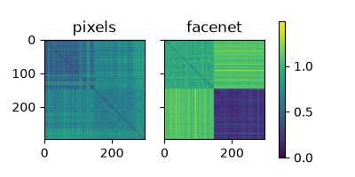
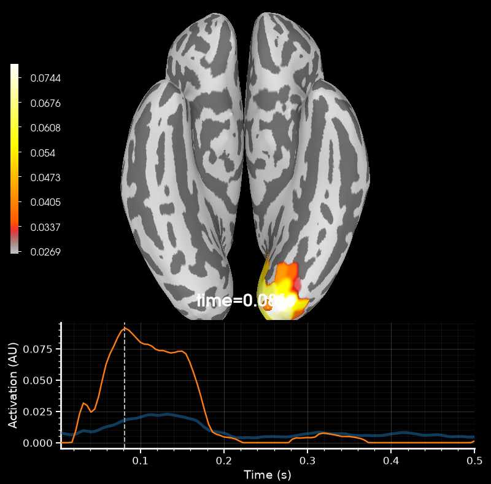
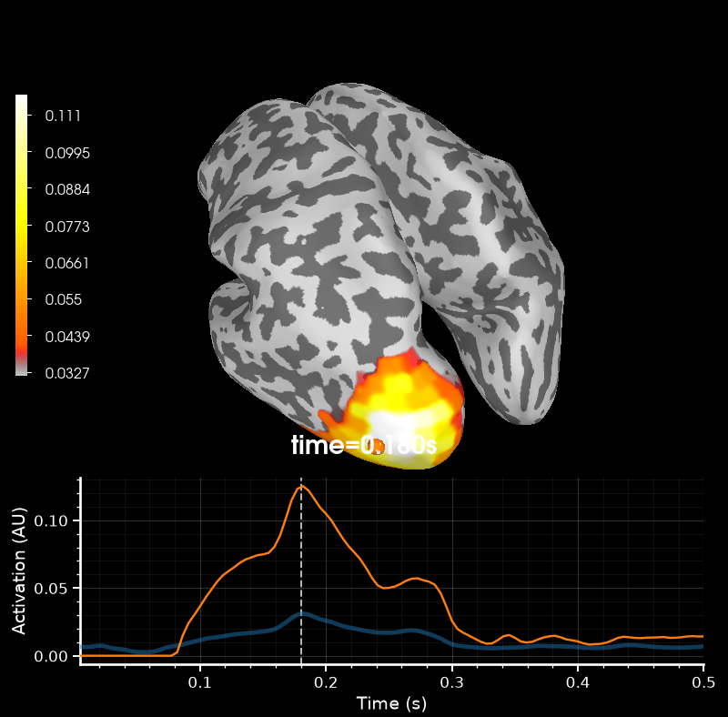

Note
Go to the end to download the full example code.
Tutorial part 2: RSA on source-level MEG data#
In this tutorial, we will perform source-level RSA analysis on MEG data.
If you haven’t done so, I recommend first completing Tutorial part 1: RSA on sensor-level MEG data.
While sensor-level RSA is useful to get a first impression of how neural representations unfold over time, it is not really suited to study differences between brain regions. For this, you want to so RSA in a searchlight pattern across the cortex.
The knowledge you have gained from your sensor-level analysis will serve you well for this part, as the API of MNE-RSA is mostly the same across sensor- and source-level analysis. However, performing a searchlight analysis is a heavy computation that can take a lot of time. Hence, we will also learn about the API regarding restricting the analysis to parts of the data in several ways.
In the cell below, update the data_path variable to point to where you have
extracted the rsa-data.zip
file to.
# ruff: noqa: E402
# sphinx_gallery_thumbnail_number=3
# Set this to where you've extracted `data.zip` to
data_path = "data"
We’ll start by loading the epochs again, but this time, we will restrict them to
only two experimental conditions: the first presentations of famous faces versus
scrambled faces. This will reduce the number of rows/columns in our RDMs and hence
speed up computing and comparing them.
import mne
epochs = mne.read_epochs(f"{data_path}/sub-02/sub-02-epo.fif")
epochs = epochs[["face/famous/first", "scrambled/first"]]
epochs
When we select a subset of epochs, the epochs.metadata field is likewise updated
to match the new selection. This feature is one of the main reasons to use the
.metadata field instead of keeping a separate pandas.DataFrame manually.
epochs.metadata.info()
<class 'pandas.DataFrame'>
Index: 297 entries, 4 to 884
Data columns (total 2 columns):
# Column Non-Null Count Dtype
--- ------ -------------- -----
0 trigger 297 non-null int64
1 file 297 non-null str
dtypes: int64(1), str(1)
memory usage: 7.0 KB
This means we can use the epochs.metadata["file"] column to restrict the pixel and
FaceNet RDMs to just those images still present in the MEG data.
In the cell below, we read the images and FaceNet embeddings and select the proper
rows from the data matrices and use compute_dsm to compute the appropriate RDMs.
from glob import glob
import numpy as np
from PIL import Image
files = sorted(glob(f"{data_path}/stimuli/*.bmp"))
pixels = np.array([np.array(Image.open(f)) for f in files])
store = np.load(f"{data_path}/stimuli/facenet_embeddings.npz")
filenames = store["filenames"]
embeddings = store["embeddings"]
# Select the proper filenames
epochs_filenames = set(epochs.metadata["file"])
selection = [f in epochs_filenames for f in filenames]
filenames = filenames[selection]
# Select the proper rows from `pixels` and `embeddings` and compute the RDMs.
from mne_rsa import compute_rdm
pixel_rdm = compute_rdm(pixels[selection])
facenet_rdm = compute_rdm(embeddings[selection])
Executing the cell below will test whether the RDMs have been properly constructed and plot them.
from mne_rsa import plot_rdms
from scipy.spatial.distance import squareform
if len(pixel_rdm) != len(facenet_rdm):
print("The pixel and FaceNet RDMs are of difference sizes, that can't be right. 🤔")
elif len(pixel_rdm) != 43956:
print("Looks like the RDMs do not have the correct rows. 🤔")
elif (
squareform(pixel_rdm)[:150, :150].mean() >= squareform(pixel_rdm)[150:, 150:].mean()
):
print(
"The pixels RDM doesn't look quite right. Make sure the rows are in "
"alphabetical filename order. 🤔"
)
elif (
squareform(facenet_rdm)[:150, :150].mean()
<= squareform(facenet_rdm)[150:, 150:].mean()
):
print(
"The FaceNet RDM doesn't look quite right. Make sure the rows are in "
"alphabetical filename order. 🤔"
)
else:
print("The RDMs look just right! 😊")
plot_rdms([pixel_rdm, facenet_rdm], names=["pixels", "facenet"])

The RDMs look just right! 😊
To source space!#
In order to perform RSA in source space, we must create source estimates for the epochs. There’s many different ways to do this, and here we’ll use MNE, because we can use the pre-computed inverse operator that is in the data packet and apply it to the epochs to quickly get source estimates.
from mne.minimum_norm import apply_inverse_epochs, read_inverse_operator
inv = read_inverse_operator(f"{data_path}/sub-02/sub-02-inv.fif")
stcs = apply_inverse_epochs(epochs, inv, lambda2=1 / 9)
The result is a list of 297 SourceEstimate objects. Here are the
first 5 of them:
stcs[:5]
[<SourceEstimate | 2050 vertices, subject : sub-02, tmin : -200.0 (ms), tmax : 2899.9999999999995 (ms), tstep : 4.545454545454545 (ms), data shape : (2050, 683), ~10.7 MiB>, <SourceEstimate | 2050 vertices, subject : sub-02, tmin : -200.0 (ms), tmax : 2899.9999999999995 (ms), tstep : 4.545454545454545 (ms), data shape : (2050, 683), ~10.7 MiB>, <SourceEstimate | 2050 vertices, subject : sub-02, tmin : -200.0 (ms), tmax : 2899.9999999999995 (ms), tstep : 4.545454545454545 (ms), data shape : (2050, 683), ~10.7 MiB>, <SourceEstimate | 2050 vertices, subject : sub-02, tmin : -200.0 (ms), tmax : 2899.9999999999995 (ms), tstep : 4.545454545454545 (ms), data shape : (2050, 683), ~10.7 MiB>, <SourceEstimate | 2050 vertices, subject : sub-02, tmin : -200.0 (ms), tmax : 2899.9999999999995 (ms), tstep : 4.545454545454545 (ms), data shape : (2050, 683), ~10.7 MiB>]
The plan is to perform RSA in a searchlight pattern, not only as a sliding window
through time, but also sliding across different locations across the cortex. To this
end, we’ll define spatial patches with a certain radius, and only source points that
fall within a patch are taken into account when computing the RDM for that patch. The
cortex is heavily folded and ideally we define distances between source point as the
shortest path along the cortex, what is known as the geodesic distance, rather than
straight euclidean distance between the XYZ coordinates. MNE-Python is here to help us
out in this regard, as it contains a function to compute such distances and store them
within the mne.SourceSpaces object (through the
mne.add_source_space_distances() function).
Let’s load the file containing the proper source space with pre-computed geodesic distances between source points:
from mne import read_source_spaces
src = read_source_spaces(f"{data_path}/freesurfer/sub-02/bem/sub-02-oct5-src.fif")
To speed things up, let’s restrict the analysis to only the occipital, parietal and
temporal areas on the left hemisphere. There are several ways to tell MNE-RSA which
source points to use, and one of the most convenient ones is to use mne.Label
objects. This allows us to define the desired areas using the “aparc” atlas that
FreeSurfer has constructed for us:
rois = mne.read_labels_from_annot(
"sub-02", parc="aparc", subjects_dir=f"{data_path}/freesurfer", hemi="lh"
)
# These are the regions we're interested in
roi_sel = [
"inferiortemporal-lh",
"middletemporal-lh",
"fusiform-lh",
"bankssts-lh",
"inferiorparietal-lh",
"lateraloccipital-lh",
"lingual-lh",
"pericalcarine-lh",
"cuneus-lh",
"supramarginal-lh",
"superiorparietal-lh",
]
rois = [r for r in rois if r.name in roi_sel]
Source-space RSA#
Time to actually perform the RSA in source space. The function you need is
mne_rsa.rsa_stcs() Take a look at the documentation of that function, which
should look familiar is it is very similar to mne_rsa.rsa_epochs() that you have
used before.
We will perform RSA on the source estimates, using the pixel and FaceNet RDMs as model
RDMs. As was the case with the sensor-level RSA, we will need specify labels to
indicate which image was shown during which epoch and which image corresponds to each
row/column of the pixel_rdm and facenet_rdm. We will use the filenames for
this.
Out searchlight patches will have a spatial radius of 2cm (=0.02 meters) and a
temporal radius of 50 ms (=0.05 seconds). We will restrict the analysis to 0.0 to 0.5
seconds after stimulus onset and to the cortical regions (rois) we’ve selected
above. We can optionally set n_jobs=-1 to use all CPU cores and verbose=True
to show a progress bar.
Depending on the speed of your computer, this may take anywhere from a few seconds to a few minutes to complete.
Restricting source space to 2050 out of [1026 1026] vertices.
Restricting source space to 2050 out of [1025 1025] vertices.
Performing RSA between SourceEstimates and 2 model RDM(s)
Spatial radius: 0.02 meters
Using 373 vertices
Temporal radius: 11 samples
Time interval: 0-0.5 seconds
Number of searchlight patches: 41030
0%| | 0/41030 [00:00<?, ?patch/s]Creating spatio-temporal searchlight patches
0%| | 8/41030 [00:01<2:34:15, 4.43patch/s]
0%| | 12/41030 [00:02<1:44:10, 6.56patch/s]
0%| | 16/41030 [00:02<1:12:04, 9.48patch/s]
0%| | 24/41030 [00:02<43:19, 15.77patch/s]
0%| | 32/41030 [00:02<30:44, 22.23patch/s]
0%| | 44/41030 [00:02<21:31, 31.75patch/s]
0%| | 52/41030 [00:02<18:49, 36.29patch/s]
0%| | 60/41030 [00:02<16:43, 40.83patch/s]
0%| | 68/41030 [00:03<14:17, 47.78patch/s]
0%| | 76/41030 [00:03<18:07, 37.66patch/s]
0%| | 84/41030 [00:03<15:40, 43.54patch/s]
0%| | 92/41030 [00:03<15:21, 44.45patch/s]
0%| | 100/41030 [00:03<14:37, 46.66patch/s]
0%| | 108/41030 [00:03<13:42, 49.74patch/s]
0%| | 116/41030 [00:04<13:11, 51.68patch/s]
0%| | 124/41030 [00:04<12:41, 53.71patch/s]
0%| | 132/41030 [00:04<11:33, 58.93patch/s]
0%| | 140/41030 [00:04<12:35, 54.12patch/s]
0%| | 148/41030 [00:04<12:54, 52.75patch/s]
0%| | 156/41030 [00:04<12:53, 52.82patch/s]
0%| | 164/41030 [00:04<12:19, 55.23patch/s]
0%| | 172/41030 [00:05<12:08, 56.11patch/s]
0%| | 180/41030 [00:05<11:49, 57.55patch/s]
0%| | 188/41030 [00:05<12:24, 54.89patch/s]
0%| | 196/41030 [00:05<12:48, 53.15patch/s]
0%| | 204/41030 [00:05<12:03, 56.45patch/s]
1%| | 212/41030 [00:05<12:48, 53.08patch/s]
1%| | 220/41030 [00:05<12:46, 53.22patch/s]
1%| | 228/41030 [00:06<13:22, 50.86patch/s]
1%| | 236/41030 [00:06<12:20, 55.10patch/s]
1%| | 244/41030 [00:06<11:27, 59.29patch/s]
1%| | 252/41030 [00:06<11:49, 57.48patch/s]
1%| | 260/41030 [00:06<11:06, 61.17patch/s]
1%| | 268/41030 [00:06<11:16, 60.27patch/s]
1%| | 276/41030 [00:06<13:01, 52.16patch/s]
1%| | 284/41030 [00:07<13:03, 52.00patch/s]
1%| | 292/41030 [00:07<12:56, 52.47patch/s]
1%| | 300/41030 [00:07<12:07, 55.96patch/s]
1%| | 308/41030 [00:07<12:59, 52.23patch/s]
1%| | 316/41030 [00:07<12:10, 55.72patch/s]
1%| | 324/41030 [00:07<11:32, 58.76patch/s]
1%| | 332/41030 [00:07<11:38, 58.25patch/s]
1%| | 340/41030 [00:08<12:27, 54.41patch/s]
1%| | 348/41030 [00:08<12:11, 55.64patch/s]
1%| | 356/41030 [00:08<13:08, 51.58patch/s]
1%| | 364/41030 [00:08<12:21, 54.84patch/s]
1%| | 372/41030 [00:08<12:55, 52.45patch/s]
1%| | 380/41030 [00:08<13:03, 51.88patch/s]
1%| | 388/41030 [00:09<12:56, 52.31patch/s]
1%| | 396/41030 [00:09<12:24, 54.55patch/s]
1%| | 404/41030 [00:09<11:37, 58.21patch/s]
1%| | 412/41030 [00:09<11:29, 58.91patch/s]
1%| | 420/41030 [00:09<11:16, 60.07patch/s]
1%| | 428/41030 [00:09<13:33, 49.88patch/s]
1%| | 436/41030 [00:09<12:52, 52.55patch/s]
1%| | 444/41030 [00:10<12:32, 53.96patch/s]
1%| | 452/41030 [00:10<12:07, 55.80patch/s]
1%| | 460/41030 [00:10<12:01, 56.20patch/s]
1%| | 468/41030 [00:10<11:41, 57.79patch/s]
1%| | 476/41030 [00:10<11:54, 56.74patch/s]
1%| | 484/41030 [00:10<12:09, 55.60patch/s]
1%| | 492/41030 [00:10<13:07, 51.49patch/s]
1%| | 500/41030 [00:11<14:11, 47.57patch/s]
1%| | 508/41030 [00:11<13:30, 50.00patch/s]
1%|▏ | 516/41030 [00:11<12:47, 52.81patch/s]
1%|▏ | 524/41030 [00:11<12:00, 56.20patch/s]
1%|▏ | 532/41030 [00:11<11:55, 56.60patch/s]
1%|▏ | 540/41030 [00:11<12:07, 55.69patch/s]
1%|▏ | 548/41030 [00:11<12:09, 55.47patch/s]
1%|▏ | 556/41030 [00:12<12:23, 54.44patch/s]
1%|▏ | 564/41030 [00:12<11:51, 56.87patch/s]
1%|▏ | 572/41030 [00:12<13:46, 48.96patch/s]
1%|▏ | 580/41030 [00:12<13:28, 50.05patch/s]
1%|▏ | 588/41030 [00:12<12:35, 53.51patch/s]
1%|▏ | 596/41030 [00:12<13:46, 48.94patch/s]
1%|▏ | 604/41030 [00:13<13:04, 51.54patch/s]
1%|▏ | 612/41030 [00:13<12:40, 53.16patch/s]
2%|▏ | 620/41030 [00:13<12:05, 55.73patch/s]
2%|▏ | 628/41030 [00:13<11:37, 57.92patch/s]
2%|▏ | 636/41030 [00:13<12:16, 54.86patch/s]
2%|▏ | 644/41030 [00:13<12:48, 52.58patch/s]
2%|▏ | 652/41030 [00:13<13:22, 50.31patch/s]
2%|▏ | 660/41030 [00:14<12:40, 53.12patch/s]
2%|▏ | 668/41030 [00:14<12:29, 53.83patch/s]
2%|▏ | 676/41030 [00:14<13:22, 50.29patch/s]
2%|▏ | 684/41030 [00:14<13:25, 50.06patch/s]
2%|▏ | 692/41030 [00:14<13:23, 50.23patch/s]
2%|▏ | 700/41030 [00:14<12:28, 53.86patch/s]
2%|▏ | 708/41030 [00:15<15:50, 42.41patch/s]
2%|▏ | 716/41030 [00:15<15:12, 44.19patch/s]
2%|▏ | 724/41030 [00:15<13:56, 48.18patch/s]
2%|▏ | 732/41030 [00:15<12:59, 51.67patch/s]
2%|▏ | 740/41030 [00:15<13:48, 48.64patch/s]
2%|▏ | 748/41030 [00:15<13:14, 50.73patch/s]
2%|▏ | 756/41030 [00:16<12:52, 52.14patch/s]
2%|▏ | 764/41030 [00:16<13:18, 50.45patch/s]
2%|▏ | 772/41030 [00:16<14:16, 47.00patch/s]
2%|▏ | 780/41030 [00:16<14:14, 47.09patch/s]
2%|▏ | 788/41030 [00:16<14:01, 47.80patch/s]
2%|▏ | 796/41030 [00:16<13:19, 50.35patch/s]
2%|▏ | 804/41030 [00:17<13:41, 48.98patch/s]
2%|▏ | 812/41030 [00:17<12:46, 52.47patch/s]
2%|▏ | 820/41030 [00:17<12:57, 51.70patch/s]
2%|▏ | 828/41030 [00:17<13:47, 48.59patch/s]
2%|▏ | 836/41030 [00:17<13:38, 49.12patch/s]
2%|▏ | 844/41030 [00:17<13:08, 50.98patch/s]
2%|▏ | 852/41030 [00:17<12:20, 54.26patch/s]
2%|▏ | 860/41030 [00:18<12:20, 54.23patch/s]
2%|▏ | 868/41030 [00:18<11:53, 56.28patch/s]
2%|▏ | 876/41030 [00:18<11:08, 60.06patch/s]
2%|▏ | 884/41030 [00:18<12:07, 55.18patch/s]
2%|▏ | 892/41030 [00:18<13:03, 51.20patch/s]
2%|▏ | 900/41030 [00:18<13:18, 50.28patch/s]
2%|▏ | 908/41030 [00:19<14:14, 46.98patch/s]
2%|▏ | 916/41030 [00:19<14:06, 47.38patch/s]
2%|▏ | 924/41030 [00:19<13:10, 50.72patch/s]
2%|▏ | 932/41030 [00:19<12:22, 53.98patch/s]
2%|▏ | 940/41030 [00:19<11:44, 56.93patch/s]
2%|▏ | 948/41030 [00:19<11:01, 60.59patch/s]
2%|▏ | 956/41030 [00:19<12:31, 53.34patch/s]
2%|▏ | 964/41030 [00:20<13:29, 49.48patch/s]
2%|▏ | 972/41030 [00:20<12:53, 51.76patch/s]
2%|▏ | 980/41030 [00:20<12:31, 53.27patch/s]
2%|▏ | 988/41030 [00:20<12:00, 55.56patch/s]
2%|▏ | 996/41030 [00:20<11:55, 55.97patch/s]
2%|▏ | 1004/41030 [00:20<11:39, 57.19patch/s]
2%|▏ | 1012/41030 [00:20<12:37, 52.85patch/s]
2%|▏ | 1020/41030 [00:21<14:15, 46.78patch/s]
3%|▎ | 1028/41030 [00:21<14:37, 45.59patch/s]
3%|▎ | 1036/41030 [00:21<16:38, 40.05patch/s]
3%|▎ | 1044/41030 [00:21<16:08, 41.29patch/s]
3%|▎ | 1052/41030 [00:21<15:24, 43.23patch/s]
3%|▎ | 1060/41030 [00:22<14:48, 45.01patch/s]
3%|▎ | 1068/41030 [00:22<14:49, 44.93patch/s]
3%|▎ | 1076/41030 [00:22<13:51, 48.07patch/s]
3%|▎ | 1084/41030 [00:22<14:28, 45.97patch/s]
3%|▎ | 1092/41030 [00:22<14:09, 47.04patch/s]
3%|▎ | 1100/41030 [00:23<16:00, 41.58patch/s]
3%|▎ | 1108/41030 [00:23<15:56, 41.76patch/s]
3%|▎ | 1116/41030 [00:23<15:20, 43.36patch/s]
3%|▎ | 1124/41030 [00:23<14:35, 45.59patch/s]
3%|▎ | 1132/41030 [00:23<13:43, 48.46patch/s]
3%|▎ | 1140/41030 [00:23<13:42, 48.51patch/s]
3%|▎ | 1148/41030 [00:24<14:49, 44.82patch/s]
3%|▎ | 1156/41030 [00:24<13:31, 49.16patch/s]
3%|▎ | 1164/41030 [00:24<14:08, 46.96patch/s]
3%|▎ | 1172/41030 [00:24<13:30, 49.16patch/s]
3%|▎ | 1180/41030 [00:24<13:18, 49.88patch/s]
3%|▎ | 1188/41030 [00:24<13:16, 50.03patch/s]
3%|▎ | 1196/41030 [00:25<13:19, 49.81patch/s]
3%|▎ | 1204/41030 [00:25<14:21, 46.23patch/s]
3%|▎ | 1212/41030 [00:25<15:20, 43.24patch/s]
3%|▎ | 1220/41030 [00:25<14:29, 45.76patch/s]
3%|▎ | 1228/41030 [00:25<13:36, 48.76patch/s]
3%|▎ | 1236/41030 [00:25<13:24, 49.48patch/s]
3%|▎ | 1244/41030 [00:25<12:39, 52.40patch/s]
3%|▎ | 1252/41030 [00:26<12:47, 51.83patch/s]
3%|▎ | 1260/41030 [00:26<12:39, 52.37patch/s]
3%|▎ | 1268/41030 [00:26<12:33, 52.76patch/s]
3%|▎ | 1276/41030 [00:26<13:18, 49.77patch/s]
3%|▎ | 1284/41030 [00:26<13:38, 48.57patch/s]
3%|▎ | 1292/41030 [00:26<12:34, 52.67patch/s]
3%|▎ | 1300/41030 [00:27<12:32, 52.82patch/s]
3%|▎ | 1308/41030 [00:27<12:19, 53.71patch/s]
3%|▎ | 1316/41030 [00:27<12:21, 53.55patch/s]
3%|▎ | 1324/41030 [00:27<11:54, 55.55patch/s]
3%|▎ | 1332/41030 [00:27<12:27, 53.09patch/s]
3%|▎ | 1340/41030 [00:27<12:13, 54.13patch/s]
3%|▎ | 1348/41030 [00:28<14:32, 45.50patch/s]
3%|▎ | 1356/41030 [00:28<13:21, 49.49patch/s]
3%|▎ | 1364/41030 [00:28<12:52, 51.32patch/s]
3%|▎ | 1372/41030 [00:28<13:00, 50.82patch/s]
3%|▎ | 1380/41030 [00:28<12:55, 51.15patch/s]
3%|▎ | 1388/41030 [00:28<12:09, 54.33patch/s]
3%|▎ | 1396/41030 [00:28<11:49, 55.83patch/s]
3%|▎ | 1404/41030 [00:29<11:37, 56.82patch/s]
3%|▎ | 1412/41030 [00:29<14:17, 46.21patch/s]
3%|▎ | 1420/41030 [00:29<13:59, 47.16patch/s]
3%|▎ | 1428/41030 [00:29<12:50, 51.41patch/s]
3%|▎ | 1436/41030 [00:29<12:07, 54.40patch/s]
4%|▎ | 1444/41030 [00:29<11:58, 55.08patch/s]
4%|▎ | 1452/41030 [00:30<13:18, 49.55patch/s]
4%|▎ | 1460/41030 [00:30<13:48, 47.75patch/s]
4%|▎ | 1468/41030 [00:30<15:15, 43.21patch/s]
4%|▎ | 1476/41030 [00:30<16:39, 39.58patch/s]
4%|▎ | 1484/41030 [00:30<15:59, 41.24patch/s]
4%|▎ | 1492/41030 [00:30<14:26, 45.64patch/s]
4%|▎ | 1500/41030 [00:31<15:18, 43.05patch/s]
4%|▎ | 1508/41030 [00:31<15:16, 43.11patch/s]
4%|▎ | 1516/41030 [00:31<14:46, 44.59patch/s]
4%|▎ | 1524/41030 [00:31<15:50, 41.58patch/s]
4%|▎ | 1532/41030 [00:31<15:43, 41.88patch/s]
4%|▍ | 1540/41030 [00:32<14:35, 45.11patch/s]
4%|▍ | 1548/41030 [00:32<14:34, 45.12patch/s]
4%|▍ | 1556/41030 [00:32<16:16, 40.44patch/s]
4%|▍ | 1564/41030 [00:32<15:49, 41.56patch/s]
4%|▍ | 1572/41030 [00:32<14:58, 43.91patch/s]
4%|▍ | 1580/41030 [00:33<15:20, 42.87patch/s]
4%|▍ | 1588/41030 [00:33<16:24, 40.07patch/s]
4%|▍ | 1596/41030 [00:33<15:04, 43.58patch/s]
4%|▍ | 1604/41030 [00:33<13:43, 47.86patch/s]
4%|▍ | 1612/41030 [00:33<13:22, 49.10patch/s]
4%|▍ | 1620/41030 [00:33<12:36, 52.07patch/s]
4%|▍ | 1628/41030 [00:33<12:00, 54.70patch/s]
4%|▍ | 1636/41030 [00:34<12:14, 53.65patch/s]
4%|▍ | 1644/41030 [00:34<12:46, 51.35patch/s]
4%|▍ | 1652/41030 [00:34<14:58, 43.84patch/s]
4%|▍ | 1660/41030 [00:34<13:53, 47.24patch/s]
4%|▍ | 1668/41030 [00:34<13:29, 48.61patch/s]
4%|▍ | 1676/41030 [00:34<12:43, 51.55patch/s]
4%|▍ | 1684/41030 [00:35<12:11, 53.78patch/s]
4%|▍ | 1692/41030 [00:35<11:39, 56.22patch/s]
4%|▍ | 1700/41030 [00:35<13:22, 48.99patch/s]
4%|▍ | 1708/41030 [00:35<12:12, 53.67patch/s]
4%|▍ | 1716/41030 [00:35<14:02, 46.67patch/s]
4%|▍ | 1724/41030 [00:35<12:33, 52.15patch/s]
4%|▍ | 1732/41030 [00:36<12:38, 51.78patch/s]
4%|▍ | 1740/41030 [00:36<12:21, 53.01patch/s]
4%|▍ | 1748/41030 [00:36<11:20, 57.75patch/s]
4%|▍ | 1756/41030 [00:36<11:08, 58.75patch/s]
4%|▍ | 1764/41030 [00:36<11:14, 58.18patch/s]
4%|▍ | 1772/41030 [00:36<12:56, 50.58patch/s]
4%|▍ | 1780/41030 [00:36<13:10, 49.68patch/s]
4%|▍ | 1788/41030 [00:37<15:03, 43.41patch/s]
4%|▍ | 1796/41030 [00:37<14:50, 44.04patch/s]
4%|▍ | 1804/41030 [00:37<14:43, 44.41patch/s]
4%|▍ | 1812/41030 [00:37<15:45, 41.49patch/s]
4%|▍ | 1820/41030 [00:37<15:12, 42.95patch/s]
4%|▍ | 1828/41030 [00:38<14:35, 44.76patch/s]
4%|▍ | 1836/41030 [00:38<16:22, 39.88patch/s]
4%|▍ | 1844/41030 [00:38<15:58, 40.89patch/s]
5%|▍ | 1852/41030 [00:38<15:30, 42.10patch/s]
5%|▍ | 1860/41030 [00:38<15:03, 43.34patch/s]
5%|▍ | 1868/41030 [00:39<14:26, 45.19patch/s]
5%|▍ | 1876/41030 [00:39<14:20, 45.52patch/s]
5%|▍ | 1884/41030 [00:39<13:31, 48.23patch/s]
5%|▍ | 1892/41030 [00:39<16:37, 39.25patch/s]
5%|▍ | 1900/41030 [00:39<15:07, 43.10patch/s]
5%|▍ | 1908/41030 [00:39<14:03, 46.39patch/s]
5%|▍ | 1916/41030 [00:40<13:21, 48.81patch/s]
5%|▍ | 1924/41030 [00:40<12:47, 50.96patch/s]
5%|▍ | 1932/41030 [00:40<12:13, 53.30patch/s]
5%|▍ | 1940/41030 [00:40<11:54, 54.71patch/s]
5%|▍ | 1948/41030 [00:40<11:59, 54.33patch/s]
5%|▍ | 1956/41030 [00:40<15:06, 43.08patch/s]
5%|▍ | 1964/41030 [00:41<13:52, 46.93patch/s]
5%|▍ | 1972/41030 [00:41<13:19, 48.87patch/s]
5%|▍ | 1980/41030 [00:41<11:58, 54.36patch/s]
5%|▍ | 1988/41030 [00:41<12:06, 53.73patch/s]
5%|▍ | 1996/41030 [00:41<12:30, 51.98patch/s]
5%|▍ | 2004/41030 [00:41<12:31, 51.92patch/s]
5%|▍ | 2012/41030 [00:41<11:20, 57.34patch/s]
5%|▍ | 2020/41030 [00:42<14:06, 46.10patch/s]
5%|▍ | 2028/41030 [00:42<13:12, 49.20patch/s]
5%|▍ | 2036/41030 [00:42<12:29, 52.05patch/s]
5%|▍ | 2044/41030 [00:42<11:35, 56.04patch/s]
5%|▌ | 2052/41030 [00:42<11:18, 57.48patch/s]
5%|▌ | 2060/41030 [00:42<11:05, 58.51patch/s]
5%|▌ | 2068/41030 [00:42<11:13, 57.89patch/s]
5%|▌ | 2076/41030 [00:43<12:03, 53.81patch/s]
5%|▌ | 2084/41030 [00:43<13:14, 49.02patch/s]
5%|▌ | 2092/41030 [00:43<12:58, 50.04patch/s]
5%|▌ | 2100/41030 [00:43<12:24, 52.29patch/s]
5%|▌ | 2108/41030 [00:43<12:46, 50.78patch/s]
5%|▌ | 2116/41030 [00:43<13:16, 48.88patch/s]
5%|▌ | 2124/41030 [00:44<13:45, 47.12patch/s]
5%|▌ | 2132/41030 [00:44<13:01, 49.78patch/s]
5%|▌ | 2140/41030 [00:44<12:20, 52.48patch/s]
5%|▌ | 2148/41030 [00:44<15:06, 42.90patch/s]
5%|▌ | 2156/41030 [00:44<15:13, 42.54patch/s]
5%|▌ | 2164/41030 [00:45<14:45, 43.89patch/s]
5%|▌ | 2172/41030 [00:45<14:40, 44.14patch/s]
5%|▌ | 2180/41030 [00:45<13:28, 48.05patch/s]
5%|▌ | 2188/41030 [00:45<12:31, 51.67patch/s]
5%|▌ | 2196/41030 [00:45<12:30, 51.71patch/s]
5%|▌ | 2204/41030 [00:45<15:08, 42.74patch/s]
5%|▌ | 2212/41030 [00:46<15:45, 41.04patch/s]
5%|▌ | 2220/41030 [00:46<14:28, 44.68patch/s]
5%|▌ | 2228/41030 [00:46<13:47, 46.92patch/s]
5%|▌ | 2244/41030 [00:46<11:12, 57.66patch/s]
5%|▌ | 2252/41030 [00:46<11:35, 55.74patch/s]
6%|▌ | 2260/41030 [00:46<11:44, 55.04patch/s]
6%|▌ | 2268/41030 [00:47<10:47, 59.85patch/s]
6%|▌ | 2276/41030 [00:47<12:36, 51.23patch/s]
6%|▌ | 2284/41030 [00:47<11:25, 56.51patch/s]
6%|▌ | 2292/41030 [00:47<12:53, 50.11patch/s]
6%|▌ | 2300/41030 [00:47<11:54, 54.19patch/s]
6%|▌ | 2308/41030 [00:47<11:37, 55.54patch/s]
6%|▌ | 2316/41030 [00:47<11:26, 56.36patch/s]
6%|▌ | 2324/41030 [00:48<11:23, 56.59patch/s]
6%|▌ | 2332/41030 [00:48<11:53, 54.20patch/s]
6%|▌ | 2340/41030 [00:48<12:54, 49.94patch/s]
6%|▌ | 2348/41030 [00:48<12:13, 52.71patch/s]
6%|▌ | 2356/41030 [00:48<12:13, 52.69patch/s]
6%|▌ | 2364/41030 [00:48<11:57, 53.91patch/s]
6%|▌ | 2372/41030 [00:49<13:07, 49.11patch/s]
6%|▌ | 2380/41030 [00:49<12:33, 51.29patch/s]
6%|▌ | 2388/41030 [00:49<12:30, 51.46patch/s]
6%|▌ | 2396/41030 [00:49<11:44, 54.82patch/s]
6%|▌ | 2404/41030 [00:49<15:01, 42.83patch/s]
6%|▌ | 2412/41030 [00:49<13:33, 47.47patch/s]
6%|▌ | 2420/41030 [00:50<13:22, 48.11patch/s]
6%|▌ | 2428/41030 [00:50<13:34, 47.37patch/s]
6%|▌ | 2436/41030 [00:50<13:24, 47.98patch/s]
6%|▌ | 2444/41030 [00:50<12:57, 49.63patch/s]
6%|▌ | 2452/41030 [00:50<12:44, 50.49patch/s]
6%|▌ | 2460/41030 [00:50<12:45, 50.40patch/s]
6%|▌ | 2468/41030 [00:50<13:07, 48.96patch/s]
6%|▌ | 2476/41030 [00:51<12:58, 49.52patch/s]
6%|▌ | 2484/41030 [00:51<13:12, 48.63patch/s]
6%|▌ | 2492/41030 [00:51<12:39, 50.75patch/s]
6%|▌ | 2500/41030 [00:51<12:28, 51.47patch/s]
6%|▌ | 2508/41030 [00:51<13:25, 47.84patch/s]
6%|▌ | 2516/41030 [00:51<12:24, 51.71patch/s]
6%|▌ | 2524/41030 [00:52<12:11, 52.61patch/s]
6%|▌ | 2532/41030 [00:52<14:02, 45.71patch/s]
6%|▌ | 2540/41030 [00:52<13:01, 49.23patch/s]
6%|▌ | 2548/41030 [00:52<12:17, 52.15patch/s]
6%|▌ | 2556/41030 [00:52<12:28, 51.43patch/s]
6%|▌ | 2564/41030 [00:52<12:10, 52.63patch/s]
6%|▋ | 2572/41030 [00:53<11:50, 54.13patch/s]
6%|▋ | 2580/41030 [00:53<12:55, 49.56patch/s]
6%|▋ | 2588/41030 [00:53<12:44, 50.28patch/s]
6%|▋ | 2596/41030 [00:53<14:12, 45.07patch/s]
6%|▋ | 2604/41030 [00:53<12:50, 49.86patch/s]
6%|▋ | 2612/41030 [00:53<12:26, 51.43patch/s]
6%|▋ | 2620/41030 [00:53<12:13, 52.38patch/s]
6%|▋ | 2628/41030 [00:54<11:42, 54.64patch/s]
6%|▋ | 2636/41030 [00:54<11:36, 55.10patch/s]
6%|▋ | 2644/41030 [00:54<10:57, 58.38patch/s]
6%|▋ | 2652/41030 [00:54<10:31, 60.72patch/s]
6%|▋ | 2660/41030 [00:54<10:18, 62.05patch/s]
7%|▋ | 2668/41030 [00:54<12:37, 50.68patch/s]
7%|▋ | 2676/41030 [00:55<12:56, 49.36patch/s]
7%|▋ | 2684/41030 [00:55<12:36, 50.68patch/s]
7%|▋ | 2692/41030 [00:55<12:10, 52.48patch/s]
7%|▋ | 2700/41030 [00:55<12:32, 50.91patch/s]
7%|▋ | 2708/41030 [00:55<12:44, 50.15patch/s]
7%|▋ | 2716/41030 [00:55<12:02, 53.01patch/s]
7%|▋ | 2724/41030 [00:55<12:25, 51.35patch/s]
7%|▋ | 2732/41030 [00:56<13:16, 48.08patch/s]
7%|▋ | 2740/41030 [00:56<13:05, 48.76patch/s]
7%|▋ | 2748/41030 [00:56<12:05, 52.80patch/s]
7%|▋ | 2756/41030 [00:56<12:55, 49.34patch/s]
7%|▋ | 2764/41030 [00:56<12:19, 51.75patch/s]
7%|▋ | 2772/41030 [00:56<13:10, 48.42patch/s]
7%|▋ | 2780/41030 [00:57<14:42, 43.33patch/s]
7%|▋ | 2788/41030 [00:57<15:45, 40.44patch/s]
7%|▋ | 2796/41030 [00:57<16:00, 39.81patch/s]
7%|▋ | 2804/41030 [00:57<14:37, 43.57patch/s]
7%|▋ | 2812/41030 [00:57<14:57, 42.59patch/s]
7%|▋ | 2820/41030 [00:58<14:20, 44.40patch/s]
7%|▋ | 2828/41030 [00:58<14:58, 42.52patch/s]
7%|▋ | 2836/41030 [00:58<14:12, 44.79patch/s]
7%|▋ | 2844/41030 [00:58<15:47, 40.29patch/s]
7%|▋ | 2852/41030 [00:58<15:01, 42.36patch/s]
7%|▋ | 2860/41030 [00:59<14:39, 43.41patch/s]
7%|▋ | 2868/41030 [00:59<14:28, 43.96patch/s]
7%|▋ | 2876/41030 [00:59<14:05, 45.13patch/s]
7%|▋ | 2884/41030 [00:59<13:53, 45.76patch/s]
7%|▋ | 2892/41030 [00:59<13:12, 48.14patch/s]
7%|▋ | 2900/41030 [00:59<14:41, 43.27patch/s]
7%|▋ | 2908/41030 [01:00<15:30, 40.97patch/s]
7%|▋ | 2916/41030 [01:00<14:45, 43.02patch/s]
7%|▋ | 2924/41030 [01:00<13:44, 46.24patch/s]
7%|▋ | 2932/41030 [01:00<12:58, 48.95patch/s]
7%|▋ | 2940/41030 [01:00<13:03, 48.64patch/s]
7%|▋ | 2948/41030 [01:00<12:02, 52.74patch/s]
7%|▋ | 2956/41030 [01:01<12:02, 52.70patch/s]
7%|▋ | 2964/41030 [01:01<11:28, 55.30patch/s]
7%|▋ | 2972/41030 [01:01<13:57, 45.46patch/s]
7%|▋ | 2980/41030 [01:01<14:49, 42.77patch/s]
7%|▋ | 2988/41030 [01:01<13:55, 45.51patch/s]
7%|▋ | 2996/41030 [01:01<12:59, 48.77patch/s]
7%|▋ | 3004/41030 [01:02<12:36, 50.28patch/s]
7%|▋ | 3012/41030 [01:02<12:59, 48.78patch/s]
7%|▋ | 3020/41030 [01:02<12:52, 49.23patch/s]
7%|▋ | 3028/41030 [01:02<14:13, 44.51patch/s]
7%|▋ | 3036/41030 [01:02<13:11, 48.00patch/s]
7%|▋ | 3044/41030 [01:02<14:04, 44.99patch/s]
7%|▋ | 3052/41030 [01:03<13:53, 45.55patch/s]
7%|▋ | 3060/41030 [01:03<13:25, 47.14patch/s]
7%|▋ | 3068/41030 [01:03<13:03, 48.44patch/s]
7%|▋ | 3076/41030 [01:03<12:40, 49.90patch/s]
8%|▊ | 3084/41030 [01:03<14:38, 43.21patch/s]
8%|▊ | 3092/41030 [01:04<14:20, 44.07patch/s]
8%|▊ | 3100/41030 [01:04<14:21, 44.05patch/s]
8%|▊ | 3108/41030 [01:04<13:50, 45.68patch/s]
8%|▊ | 3116/41030 [01:04<13:13, 47.80patch/s]
8%|▊ | 3124/41030 [01:04<13:10, 47.94patch/s]
8%|▊ | 3132/41030 [01:04<12:46, 49.44patch/s]
8%|▊ | 3140/41030 [01:05<14:31, 43.46patch/s]
8%|▊ | 3148/41030 [01:05<16:54, 37.35patch/s]
8%|▊ | 3156/41030 [01:05<15:23, 41.01patch/s]
8%|▊ | 3164/41030 [01:05<14:46, 42.72patch/s]
8%|▊ | 3172/41030 [01:05<14:23, 43.84patch/s]
8%|▊ | 3180/41030 [01:05<14:05, 44.75patch/s]
8%|▊ | 3188/41030 [01:06<14:35, 43.25patch/s]
8%|▊ | 3196/41030 [01:06<16:07, 39.12patch/s]
8%|▊ | 3204/41030 [01:06<16:00, 39.38patch/s]
8%|▊ | 3212/41030 [01:06<14:49, 42.53patch/s]
8%|▊ | 3220/41030 [01:07<15:20, 41.09patch/s]
8%|▊ | 3228/41030 [01:07<13:54, 45.32patch/s]
8%|▊ | 3236/41030 [01:07<13:23, 47.05patch/s]
8%|▊ | 3244/41030 [01:07<12:55, 48.72patch/s]
8%|▊ | 3252/41030 [01:07<13:49, 45.53patch/s]
8%|▊ | 3260/41030 [01:07<15:07, 41.63patch/s]
8%|▊ | 3268/41030 [01:08<13:33, 46.40patch/s]
8%|▊ | 3276/41030 [01:08<12:34, 50.01patch/s]
8%|▊ | 3284/41030 [01:08<11:53, 52.92patch/s]
8%|▊ | 3292/41030 [01:08<12:17, 51.19patch/s]
8%|▊ | 3300/41030 [01:08<12:20, 50.92patch/s]
8%|▊ | 3308/41030 [01:08<13:55, 45.16patch/s]
8%|▊ | 3316/41030 [01:09<16:49, 37.35patch/s]
8%|▊ | 3324/41030 [01:09<15:43, 39.96patch/s]
8%|▊ | 3332/41030 [01:09<15:03, 41.73patch/s]
8%|▊ | 3340/41030 [01:09<14:42, 42.72patch/s]
8%|▊ | 3348/41030 [01:09<14:45, 42.56patch/s]
8%|▊ | 3356/41030 [01:09<14:31, 43.21patch/s]
8%|▊ | 3364/41030 [01:10<14:01, 44.74patch/s]
8%|▊ | 3372/41030 [01:10<17:40, 35.50patch/s]
8%|▊ | 3380/41030 [01:10<16:25, 38.21patch/s]
8%|▊ | 3388/41030 [01:10<15:40, 40.01patch/s]
8%|▊ | 3396/41030 [01:11<15:00, 41.79patch/s]
8%|▊ | 3404/41030 [01:11<14:22, 43.65patch/s]
8%|▊ | 3412/41030 [01:11<13:25, 46.72patch/s]
8%|▊ | 3420/41030 [01:11<17:35, 35.65patch/s]
8%|▊ | 3428/41030 [01:11<16:06, 38.92patch/s]
8%|▊ | 3436/41030 [01:11<14:56, 41.95patch/s]
8%|▊ | 3444/41030 [01:12<14:26, 43.39patch/s]
8%|▊ | 3452/41030 [01:12<13:30, 46.37patch/s]
8%|▊ | 3460/41030 [01:12<14:01, 44.67patch/s]
8%|▊ | 3468/41030 [01:12<13:11, 47.46patch/s]
8%|▊ | 3476/41030 [01:12<16:34, 37.74patch/s]
8%|▊ | 3484/41030 [01:13<15:33, 40.23patch/s]
9%|▊ | 3492/41030 [01:13<14:58, 41.77patch/s]
9%|▊ | 3500/41030 [01:13<14:56, 41.87patch/s]
9%|▊ | 3508/41030 [01:13<15:16, 40.94patch/s]
9%|▊ | 3516/41030 [01:13<15:24, 40.56patch/s]
9%|▊ | 3524/41030 [01:14<17:32, 35.64patch/s]
9%|▊ | 3532/41030 [01:14<16:15, 38.45patch/s]
9%|▊ | 3540/41030 [01:14<14:23, 43.43patch/s]
9%|▊ | 3548/41030 [01:14<13:28, 46.33patch/s]
9%|▊ | 3556/41030 [01:14<12:26, 50.18patch/s]
9%|▊ | 3564/41030 [01:14<12:14, 51.01patch/s]
9%|▊ | 3572/41030 [01:15<11:23, 54.80patch/s]
9%|▊ | 3588/41030 [01:15<12:54, 48.37patch/s]
9%|▉ | 3596/41030 [01:15<11:46, 52.96patch/s]
9%|▉ | 3604/41030 [01:15<11:32, 54.05patch/s]
9%|▉ | 3612/41030 [01:15<10:52, 57.32patch/s]
9%|▉ | 3620/41030 [01:15<10:32, 59.14patch/s]
9%|▉ | 3628/41030 [01:16<10:24, 59.85patch/s]
9%|▉ | 3636/41030 [01:16<10:09, 61.39patch/s]
9%|▉ | 3644/41030 [01:16<10:08, 61.43patch/s]
9%|▉ | 3652/41030 [01:16<13:35, 45.83patch/s]
9%|▉ | 3660/41030 [01:16<12:12, 51.04patch/s]
9%|▉ | 3668/41030 [01:16<12:37, 49.33patch/s]
9%|▉ | 3676/41030 [01:16<12:01, 51.77patch/s]
9%|▉ | 3684/41030 [01:17<11:36, 53.59patch/s]
9%|▉ | 3692/41030 [01:17<11:39, 53.36patch/s]
9%|▉ | 3700/41030 [01:17<11:14, 55.33patch/s]
9%|▉ | 3708/41030 [01:17<11:19, 54.96patch/s]
9%|▉ | 3716/41030 [01:17<14:04, 44.18patch/s]
9%|▉ | 3724/41030 [01:17<12:40, 49.04patch/s]
9%|▉ | 3732/41030 [01:18<13:06, 47.41patch/s]
9%|▉ | 3740/41030 [01:18<12:44, 48.77patch/s]
9%|▉ | 3748/41030 [01:18<12:24, 50.06patch/s]
9%|▉ | 3756/41030 [01:18<13:12, 47.02patch/s]
9%|▉ | 3764/41030 [01:18<13:12, 47.00patch/s]
9%|▉ | 3772/41030 [01:19<15:53, 39.07patch/s]
9%|▉ | 3780/41030 [01:19<14:58, 41.44patch/s]
9%|▉ | 3788/41030 [01:19<14:31, 42.73patch/s]
9%|▉ | 3796/41030 [01:19<14:18, 43.35patch/s]
9%|▉ | 3804/41030 [01:19<14:25, 43.00patch/s]
9%|▉ | 3812/41030 [01:19<14:58, 41.42patch/s]
9%|▉ | 3820/41030 [01:20<17:07, 36.20patch/s]
9%|▉ | 3828/41030 [01:20<15:52, 39.06patch/s]
9%|▉ | 3836/41030 [01:20<15:46, 39.28patch/s]
9%|▉ | 3844/41030 [01:20<15:44, 39.38patch/s]
9%|▉ | 3852/41030 [01:21<15:11, 40.78patch/s]
9%|▉ | 3860/41030 [01:21<14:03, 44.07patch/s]
9%|▉ | 3868/41030 [01:21<16:41, 37.11patch/s]
9%|▉ | 3876/41030 [01:21<15:45, 39.29patch/s]
9%|▉ | 3884/41030 [01:21<14:54, 41.53patch/s]
9%|▉ | 3892/41030 [01:21<14:21, 43.08patch/s]
10%|▉ | 3900/41030 [01:22<14:24, 42.97patch/s]
10%|▉ | 3908/41030 [01:22<13:25, 46.08patch/s]
10%|▉ | 3916/41030 [01:22<12:44, 48.57patch/s]
10%|▉ | 3924/41030 [01:22<15:57, 38.75patch/s]
10%|▉ | 3932/41030 [01:22<15:28, 39.97patch/s]
10%|▉ | 3940/41030 [01:23<14:30, 42.62patch/s]
10%|▉ | 3948/41030 [01:23<14:07, 43.75patch/s]
10%|▉ | 3956/41030 [01:23<14:06, 43.82patch/s]
10%|▉ | 3964/41030 [01:23<14:19, 43.11patch/s]
10%|▉ | 3972/41030 [01:23<17:52, 34.55patch/s]
10%|▉ | 3980/41030 [01:24<16:15, 37.96patch/s]
10%|▉ | 3988/41030 [01:24<14:13, 43.40patch/s]
10%|▉ | 3996/41030 [01:24<13:07, 47.03patch/s]
10%|▉ | 4004/41030 [01:24<12:24, 49.72patch/s]
10%|▉ | 4012/41030 [01:24<12:42, 48.54patch/s]
10%|▉ | 4020/41030 [01:24<11:26, 53.89patch/s]
10%|▉ | 4028/41030 [01:24<11:02, 55.89patch/s]
10%|▉ | 4036/41030 [01:25<14:21, 42.96patch/s]
10%|▉ | 4044/41030 [01:25<13:02, 47.29patch/s]
10%|▉ | 4052/41030 [01:25<12:21, 49.89patch/s]
10%|▉ | 4060/41030 [01:25<12:14, 50.34patch/s]
10%|▉ | 4068/41030 [01:25<11:32, 53.36patch/s]
10%|▉ | 4076/41030 [01:25<12:02, 51.14patch/s]
10%|▉ | 4084/41030 [01:26<12:05, 50.90patch/s]
10%|▉ | 4092/41030 [01:26<14:22, 42.81patch/s]
10%|▉ | 4100/41030 [01:26<13:11, 46.67patch/s]
10%|█ | 4108/41030 [01:26<12:13, 50.37patch/s]
10%|█ | 4116/41030 [01:26<12:09, 50.61patch/s]
10%|█ | 4124/41030 [01:26<12:11, 50.46patch/s]
10%|█ | 4132/41030 [01:27<13:15, 46.38patch/s]
10%|█ | 4140/41030 [01:27<13:00, 47.28patch/s]
10%|█ | 4148/41030 [01:27<16:01, 38.38patch/s]
10%|█ | 4156/41030 [01:27<14:28, 42.47patch/s]
10%|█ | 4164/41030 [01:27<14:16, 43.05patch/s]
10%|█ | 4172/41030 [01:28<13:50, 44.40patch/s]
10%|█ | 4180/41030 [01:28<12:59, 47.27patch/s]
10%|█ | 4188/41030 [01:28<12:53, 47.64patch/s]
10%|█ | 4196/41030 [01:28<13:01, 47.15patch/s]
10%|█ | 4204/41030 [01:28<13:01, 47.13patch/s]
10%|█ | 4212/41030 [01:28<13:48, 44.46patch/s]
10%|█ | 4220/41030 [01:29<13:02, 47.07patch/s]
10%|█ | 4228/41030 [01:29<12:25, 49.37patch/s]
10%|█ | 4236/41030 [01:29<12:43, 48.19patch/s]
10%|█ | 4244/41030 [01:29<12:14, 50.12patch/s]
10%|█ | 4252/41030 [01:29<12:47, 47.89patch/s]
10%|█ | 4260/41030 [01:29<12:03, 50.82patch/s]
10%|█ | 4268/41030 [01:30<14:19, 42.75patch/s]
10%|█ | 4284/41030 [01:30<12:11, 50.20patch/s]
10%|█ | 4292/41030 [01:30<11:08, 54.98patch/s]
10%|█ | 4300/41030 [01:30<10:25, 58.67patch/s]
10%|█ | 4308/41030 [01:30<11:30, 53.19patch/s]
11%|█ | 4316/41030 [01:31<12:32, 48.77patch/s]
11%|█ | 4324/41030 [01:31<13:00, 47.05patch/s]
11%|█ | 4332/41030 [01:31<14:42, 41.60patch/s]
11%|█ | 4340/41030 [01:31<14:11, 43.07patch/s]
11%|█ | 4348/41030 [01:31<13:59, 43.71patch/s]
11%|█ | 4356/41030 [01:31<13:55, 43.88patch/s]
11%|█ | 4364/41030 [01:32<14:08, 43.20patch/s]
11%|█ | 4372/41030 [01:32<14:31, 42.08patch/s]
11%|█ | 4380/41030 [01:32<14:19, 42.62patch/s]
11%|█ | 4388/41030 [01:32<14:28, 42.18patch/s]
11%|█ | 4396/41030 [01:32<14:18, 42.69patch/s]
11%|█ | 4404/41030 [01:33<14:51, 41.08patch/s]
11%|█ | 4412/41030 [01:33<14:48, 41.22patch/s]
11%|█ | 4420/41030 [01:33<13:23, 45.57patch/s]
11%|█ | 4428/41030 [01:33<14:02, 43.46patch/s]
11%|█ | 4436/41030 [01:33<15:26, 39.49patch/s]
11%|█ | 4444/41030 [01:34<16:25, 37.13patch/s]
11%|█ | 4452/41030 [01:34<15:41, 38.86patch/s]
11%|█ | 4460/41030 [01:34<14:06, 43.18patch/s]
11%|█ | 4468/41030 [01:34<13:40, 44.55patch/s]
11%|█ | 4476/41030 [01:34<13:34, 44.86patch/s]
11%|█ | 4484/41030 [01:35<17:31, 34.74patch/s]
11%|█ | 4492/41030 [01:35<17:08, 35.54patch/s]
11%|█ | 4500/41030 [01:35<16:13, 37.52patch/s]
11%|█ | 4508/41030 [01:35<15:30, 39.26patch/s]
11%|█ | 4516/41030 [01:35<15:10, 40.09patch/s]
11%|█ | 4524/41030 [01:36<14:38, 41.56patch/s]
11%|█ | 4532/41030 [01:36<16:58, 35.83patch/s]
11%|█ | 4540/41030 [01:36<15:19, 39.69patch/s]
11%|█ | 4548/41030 [01:36<14:07, 43.06patch/s]
11%|█ | 4556/41030 [01:36<13:21, 45.50patch/s]
11%|█ | 4564/41030 [01:37<13:22, 45.45patch/s]
11%|█ | 4572/41030 [01:37<12:31, 48.51patch/s]
11%|█ | 4580/41030 [01:37<12:39, 47.97patch/s]
11%|█ | 4588/41030 [01:37<11:46, 51.60patch/s]
11%|█ | 4596/41030 [01:37<15:11, 39.98patch/s]
11%|█ | 4604/41030 [01:37<13:37, 44.53patch/s]
11%|█ | 4612/41030 [01:38<13:01, 46.58patch/s]
11%|█▏ | 4620/41030 [01:38<13:16, 45.70patch/s]
11%|█▏ | 4628/41030 [01:38<12:57, 46.82patch/s]
11%|█▏ | 4636/41030 [01:38<12:03, 50.31patch/s]
11%|█▏ | 4644/41030 [01:38<11:31, 52.64patch/s]
11%|█▏ | 4652/41030 [01:38<14:17, 42.43patch/s]
11%|█▏ | 4660/41030 [01:39<13:10, 46.00patch/s]
11%|█▏ | 4668/41030 [01:39<12:34, 48.21patch/s]
11%|█▏ | 4676/41030 [01:39<11:27, 52.89patch/s]
11%|█▏ | 4684/41030 [01:39<10:20, 58.59patch/s]
11%|█▏ | 4692/41030 [01:39<10:21, 58.43patch/s]
11%|█▏ | 4700/41030 [01:39<10:37, 57.00patch/s]
11%|█▏ | 4708/41030 [01:39<11:06, 54.48patch/s]
11%|█▏ | 4716/41030 [01:40<14:08, 42.82patch/s]
12%|█▏ | 4724/41030 [01:40<12:56, 46.74patch/s]
12%|█▏ | 4732/41030 [01:40<11:45, 51.45patch/s]
12%|█▏ | 4740/41030 [01:40<10:37, 56.91patch/s]
12%|█▏ | 4748/41030 [01:40<10:37, 56.93patch/s]
12%|█▏ | 4756/41030 [01:40<11:07, 54.34patch/s]
12%|█▏ | 4764/41030 [01:41<11:04, 54.60patch/s]
12%|█▏ | 4772/41030 [01:41<10:19, 58.55patch/s]
12%|█▏ | 4780/41030 [01:41<13:32, 44.63patch/s]
12%|█▏ | 4788/41030 [01:41<12:03, 50.12patch/s]
12%|█▏ | 4796/41030 [01:41<11:15, 53.65patch/s]
12%|█▏ | 4804/41030 [01:41<11:06, 54.38patch/s]
12%|█▏ | 4812/41030 [01:41<11:21, 53.16patch/s]
12%|█▏ | 4820/41030 [01:42<10:45, 56.11patch/s]
12%|█▏ | 4828/41030 [01:42<10:47, 55.89patch/s]
12%|█▏ | 4836/41030 [01:42<10:36, 56.88patch/s]
12%|█▏ | 4844/41030 [01:42<14:26, 41.77patch/s]
12%|█▏ | 4852/41030 [01:42<13:23, 45.02patch/s]
12%|█▏ | 4860/41030 [01:42<13:24, 44.96patch/s]
12%|█▏ | 4868/41030 [01:43<13:34, 44.40patch/s]
12%|█▏ | 4876/41030 [01:43<13:38, 44.15patch/s]
12%|█▏ | 4884/41030 [01:43<13:11, 45.64patch/s]
12%|█▏ | 4892/41030 [01:43<13:03, 46.15patch/s]
12%|█▏ | 4900/41030 [01:43<15:26, 39.00patch/s]
12%|█▏ | 4908/41030 [01:44<14:38, 41.14patch/s]
12%|█▏ | 4916/41030 [01:44<14:27, 41.63patch/s]
12%|█▏ | 4924/41030 [01:44<14:17, 42.10patch/s]
12%|█▏ | 4932/41030 [01:44<13:49, 43.51patch/s]
12%|█▏ | 4940/41030 [01:44<14:31, 41.42patch/s]
12%|█▏ | 4948/41030 [01:45<16:12, 37.12patch/s]
12%|█▏ | 4956/41030 [01:45<15:05, 39.84patch/s]
12%|█▏ | 4964/41030 [01:45<15:07, 39.74patch/s]
12%|█▏ | 4972/41030 [01:45<15:11, 39.58patch/s]
12%|█▏ | 4980/41030 [01:45<14:40, 40.93patch/s]
12%|█▏ | 4988/41030 [01:46<14:30, 41.40patch/s]
12%|█▏ | 4996/41030 [01:46<13:45, 43.65patch/s]
12%|█▏ | 5004/41030 [01:46<16:16, 36.88patch/s]
12%|█▏ | 5012/41030 [01:46<16:35, 36.19patch/s]
12%|█▏ | 5020/41030 [01:46<15:19, 39.18patch/s]
12%|█▏ | 5028/41030 [01:47<14:41, 40.84patch/s]
12%|█▏ | 5036/41030 [01:47<14:13, 42.19patch/s]
12%|█▏ | 5044/41030 [01:47<14:18, 41.92patch/s]
12%|█▏ | 5052/41030 [01:47<17:04, 35.11patch/s]
12%|█▏ | 5060/41030 [01:48<17:15, 34.74patch/s]
12%|█▏ | 5068/41030 [01:48<15:34, 38.49patch/s]
12%|█▏ | 5076/41030 [01:48<15:42, 38.16patch/s]
12%|█▏ | 5084/41030 [01:48<15:29, 38.66patch/s]
12%|█▏ | 5092/41030 [01:48<15:12, 39.41patch/s]
12%|█▏ | 5100/41030 [01:49<16:51, 35.52patch/s]
12%|█▏ | 5108/41030 [01:49<15:56, 37.56patch/s]
12%|█▏ | 5116/41030 [01:49<16:19, 36.67patch/s]
12%|█▏ | 5124/41030 [01:49<15:10, 39.44patch/s]
13%|█▎ | 5132/41030 [01:49<14:44, 40.57patch/s]
13%|█▎ | 5140/41030 [01:50<14:10, 42.19patch/s]
13%|█▎ | 5148/41030 [01:50<16:05, 37.17patch/s]
13%|█▎ | 5156/41030 [01:50<16:42, 35.79patch/s]
13%|█▎ | 5164/41030 [01:50<15:31, 38.49patch/s]
13%|█▎ | 5172/41030 [01:50<15:25, 38.73patch/s]
13%|█▎ | 5180/41030 [01:51<15:17, 39.08patch/s]
13%|█▎ | 5188/41030 [01:51<14:49, 40.28patch/s]
13%|█▎ | 5196/41030 [01:51<15:07, 39.47patch/s]
13%|█▎ | 5204/41030 [01:51<15:26, 38.66patch/s]
13%|█▎ | 5212/41030 [01:51<14:56, 39.95patch/s]
13%|█▎ | 5220/41030 [01:52<14:38, 40.75patch/s]
13%|█▎ | 5228/41030 [01:52<15:00, 39.75patch/s]
13%|█▎ | 5236/41030 [01:52<14:33, 40.99patch/s]
13%|█▎ | 5244/41030 [01:52<14:30, 41.13patch/s]
13%|█▎ | 5252/41030 [01:52<17:03, 34.95patch/s]
13%|█▎ | 5260/41030 [01:53<16:13, 36.73patch/s]
13%|█▎ | 5268/41030 [01:53<15:37, 38.14patch/s]
13%|█▎ | 5276/41030 [01:53<17:37, 33.82patch/s]
13%|█▎ | 5284/41030 [01:53<16:29, 36.13patch/s]
13%|█▎ | 5292/41030 [01:54<15:20, 38.84patch/s]
13%|█▎ | 5300/41030 [01:54<16:06, 36.98patch/s]
13%|█▎ | 5308/41030 [01:54<15:01, 39.61patch/s]
13%|█▎ | 5316/41030 [01:54<14:17, 41.65patch/s]
13%|█▎ | 5324/41030 [01:54<13:43, 43.35patch/s]
13%|█▎ | 5332/41030 [01:54<13:48, 43.11patch/s]
13%|█▎ | 5340/41030 [01:55<14:04, 42.26patch/s]
13%|█▎ | 5348/41030 [01:55<13:05, 45.42patch/s]
13%|█▎ | 5356/41030 [01:55<14:50, 40.05patch/s]
13%|█▎ | 5364/41030 [01:55<13:57, 42.56patch/s]
13%|█▎ | 5372/41030 [01:55<13:39, 43.51patch/s]
13%|█▎ | 5380/41030 [01:56<13:05, 45.36patch/s]
13%|█▎ | 5388/41030 [01:56<13:15, 44.79patch/s]
13%|█▎ | 5396/41030 [01:56<12:20, 48.11patch/s]
13%|█▎ | 5404/41030 [01:56<13:22, 44.39patch/s]
13%|█▎ | 5412/41030 [01:56<16:47, 35.34patch/s]
13%|█▎ | 5420/41030 [01:57<15:44, 37.71patch/s]
13%|█▎ | 5428/41030 [01:57<14:39, 40.50patch/s]
13%|█▎ | 5436/41030 [01:57<13:34, 43.72patch/s]
13%|█▎ | 5444/41030 [01:57<12:53, 46.02patch/s]
13%|█▎ | 5452/41030 [01:57<13:43, 43.21patch/s]
13%|█▎ | 5460/41030 [01:58<16:01, 37.01patch/s]
13%|█▎ | 5468/41030 [01:58<15:23, 38.52patch/s]
13%|█▎ | 5476/41030 [01:58<15:02, 39.41patch/s]
13%|█▎ | 5484/41030 [01:58<13:55, 42.52patch/s]
13%|█▎ | 5492/41030 [01:58<14:20, 41.31patch/s]
13%|█▎ | 5500/41030 [01:58<13:57, 42.41patch/s]
13%|█▎ | 5508/41030 [01:59<13:46, 43.00patch/s]
13%|█▎ | 5516/41030 [01:59<14:38, 40.45patch/s]
13%|█▎ | 5524/41030 [01:59<13:13, 44.72patch/s]
13%|█▎ | 5532/41030 [01:59<12:45, 46.35patch/s]
14%|█▎ | 5540/41030 [01:59<11:15, 52.52patch/s]
14%|█▎ | 5548/41030 [01:59<11:24, 51.84patch/s]
14%|█▎ | 5556/41030 [02:00<11:38, 50.76patch/s]
14%|█▎ | 5564/41030 [02:00<12:30, 47.23patch/s]
14%|█▎ | 5572/41030 [02:00<14:25, 40.95patch/s]
14%|█▎ | 5580/41030 [02:00<13:23, 44.11patch/s]
14%|█▎ | 5588/41030 [02:00<12:40, 46.58patch/s]
14%|█▎ | 5596/41030 [02:01<12:13, 48.31patch/s]
14%|█▎ | 5604/41030 [02:01<12:08, 48.65patch/s]
14%|█▎ | 5612/41030 [02:01<11:49, 49.89patch/s]
14%|█▎ | 5620/41030 [02:01<11:53, 49.63patch/s]
14%|█▎ | 5628/41030 [02:01<13:52, 42.52patch/s]
14%|█▎ | 5636/41030 [02:02<15:43, 37.50patch/s]
14%|█▍ | 5644/41030 [02:02<14:42, 40.09patch/s]
14%|█▍ | 5652/41030 [02:02<14:03, 41.92patch/s]
14%|█▍ | 5660/41030 [02:02<13:35, 43.38patch/s]
14%|█▍ | 5668/41030 [02:02<13:17, 44.36patch/s]
14%|█▍ | 5676/41030 [02:02<13:11, 44.67patch/s]
14%|█▍ | 5684/41030 [02:03<16:16, 36.21patch/s]
14%|█▍ | 5692/41030 [02:03<15:07, 38.94patch/s]
14%|█▍ | 5700/41030 [02:03<14:20, 41.07patch/s]
14%|█▍ | 5708/41030 [02:03<14:06, 41.72patch/s]
14%|█▍ | 5716/41030 [02:03<13:32, 43.47patch/s]
14%|█▍ | 5724/41030 [02:04<13:05, 44.94patch/s]
14%|█▍ | 5732/41030 [02:04<17:05, 34.43patch/s]
14%|█▍ | 5740/41030 [02:04<14:40, 40.10patch/s]
14%|█▍ | 5748/41030 [02:04<13:01, 45.16patch/s]
14%|█▍ | 5756/41030 [02:04<12:42, 46.27patch/s]
14%|█▍ | 5764/41030 [02:04<11:38, 50.46patch/s]
14%|█▍ | 5772/41030 [02:05<12:32, 46.87patch/s]
14%|█▍ | 5780/41030 [02:05<11:47, 49.85patch/s]
14%|█▍ | 5788/41030 [02:05<10:46, 54.55patch/s]
14%|█▍ | 5796/41030 [02:05<13:04, 44.89patch/s]
14%|█▍ | 5804/41030 [02:05<12:34, 46.66patch/s]
14%|█▍ | 5812/41030 [02:05<12:03, 48.71patch/s]
14%|█▍ | 5820/41030 [02:06<11:42, 50.10patch/s]
14%|█▍ | 5828/41030 [02:06<10:52, 53.97patch/s]
14%|█▍ | 5836/41030 [02:06<10:33, 55.52patch/s]
14%|█▍ | 5844/41030 [02:06<10:15, 57.19patch/s]
14%|█▍ | 5852/41030 [02:06<11:35, 50.57patch/s]
14%|█▍ | 5860/41030 [02:06<14:42, 39.85patch/s]
14%|█▍ | 5868/41030 [02:07<14:05, 41.60patch/s]
14%|█▍ | 5876/41030 [02:07<13:22, 43.78patch/s]
14%|█▍ | 5884/41030 [02:07<13:28, 43.48patch/s]
14%|█▍ | 5892/41030 [02:07<14:06, 41.52patch/s]
14%|█▍ | 5900/41030 [02:07<13:09, 44.48patch/s]
14%|█▍ | 5908/41030 [02:08<15:24, 37.99patch/s]
14%|█▍ | 5916/41030 [02:08<15:34, 37.59patch/s]
14%|█▍ | 5924/41030 [02:08<14:55, 39.19patch/s]
14%|█▍ | 5932/41030 [02:08<14:04, 41.54patch/s]
14%|█▍ | 5940/41030 [02:08<13:30, 43.31patch/s]
14%|█▍ | 5948/41030 [02:09<13:02, 44.81patch/s]
15%|█▍ | 5956/41030 [02:09<14:15, 40.99patch/s]
15%|█▍ | 5964/41030 [02:09<14:44, 39.67patch/s]
15%|█▍ | 5972/41030 [02:09<14:31, 40.21patch/s]
15%|█▍ | 5980/41030 [02:09<14:16, 40.93patch/s]
15%|█▍ | 5988/41030 [02:10<14:11, 41.13patch/s]
15%|█▍ | 5996/41030 [02:10<14:12, 41.10patch/s]
15%|█▍ | 6004/41030 [02:10<14:27, 40.38patch/s]
15%|█▍ | 6012/41030 [02:10<15:28, 37.72patch/s]
15%|█▍ | 6020/41030 [02:10<15:30, 37.62patch/s]
15%|█▍ | 6028/41030 [02:11<14:30, 40.21patch/s]
15%|█▍ | 6036/41030 [02:11<13:43, 42.52patch/s]
15%|█▍ | 6044/41030 [02:11<13:29, 43.24patch/s]
15%|█▍ | 6052/41030 [02:11<13:11, 44.19patch/s]
15%|█▍ | 6060/41030 [02:11<12:43, 45.81patch/s]
15%|█▍ | 6068/41030 [02:12<15:57, 36.51patch/s]
15%|█▍ | 6076/41030 [02:12<14:54, 39.08patch/s]
15%|█▍ | 6084/41030 [02:12<14:33, 40.00patch/s]
15%|█▍ | 6092/41030 [02:12<13:42, 42.46patch/s]
15%|█▍ | 6100/41030 [02:12<13:44, 42.38patch/s]
15%|█▍ | 6108/41030 [02:12<14:11, 41.00patch/s]
15%|█▍ | 6116/41030 [02:13<17:30, 33.24patch/s]
15%|█▍ | 6124/41030 [02:13<15:54, 36.55patch/s]
15%|█▍ | 6132/41030 [02:13<14:50, 39.18patch/s]
15%|█▍ | 6140/41030 [02:13<14:42, 39.53patch/s]
15%|█▍ | 6148/41030 [02:14<14:44, 39.43patch/s]
15%|█▌ | 6156/41030 [02:14<14:26, 40.26patch/s]
15%|█▌ | 6164/41030 [02:14<16:59, 34.18patch/s]
15%|█▌ | 6172/41030 [02:14<16:15, 35.72patch/s]
15%|█▌ | 6180/41030 [02:14<14:24, 40.34patch/s]
15%|█▌ | 6188/41030 [02:15<13:37, 42.62patch/s]
15%|█▌ | 6196/41030 [02:15<13:52, 41.83patch/s]
15%|█▌ | 6204/41030 [02:15<13:25, 43.25patch/s]
15%|█▌ | 6212/41030 [02:15<15:38, 37.12patch/s]
15%|█▌ | 6220/41030 [02:15<14:27, 40.12patch/s]
15%|█▌ | 6228/41030 [02:16<13:34, 42.75patch/s]
15%|█▌ | 6236/41030 [02:16<13:05, 44.30patch/s]
15%|█▌ | 6244/41030 [02:16<13:27, 43.10patch/s]
15%|█▌ | 6252/41030 [02:16<13:19, 43.51patch/s]
15%|█▌ | 6260/41030 [02:16<13:16, 43.63patch/s]
15%|█▌ | 6268/41030 [02:17<15:23, 37.63patch/s]
15%|█▌ | 6276/41030 [02:17<14:26, 40.09patch/s]
15%|█▌ | 6284/41030 [02:17<14:15, 40.61patch/s]
15%|█▌ | 6292/41030 [02:17<13:07, 44.10patch/s]
15%|█▌ | 6300/41030 [02:17<12:25, 46.60patch/s]
15%|█▌ | 6308/41030 [02:17<12:05, 47.86patch/s]
15%|█▌ | 6316/41030 [02:18<12:13, 47.35patch/s]
15%|█▌ | 6324/41030 [02:18<15:25, 37.48patch/s]
15%|█▌ | 6332/41030 [02:18<14:01, 41.24patch/s]
15%|█▌ | 6340/41030 [02:18<13:23, 43.18patch/s]
15%|█▌ | 6348/41030 [02:18<12:52, 44.90patch/s]
15%|█▌ | 6356/41030 [02:19<12:27, 46.41patch/s]
16%|█▌ | 6364/41030 [02:19<12:26, 46.43patch/s]
16%|█▌ | 6372/41030 [02:19<13:14, 43.60patch/s]
16%|█▌ | 6380/41030 [02:19<15:16, 37.79patch/s]
16%|█▌ | 6388/41030 [02:19<13:46, 41.92patch/s]
16%|█▌ | 6396/41030 [02:19<13:16, 43.48patch/s]
16%|█▌ | 6404/41030 [02:20<12:40, 45.53patch/s]
16%|█▌ | 6412/41030 [02:20<12:54, 44.69patch/s]
16%|█▌ | 6420/41030 [02:20<12:54, 44.67patch/s]
16%|█▌ | 6428/41030 [02:20<12:09, 47.42patch/s]
16%|█▌ | 6436/41030 [02:20<14:52, 38.77patch/s]
16%|█▌ | 6444/41030 [02:21<13:56, 41.34patch/s]
16%|█▌ | 6452/41030 [02:21<13:44, 41.96patch/s]
16%|█▌ | 6460/41030 [02:21<12:53, 44.68patch/s]
16%|█▌ | 6468/41030 [02:21<12:31, 45.99patch/s]
16%|█▌ | 6476/41030 [02:21<13:31, 42.57patch/s]
16%|█▌ | 6484/41030 [02:21<12:24, 46.38patch/s]
16%|█▌ | 6492/41030 [02:22<14:30, 39.66patch/s]
16%|█▌ | 6500/41030 [02:22<14:08, 40.67patch/s]
16%|█▌ | 6508/41030 [02:22<13:43, 41.91patch/s]
16%|█▌ | 6516/41030 [02:22<13:30, 42.59patch/s]
16%|█▌ | 6524/41030 [02:22<12:44, 45.14patch/s]
16%|█▌ | 6532/41030 [02:23<12:40, 45.36patch/s]
16%|█▌ | 6540/41030 [02:23<14:45, 38.95patch/s]
16%|█▌ | 6548/41030 [02:23<15:01, 38.24patch/s]
16%|█▌ | 6556/41030 [02:23<14:14, 40.34patch/s]
16%|█▌ | 6564/41030 [02:23<13:16, 43.25patch/s]
16%|█▌ | 6572/41030 [02:24<13:07, 43.74patch/s]
16%|█▌ | 6580/41030 [02:24<12:45, 44.98patch/s]
16%|█▌ | 6588/41030 [02:24<12:57, 44.29patch/s]
16%|█▌ | 6596/41030 [02:24<15:54, 36.07patch/s]
16%|█▌ | 6604/41030 [02:24<15:31, 36.95patch/s]
16%|█▌ | 6612/41030 [02:25<14:50, 38.64patch/s]
16%|█▌ | 6620/41030 [02:25<13:25, 42.72patch/s]
16%|█▌ | 6628/41030 [02:25<13:00, 44.09patch/s]
16%|█▌ | 6636/41030 [02:25<12:36, 45.47patch/s]
16%|█▌ | 6644/41030 [02:25<14:22, 39.87patch/s]
16%|█▌ | 6652/41030 [02:26<14:22, 39.87patch/s]
16%|█▌ | 6660/41030 [02:26<12:58, 44.14patch/s]
16%|█▋ | 6668/41030 [02:26<12:06, 47.28patch/s]
16%|█▋ | 6676/41030 [02:26<11:57, 47.88patch/s]
16%|█▋ | 6684/41030 [02:26<11:37, 49.24patch/s]
16%|█▋ | 6692/41030 [02:26<11:32, 49.55patch/s]
16%|█▋ | 6700/41030 [02:27<12:12, 46.89patch/s]
16%|█▋ | 6708/41030 [02:27<12:58, 44.11patch/s]
16%|█▋ | 6716/41030 [02:27<12:13, 46.81patch/s]
16%|█▋ | 6724/41030 [02:27<12:04, 47.38patch/s]
16%|█▋ | 6732/41030 [02:27<12:05, 47.28patch/s]
16%|█▋ | 6740/41030 [02:27<11:41, 48.87patch/s]
16%|█▋ | 6748/41030 [02:28<11:27, 49.84patch/s]
16%|█▋ | 6756/41030 [02:28<11:10, 51.13patch/s]
16%|█▋ | 6764/41030 [02:28<11:52, 48.12patch/s]
17%|█▋ | 6772/41030 [02:28<12:40, 45.06patch/s]
17%|█▋ | 6780/41030 [02:28<12:30, 45.63patch/s]
17%|█▋ | 6788/41030 [02:28<12:42, 44.93patch/s]
17%|█▋ | 6796/41030 [02:29<12:40, 45.00patch/s]
17%|█▋ | 6804/41030 [02:29<12:34, 45.33patch/s]
17%|█▋ | 6812/41030 [02:29<12:15, 46.52patch/s]
17%|█▋ | 6820/41030 [02:29<11:42, 48.66patch/s]
17%|█▋ | 6828/41030 [02:29<13:31, 42.14patch/s]
17%|█▋ | 6836/41030 [02:29<13:07, 43.44patch/s]
17%|█▋ | 6844/41030 [02:30<13:48, 41.26patch/s]
17%|█▋ | 6852/41030 [02:30<14:55, 38.18patch/s]
17%|█▋ | 6860/41030 [02:30<13:55, 40.89patch/s]
17%|█▋ | 6868/41030 [02:30<14:09, 40.20patch/s]
17%|█▋ | 6876/41030 [02:31<16:32, 34.40patch/s]
17%|█▋ | 6884/41030 [02:31<15:48, 35.98patch/s]
17%|█▋ | 6892/41030 [02:31<14:54, 38.17patch/s]
17%|█▋ | 6900/41030 [02:31<15:35, 36.49patch/s]
17%|█▋ | 6908/41030 [02:31<15:21, 37.05patch/s]
17%|█▋ | 6916/41030 [02:32<15:30, 36.65patch/s]
17%|█▋ | 6924/41030 [02:32<16:36, 34.22patch/s]
17%|█▋ | 6932/41030 [02:32<15:36, 36.41patch/s]
17%|█▋ | 6940/41030 [02:32<15:20, 37.03patch/s]
17%|█▋ | 6948/41030 [02:33<14:13, 39.93patch/s]
17%|█▋ | 6956/41030 [02:33<13:17, 42.74patch/s]
17%|█▋ | 6964/41030 [02:33<12:49, 44.28patch/s]
17%|█▋ | 6972/41030 [02:33<13:02, 43.52patch/s]
17%|█▋ | 6980/41030 [02:33<13:09, 43.15patch/s]
17%|█▋ | 6988/41030 [02:33<11:46, 48.20patch/s]
17%|█▋ | 6996/41030 [02:33<11:38, 48.72patch/s]
17%|█▋ | 7004/41030 [02:34<11:51, 47.82patch/s]
17%|█▋ | 7012/41030 [02:34<11:47, 48.06patch/s]
17%|█▋ | 7020/41030 [02:34<11:35, 48.90patch/s]
17%|█▋ | 7028/41030 [02:34<11:47, 48.07patch/s]
17%|█▋ | 7036/41030 [02:34<12:43, 44.54patch/s]
17%|█▋ | 7044/41030 [02:35<12:25, 45.61patch/s]
17%|█▋ | 7052/41030 [02:35<12:15, 46.23patch/s]
17%|█▋ | 7060/41030 [02:35<12:21, 45.83patch/s]
17%|█▋ | 7068/41030 [02:35<12:43, 44.50patch/s]
17%|█▋ | 7076/41030 [02:35<13:06, 43.16patch/s]
17%|█▋ | 7084/41030 [02:35<13:03, 43.32patch/s]
17%|█▋ | 7092/41030 [02:36<15:17, 36.98patch/s]
17%|█▋ | 7100/41030 [02:36<14:23, 39.29patch/s]
17%|█▋ | 7108/41030 [02:36<14:35, 38.74patch/s]
17%|█▋ | 7116/41030 [02:36<14:01, 40.32patch/s]
17%|█▋ | 7124/41030 [02:37<13:44, 41.10patch/s]
17%|█▋ | 7132/41030 [02:37<13:31, 41.78patch/s]
17%|█▋ | 7140/41030 [02:37<13:41, 41.24patch/s]
17%|█▋ | 7148/41030 [02:37<14:04, 40.11patch/s]
17%|█▋ | 7156/41030 [02:37<14:21, 39.31patch/s]
17%|█▋ | 7164/41030 [02:38<14:46, 38.21patch/s]
17%|█▋ | 7172/41030 [02:38<13:33, 41.64patch/s]
17%|█▋ | 7180/41030 [02:38<13:28, 41.89patch/s]
18%|█▊ | 7188/41030 [02:38<14:20, 39.34patch/s]
18%|█▊ | 7196/41030 [02:38<14:22, 39.23patch/s]
18%|█▊ | 7204/41030 [02:38<12:45, 44.21patch/s]
18%|█▊ | 7212/41030 [02:39<11:18, 49.83patch/s]
18%|█▊ | 7220/41030 [02:39<11:21, 49.61patch/s]
18%|█▊ | 7228/41030 [02:39<11:58, 47.04patch/s]
18%|█▊ | 7236/41030 [02:39<11:45, 47.91patch/s]
18%|█▊ | 7244/41030 [02:39<12:08, 46.37patch/s]
18%|█▊ | 7252/41030 [02:40<13:43, 41.03patch/s]
18%|█▊ | 7260/41030 [02:40<13:05, 43.00patch/s]
18%|█▊ | 7268/41030 [02:40<12:44, 44.18patch/s]
18%|█▊ | 7276/41030 [02:40<13:14, 42.48patch/s]
18%|█▊ | 7284/41030 [02:40<12:44, 44.14patch/s]
18%|█▊ | 7292/41030 [02:40<12:30, 44.94patch/s]
18%|█▊ | 7300/41030 [02:41<14:43, 38.17patch/s]
18%|█▊ | 7308/41030 [02:41<14:52, 37.80patch/s]
18%|█▊ | 7316/41030 [02:41<14:36, 38.49patch/s]
18%|█▊ | 7324/41030 [02:41<13:56, 40.28patch/s]
18%|█▊ | 7332/41030 [02:41<13:01, 43.12patch/s]
18%|█▊ | 7340/41030 [02:42<12:56, 43.38patch/s]
18%|█▊ | 7348/41030 [02:42<13:12, 42.50patch/s]
18%|█▊ | 7356/41030 [02:42<14:59, 37.45patch/s]
18%|█▊ | 7364/41030 [02:42<14:17, 39.24patch/s]
18%|█▊ | 7372/41030 [02:42<13:29, 41.57patch/s]
18%|█▊ | 7380/41030 [02:43<13:34, 41.33patch/s]
18%|█▊ | 7388/41030 [02:43<12:37, 44.39patch/s]
18%|█▊ | 7396/41030 [02:43<12:03, 46.50patch/s]
18%|█▊ | 7404/41030 [02:43<13:48, 40.59patch/s]
18%|█▊ | 7412/41030 [02:43<12:42, 44.11patch/s]
18%|█▊ | 7420/41030 [02:43<12:03, 46.43patch/s]
18%|█▊ | 7428/41030 [02:44<12:01, 46.57patch/s]
18%|█▊ | 7436/41030 [02:44<11:19, 49.47patch/s]
18%|█▊ | 7444/41030 [02:44<11:06, 50.40patch/s]
18%|█▊ | 7452/41030 [02:44<11:23, 49.16patch/s]
18%|█▊ | 7460/41030 [02:44<11:26, 48.92patch/s]
18%|█▊ | 7468/41030 [02:44<12:40, 44.14patch/s]
18%|█▊ | 7476/41030 [02:45<11:28, 48.76patch/s]
18%|█▊ | 7484/41030 [02:45<11:10, 50.05patch/s]
18%|█▊ | 7492/41030 [02:45<10:58, 50.89patch/s]
18%|█▊ | 7500/41030 [02:45<10:56, 51.08patch/s]
18%|█▊ | 7508/41030 [02:45<12:05, 46.20patch/s]
18%|█▊ | 7516/41030 [02:45<12:07, 46.04patch/s]
18%|█▊ | 7524/41030 [02:46<12:35, 44.35patch/s]
18%|█▊ | 7532/41030 [02:46<14:26, 38.65patch/s]
18%|█▊ | 7540/41030 [02:46<13:35, 41.05patch/s]
18%|█▊ | 7548/41030 [02:46<13:08, 42.46patch/s]
18%|█▊ | 7556/41030 [02:46<13:09, 42.42patch/s]
18%|█▊ | 7564/41030 [02:47<12:54, 43.22patch/s]
18%|█▊ | 7572/41030 [02:47<13:35, 41.03patch/s]
18%|█▊ | 7580/41030 [02:47<14:17, 39.02patch/s]
18%|█▊ | 7588/41030 [02:47<14:52, 37.46patch/s]
19%|█▊ | 7596/41030 [02:47<14:39, 38.02patch/s]
19%|█▊ | 7604/41030 [02:48<14:03, 39.63patch/s]
19%|█▊ | 7612/41030 [02:48<13:33, 41.09patch/s]
19%|█▊ | 7620/41030 [02:48<14:57, 37.21patch/s]
19%|█▊ | 7628/41030 [02:48<16:37, 33.49patch/s]
19%|█▊ | 7636/41030 [02:49<15:41, 35.48patch/s]
19%|█▊ | 7644/41030 [02:49<14:39, 37.98patch/s]
19%|█▊ | 7652/41030 [02:49<14:27, 38.46patch/s]
19%|█▊ | 7660/41030 [02:49<14:02, 39.59patch/s]
19%|█▊ | 7668/41030 [02:49<13:54, 39.96patch/s]
19%|█▊ | 7676/41030 [02:50<15:06, 36.80patch/s]
19%|█▊ | 7684/41030 [02:50<14:14, 39.00patch/s]
19%|█▊ | 7692/41030 [02:50<13:28, 41.23patch/s]
19%|█▉ | 7700/41030 [02:50<14:01, 39.62patch/s]
19%|█▉ | 7708/41030 [02:50<13:51, 40.08patch/s]
19%|█▉ | 7716/41030 [02:51<14:14, 38.98patch/s]
19%|█▉ | 7724/41030 [02:51<15:59, 34.73patch/s]
19%|█▉ | 7732/41030 [02:51<14:44, 37.63patch/s]
19%|█▉ | 7740/41030 [02:51<14:17, 38.82patch/s]
19%|█▉ | 7748/41030 [02:51<13:54, 39.87patch/s]
19%|█▉ | 7756/41030 [02:52<13:29, 41.12patch/s]
19%|█▉ | 7764/41030 [02:52<13:52, 39.95patch/s]
19%|█▉ | 7772/41030 [02:52<15:53, 34.90patch/s]
19%|█▉ | 7780/41030 [02:52<14:45, 37.55patch/s]
19%|█▉ | 7788/41030 [02:53<14:32, 38.10patch/s]
19%|█▉ | 7796/41030 [02:53<14:23, 38.47patch/s]
19%|█▉ | 7804/41030 [02:53<14:34, 37.99patch/s]
19%|█▉ | 7812/41030 [02:53<16:14, 34.08patch/s]
19%|█▉ | 7820/41030 [02:53<15:39, 35.33patch/s]
19%|█▉ | 7828/41030 [02:54<13:19, 41.52patch/s]
19%|█▉ | 7836/41030 [02:54<11:26, 48.34patch/s]
19%|█▉ | 7844/41030 [02:54<11:06, 49.82patch/s]
19%|█▉ | 7852/41030 [02:54<10:55, 50.58patch/s]
19%|█▉ | 7860/41030 [02:54<10:30, 52.59patch/s]
19%|█▉ | 7868/41030 [02:54<13:18, 41.52patch/s]
19%|█▉ | 7876/41030 [02:55<12:12, 45.29patch/s]
19%|█▉ | 7884/41030 [02:55<11:51, 46.60patch/s]
19%|█▉ | 7892/41030 [02:55<11:22, 48.55patch/s]
19%|█▉ | 7900/41030 [02:55<11:39, 47.33patch/s]
19%|█▉ | 7908/41030 [02:55<11:34, 47.66patch/s]
19%|█▉ | 7916/41030 [02:55<10:58, 50.26patch/s]
19%|█▉ | 7924/41030 [02:56<12:39, 43.59patch/s]
19%|█▉ | 7932/41030 [02:56<13:00, 42.40patch/s]
19%|█▉ | 7940/41030 [02:56<11:38, 47.35patch/s]
19%|█▉ | 7948/41030 [02:56<12:18, 44.78patch/s]
19%|█▉ | 7956/41030 [02:56<12:52, 42.83patch/s]
19%|█▉ | 7964/41030 [02:56<12:38, 43.58patch/s]
19%|█▉ | 7972/41030 [02:57<11:16, 48.87patch/s]
19%|█▉ | 7980/41030 [02:57<10:52, 50.63patch/s]
19%|█▉ | 7988/41030 [02:57<14:08, 38.95patch/s]
19%|█▉ | 7996/41030 [02:57<13:10, 41.76patch/s]
20%|█▉ | 8004/41030 [02:57<12:53, 42.69patch/s]
20%|█▉ | 8012/41030 [02:57<11:44, 46.84patch/s]
20%|█▉ | 8020/41030 [02:58<10:44, 51.25patch/s]
20%|█▉ | 8028/41030 [02:58<10:09, 54.16patch/s]
20%|█▉ | 8036/41030 [02:58<10:39, 51.62patch/s]
20%|█▉ | 8044/41030 [02:58<12:09, 45.22patch/s]
20%|█▉ | 8052/41030 [02:58<12:38, 43.45patch/s]
20%|█▉ | 8060/41030 [02:59<14:10, 38.78patch/s]
20%|█▉ | 8068/41030 [02:59<13:18, 41.30patch/s]
20%|█▉ | 8076/41030 [02:59<12:43, 43.18patch/s]
20%|█▉ | 8084/41030 [02:59<12:45, 43.05patch/s]
20%|█▉ | 8092/41030 [02:59<13:05, 41.96patch/s]
20%|█▉ | 8100/41030 [03:00<14:21, 38.23patch/s]
20%|█▉ | 8108/41030 [03:00<13:34, 40.43patch/s]
20%|█▉ | 8116/41030 [03:00<14:31, 37.78patch/s]
20%|█▉ | 8124/41030 [03:00<13:11, 41.60patch/s]
20%|█▉ | 8132/41030 [03:00<13:44, 39.92patch/s]
20%|█▉ | 8140/41030 [03:01<13:19, 41.13patch/s]
20%|█▉ | 8148/41030 [03:01<14:08, 38.77patch/s]
20%|█▉ | 8156/41030 [03:01<13:08, 41.71patch/s]
20%|█▉ | 8164/41030 [03:01<12:43, 43.05patch/s]
20%|█▉ | 8172/41030 [03:01<13:06, 41.78patch/s]
20%|█▉ | 8180/41030 [03:01<12:46, 42.85patch/s]
20%|█▉ | 8188/41030 [03:02<12:09, 45.02patch/s]
20%|█▉ | 8196/41030 [03:02<12:10, 44.94patch/s]
20%|█▉ | 8204/41030 [03:02<14:10, 38.59patch/s]
20%|██ | 8212/41030 [03:02<13:00, 42.05patch/s]
20%|██ | 8220/41030 [03:02<13:23, 40.85patch/s]
20%|██ | 8228/41030 [03:03<12:24, 44.04patch/s]
20%|██ | 8236/41030 [03:03<11:52, 46.04patch/s]
20%|██ | 8244/41030 [03:03<11:20, 48.21patch/s]
20%|██ | 8252/41030 [03:03<11:07, 49.10patch/s]
20%|██ | 8260/41030 [03:03<13:08, 41.59patch/s]
20%|██ | 8268/41030 [03:04<12:57, 42.14patch/s]
20%|██ | 8276/41030 [03:04<13:41, 39.86patch/s]
20%|██ | 8284/41030 [03:04<13:13, 41.26patch/s]
20%|██ | 8292/41030 [03:04<12:37, 43.19patch/s]
20%|██ | 8300/41030 [03:04<12:45, 42.77patch/s]
20%|██ | 8308/41030 [03:04<12:39, 43.07patch/s]
20%|██ | 8316/41030 [03:05<12:49, 42.50patch/s]
20%|██ | 8324/41030 [03:05<12:57, 42.05patch/s]
20%|██ | 8332/41030 [03:05<12:53, 42.26patch/s]
20%|██ | 8340/41030 [03:05<12:39, 43.03patch/s]
20%|██ | 8348/41030 [03:05<12:02, 45.23patch/s]
20%|██ | 8356/41030 [03:06<12:17, 44.31patch/s]
20%|██ | 8364/41030 [03:06<13:02, 41.74patch/s]
20%|██ | 8372/41030 [03:06<12:14, 44.46patch/s]
20%|██ | 8380/41030 [03:06<14:00, 38.83patch/s]
20%|██ | 8388/41030 [03:06<13:00, 41.82patch/s]
20%|██ | 8396/41030 [03:06<11:25, 47.60patch/s]
20%|██ | 8404/41030 [03:07<10:23, 52.35patch/s]
21%|██ | 8412/41030 [03:07<10:12, 53.27patch/s]
21%|██ | 8420/41030 [03:07<09:52, 55.07patch/s]
21%|██ | 8428/41030 [03:07<10:08, 53.55patch/s]
21%|██ | 8436/41030 [03:07<09:41, 56.05patch/s]
21%|██ | 8444/41030 [03:07<09:39, 56.28patch/s]
21%|██ | 8452/41030 [03:07<09:47, 55.41patch/s]
21%|██ | 8460/41030 [03:08<10:18, 52.66patch/s]
21%|██ | 8468/41030 [03:08<09:26, 57.44patch/s]
21%|██ | 8476/41030 [03:08<08:59, 60.30patch/s]
21%|██ | 8484/41030 [03:08<09:31, 56.99patch/s]
21%|██ | 8492/41030 [03:08<09:34, 56.62patch/s]
21%|██ | 8500/41030 [03:08<11:12, 48.37patch/s]
21%|██ | 8508/41030 [03:09<10:59, 49.35patch/s]
21%|██ | 8516/41030 [03:09<12:09, 44.58patch/s]
21%|██ | 8524/41030 [03:09<11:58, 45.26patch/s]
21%|██ | 8532/41030 [03:09<11:42, 46.28patch/s]
21%|██ | 8540/41030 [03:09<11:57, 45.26patch/s]
21%|██ | 8548/41030 [03:09<11:21, 47.66patch/s]
21%|██ | 8556/41030 [03:10<12:28, 43.39patch/s]
21%|██ | 8564/41030 [03:10<12:59, 41.65patch/s]
21%|██ | 8572/41030 [03:10<12:34, 43.00patch/s]
21%|██ | 8580/41030 [03:10<12:23, 43.64patch/s]
21%|██ | 8588/41030 [03:10<12:08, 44.54patch/s]
21%|██ | 8596/41030 [03:10<11:27, 47.19patch/s]
21%|██ | 8604/41030 [03:11<10:53, 49.61patch/s]
21%|██ | 8612/41030 [03:11<10:21, 52.15patch/s]
21%|██ | 8620/41030 [03:11<10:45, 50.23patch/s]
21%|██ | 8628/41030 [03:11<09:42, 55.63patch/s]
21%|██ | 8636/41030 [03:11<09:52, 54.71patch/s]
21%|██ | 8644/41030 [03:11<11:10, 48.29patch/s]
21%|██ | 8652/41030 [03:12<10:19, 52.26patch/s]
21%|██ | 8660/41030 [03:12<10:11, 52.96patch/s]
21%|██ | 8668/41030 [03:12<09:57, 54.16patch/s]
21%|██ | 8676/41030 [03:12<09:53, 54.51patch/s]
21%|██ | 8684/41030 [03:12<11:01, 48.91patch/s]
21%|██ | 8692/41030 [03:12<10:47, 49.91patch/s]
21%|██ | 8700/41030 [03:13<12:15, 43.96patch/s]
21%|██ | 8708/41030 [03:13<12:25, 43.38patch/s]
21%|██ | 8716/41030 [03:13<12:16, 43.85patch/s]
21%|██▏ | 8724/41030 [03:13<12:25, 43.31patch/s]
21%|██▏ | 8732/41030 [03:13<12:06, 44.45patch/s]
21%|██▏ | 8740/41030 [03:14<14:41, 36.63patch/s]
21%|██▏ | 8748/41030 [03:14<13:30, 39.83patch/s]
21%|██▏ | 8756/41030 [03:14<15:12, 35.38patch/s]
21%|██▏ | 8764/41030 [03:14<14:20, 37.48patch/s]
21%|██▏ | 8772/41030 [03:14<13:56, 38.59patch/s]
21%|██▏ | 8780/41030 [03:15<13:09, 40.84patch/s]
21%|██▏ | 8788/41030 [03:15<13:23, 40.10patch/s]
21%|██▏ | 8796/41030 [03:15<13:19, 40.32patch/s]
21%|██▏ | 8804/41030 [03:15<12:43, 42.22patch/s]
21%|██▏ | 8812/41030 [03:15<14:00, 38.32patch/s]
21%|██▏ | 8820/41030 [03:16<13:36, 39.46patch/s]
22%|██▏ | 8828/41030 [03:16<12:54, 41.60patch/s]
22%|██▏ | 8836/41030 [03:16<12:43, 42.18patch/s]
22%|██▏ | 8844/41030 [03:16<13:46, 38.92patch/s]
22%|██▏ | 8852/41030 [03:16<13:55, 38.51patch/s]
22%|██▏ | 8860/41030 [03:17<12:50, 41.77patch/s]
22%|██▏ | 8868/41030 [03:17<13:30, 39.66patch/s]
22%|██▏ | 8876/41030 [03:17<13:17, 40.31patch/s]
22%|██▏ | 8884/41030 [03:17<12:37, 42.45patch/s]
22%|██▏ | 8892/41030 [03:17<12:57, 41.35patch/s]
22%|██▏ | 8900/41030 [03:18<12:26, 43.02patch/s]
22%|██▏ | 8908/41030 [03:18<12:46, 41.90patch/s]
22%|██▏ | 8916/41030 [03:18<14:03, 38.07patch/s]
22%|██▏ | 8924/41030 [03:18<13:12, 40.52patch/s]
22%|██▏ | 8932/41030 [03:18<13:05, 40.86patch/s]
22%|██▏ | 8940/41030 [03:18<12:34, 42.54patch/s]
22%|██▏ | 8948/41030 [03:19<11:56, 44.76patch/s]
22%|██▏ | 8956/41030 [03:19<11:29, 46.53patch/s]
22%|██▏ | 8964/41030 [03:19<13:02, 40.95patch/s]
22%|██▏ | 8972/41030 [03:19<13:03, 40.91patch/s]
22%|██▏ | 8980/41030 [03:19<12:26, 42.93patch/s]
22%|██▏ | 8988/41030 [03:20<12:14, 43.64patch/s]
22%|██▏ | 8996/41030 [03:20<12:06, 44.11patch/s]
22%|██▏ | 9004/41030 [03:20<13:50, 38.58patch/s]
22%|██▏ | 9012/41030 [03:20<13:06, 40.72patch/s]
22%|██▏ | 9020/41030 [03:20<12:47, 41.72patch/s]
22%|██▏ | 9028/41030 [03:21<12:07, 43.98patch/s]
22%|██▏ | 9036/41030 [03:21<12:53, 41.36patch/s]
22%|██▏ | 9044/41030 [03:21<12:21, 43.13patch/s]
22%|██▏ | 9052/41030 [03:21<11:35, 46.00patch/s]
22%|██▏ | 9060/41030 [03:21<10:58, 48.58patch/s]
22%|██▏ | 9068/41030 [03:21<10:37, 50.11patch/s]
22%|██▏ | 9076/41030 [03:22<10:28, 50.84patch/s]
22%|██▏ | 9084/41030 [03:22<11:55, 44.65patch/s]
22%|██▏ | 9092/41030 [03:22<10:58, 48.49patch/s]
22%|██▏ | 9100/41030 [03:22<11:04, 48.03patch/s]
22%|██▏ | 9108/41030 [03:22<11:15, 47.24patch/s]
22%|██▏ | 9116/41030 [03:22<11:12, 47.44patch/s]
22%|██▏ | 9124/41030 [03:23<10:13, 52.00patch/s]
22%|██▏ | 9132/41030 [03:23<12:12, 43.52patch/s]
22%|██▏ | 9140/41030 [03:23<12:28, 42.61patch/s]
22%|██▏ | 9148/41030 [03:23<11:44, 45.26patch/s]
22%|██▏ | 9156/41030 [03:23<12:35, 42.17patch/s]
22%|██▏ | 9164/41030 [03:23<11:43, 45.33patch/s]
22%|██▏ | 9172/41030 [03:24<10:33, 50.29patch/s]
22%|██▏ | 9180/41030 [03:24<09:48, 54.09patch/s]
22%|██▏ | 9188/41030 [03:24<10:22, 51.17patch/s]
22%|██▏ | 9196/41030 [03:24<12:04, 43.94patch/s]
22%|██▏ | 9204/41030 [03:24<10:59, 48.27patch/s]
22%|██▏ | 9212/41030 [03:24<10:49, 49.00patch/s]
22%|██▏ | 9220/41030 [03:25<10:44, 49.39patch/s]
22%|██▏ | 9228/41030 [03:25<09:55, 53.40patch/s]
23%|██▎ | 9236/41030 [03:25<09:47, 54.11patch/s]
23%|██▎ | 9244/41030 [03:25<09:48, 53.97patch/s]
23%|██▎ | 9252/41030 [03:25<09:24, 56.34patch/s]
23%|██▎ | 9260/41030 [03:25<10:41, 49.49patch/s]
23%|██▎ | 9268/41030 [03:26<11:18, 46.80patch/s]
23%|██▎ | 9276/41030 [03:26<13:24, 39.49patch/s]
23%|██▎ | 9284/41030 [03:26<13:17, 39.82patch/s]
23%|██▎ | 9292/41030 [03:26<12:44, 41.53patch/s]
23%|██▎ | 9300/41030 [03:26<12:20, 42.86patch/s]
23%|██▎ | 9308/41030 [03:27<13:29, 39.18patch/s]
23%|██▎ | 9316/41030 [03:27<13:36, 38.86patch/s]
23%|██▎ | 9324/41030 [03:27<12:52, 41.07patch/s]
23%|██▎ | 9332/41030 [03:27<14:08, 37.37patch/s]
23%|██▎ | 9340/41030 [03:27<12:53, 40.98patch/s]
23%|██▎ | 9348/41030 [03:28<12:02, 43.84patch/s]
23%|██▎ | 9356/41030 [03:28<12:59, 40.65patch/s]
23%|██▎ | 9364/41030 [03:28<13:06, 40.26patch/s]
23%|██▎ | 9372/41030 [03:28<12:42, 41.52patch/s]
23%|██▎ | 9380/41030 [03:28<12:45, 41.37patch/s]
23%|██▎ | 9388/41030 [03:29<12:33, 41.98patch/s]
23%|██▎ | 9396/41030 [03:29<11:48, 44.62patch/s]
23%|██▎ | 9404/41030 [03:29<12:12, 43.19patch/s]
23%|██▎ | 9412/41030 [03:29<12:08, 43.41patch/s]
23%|██▎ | 9420/41030 [03:29<11:42, 44.98patch/s]
23%|██▎ | 9428/41030 [03:29<12:47, 41.17patch/s]
23%|██▎ | 9436/41030 [03:30<12:27, 42.28patch/s]
23%|██▎ | 9444/41030 [03:30<12:19, 42.70patch/s]
23%|██▎ | 9452/41030 [03:30<11:35, 45.42patch/s]
23%|██▎ | 9460/41030 [03:30<12:47, 41.15patch/s]
23%|██▎ | 9468/41030 [03:30<12:45, 41.24patch/s]
23%|██▎ | 9476/41030 [03:31<11:46, 44.65patch/s]
23%|██▎ | 9484/41030 [03:31<12:55, 40.68patch/s]
23%|██▎ | 9492/41030 [03:31<12:31, 41.94patch/s]
23%|██▎ | 9500/41030 [03:31<11:26, 45.95patch/s]
23%|██▎ | 9508/41030 [03:31<11:46, 44.59patch/s]
23%|██▎ | 9516/41030 [03:32<12:40, 41.44patch/s]
23%|██▎ | 9524/41030 [03:32<11:39, 45.01patch/s]
23%|██▎ | 9532/41030 [03:32<11:19, 46.39patch/s]
23%|██▎ | 9540/41030 [03:32<11:40, 44.95patch/s]
23%|██▎ | 9548/41030 [03:32<13:58, 37.54patch/s]
23%|██▎ | 9556/41030 [03:32<12:32, 41.85patch/s]
23%|██▎ | 9564/41030 [03:33<12:19, 42.52patch/s]
23%|██▎ | 9572/41030 [03:33<12:05, 43.37patch/s]
23%|██▎ | 9580/41030 [03:33<11:28, 45.71patch/s]
23%|██▎ | 9588/41030 [03:33<11:26, 45.81patch/s]
23%|██▎ | 9596/41030 [03:33<11:45, 44.54patch/s]
23%|██▎ | 9604/41030 [03:33<10:55, 47.95patch/s]
23%|██▎ | 9612/41030 [03:34<10:03, 52.08patch/s]
23%|██▎ | 9620/41030 [03:34<09:43, 53.80patch/s]
23%|██▎ | 9628/41030 [03:34<09:27, 55.35patch/s]
23%|██▎ | 9636/41030 [03:34<09:38, 54.26patch/s]
24%|██▎ | 9644/41030 [03:34<09:50, 53.11patch/s]
24%|██▎ | 9652/41030 [03:34<09:53, 52.87patch/s]
24%|██▎ | 9660/41030 [03:34<10:27, 49.98patch/s]
24%|██▎ | 9668/41030 [03:35<10:12, 51.18patch/s]
24%|██▎ | 9676/41030 [03:35<09:49, 53.15patch/s]
24%|██▎ | 9684/41030 [03:35<09:18, 56.12patch/s]
24%|██▎ | 9692/41030 [03:35<09:22, 55.72patch/s]
24%|██▎ | 9700/41030 [03:35<10:21, 50.38patch/s]
24%|██▎ | 9708/41030 [03:35<10:58, 47.60patch/s]
24%|██▎ | 9716/41030 [03:36<12:02, 43.34patch/s]
24%|██▎ | 9724/41030 [03:36<12:02, 43.32patch/s]
24%|██▎ | 9732/41030 [03:36<13:09, 39.64patch/s]
24%|██▎ | 9740/41030 [03:36<12:46, 40.81patch/s]
24%|██▍ | 9748/41030 [03:36<12:06, 43.08patch/s]
24%|██▍ | 9756/41030 [03:37<12:20, 42.22patch/s]
24%|██▍ | 9764/41030 [03:37<12:04, 43.16patch/s]
24%|██▍ | 9772/41030 [03:37<12:01, 43.32patch/s]
24%|██▍ | 9780/41030 [03:37<11:53, 43.77patch/s]
24%|██▍ | 9788/41030 [03:37<13:21, 38.98patch/s]
24%|██▍ | 9796/41030 [03:38<13:43, 37.94patch/s]
24%|██▍ | 9804/41030 [03:38<12:50, 40.53patch/s]
24%|██▍ | 9812/41030 [03:38<12:46, 40.72patch/s]
24%|██▍ | 9820/41030 [03:38<12:25, 41.85patch/s]
24%|██▍ | 9828/41030 [03:38<13:54, 37.41patch/s]
24%|██▍ | 9836/41030 [03:39<12:55, 40.21patch/s]
24%|██▍ | 9844/41030 [03:39<12:34, 41.33patch/s]
24%|██▍ | 9852/41030 [03:39<14:29, 35.86patch/s]
24%|██▍ | 9860/41030 [03:39<13:37, 38.12patch/s]
24%|██▍ | 9868/41030 [03:39<12:06, 42.90patch/s]
24%|██▍ | 9876/41030 [03:40<11:41, 44.42patch/s]
24%|██▍ | 9884/41030 [03:40<11:45, 44.14patch/s]
24%|██▍ | 9892/41030 [03:40<13:02, 39.81patch/s]
24%|██▍ | 9900/41030 [03:40<12:15, 42.34patch/s]
24%|██▍ | 9908/41030 [03:40<14:03, 36.88patch/s]
24%|██▍ | 9916/41030 [03:41<12:54, 40.16patch/s]
24%|██▍ | 9924/41030 [03:41<11:59, 43.23patch/s]
24%|██▍ | 9932/41030 [03:41<10:56, 47.39patch/s]
24%|██▍ | 9948/41030 [03:41<10:08, 51.07patch/s]
24%|██▍ | 9956/41030 [03:41<10:50, 47.78patch/s]
24%|██▍ | 9964/41030 [03:41<10:07, 51.18patch/s]
24%|██▍ | 9972/41030 [03:42<10:34, 48.97patch/s]
24%|██▍ | 9980/41030 [03:42<10:23, 49.78patch/s]
24%|██▍ | 9996/41030 [03:42<09:12, 56.20patch/s]
24%|██▍ | 10004/41030 [03:42<09:00, 57.38patch/s]
24%|██▍ | 10012/41030 [03:42<08:49, 58.63patch/s]
24%|██▍ | 10020/41030 [03:43<10:37, 48.63patch/s]
24%|██▍ | 10028/41030 [03:43<10:01, 51.55patch/s]
24%|██▍ | 10036/41030 [03:43<10:18, 50.09patch/s]
24%|██▍ | 10044/41030 [03:43<10:41, 48.32patch/s]
24%|██▍ | 10052/41030 [03:43<09:44, 52.96patch/s]
25%|██▍ | 10060/41030 [03:43<08:59, 57.40patch/s]
25%|██▍ | 10068/41030 [03:43<08:36, 59.96patch/s]
25%|██▍ | 10076/41030 [03:44<08:48, 58.55patch/s]
25%|██▍ | 10084/41030 [03:44<10:59, 46.92patch/s]
25%|██▍ | 10092/41030 [03:44<10:01, 51.40patch/s]
25%|██▍ | 10100/41030 [03:44<09:42, 53.10patch/s]
25%|██▍ | 10108/41030 [03:44<09:44, 52.93patch/s]
25%|██▍ | 10116/41030 [03:44<09:44, 52.87patch/s]
25%|██▍ | 10124/41030 [03:44<09:19, 55.21patch/s]
25%|██▍ | 10140/41030 [03:45<09:16, 55.51patch/s]
25%|██▍ | 10148/41030 [03:45<11:46, 43.73patch/s]
25%|██▍ | 10156/41030 [03:45<11:39, 44.13patch/s]
25%|██▍ | 10164/41030 [03:45<11:22, 45.21patch/s]
25%|██▍ | 10172/41030 [03:46<11:56, 43.07patch/s]
25%|██▍ | 10180/41030 [03:46<12:16, 41.91patch/s]
25%|██▍ | 10188/41030 [03:46<12:53, 39.89patch/s]
25%|██▍ | 10196/41030 [03:46<13:27, 38.18patch/s]
25%|██▍ | 10204/41030 [03:47<14:02, 36.57patch/s]
25%|██▍ | 10212/41030 [03:47<12:56, 39.71patch/s]
25%|██▍ | 10220/41030 [03:47<12:12, 42.08patch/s]
25%|██▍ | 10228/41030 [03:47<12:08, 42.25patch/s]
25%|██▍ | 10236/41030 [03:47<12:07, 42.34patch/s]
25%|██▍ | 10244/41030 [03:47<12:57, 39.60patch/s]
25%|██▍ | 10252/41030 [03:48<13:09, 38.96patch/s]
25%|██▌ | 10260/41030 [03:48<12:31, 40.96patch/s]
25%|██▌ | 10268/41030 [03:48<12:18, 41.68patch/s]
25%|██▌ | 10276/41030 [03:48<11:20, 45.19patch/s]
25%|██▌ | 10284/41030 [03:48<11:45, 43.59patch/s]
25%|██▌ | 10292/41030 [03:49<11:55, 42.99patch/s]
25%|██▌ | 10300/41030 [03:49<12:33, 40.76patch/s]
25%|██▌ | 10308/41030 [03:49<12:20, 41.46patch/s]
25%|██▌ | 10316/41030 [03:49<12:09, 42.13patch/s]
25%|██▌ | 10324/41030 [03:49<11:50, 43.19patch/s]
25%|██▌ | 10332/41030 [03:50<12:13, 41.87patch/s]
25%|██▌ | 10340/41030 [03:50<13:03, 39.17patch/s]
25%|██▌ | 10348/41030 [03:50<12:26, 41.12patch/s]
25%|██▌ | 10356/41030 [03:50<12:41, 40.27patch/s]
25%|██▌ | 10364/41030 [03:50<12:50, 39.78patch/s]
25%|██▌ | 10372/41030 [03:51<12:27, 41.01patch/s]
25%|██▌ | 10380/41030 [03:51<12:34, 40.64patch/s]
25%|██▌ | 10388/41030 [03:51<12:36, 40.53patch/s]
25%|██▌ | 10396/41030 [03:51<12:26, 41.03patch/s]
25%|██▌ | 10404/41030 [03:51<12:54, 39.56patch/s]
25%|██▌ | 10412/41030 [03:51<12:06, 42.14patch/s]
25%|██▌ | 10420/41030 [03:52<12:20, 41.35patch/s]
25%|██▌ | 10428/41030 [03:52<11:56, 42.73patch/s]
25%|██▌ | 10436/41030 [03:52<11:59, 42.52patch/s]
25%|██▌ | 10444/41030 [03:52<11:46, 43.28patch/s]
25%|██▌ | 10452/41030 [03:52<12:39, 40.27patch/s]
25%|██▌ | 10460/41030 [03:53<12:51, 39.65patch/s]
26%|██▌ | 10468/41030 [03:53<12:47, 39.82patch/s]
26%|██▌ | 10476/41030 [03:53<12:50, 39.63patch/s]
26%|██▌ | 10484/41030 [03:53<12:26, 40.90patch/s]
26%|██▌ | 10492/41030 [03:53<12:16, 41.45patch/s]
26%|██▌ | 10500/41030 [03:54<11:37, 43.76patch/s]
26%|██▌ | 10508/41030 [03:54<13:27, 37.80patch/s]
26%|██▌ | 10516/41030 [03:54<14:31, 35.00patch/s]
26%|██▌ | 10524/41030 [03:54<13:47, 36.86patch/s]
26%|██▌ | 10532/41030 [03:55<12:59, 39.13patch/s]
26%|██▌ | 10540/41030 [03:55<12:52, 39.46patch/s]
26%|██▌ | 10548/41030 [03:55<12:08, 41.85patch/s]
26%|██▌ | 10556/41030 [03:55<13:19, 38.10patch/s]
26%|██▌ | 10564/41030 [03:55<12:55, 39.29patch/s]
26%|██▌ | 10572/41030 [03:56<12:50, 39.55patch/s]
26%|██▌ | 10580/41030 [03:56<11:32, 44.00patch/s]
26%|██▌ | 10588/41030 [03:56<10:28, 48.47patch/s]
26%|██▌ | 10596/41030 [03:56<09:58, 50.86patch/s]
26%|██▌ | 10604/41030 [03:56<10:13, 49.58patch/s]
26%|██▌ | 10612/41030 [03:56<11:09, 45.46patch/s]
26%|██▌ | 10620/41030 [03:56<10:26, 48.52patch/s]
26%|██▌ | 10628/41030 [03:57<09:59, 50.69patch/s]
26%|██▌ | 10636/41030 [03:57<09:14, 54.86patch/s]
26%|██▌ | 10652/41030 [03:57<08:03, 62.80patch/s]
26%|██▌ | 10660/41030 [03:57<08:23, 60.36patch/s]
26%|██▌ | 10668/41030 [03:57<08:35, 58.84patch/s]
26%|██▌ | 10676/41030 [03:57<08:10, 61.91patch/s]
26%|██▌ | 10684/41030 [03:57<08:45, 57.71patch/s]
26%|██▌ | 10692/41030 [03:58<11:16, 44.81patch/s]
26%|██▌ | 10700/41030 [03:58<11:10, 45.23patch/s]
26%|██▌ | 10708/41030 [03:58<10:22, 48.71patch/s]
26%|██▌ | 10716/41030 [03:58<10:48, 46.77patch/s]
26%|██▌ | 10724/41030 [03:58<11:19, 44.63patch/s]
26%|██▌ | 10732/41030 [03:59<11:42, 43.13patch/s]
26%|██▌ | 10740/41030 [03:59<13:09, 38.35patch/s]
26%|██▌ | 10748/41030 [03:59<12:27, 40.53patch/s]
26%|██▌ | 10756/41030 [03:59<12:10, 41.44patch/s]
26%|██▌ | 10764/41030 [03:59<11:26, 44.09patch/s]
26%|██▋ | 10772/41030 [04:00<11:19, 44.51patch/s]
26%|██▋ | 10780/41030 [04:00<10:57, 46.02patch/s]
26%|██▋ | 10788/41030 [04:00<10:36, 47.50patch/s]
26%|██▋ | 10796/41030 [04:00<12:19, 40.89patch/s]
26%|██▋ | 10804/41030 [04:00<11:26, 44.03patch/s]
26%|██▋ | 10812/41030 [04:00<10:53, 46.23patch/s]
26%|██▋ | 10820/41030 [04:01<10:01, 50.22patch/s]
26%|██▋ | 10828/41030 [04:01<09:46, 51.53patch/s]
26%|██▋ | 10836/41030 [04:01<09:52, 50.96patch/s]
26%|██▋ | 10844/41030 [04:01<09:20, 53.84patch/s]
26%|██▋ | 10852/41030 [04:01<09:33, 52.63patch/s]
26%|██▋ | 10860/41030 [04:01<11:17, 44.54patch/s]
26%|██▋ | 10868/41030 [04:02<10:08, 49.54patch/s]
27%|██▋ | 10876/41030 [04:02<09:47, 51.34patch/s]
27%|██▋ | 10884/41030 [04:02<09:45, 51.49patch/s]
27%|██▋ | 10892/41030 [04:02<09:54, 50.66patch/s]
27%|██▋ | 10900/41030 [04:02<09:44, 51.53patch/s]
27%|██▋ | 10908/41030 [04:02<09:35, 52.37patch/s]
27%|██▋ | 10916/41030 [04:03<11:39, 43.05patch/s]
27%|██▋ | 10924/41030 [04:03<10:12, 49.14patch/s]
27%|██▋ | 10940/41030 [04:03<08:52, 56.50patch/s]
27%|██▋ | 10948/41030 [04:03<08:59, 55.74patch/s]
27%|██▋ | 10956/41030 [04:03<08:54, 56.21patch/s]
27%|██▋ | 10964/41030 [04:03<08:39, 57.86patch/s]
27%|██▋ | 10972/41030 [04:03<08:15, 60.60patch/s]
27%|██▋ | 10980/41030 [04:04<08:21, 59.93patch/s]
27%|██▋ | 10988/41030 [04:04<10:25, 48.03patch/s]
27%|██▋ | 10996/41030 [04:04<09:31, 52.53patch/s]
27%|██▋ | 11004/41030 [04:04<08:36, 58.09patch/s]
27%|██▋ | 11012/41030 [04:04<08:42, 57.42patch/s]
27%|██▋ | 11020/41030 [04:04<08:52, 56.38patch/s]
27%|██▋ | 11028/41030 [04:05<09:15, 53.98patch/s]
27%|██▋ | 11036/41030 [04:05<08:54, 56.15patch/s]
27%|██▋ | 11044/41030 [04:05<08:54, 56.06patch/s]
27%|██▋ | 11052/41030 [04:05<10:16, 48.61patch/s]
27%|██▋ | 11060/41030 [04:05<09:57, 50.16patch/s]
27%|██▋ | 11068/41030 [04:05<09:44, 51.25patch/s]
27%|██▋ | 11076/41030 [04:05<09:49, 50.78patch/s]
27%|██▋ | 11084/41030 [04:06<09:46, 51.10patch/s]
27%|██▋ | 11092/41030 [04:06<09:13, 54.14patch/s]
27%|██▋ | 11100/41030 [04:06<09:46, 51.03patch/s]
27%|██▋ | 11108/41030 [04:06<09:03, 55.01patch/s]
27%|██▋ | 11116/41030 [04:06<10:14, 48.68patch/s]
27%|██▋ | 11124/41030 [04:06<09:59, 49.87patch/s]
27%|██▋ | 11132/41030 [04:07<09:27, 52.70patch/s]
27%|██▋ | 11140/41030 [04:07<09:02, 55.12patch/s]
27%|██▋ | 11148/41030 [04:07<08:18, 59.94patch/s]
27%|██▋ | 11156/41030 [04:07<08:05, 61.58patch/s]
27%|██▋ | 11164/41030 [04:07<08:32, 58.32patch/s]
27%|██▋ | 11172/41030 [04:07<08:28, 58.73patch/s]
27%|██▋ | 11180/41030 [04:07<08:52, 56.03patch/s]
27%|██▋ | 11188/41030 [04:08<10:30, 47.34patch/s]
27%|██▋ | 11196/41030 [04:08<09:42, 51.18patch/s]
27%|██▋ | 11204/41030 [04:08<09:33, 52.01patch/s]
27%|██▋ | 11212/41030 [04:08<09:15, 53.66patch/s]
27%|██▋ | 11220/41030 [04:08<08:47, 56.46patch/s]
27%|██▋ | 11228/41030 [04:08<09:07, 54.40patch/s]
27%|██▋ | 11236/41030 [04:08<09:44, 50.97patch/s]
27%|██▋ | 11244/41030 [04:09<11:08, 44.58patch/s]
27%|██▋ | 11252/41030 [04:09<12:04, 41.11patch/s]
27%|██▋ | 11260/41030 [04:09<11:17, 43.92patch/s]
27%|██▋ | 11268/41030 [04:09<11:30, 43.08patch/s]
27%|██▋ | 11276/41030 [04:09<11:29, 43.13patch/s]
28%|██▊ | 11284/41030 [04:10<11:17, 43.88patch/s]
28%|██▊ | 11292/41030 [04:10<11:10, 44.34patch/s]
28%|██▊ | 11300/41030 [04:10<14:14, 34.80patch/s]
28%|██▊ | 11308/41030 [04:10<13:10, 37.61patch/s]
28%|██▊ | 11316/41030 [04:10<12:26, 39.82patch/s]
28%|██▊ | 11324/41030 [04:11<12:31, 39.54patch/s]
28%|██▊ | 11332/41030 [04:11<11:40, 42.39patch/s]
28%|██▊ | 11340/41030 [04:11<11:24, 43.40patch/s]
28%|██▊ | 11348/41030 [04:11<12:23, 39.92patch/s]
28%|██▊ | 11356/41030 [04:11<12:35, 39.29patch/s]
28%|██▊ | 11364/41030 [04:12<10:43, 46.13patch/s]
28%|██▊ | 11372/41030 [04:12<09:46, 50.54patch/s]
28%|██▊ | 11380/41030 [04:12<09:36, 51.45patch/s]
28%|██▊ | 11388/41030 [04:12<09:42, 50.90patch/s]
28%|██▊ | 11396/41030 [04:12<08:44, 56.54patch/s]
28%|██▊ | 11404/41030 [04:12<08:49, 55.91patch/s]
28%|██▊ | 11412/41030 [04:12<10:26, 47.29patch/s]
28%|██▊ | 11420/41030 [04:13<11:06, 44.45patch/s]
28%|██▊ | 11428/41030 [04:13<09:54, 49.83patch/s]
28%|██▊ | 11436/41030 [04:13<10:11, 48.36patch/s]
28%|██▊ | 11444/41030 [04:13<10:00, 49.30patch/s]
28%|██▊ | 11452/41030 [04:13<09:35, 51.41patch/s]
28%|██▊ | 11460/41030 [04:13<09:52, 49.94patch/s]
28%|██▊ | 11468/41030 [04:14<10:05, 48.85patch/s]
28%|██▊ | 11476/41030 [04:14<12:43, 38.70patch/s]
28%|██▊ | 11484/41030 [04:14<12:04, 40.76patch/s]
28%|██▊ | 11492/41030 [04:14<11:47, 41.73patch/s]
28%|██▊ | 11500/41030 [04:14<11:47, 41.74patch/s]
28%|██▊ | 11508/41030 [04:15<11:38, 42.28patch/s]
28%|██▊ | 11516/41030 [04:15<11:23, 43.18patch/s]
28%|██▊ | 11524/41030 [04:15<13:34, 36.22patch/s]
28%|██▊ | 11532/41030 [04:15<12:15, 40.11patch/s]
28%|██▊ | 11540/41030 [04:15<12:23, 39.69patch/s]
28%|██▊ | 11548/41030 [04:16<12:01, 40.88patch/s]
28%|██▊ | 11556/41030 [04:16<11:51, 41.45patch/s]
28%|██▊ | 11564/41030 [04:16<11:00, 44.63patch/s]
28%|██▊ | 11572/41030 [04:16<12:36, 38.93patch/s]
28%|██▊ | 11580/41030 [04:16<11:31, 42.61patch/s]
28%|██▊ | 11588/41030 [04:17<10:33, 46.50patch/s]
28%|██▊ | 11596/41030 [04:17<09:51, 49.75patch/s]
28%|██▊ | 11604/41030 [04:17<10:01, 48.91patch/s]
28%|██▊ | 11612/41030 [04:17<09:34, 51.18patch/s]
28%|██▊ | 11620/41030 [04:17<09:13, 53.14patch/s]
28%|██▊ | 11628/41030 [04:17<09:04, 54.00patch/s]
28%|██▊ | 11636/41030 [04:18<12:03, 40.61patch/s]
28%|██▊ | 11644/41030 [04:18<10:23, 47.15patch/s]
28%|██▊ | 11652/41030 [04:18<09:51, 49.66patch/s]
28%|██▊ | 11660/41030 [04:18<10:01, 48.84patch/s]
28%|██▊ | 11668/41030 [04:18<10:05, 48.47patch/s]
28%|██▊ | 11676/41030 [04:18<10:08, 48.21patch/s]
28%|██▊ | 11684/41030 [04:19<10:30, 46.52patch/s]
28%|██▊ | 11692/41030 [04:19<10:52, 44.96patch/s]
29%|██▊ | 11700/41030 [04:19<11:36, 42.11patch/s]
29%|██▊ | 11708/41030 [04:19<11:49, 41.32patch/s]
29%|██▊ | 11716/41030 [04:19<11:32, 42.35patch/s]
29%|██▊ | 11724/41030 [04:19<10:50, 45.06patch/s]
29%|██▊ | 11732/41030 [04:20<10:50, 45.03patch/s]
29%|██▊ | 11740/41030 [04:20<10:32, 46.33patch/s]
29%|██▊ | 11748/41030 [04:20<12:30, 39.02patch/s]
29%|██▊ | 11756/41030 [04:20<12:06, 40.28patch/s]
29%|██▊ | 11764/41030 [04:20<11:56, 40.82patch/s]
29%|██▊ | 11772/41030 [04:21<11:53, 41.00patch/s]
29%|██▊ | 11780/41030 [04:21<11:57, 40.77patch/s]
29%|██▊ | 11788/41030 [04:21<11:28, 42.47patch/s]
29%|██▊ | 11796/41030 [04:21<12:41, 38.40patch/s]
29%|██▉ | 11804/41030 [04:22<13:18, 36.60patch/s]
29%|██▉ | 11812/41030 [04:22<12:54, 37.73patch/s]
29%|██▉ | 11820/41030 [04:22<12:16, 39.66patch/s]
29%|██▉ | 11828/41030 [04:22<11:41, 41.62patch/s]
29%|██▉ | 11836/41030 [04:22<11:36, 41.90patch/s]
29%|██▉ | 11844/41030 [04:23<12:44, 38.17patch/s]
29%|██▉ | 11852/41030 [04:23<13:25, 36.21patch/s]
29%|██▉ | 11860/41030 [04:23<12:39, 38.42patch/s]
29%|██▉ | 11868/41030 [04:23<12:32, 38.77patch/s]
29%|██▉ | 11876/41030 [04:23<12:21, 39.30patch/s]
29%|██▉ | 11884/41030 [04:23<11:48, 41.14patch/s]
29%|██▉ | 11892/41030 [04:24<12:21, 39.29patch/s]
29%|██▉ | 11900/41030 [04:24<12:33, 38.66patch/s]
29%|██▉ | 11908/41030 [04:24<12:06, 40.08patch/s]
29%|██▉ | 11916/41030 [04:24<12:50, 37.81patch/s]
29%|██▉ | 11924/41030 [04:25<12:19, 39.35patch/s]
29%|██▉ | 11932/41030 [04:25<11:31, 42.09patch/s]
29%|██▉ | 11940/41030 [04:25<11:29, 42.21patch/s]
29%|██▉ | 11948/41030 [04:25<13:03, 37.14patch/s]
29%|██▉ | 11956/41030 [04:25<13:09, 36.81patch/s]
29%|██▉ | 11964/41030 [04:26<12:14, 39.58patch/s]
29%|██▉ | 11972/41030 [04:26<12:05, 40.04patch/s]
29%|██▉ | 11980/41030 [04:26<11:54, 40.66patch/s]
29%|██▉ | 11988/41030 [04:26<11:04, 43.68patch/s]
29%|██▉ | 11996/41030 [04:26<11:59, 40.37patch/s]
29%|██▉ | 12004/41030 [04:27<11:34, 41.78patch/s]
29%|██▉ | 12012/41030 [04:27<10:53, 44.41patch/s]
29%|██▉ | 12020/41030 [04:27<09:54, 48.79patch/s]
29%|██▉ | 12028/41030 [04:27<09:35, 50.36patch/s]
29%|██▉ | 12036/41030 [04:27<09:08, 52.84patch/s]
29%|██▉ | 12044/41030 [04:27<09:02, 53.48patch/s]
29%|██▉ | 12052/41030 [04:27<08:47, 54.93patch/s]
29%|██▉ | 12060/41030 [04:28<10:16, 46.97patch/s]
29%|██▉ | 12068/41030 [04:28<10:11, 47.38patch/s]
29%|██▉ | 12076/41030 [04:28<09:59, 48.30patch/s]
29%|██▉ | 12084/41030 [04:28<10:12, 47.26patch/s]
29%|██▉ | 12092/41030 [04:28<09:28, 50.93patch/s]
29%|██▉ | 12100/41030 [04:28<08:46, 54.97patch/s]
30%|██▉ | 12108/41030 [04:28<08:53, 54.16patch/s]
30%|██▉ | 12116/41030 [04:29<09:18, 51.82patch/s]
30%|██▉ | 12124/41030 [04:29<09:14, 52.15patch/s]
30%|██▉ | 12132/41030 [04:29<10:26, 46.15patch/s]
30%|██▉ | 12140/41030 [04:29<09:32, 50.43patch/s]
30%|██▉ | 12148/41030 [04:29<09:33, 50.33patch/s]
30%|██▉ | 12156/41030 [04:29<09:00, 53.46patch/s]
30%|██▉ | 12164/41030 [04:30<09:30, 50.58patch/s]
30%|██▉ | 12172/41030 [04:30<09:05, 52.89patch/s]
30%|██▉ | 12180/41030 [04:30<09:03, 53.13patch/s]
30%|██▉ | 12188/41030 [04:30<08:42, 55.20patch/s]
30%|██▉ | 12196/41030 [04:30<08:58, 53.51patch/s]
30%|██▉ | 12204/41030 [04:30<08:41, 55.29patch/s]
30%|██▉ | 12212/41030 [04:30<09:11, 52.27patch/s]
30%|██▉ | 12220/41030 [04:31<09:06, 52.68patch/s]
30%|██▉ | 12228/41030 [04:31<09:30, 50.48patch/s]
30%|██▉ | 12236/41030 [04:31<09:50, 48.77patch/s]
30%|██▉ | 12244/41030 [04:31<10:24, 46.07patch/s]
30%|██▉ | 12252/41030 [04:31<10:19, 46.45patch/s]
30%|██▉ | 12260/41030 [04:32<12:37, 37.99patch/s]
30%|██▉ | 12268/41030 [04:32<11:22, 42.17patch/s]
30%|██▉ | 12276/41030 [04:32<10:50, 44.18patch/s]
30%|██▉ | 12284/41030 [04:32<11:15, 42.55patch/s]
30%|██▉ | 12292/41030 [04:32<11:14, 42.63patch/s]
30%|██▉ | 12300/41030 [04:33<11:35, 41.29patch/s]
30%|██▉ | 12308/41030 [04:33<13:08, 36.43patch/s]
30%|███ | 12316/41030 [04:33<12:16, 38.96patch/s]
30%|███ | 12324/41030 [04:33<11:39, 41.05patch/s]
30%|███ | 12332/41030 [04:33<11:06, 43.07patch/s]
30%|███ | 12340/41030 [04:34<11:12, 42.64patch/s]
30%|███ | 12348/41030 [04:34<11:20, 42.12patch/s]
30%|███ | 12356/41030 [04:34<12:15, 38.99patch/s]
30%|███ | 12364/41030 [04:34<12:25, 38.44patch/s]
30%|███ | 12372/41030 [04:34<11:56, 40.00patch/s]
30%|███ | 12380/41030 [04:35<11:17, 42.27patch/s]
30%|███ | 12388/41030 [04:35<13:02, 36.61patch/s]
30%|███ | 12396/41030 [04:35<12:07, 39.34patch/s]
30%|███ | 12404/41030 [04:35<11:17, 42.27patch/s]
30%|███ | 12412/41030 [04:35<12:02, 39.61patch/s]
30%|███ | 12420/41030 [04:36<11:44, 40.61patch/s]
30%|███ | 12428/41030 [04:36<11:34, 41.18patch/s]
30%|███ | 12436/41030 [04:36<11:52, 40.11patch/s]
30%|███ | 12444/41030 [04:36<12:00, 39.65patch/s]
30%|███ | 12452/41030 [04:36<12:02, 39.58patch/s]
30%|███ | 12460/41030 [04:37<11:59, 39.73patch/s]
30%|███ | 12468/41030 [04:37<12:40, 37.57patch/s]
30%|███ | 12476/41030 [04:37<12:09, 39.14patch/s]
30%|███ | 12484/41030 [04:37<11:55, 39.92patch/s]
30%|███ | 12492/41030 [04:37<12:05, 39.36patch/s]
30%|███ | 12500/41030 [04:38<11:48, 40.26patch/s]
30%|███ | 12508/41030 [04:38<11:30, 41.31patch/s]
31%|███ | 12516/41030 [04:38<13:00, 36.53patch/s]
31%|███ | 12524/41030 [04:38<13:09, 36.11patch/s]
31%|███ | 12532/41030 [04:38<12:00, 39.54patch/s]
31%|███ | 12540/41030 [04:39<12:31, 37.93patch/s]
31%|███ | 12548/41030 [04:39<12:28, 38.03patch/s]
31%|███ | 12556/41030 [04:39<12:01, 39.46patch/s]
31%|███ | 12564/41030 [04:39<11:16, 42.06patch/s]
31%|███ | 12572/41030 [04:40<13:57, 33.97patch/s]
31%|███ | 12580/41030 [04:40<13:16, 35.73patch/s]
31%|███ | 12588/41030 [04:40<11:59, 39.53patch/s]
31%|███ | 12596/41030 [04:40<10:55, 43.35patch/s]
31%|███ | 12604/41030 [04:40<11:16, 42.02patch/s]
31%|███ | 12612/41030 [04:40<11:41, 40.49patch/s]
31%|███ | 12620/41030 [04:41<13:26, 35.24patch/s]
31%|███ | 12628/41030 [04:41<12:47, 37.02patch/s]
31%|███ | 12636/41030 [04:41<12:20, 38.34patch/s]
31%|███ | 12644/41030 [04:41<11:48, 40.09patch/s]
31%|███ | 12652/41030 [04:42<12:24, 38.13patch/s]
31%|███ | 12660/41030 [04:42<12:21, 38.27patch/s]
31%|███ | 12668/41030 [04:42<13:17, 35.56patch/s]
31%|███ | 12676/41030 [04:42<12:23, 38.12patch/s]
31%|███ | 12684/41030 [04:42<11:49, 39.94patch/s]
31%|███ | 12692/41030 [04:43<11:15, 41.97patch/s]
31%|███ | 12700/41030 [04:43<10:46, 43.81patch/s]
31%|███ | 12708/41030 [04:43<10:23, 45.42patch/s]
31%|███ | 12716/41030 [04:43<10:01, 47.10patch/s]
31%|███ | 12724/41030 [04:43<12:02, 39.20patch/s]
31%|███ | 12732/41030 [04:43<11:44, 40.16patch/s]
31%|███ | 12740/41030 [04:44<11:32, 40.85patch/s]
31%|███ | 12748/41030 [04:44<10:13, 46.13patch/s]
31%|███ | 12756/41030 [04:44<10:13, 46.08patch/s]
31%|███ | 12764/41030 [04:44<10:14, 45.98patch/s]
31%|███ | 12772/41030 [04:44<09:54, 47.53patch/s]
31%|███ | 12780/41030 [04:45<11:53, 39.57patch/s]
31%|███ | 12788/41030 [04:45<11:55, 39.48patch/s]
31%|███ | 12796/41030 [04:45<11:23, 41.29patch/s]
31%|███ | 12804/41030 [04:45<10:29, 44.81patch/s]
31%|███ | 12812/41030 [04:45<10:23, 45.23patch/s]
31%|███ | 12820/41030 [04:45<10:44, 43.74patch/s]
31%|███▏ | 12828/41030 [04:46<10:09, 46.24patch/s]
31%|███▏ | 12836/41030 [04:46<10:49, 43.38patch/s]
31%|███▏ | 12844/41030 [04:46<10:39, 44.05patch/s]
31%|███▏ | 12852/41030 [04:46<10:38, 44.13patch/s]
31%|███▏ | 12860/41030 [04:46<10:31, 44.62patch/s]
31%|███▏ | 12868/41030 [04:47<10:18, 45.50patch/s]
31%|███▏ | 12876/41030 [04:47<12:16, 38.24patch/s]
31%|███▏ | 12884/41030 [04:47<12:44, 36.83patch/s]
31%|███▏ | 12892/41030 [04:47<12:13, 38.38patch/s]
31%|███▏ | 12900/41030 [04:47<11:00, 42.56patch/s]
31%|███▏ | 12908/41030 [04:48<10:38, 44.05patch/s]
31%|███▏ | 12916/41030 [04:48<09:52, 47.44patch/s]
31%|███▏ | 12924/41030 [04:48<09:54, 47.26patch/s]
32%|███▏ | 12932/41030 [04:48<09:17, 50.41patch/s]
32%|███▏ | 12940/41030 [04:48<09:20, 50.10patch/s]
32%|███▏ | 12948/41030 [04:48<09:32, 49.06patch/s]
32%|███▏ | 12956/41030 [04:48<08:44, 53.50patch/s]
32%|███▏ | 12972/41030 [04:49<08:03, 58.00patch/s]
32%|███▏ | 12980/41030 [04:49<08:07, 57.56patch/s]
32%|███▏ | 12988/41030 [04:49<07:50, 59.59patch/s]
32%|███▏ | 12996/41030 [04:49<07:43, 60.47patch/s]
32%|███▏ | 13004/41030 [04:49<07:38, 61.17patch/s]
32%|███▏ | 13012/41030 [04:49<09:06, 51.27patch/s]
32%|███▏ | 13020/41030 [04:50<09:08, 51.10patch/s]
32%|███▏ | 13028/41030 [04:50<09:11, 50.75patch/s]
32%|███▏ | 13036/41030 [04:50<09:24, 49.62patch/s]
32%|███▏ | 13044/41030 [04:50<09:07, 51.13patch/s]
32%|███▏ | 13052/41030 [04:50<08:51, 52.63patch/s]
32%|███▏ | 13060/41030 [04:50<08:37, 54.06patch/s]
32%|███▏ | 13076/41030 [04:51<08:40, 53.73patch/s]
32%|███▏ | 13084/41030 [04:51<08:00, 58.16patch/s]
32%|███▏ | 13092/41030 [04:51<08:07, 57.35patch/s]
32%|███▏ | 13100/41030 [04:51<08:22, 55.57patch/s]
32%|███▏ | 13108/41030 [04:51<08:48, 52.80patch/s]
32%|███▏ | 13116/41030 [04:51<09:27, 49.22patch/s]
32%|███▏ | 13124/41030 [04:52<10:18, 45.09patch/s]
32%|███▏ | 13132/41030 [04:52<09:48, 47.41patch/s]
32%|███▏ | 13140/41030 [04:52<10:48, 43.02patch/s]
32%|███▏ | 13148/41030 [04:52<10:28, 44.33patch/s]
32%|███▏ | 13156/41030 [04:52<10:48, 42.97patch/s]
32%|███▏ | 13164/41030 [04:53<10:51, 42.78patch/s]
32%|███▏ | 13172/41030 [04:53<11:12, 41.39patch/s]
32%|███▏ | 13180/41030 [04:53<10:49, 42.91patch/s]
32%|███▏ | 13188/41030 [04:53<11:06, 41.76patch/s]
32%|███▏ | 13196/41030 [04:53<10:26, 44.44patch/s]
32%|███▏ | 13204/41030 [04:53<10:47, 42.97patch/s]
32%|███▏ | 13212/41030 [04:54<10:26, 44.38patch/s]
32%|███▏ | 13220/41030 [04:54<09:43, 47.69patch/s]
32%|███▏ | 13228/41030 [04:54<09:25, 49.12patch/s]
32%|███▏ | 13236/41030 [04:54<09:23, 49.32patch/s]
32%|███▏ | 13244/41030 [04:54<10:44, 43.10patch/s]
32%|███▏ | 13252/41030 [04:55<10:46, 42.99patch/s]
32%|███▏ | 13260/41030 [04:55<09:26, 49.02patch/s]
32%|███▏ | 13268/41030 [04:55<09:33, 48.44patch/s]
32%|███▏ | 13276/41030 [04:55<09:33, 48.40patch/s]
32%|███▏ | 13284/41030 [04:55<09:16, 49.88patch/s]
32%|███▏ | 13292/41030 [04:55<08:51, 52.14patch/s]
32%|███▏ | 13300/41030 [04:55<08:42, 53.06patch/s]
32%|███▏ | 13308/41030 [04:56<09:03, 50.97patch/s]
32%|███▏ | 13316/41030 [04:56<10:05, 45.80patch/s]
32%|███▏ | 13324/41030 [04:56<10:27, 44.17patch/s]
32%|███▏ | 13332/41030 [04:56<10:40, 43.22patch/s]
33%|███▎ | 13340/41030 [04:56<10:29, 44.00patch/s]
33%|███▎ | 13348/41030 [04:57<10:16, 44.87patch/s]
33%|███▎ | 13356/41030 [04:57<09:42, 47.55patch/s]
33%|███▎ | 13364/41030 [04:57<12:31, 36.80patch/s]
33%|███▎ | 13372/41030 [04:57<12:07, 38.02patch/s]
33%|███▎ | 13380/41030 [04:57<11:25, 40.35patch/s]
33%|███▎ | 13388/41030 [04:58<10:56, 42.14patch/s]
33%|███▎ | 13396/41030 [04:58<10:37, 43.38patch/s]
33%|███▎ | 13404/41030 [04:58<10:16, 44.80patch/s]
33%|███▎ | 13412/41030 [04:58<10:36, 43.37patch/s]
33%|███▎ | 13420/41030 [04:58<12:37, 36.47patch/s]
33%|███▎ | 13428/41030 [04:59<12:03, 38.16patch/s]
33%|███▎ | 13436/41030 [04:59<11:10, 41.13patch/s]
33%|███▎ | 13444/41030 [04:59<11:16, 40.78patch/s]
33%|███▎ | 13452/41030 [04:59<11:16, 40.78patch/s]
33%|███▎ | 13460/41030 [04:59<10:42, 42.88patch/s]
33%|███▎ | 13468/41030 [05:00<12:50, 35.75patch/s]
33%|███▎ | 13476/41030 [05:00<11:53, 38.64patch/s]
33%|███▎ | 13484/41030 [05:00<11:31, 39.86patch/s]
33%|███▎ | 13492/41030 [05:00<11:41, 39.25patch/s]
33%|███▎ | 13500/41030 [05:00<10:36, 43.26patch/s]
33%|███▎ | 13508/41030 [05:01<10:59, 41.73patch/s]
33%|███▎ | 13516/41030 [05:01<13:17, 34.50patch/s]
33%|███▎ | 13524/41030 [05:01<12:22, 37.03patch/s]
33%|███▎ | 13532/41030 [05:01<12:16, 37.35patch/s]
33%|███▎ | 13540/41030 [05:01<11:58, 38.28patch/s]
33%|███▎ | 13548/41030 [05:02<10:56, 41.87patch/s]
33%|███▎ | 13556/41030 [05:02<10:28, 43.68patch/s]
33%|███▎ | 13564/41030 [05:02<12:43, 35.96patch/s]
33%|███▎ | 13572/41030 [05:02<12:28, 36.71patch/s]
33%|███▎ | 13580/41030 [05:02<12:02, 37.98patch/s]
33%|███▎ | 13588/41030 [05:03<12:07, 37.73patch/s]
33%|███▎ | 13596/41030 [05:03<11:51, 38.56patch/s]
33%|███▎ | 13604/41030 [05:03<10:38, 42.93patch/s]
33%|███▎ | 13612/41030 [05:03<12:14, 37.31patch/s]
33%|███▎ | 13620/41030 [05:04<12:27, 36.67patch/s]
33%|███▎ | 13628/41030 [05:04<11:47, 38.70patch/s]
33%|███▎ | 13636/41030 [05:04<11:20, 40.24patch/s]
33%|███▎ | 13644/41030 [05:04<10:47, 42.29patch/s]
33%|███▎ | 13652/41030 [05:04<10:20, 44.12patch/s]
33%|███▎ | 13660/41030 [05:04<10:24, 43.85patch/s]
33%|███▎ | 13668/41030 [05:05<11:09, 40.87patch/s]
33%|███▎ | 13676/41030 [05:05<11:15, 40.51patch/s]
33%|███▎ | 13684/41030 [05:05<11:04, 41.13patch/s]
33%|███▎ | 13692/41030 [05:05<11:15, 40.47patch/s]
33%|███▎ | 13700/41030 [05:05<10:55, 41.69patch/s]
33%|███▎ | 13708/41030 [05:06<11:08, 40.88patch/s]
33%|███▎ | 13716/41030 [05:06<12:02, 37.80patch/s]
33%|███▎ | 13724/41030 [05:06<11:36, 39.21patch/s]
33%|███▎ | 13732/41030 [05:06<11:05, 41.03patch/s]
33%|███▎ | 13740/41030 [05:06<10:47, 42.12patch/s]
34%|███▎ | 13748/41030 [05:07<10:27, 43.49patch/s]
34%|███▎ | 13756/41030 [05:07<10:05, 45.03patch/s]
34%|███▎ | 13764/41030 [05:07<10:15, 44.33patch/s]
34%|███▎ | 13772/41030 [05:07<09:58, 45.58patch/s]
34%|███▎ | 13780/41030 [05:07<10:12, 44.53patch/s]
34%|███▎ | 13788/41030 [05:07<09:39, 47.04patch/s]
34%|███▎ | 13796/41030 [05:08<09:06, 49.87patch/s]
34%|███▎ | 13804/41030 [05:08<09:03, 50.08patch/s]
34%|███▎ | 13812/41030 [05:08<09:04, 49.97patch/s]
34%|███▎ | 13820/41030 [05:08<09:27, 47.92patch/s]
34%|███▎ | 13828/41030 [05:08<09:03, 50.06patch/s]
34%|███▎ | 13836/41030 [05:08<10:58, 41.29patch/s]
34%|███▎ | 13844/41030 [05:09<10:29, 43.16patch/s]
34%|███▍ | 13852/41030 [05:09<09:29, 47.70patch/s]
34%|███▍ | 13860/41030 [05:09<08:45, 51.67patch/s]
34%|███▍ | 13868/41030 [05:09<08:42, 51.98patch/s]
34%|███▍ | 13876/41030 [05:09<09:45, 46.41patch/s]
34%|███▍ | 13884/41030 [05:09<10:20, 43.73patch/s]
34%|███▍ | 13892/41030 [05:10<12:00, 37.67patch/s]
34%|███▍ | 13900/41030 [05:10<11:35, 39.03patch/s]
34%|███▍ | 13908/41030 [05:10<11:17, 40.06patch/s]
34%|███▍ | 13916/41030 [05:10<11:45, 38.44patch/s]
34%|███▍ | 13924/41030 [05:11<11:27, 39.42patch/s]
34%|███▍ | 13932/41030 [05:11<11:00, 41.01patch/s]
34%|███▍ | 13940/41030 [05:11<12:41, 35.59patch/s]
34%|███▍ | 13948/41030 [05:11<11:48, 38.24patch/s]
34%|███▍ | 13956/41030 [05:11<10:57, 41.18patch/s]
34%|███▍ | 13964/41030 [05:11<10:23, 43.41patch/s]
34%|███▍ | 13972/41030 [05:12<10:04, 44.79patch/s]
34%|███▍ | 13980/41030 [05:12<10:01, 44.99patch/s]
34%|███▍ | 13988/41030 [05:12<11:49, 38.10patch/s]
34%|███▍ | 13996/41030 [05:12<10:36, 42.49patch/s]
34%|███▍ | 14004/41030 [05:12<09:10, 49.06patch/s]
34%|███▍ | 14020/41030 [05:13<08:09, 55.21patch/s]
34%|███▍ | 14028/41030 [05:13<08:44, 51.53patch/s]
34%|███▍ | 14036/41030 [05:13<08:45, 51.40patch/s]
34%|███▍ | 14044/41030 [05:13<08:26, 53.23patch/s]
34%|███▍ | 14052/41030 [05:13<10:12, 44.06patch/s]
34%|███▍ | 14060/41030 [05:13<09:23, 47.90patch/s]
34%|███▍ | 14068/41030 [05:14<08:41, 51.73patch/s]
34%|███▍ | 14076/41030 [05:14<08:26, 53.21patch/s]
34%|███▍ | 14084/41030 [05:14<08:21, 53.77patch/s]
34%|███▍ | 14092/41030 [05:14<08:09, 55.01patch/s]
34%|███▍ | 14100/41030 [05:14<08:32, 52.51patch/s]
34%|███▍ | 14108/41030 [05:14<08:35, 52.19patch/s]
34%|███▍ | 14116/41030 [05:15<09:14, 48.50patch/s]
34%|███▍ | 14124/41030 [05:15<09:38, 46.47patch/s]
34%|███▍ | 14132/41030 [05:15<09:31, 47.05patch/s]
34%|███▍ | 14140/41030 [05:15<08:34, 52.27patch/s]
34%|███▍ | 14148/41030 [05:15<08:45, 51.12patch/s]
35%|███▍ | 14156/41030 [05:15<09:02, 49.55patch/s]
35%|███▍ | 14164/41030 [05:15<08:54, 50.24patch/s]
35%|███▍ | 14172/41030 [05:16<08:46, 51.04patch/s]
35%|███▍ | 14180/41030 [05:16<09:59, 44.76patch/s]
35%|███▍ | 14188/41030 [05:16<09:38, 46.38patch/s]
35%|███▍ | 14196/41030 [05:16<09:46, 45.76patch/s]
35%|███▍ | 14204/41030 [05:16<09:21, 47.80patch/s]
35%|███▍ | 14212/41030 [05:16<08:48, 50.77patch/s]
35%|███▍ | 14220/41030 [05:17<08:47, 50.82patch/s]
35%|███▍ | 14228/41030 [05:17<09:24, 47.50patch/s]
35%|███▍ | 14236/41030 [05:17<09:34, 46.66patch/s]
35%|███▍ | 14244/41030 [05:17<10:12, 43.75patch/s]
35%|███▍ | 14252/41030 [05:17<09:50, 45.38patch/s]
35%|███▍ | 14260/41030 [05:18<09:09, 48.70patch/s]
35%|███▍ | 14268/41030 [05:18<09:38, 46.25patch/s]
35%|███▍ | 14276/41030 [05:18<09:34, 46.53patch/s]
35%|███▍ | 14284/41030 [05:18<09:09, 48.70patch/s]
35%|███▍ | 14292/41030 [05:18<09:02, 49.30patch/s]
35%|███▍ | 14300/41030 [05:18<10:24, 42.81patch/s]
35%|███▍ | 14308/41030 [05:19<10:23, 42.89patch/s]
35%|███▍ | 14316/41030 [05:19<09:47, 45.48patch/s]
35%|███▍ | 14324/41030 [05:19<10:15, 43.37patch/s]
35%|███▍ | 14332/41030 [05:19<10:56, 40.66patch/s]
35%|███▍ | 14340/41030 [05:19<10:32, 42.16patch/s]
35%|███▍ | 14348/41030 [05:20<10:27, 42.55patch/s]
35%|███▍ | 14356/41030 [05:20<12:45, 34.84patch/s]
35%|███▌ | 14364/41030 [05:20<13:01, 34.11patch/s]
35%|███▌ | 14372/41030 [05:20<12:02, 36.91patch/s]
35%|███▌ | 14380/41030 [05:21<11:42, 37.93patch/s]
35%|███▌ | 14388/41030 [05:21<11:10, 39.71patch/s]
35%|███▌ | 14396/41030 [05:21<10:27, 42.45patch/s]
35%|███▌ | 14404/41030 [05:21<11:46, 37.69patch/s]
35%|███▌ | 14412/41030 [05:21<11:34, 38.34patch/s]
35%|███▌ | 14420/41030 [05:22<12:22, 35.86patch/s]
35%|███▌ | 14428/41030 [05:22<11:29, 38.59patch/s]
35%|███▌ | 14436/41030 [05:22<11:35, 38.24patch/s]
35%|███▌ | 14444/41030 [05:22<10:25, 42.52patch/s]
35%|███▌ | 14452/41030 [05:22<11:43, 37.78patch/s]
35%|███▌ | 14460/41030 [05:23<11:31, 38.42patch/s]
35%|███▌ | 14468/41030 [05:23<10:26, 42.40patch/s]
35%|███▌ | 14476/41030 [05:23<10:30, 42.11patch/s]
35%|███▌ | 14484/41030 [05:23<10:07, 43.71patch/s]
35%|███▌ | 14492/41030 [05:23<10:33, 41.92patch/s]
35%|███▌ | 14500/41030 [05:24<13:16, 33.32patch/s]
35%|███▌ | 14508/41030 [05:24<12:43, 34.75patch/s]
35%|███▌ | 14516/41030 [05:24<11:40, 37.87patch/s]
35%|███▌ | 14524/41030 [05:24<11:02, 39.99patch/s]
35%|███▌ | 14532/41030 [05:24<11:13, 39.32patch/s]
35%|███▌ | 14540/41030 [05:25<11:34, 38.13patch/s]
35%|███▌ | 14548/41030 [05:25<12:57, 34.08patch/s]
35%|███▌ | 14556/41030 [05:25<11:50, 37.26patch/s]
35%|███▌ | 14564/41030 [05:25<11:03, 39.88patch/s]
36%|███▌ | 14572/41030 [05:25<10:25, 42.30patch/s]
36%|███▌ | 14580/41030 [05:26<11:19, 38.91patch/s]
36%|███▌ | 14588/41030 [05:26<10:14, 43.06patch/s]
36%|███▌ | 14596/41030 [05:26<09:57, 44.23patch/s]
36%|███▌ | 14604/41030 [05:26<11:23, 38.65patch/s]
36%|███▌ | 14612/41030 [05:26<11:16, 39.04patch/s]
36%|███▌ | 14620/41030 [05:27<11:00, 39.97patch/s]
36%|███▌ | 14628/41030 [05:27<12:23, 35.49patch/s]
36%|███▌ | 14636/41030 [05:27<11:12, 39.24patch/s]
36%|███▌ | 14644/41030 [05:27<10:22, 42.35patch/s]
36%|███▌ | 14652/41030 [05:28<12:14, 35.89patch/s]
36%|███▌ | 14660/41030 [05:28<10:51, 40.46patch/s]
36%|███▌ | 14668/41030 [05:28<10:43, 40.98patch/s]
36%|███▌ | 14676/41030 [05:28<10:11, 43.07patch/s]
36%|███▌ | 14684/41030 [05:28<09:47, 44.87patch/s]
36%|███▌ | 14692/41030 [05:28<10:01, 43.78patch/s]
36%|███▌ | 14700/41030 [05:28<09:14, 47.51patch/s]
36%|███▌ | 14708/41030 [05:29<10:18, 42.54patch/s]
36%|███▌ | 14716/41030 [05:29<09:34, 45.83patch/s]
36%|███▌ | 14724/41030 [05:29<08:43, 50.29patch/s]
36%|███▌ | 14732/41030 [05:29<08:23, 52.27patch/s]
36%|███▌ | 14740/41030 [05:29<08:12, 53.43patch/s]
36%|███▌ | 14748/41030 [05:29<08:04, 54.27patch/s]
36%|███▌ | 14756/41030 [05:30<08:13, 53.20patch/s]
36%|███▌ | 14764/41030 [05:30<07:58, 54.92patch/s]
36%|███▌ | 14772/41030 [05:30<09:32, 45.90patch/s]
36%|███▌ | 14780/41030 [05:30<08:31, 51.32patch/s]
36%|███▌ | 14788/41030 [05:30<08:26, 51.86patch/s]
36%|███▌ | 14796/41030 [05:30<08:48, 49.61patch/s]
36%|███▌ | 14804/41030 [05:31<08:26, 51.76patch/s]
36%|███▌ | 14812/41030 [05:31<08:52, 49.23patch/s]
36%|███▌ | 14820/41030 [05:31<08:22, 52.20patch/s]
36%|███▌ | 14828/41030 [05:31<08:54, 49.06patch/s]
36%|███▌ | 14836/41030 [05:31<09:45, 44.76patch/s]
36%|███▌ | 14844/41030 [05:31<09:31, 45.80patch/s]
36%|███▌ | 14852/41030 [05:32<09:04, 48.09patch/s]
36%|███▌ | 14860/41030 [05:32<08:48, 49.56patch/s]
36%|███▌ | 14868/41030 [05:32<08:34, 50.84patch/s]
36%|███▋ | 14876/41030 [05:32<09:20, 46.67patch/s]
36%|███▋ | 14884/41030 [05:32<09:50, 44.25patch/s]
36%|███▋ | 14892/41030 [05:33<11:49, 36.83patch/s]
36%|███▋ | 14900/41030 [05:33<10:35, 41.13patch/s]
36%|███▋ | 14908/41030 [05:33<11:02, 39.42patch/s]
36%|███▋ | 14916/41030 [05:33<10:51, 40.05patch/s]
36%|███▋ | 14924/41030 [05:33<10:44, 40.48patch/s]
36%|███▋ | 14932/41030 [05:34<10:56, 39.73patch/s]
36%|███▋ | 14940/41030 [05:34<11:14, 38.68patch/s]
36%|███▋ | 14948/41030 [05:34<10:54, 39.87patch/s]
36%|███▋ | 14956/41030 [05:34<10:45, 40.38patch/s]
36%|███▋ | 14964/41030 [05:34<10:52, 39.97patch/s]
36%|███▋ | 14972/41030 [05:35<10:32, 41.18patch/s]
37%|███▋ | 14980/41030 [05:35<10:26, 41.60patch/s]
37%|███▋ | 14988/41030 [05:35<12:45, 34.04patch/s]
37%|███▋ | 14996/41030 [05:35<11:37, 37.33patch/s]
37%|███▋ | 15004/41030 [05:35<11:08, 38.91patch/s]
37%|███▋ | 15012/41030 [05:36<11:13, 38.62patch/s]
37%|███▋ | 15020/41030 [05:36<10:43, 40.44patch/s]
37%|███▋ | 15028/41030 [05:36<10:15, 42.22patch/s]
37%|███▋ | 15036/41030 [05:36<12:02, 35.99patch/s]
37%|███▋ | 15044/41030 [05:36<11:40, 37.09patch/s]
37%|███▋ | 15052/41030 [05:37<11:28, 37.71patch/s]
37%|███▋ | 15060/41030 [05:37<11:08, 38.87patch/s]
37%|███▋ | 15068/41030 [05:37<10:39, 40.58patch/s]
37%|███▋ | 15076/41030 [05:37<10:43, 40.32patch/s]
37%|███▋ | 15084/41030 [05:37<11:05, 39.01patch/s]
37%|███▋ | 15092/41030 [05:38<11:21, 38.07patch/s]
37%|███▋ | 15100/41030 [05:38<10:49, 39.90patch/s]
37%|███▋ | 15108/41030 [05:38<10:51, 39.79patch/s]
37%|███▋ | 15116/41030 [05:38<10:59, 39.29patch/s]
37%|███▋ | 15124/41030 [05:38<10:19, 41.78patch/s]
37%|███▋ | 15132/41030 [05:39<11:08, 38.76patch/s]
37%|███▋ | 15140/41030 [05:39<11:17, 38.23patch/s]
37%|███▋ | 15148/41030 [05:39<11:23, 37.88patch/s]
37%|███▋ | 15156/41030 [05:39<10:47, 39.93patch/s]
37%|███▋ | 15164/41030 [05:39<10:49, 39.83patch/s]
37%|███▋ | 15172/41030 [05:40<10:40, 40.39patch/s]
37%|███▋ | 15180/41030 [05:40<11:57, 36.05patch/s]
37%|███▋ | 15188/41030 [05:40<12:38, 34.08patch/s]
37%|███▋ | 15196/41030 [05:40<11:36, 37.07patch/s]
37%|███▋ | 15204/41030 [05:40<10:25, 41.27patch/s]
37%|███▋ | 15212/41030 [05:41<09:45, 44.11patch/s]
37%|███▋ | 15220/41030 [05:41<09:48, 43.86patch/s]
37%|███▋ | 15228/41030 [05:41<09:19, 46.09patch/s]
37%|███▋ | 15236/41030 [05:41<09:19, 46.07patch/s]
37%|███▋ | 15244/41030 [05:41<10:01, 42.88patch/s]
37%|███▋ | 15252/41030 [05:42<09:27, 45.39patch/s]
37%|███▋ | 15260/41030 [05:42<09:31, 45.08patch/s]
37%|███▋ | 15268/41030 [05:42<09:15, 46.41patch/s]
37%|███▋ | 15276/41030 [05:42<09:12, 46.64patch/s]
37%|███▋ | 15284/41030 [05:42<09:02, 47.46patch/s]
37%|███▋ | 15292/41030 [05:42<09:41, 44.30patch/s]
37%|███▋ | 15300/41030 [05:43<10:22, 41.36patch/s]
37%|███▋ | 15308/41030 [05:43<11:31, 37.21patch/s]
37%|███▋ | 15316/41030 [05:43<10:45, 39.82patch/s]
37%|███▋ | 15324/41030 [05:43<10:13, 41.88patch/s]
37%|███▋ | 15332/41030 [05:43<09:37, 44.51patch/s]
37%|███▋ | 15340/41030 [05:44<09:18, 45.98patch/s]
37%|███▋ | 15348/41030 [05:44<08:40, 49.39patch/s]
37%|███▋ | 15356/41030 [05:44<08:37, 49.66patch/s]
37%|███▋ | 15364/41030 [05:44<09:36, 44.53patch/s]
37%|███▋ | 15372/41030 [05:44<09:05, 47.07patch/s]
37%|███▋ | 15380/41030 [05:44<08:56, 47.77patch/s]
38%|███▊ | 15388/41030 [05:45<08:50, 48.32patch/s]
38%|███▊ | 15396/41030 [05:45<08:55, 47.86patch/s]
38%|███▊ | 15404/41030 [05:45<08:55, 47.87patch/s]
38%|███▊ | 15412/41030 [05:45<08:38, 49.39patch/s]
38%|███▊ | 15420/41030 [05:45<10:50, 39.36patch/s]
38%|███▊ | 15428/41030 [05:46<10:36, 40.23patch/s]
38%|███▊ | 15436/41030 [05:46<09:53, 43.09patch/s]
38%|███▊ | 15444/41030 [05:46<09:31, 44.76patch/s]
38%|███▊ | 15452/41030 [05:46<09:21, 45.54patch/s]
38%|███▊ | 15460/41030 [05:46<09:07, 46.71patch/s]
38%|███▊ | 15468/41030 [05:46<09:04, 46.96patch/s]
38%|███▊ | 15476/41030 [05:47<09:25, 45.18patch/s]
38%|███▊ | 15484/41030 [05:47<10:08, 41.95patch/s]
38%|███▊ | 15492/41030 [05:47<09:52, 43.07patch/s]
38%|███▊ | 15500/41030 [05:47<09:13, 46.14patch/s]
38%|███▊ | 15508/41030 [05:47<08:51, 48.00patch/s]
38%|███▊ | 15516/41030 [05:47<08:46, 48.43patch/s]
38%|███▊ | 15524/41030 [05:48<08:14, 51.54patch/s]
38%|███▊ | 15532/41030 [05:48<07:46, 54.61patch/s]
38%|███▊ | 15540/41030 [05:48<08:50, 48.08patch/s]
38%|███▊ | 15548/41030 [05:48<08:44, 48.63patch/s]
38%|███▊ | 15556/41030 [05:48<08:16, 51.27patch/s]
38%|███▊ | 15564/41030 [05:48<08:36, 49.31patch/s]
38%|███▊ | 15572/41030 [05:48<08:37, 49.19patch/s]
38%|███▊ | 15580/41030 [05:49<08:30, 49.85patch/s]
38%|███▊ | 15588/41030 [05:49<08:33, 49.55patch/s]
38%|███▊ | 15596/41030 [05:49<08:16, 51.20patch/s]
38%|███▊ | 15604/41030 [05:49<09:26, 44.91patch/s]
38%|███▊ | 15612/41030 [05:49<09:33, 44.32patch/s]
38%|███▊ | 15620/41030 [05:49<08:49, 47.95patch/s]
38%|███▊ | 15628/41030 [05:50<08:09, 51.86patch/s]
38%|███▊ | 15636/41030 [05:50<08:50, 47.88patch/s]
38%|███▊ | 15644/41030 [05:50<08:49, 47.95patch/s]
38%|███▊ | 15652/41030 [05:50<09:11, 46.06patch/s]
38%|███▊ | 15660/41030 [05:50<11:25, 37.01patch/s]
38%|███▊ | 15668/41030 [05:51<10:24, 40.63patch/s]
38%|███▊ | 15676/41030 [05:51<10:10, 41.51patch/s]
38%|███▊ | 15684/41030 [05:51<09:41, 43.56patch/s]
38%|███▊ | 15692/41030 [05:51<09:36, 43.94patch/s]
38%|███▊ | 15700/41030 [05:51<09:13, 45.75patch/s]
38%|███▊ | 15708/41030 [05:52<09:53, 42.66patch/s]
38%|███▊ | 15716/41030 [05:52<11:33, 36.50patch/s]
38%|███▊ | 15724/41030 [05:52<10:46, 39.12patch/s]
38%|███▊ | 15732/41030 [05:52<10:37, 39.69patch/s]
38%|███▊ | 15740/41030 [05:52<09:55, 42.44patch/s]
38%|███▊ | 15748/41030 [05:53<09:44, 43.24patch/s]
38%|███▊ | 15756/41030 [05:53<10:02, 41.94patch/s]
38%|███▊ | 15764/41030 [05:53<12:06, 34.77patch/s]
38%|███▊ | 15772/41030 [05:53<11:25, 36.85patch/s]
38%|███▊ | 15780/41030 [05:53<11:23, 36.96patch/s]
38%|███▊ | 15788/41030 [05:54<11:25, 36.81patch/s]
38%|███▊ | 15796/41030 [05:54<10:34, 39.80patch/s]
39%|███▊ | 15804/41030 [05:54<09:44, 43.15patch/s]
39%|███▊ | 15812/41030 [05:54<10:51, 38.72patch/s]
39%|███▊ | 15820/41030 [05:54<11:09, 37.63patch/s]
39%|███▊ | 15828/41030 [05:55<10:27, 40.13patch/s]
39%|███▊ | 15836/41030 [05:55<09:40, 43.43patch/s]
39%|███▊ | 15844/41030 [05:55<09:44, 43.11patch/s]
39%|███▊ | 15852/41030 [05:55<10:19, 40.63patch/s]
39%|███▊ | 15860/41030 [05:55<11:05, 37.80patch/s]
39%|███▊ | 15868/41030 [05:56<12:00, 34.90patch/s]
39%|███▊ | 15876/41030 [05:56<11:39, 35.94patch/s]
39%|███▊ | 15884/41030 [05:56<11:01, 37.99patch/s]
39%|███▊ | 15892/41030 [05:56<11:06, 37.70patch/s]
39%|███▉ | 15900/41030 [05:57<11:13, 37.29patch/s]
39%|███▉ | 15908/41030 [05:57<11:58, 34.97patch/s]
39%|███▉ | 15916/41030 [05:57<12:59, 32.23patch/s]
39%|███▉ | 15924/41030 [05:57<12:00, 34.85patch/s]
39%|███▉ | 15932/41030 [05:57<11:12, 37.35patch/s]
39%|███▉ | 15940/41030 [05:58<10:59, 38.04patch/s]
39%|███▉ | 15948/41030 [05:58<10:36, 39.42patch/s]
39%|███▉ | 15956/41030 [05:58<11:51, 35.22patch/s]
39%|███▉ | 15964/41030 [05:58<13:15, 31.53patch/s]
39%|███▉ | 15972/41030 [05:59<12:02, 34.69patch/s]
39%|███▉ | 15980/41030 [05:59<10:32, 39.60patch/s]
39%|███▉ | 15988/41030 [05:59<09:58, 41.87patch/s]
39%|███▉ | 15996/41030 [05:59<09:29, 43.96patch/s]
39%|███▉ | 16004/41030 [05:59<09:00, 46.32patch/s]
39%|███▉ | 16012/41030 [05:59<08:41, 47.96patch/s]
39%|███▉ | 16020/41030 [06:00<10:03, 41.44patch/s]
39%|███▉ | 16028/41030 [06:00<09:09, 45.53patch/s]
39%|███▉ | 16036/41030 [06:00<08:46, 47.47patch/s]
39%|███▉ | 16044/41030 [06:00<08:30, 48.92patch/s]
39%|███▉ | 16052/41030 [06:00<08:32, 48.78patch/s]
39%|███▉ | 16060/41030 [06:00<08:16, 50.26patch/s]
39%|███▉ | 16068/41030 [06:01<07:44, 53.68patch/s]
39%|███▉ | 16076/41030 [06:01<09:47, 42.48patch/s]
39%|███▉ | 16084/41030 [06:01<09:37, 43.18patch/s]
39%|███▉ | 16092/41030 [06:01<09:08, 45.47patch/s]
39%|███▉ | 16100/41030 [06:01<08:42, 47.76patch/s]
39%|███▉ | 16108/41030 [06:01<08:43, 47.64patch/s]
39%|███▉ | 16116/41030 [06:02<07:59, 51.90patch/s]
39%|███▉ | 16124/41030 [06:02<07:45, 53.45patch/s]
39%|███▉ | 16132/41030 [06:02<07:50, 52.90patch/s]
39%|███▉ | 16140/41030 [06:02<09:43, 42.67patch/s]
39%|███▉ | 16148/41030 [06:02<09:23, 44.16patch/s]
39%|███▉ | 16156/41030 [06:02<08:43, 47.53patch/s]
39%|███▉ | 16164/41030 [06:03<08:37, 48.08patch/s]
39%|███▉ | 16172/41030 [06:03<08:22, 49.48patch/s]
39%|███▉ | 16180/41030 [06:03<08:13, 50.34patch/s]
39%|███▉ | 16188/41030 [06:03<08:03, 51.40patch/s]
39%|███▉ | 16196/41030 [06:03<10:52, 38.05patch/s]
39%|███▉ | 16204/41030 [06:04<09:54, 41.76patch/s]
40%|███▉ | 16212/41030 [06:04<09:13, 44.82patch/s]
40%|███▉ | 16220/41030 [06:04<08:39, 47.75patch/s]
40%|███▉ | 16228/41030 [06:04<08:26, 48.94patch/s]
40%|███▉ | 16236/41030 [06:04<08:15, 49.99patch/s]
40%|███▉ | 16244/41030 [06:04<07:58, 51.83patch/s]
40%|███▉ | 16252/41030 [06:05<09:53, 41.77patch/s]
40%|███▉ | 16260/41030 [06:05<08:28, 48.75patch/s]
40%|███▉ | 16268/41030 [06:05<08:11, 50.36patch/s]
40%|███▉ | 16276/41030 [06:05<08:02, 51.32patch/s]
40%|███▉ | 16284/41030 [06:05<08:38, 47.72patch/s]
40%|███▉ | 16292/41030 [06:05<08:03, 51.21patch/s]
40%|███▉ | 16300/41030 [06:05<08:06, 50.78patch/s]
40%|███▉ | 16308/41030 [06:06<10:30, 39.23patch/s]
40%|███▉ | 16316/41030 [06:06<10:06, 40.75patch/s]
40%|███▉ | 16324/41030 [06:06<10:01, 41.07patch/s]
40%|███▉ | 16332/41030 [06:06<10:09, 40.51patch/s]
40%|███▉ | 16340/41030 [06:07<09:45, 42.14patch/s]
40%|███▉ | 16348/41030 [06:07<10:15, 40.13patch/s]
40%|███▉ | 16356/41030 [06:07<11:44, 35.01patch/s]
40%|███▉ | 16364/41030 [06:07<11:27, 35.89patch/s]
40%|███▉ | 16372/41030 [06:07<11:17, 36.37patch/s]
40%|███▉ | 16380/41030 [06:08<11:21, 36.15patch/s]
40%|███▉ | 16388/41030 [06:08<11:09, 36.78patch/s]
40%|███▉ | 16396/41030 [06:08<12:19, 33.30patch/s]
40%|███▉ | 16404/41030 [06:08<11:26, 35.88patch/s]
40%|████ | 16412/41030 [06:09<10:58, 37.41patch/s]
40%|████ | 16420/41030 [06:09<09:56, 41.25patch/s]
40%|████ | 16428/41030 [06:09<09:15, 44.31patch/s]
40%|████ | 16436/41030 [06:09<08:56, 45.82patch/s]
40%|████ | 16444/41030 [06:09<08:36, 47.62patch/s]
40%|████ | 16452/41030 [06:09<11:01, 37.17patch/s]
40%|████ | 16460/41030 [06:10<09:50, 41.58patch/s]
40%|████ | 16468/41030 [06:10<09:25, 43.46patch/s]
40%|████ | 16476/41030 [06:10<09:53, 41.36patch/s]
40%|████ | 16484/41030 [06:10<10:08, 40.34patch/s]
40%|████ | 16492/41030 [06:10<09:56, 41.15patch/s]
40%|████ | 16500/41030 [06:11<12:06, 33.76patch/s]
40%|████ | 16508/41030 [06:11<10:50, 37.69patch/s]
40%|████ | 16516/41030 [06:11<10:37, 38.46patch/s]
40%|████ | 16524/41030 [06:11<10:40, 38.27patch/s]
40%|████ | 16532/41030 [06:11<10:32, 38.74patch/s]
40%|████ | 16540/41030 [06:12<09:43, 41.97patch/s]
40%|████ | 16548/41030 [06:12<10:18, 39.55patch/s]
40%|████ | 16556/41030 [06:12<11:33, 35.28patch/s]
40%|████ | 16564/41030 [06:12<09:57, 40.94patch/s]
40%|████ | 16572/41030 [06:12<10:11, 39.97patch/s]
40%|████ | 16580/41030 [06:13<10:30, 38.78patch/s]
40%|████ | 16588/41030 [06:13<10:25, 39.11patch/s]
40%|████ | 16596/41030 [06:13<10:08, 40.14patch/s]
40%|████ | 16604/41030 [06:13<12:58, 31.40patch/s]
40%|████ | 16612/41030 [06:14<11:40, 34.88patch/s]
41%|████ | 16620/41030 [06:14<10:55, 37.21patch/s]
41%|████ | 16628/41030 [06:14<10:22, 39.22patch/s]
41%|████ | 16636/41030 [06:14<09:50, 41.33patch/s]
41%|████ | 16644/41030 [06:14<09:21, 43.42patch/s]
41%|████ | 16652/41030 [06:15<11:43, 34.66patch/s]
41%|████ | 16660/41030 [06:15<11:10, 36.37patch/s]
41%|████ | 16668/41030 [06:15<11:07, 36.52patch/s]
41%|████ | 16676/41030 [06:15<11:27, 35.45patch/s]
41%|████ | 16684/41030 [06:16<10:57, 37.04patch/s]
41%|████ | 16692/41030 [06:16<11:29, 35.28patch/s]
41%|████ | 16700/41030 [06:16<10:42, 37.87patch/s]
41%|████ | 16708/41030 [06:16<10:21, 39.15patch/s]
41%|████ | 16716/41030 [06:16<10:18, 39.30patch/s]
41%|████ | 16724/41030 [06:17<10:14, 39.57patch/s]
41%|████ | 16732/41030 [06:17<09:52, 40.98patch/s]
41%|████ | 16740/41030 [06:17<11:44, 34.50patch/s]
41%|████ | 16748/41030 [06:17<12:06, 33.43patch/s]
41%|████ | 16756/41030 [06:17<11:07, 36.36patch/s]
41%|████ | 16764/41030 [06:18<10:40, 37.86patch/s]
41%|████ | 16772/41030 [06:18<11:16, 35.84patch/s]
41%|████ | 16780/41030 [06:18<10:30, 38.49patch/s]
41%|████ | 16788/41030 [06:18<11:36, 34.81patch/s]
41%|████ | 16796/41030 [06:19<11:24, 35.39patch/s]
41%|████ | 16804/41030 [06:19<10:54, 37.02patch/s]
41%|████ | 16812/41030 [06:19<10:34, 38.14patch/s]
41%|████ | 16820/41030 [06:19<10:14, 39.37patch/s]
41%|████ | 16828/41030 [06:19<10:04, 40.06patch/s]
41%|████ | 16836/41030 [06:20<10:10, 39.66patch/s]
41%|████ | 16844/41030 [06:20<11:14, 35.86patch/s]
41%|████ | 16852/41030 [06:20<10:39, 37.82patch/s]
41%|████ | 16860/41030 [06:20<10:31, 38.29patch/s]
41%|████ | 16868/41030 [06:20<10:24, 38.70patch/s]
41%|████ | 16876/41030 [06:21<10:17, 39.14patch/s]
41%|████ | 16884/41030 [06:21<09:49, 40.96patch/s]
41%|████ | 16892/41030 [06:21<11:45, 34.20patch/s]
41%|████ | 16900/41030 [06:21<10:48, 37.19patch/s]
41%|████ | 16908/41030 [06:21<10:14, 39.24patch/s]
41%|████ | 16916/41030 [06:22<09:42, 41.42patch/s]
41%|████ | 16924/41030 [06:22<09:23, 42.82patch/s]
41%|████▏ | 16932/41030 [06:22<09:09, 43.84patch/s]
41%|████▏ | 16940/41030 [06:22<10:39, 37.69patch/s]
41%|████▏ | 16948/41030 [06:22<10:11, 39.36patch/s]
41%|████▏ | 16956/41030 [06:23<10:33, 38.00patch/s]
41%|████▏ | 16964/41030 [06:23<10:18, 38.89patch/s]
41%|████▏ | 16972/41030 [06:23<09:37, 41.68patch/s]
41%|████▏ | 16980/41030 [06:23<09:45, 41.05patch/s]
41%|████▏ | 16988/41030 [06:23<10:40, 37.52patch/s]
41%|████▏ | 16996/41030 [06:24<09:57, 40.25patch/s]
41%|████▏ | 17004/41030 [06:24<09:46, 40.94patch/s]
41%|████▏ | 17012/41030 [06:24<09:47, 40.88patch/s]
41%|████▏ | 17020/41030 [06:24<09:41, 41.30patch/s]
42%|████▏ | 17028/41030 [06:24<09:34, 41.80patch/s]
42%|████▏ | 17036/41030 [06:25<11:40, 34.25patch/s]
42%|████▏ | 17044/41030 [06:25<10:33, 37.83patch/s]
42%|████▏ | 17052/41030 [06:25<10:17, 38.86patch/s]
42%|████▏ | 17060/41030 [06:25<10:05, 39.59patch/s]
42%|████▏ | 17068/41030 [06:25<09:40, 41.31patch/s]
42%|████▏ | 17076/41030 [06:26<09:35, 41.64patch/s]
42%|████▏ | 17084/41030 [06:26<11:45, 33.92patch/s]
42%|████▏ | 17092/41030 [06:26<10:54, 36.60patch/s]
42%|████▏ | 17100/41030 [06:26<10:27, 38.13patch/s]
42%|████▏ | 17108/41030 [06:27<09:57, 40.07patch/s]
42%|████▏ | 17116/41030 [06:27<09:42, 41.04patch/s]
42%|████▏ | 17124/41030 [06:27<09:39, 41.28patch/s]
42%|████▏ | 17132/41030 [06:27<10:34, 37.69patch/s]
42%|████▏ | 17140/41030 [06:27<10:11, 39.05patch/s]
42%|████▏ | 17148/41030 [06:28<09:51, 40.37patch/s]
42%|████▏ | 17156/41030 [06:28<09:58, 39.87patch/s]
42%|████▏ | 17164/41030 [06:28<09:54, 40.18patch/s]
42%|████▏ | 17172/41030 [06:28<09:39, 41.15patch/s]
42%|████▏ | 17180/41030 [06:28<08:50, 44.99patch/s]
42%|████▏ | 17188/41030 [06:29<10:11, 38.99patch/s]
42%|████▏ | 17196/41030 [06:29<09:13, 43.07patch/s]
42%|████▏ | 17204/41030 [06:29<08:48, 45.12patch/s]
42%|████▏ | 17212/41030 [06:29<08:13, 48.29patch/s]
42%|████▏ | 17220/41030 [06:29<08:24, 47.23patch/s]
42%|████▏ | 17228/41030 [06:29<08:10, 48.49patch/s]
42%|████▏ | 17236/41030 [06:29<07:48, 50.76patch/s]
42%|████▏ | 17244/41030 [06:30<09:41, 40.90patch/s]
42%|████▏ | 17252/41030 [06:30<09:18, 42.57patch/s]
42%|████▏ | 17260/41030 [06:30<08:41, 45.55patch/s]
42%|████▏ | 17268/41030 [06:30<08:27, 46.85patch/s]
42%|████▏ | 17276/41030 [06:30<08:23, 47.20patch/s]
42%|████▏ | 17284/41030 [06:31<08:20, 47.40patch/s]
42%|████▏ | 17292/41030 [06:31<08:04, 48.99patch/s]
42%|████▏ | 17300/41030 [06:31<08:30, 46.53patch/s]
42%|████▏ | 17308/41030 [06:31<09:12, 42.91patch/s]
42%|████▏ | 17316/41030 [06:31<09:08, 43.22patch/s]
42%|████▏ | 17324/41030 [06:31<08:58, 44.00patch/s]
42%|████▏ | 17332/41030 [06:32<08:30, 46.44patch/s]
42%|████▏ | 17340/41030 [06:32<08:48, 44.80patch/s]
42%|████▏ | 17348/41030 [06:32<08:31, 46.27patch/s]
42%|████▏ | 17356/41030 [06:32<07:59, 49.38patch/s]
42%|████▏ | 17364/41030 [06:32<09:46, 40.38patch/s]
42%|████▏ | 17372/41030 [06:33<09:02, 43.61patch/s]
42%|████▏ | 17380/41030 [06:33<09:03, 43.52patch/s]
42%|████▏ | 17388/41030 [06:33<08:36, 45.74patch/s]
42%|████▏ | 17396/41030 [06:33<09:03, 43.46patch/s]
42%|████▏ | 17404/41030 [06:33<09:27, 41.61patch/s]
42%|████▏ | 17412/41030 [06:34<11:09, 35.29patch/s]
42%|████▏ | 17420/41030 [06:34<10:40, 36.88patch/s]
42%|████▏ | 17428/41030 [06:34<10:17, 38.22patch/s]
42%|████▏ | 17436/41030 [06:34<09:38, 40.82patch/s]
43%|████▎ | 17444/41030 [06:34<09:11, 42.78patch/s]
43%|████▎ | 17452/41030 [06:34<09:02, 43.45patch/s]
43%|████▎ | 17460/41030 [06:35<10:57, 35.86patch/s]
43%|████▎ | 17468/41030 [06:35<10:05, 38.91patch/s]
43%|████▎ | 17476/41030 [06:35<09:27, 41.48patch/s]
43%|████▎ | 17484/41030 [06:35<09:02, 43.43patch/s]
43%|████▎ | 17492/41030 [06:35<09:28, 41.38patch/s]
43%|████▎ | 17500/41030 [06:36<09:26, 41.56patch/s]
43%|████▎ | 17508/41030 [06:36<11:33, 33.92patch/s]
43%|████▎ | 17516/41030 [06:36<10:36, 36.96patch/s]
43%|████▎ | 17524/41030 [06:36<10:13, 38.30patch/s]
43%|████▎ | 17532/41030 [06:37<09:34, 40.91patch/s]
43%|████▎ | 17540/41030 [06:37<09:54, 39.50patch/s]
43%|████▎ | 17548/41030 [06:37<09:54, 39.48patch/s]
43%|████▎ | 17556/41030 [06:37<11:40, 33.51patch/s]
43%|████▎ | 17564/41030 [06:38<11:39, 33.55patch/s]
43%|████▎ | 17572/41030 [06:38<10:54, 35.84patch/s]
43%|████▎ | 17580/41030 [06:38<09:49, 39.76patch/s]
43%|████▎ | 17588/41030 [06:38<09:40, 40.36patch/s]
43%|████▎ | 17596/41030 [06:38<09:57, 39.24patch/s]
43%|████▎ | 17604/41030 [06:39<11:12, 34.81patch/s]
43%|████▎ | 17612/41030 [06:39<12:20, 31.61patch/s]
43%|████▎ | 17620/41030 [06:39<10:55, 35.73patch/s]
43%|████▎ | 17628/41030 [06:39<10:34, 36.90patch/s]
43%|████▎ | 17636/41030 [06:39<09:42, 40.17patch/s]
43%|████▎ | 17644/41030 [06:40<11:02, 35.29patch/s]
43%|████▎ | 17652/41030 [06:40<09:54, 39.33patch/s]
43%|████▎ | 17660/41030 [06:40<10:46, 36.16patch/s]
43%|████▎ | 17668/41030 [06:40<10:23, 37.48patch/s]
43%|████▎ | 17676/41030 [06:40<09:54, 39.26patch/s]
43%|████▎ | 17684/41030 [06:41<09:41, 40.12patch/s]
43%|████▎ | 17692/41030 [06:41<09:52, 39.39patch/s]
43%|████▎ | 17700/41030 [06:41<10:20, 37.57patch/s]
43%|████▎ | 17708/41030 [06:41<10:28, 37.11patch/s]
43%|████▎ | 17716/41030 [06:42<10:02, 38.69patch/s]
43%|████▎ | 17724/41030 [06:42<09:51, 39.37patch/s]
43%|████▎ | 17732/41030 [06:42<10:06, 38.42patch/s]
43%|████▎ | 17740/41030 [06:42<09:53, 39.22patch/s]
43%|████▎ | 17748/41030 [06:42<10:09, 38.21patch/s]
43%|████▎ | 17756/41030 [06:43<10:14, 37.89patch/s]
43%|████▎ | 17764/41030 [06:43<10:27, 37.05patch/s]
43%|████▎ | 17772/41030 [06:43<10:06, 38.33patch/s]
43%|████▎ | 17780/41030 [06:43<10:21, 37.41patch/s]
43%|████▎ | 17788/41030 [06:43<09:57, 38.87patch/s]
43%|████▎ | 17796/41030 [06:44<10:09, 38.13patch/s]
43%|████▎ | 17804/41030 [06:44<10:36, 36.49patch/s]
43%|████▎ | 17812/41030 [06:44<10:08, 38.15patch/s]
43%|████▎ | 17820/41030 [06:44<10:22, 37.27patch/s]
43%|████▎ | 17828/41030 [06:44<10:31, 36.74patch/s]
43%|████▎ | 17836/41030 [06:45<09:27, 40.86patch/s]
43%|████▎ | 17844/41030 [06:45<08:54, 43.37patch/s]
44%|████▎ | 17852/41030 [06:45<09:50, 39.27patch/s]
44%|████▎ | 17860/41030 [06:45<09:55, 38.92patch/s]
44%|████▎ | 17868/41030 [06:45<08:57, 43.11patch/s]
44%|████▎ | 17876/41030 [06:46<08:16, 46.60patch/s]
44%|████▎ | 17884/41030 [06:46<08:20, 46.20patch/s]
44%|████▎ | 17892/41030 [06:46<07:51, 49.10patch/s]
44%|████▎ | 17900/41030 [06:46<07:24, 52.06patch/s]
44%|████▎ | 17908/41030 [06:46<07:00, 54.93patch/s]
44%|████▎ | 17916/41030 [06:46<08:45, 44.02patch/s]
44%|████▎ | 17924/41030 [06:47<08:21, 46.06patch/s]
44%|████▎ | 17932/41030 [06:47<07:50, 49.08patch/s]
44%|████▎ | 17940/41030 [06:47<07:24, 51.97patch/s]
44%|████▎ | 17948/41030 [06:47<08:24, 45.78patch/s]
44%|████▍ | 17956/41030 [06:47<08:37, 44.61patch/s]
44%|████▍ | 17964/41030 [06:47<08:32, 45.01patch/s]
44%|████▍ | 17972/41030 [06:48<10:33, 36.42patch/s]
44%|████▍ | 17980/41030 [06:48<10:26, 36.77patch/s]
44%|████▍ | 17988/41030 [06:48<10:00, 38.37patch/s]
44%|████▍ | 17996/41030 [06:48<09:50, 39.02patch/s]
44%|████▍ | 18004/41030 [06:48<09:28, 40.49patch/s]
44%|████▍ | 18012/41030 [06:49<10:31, 36.48patch/s]
44%|████▍ | 18020/41030 [06:49<10:01, 38.25patch/s]
44%|████▍ | 18028/41030 [06:49<09:26, 40.61patch/s]
44%|████▍ | 18036/41030 [06:49<09:54, 38.65patch/s]
44%|████▍ | 18044/41030 [06:50<09:26, 40.55patch/s]
44%|████▍ | 18052/41030 [06:50<09:39, 39.65patch/s]
44%|████▍ | 18060/41030 [06:50<11:39, 32.85patch/s]
44%|████▍ | 18068/41030 [06:50<10:09, 37.67patch/s]
44%|████▍ | 18076/41030 [06:50<09:47, 39.08patch/s]
44%|████▍ | 18084/41030 [06:51<09:28, 40.36patch/s]
44%|████▍ | 18092/41030 [06:51<09:27, 40.45patch/s]
44%|████▍ | 18100/41030 [06:51<09:42, 39.39patch/s]
44%|████▍ | 18108/41030 [06:51<11:27, 33.35patch/s]
44%|████▍ | 18116/41030 [06:51<10:23, 36.75patch/s]
44%|████▍ | 18124/41030 [06:52<09:47, 39.01patch/s]
44%|████▍ | 18132/41030 [06:52<09:15, 41.25patch/s]
44%|████▍ | 18140/41030 [06:52<09:06, 41.87patch/s]
44%|████▍ | 18148/41030 [06:52<09:24, 40.52patch/s]
44%|████▍ | 18156/41030 [06:53<11:17, 33.78patch/s]
44%|████▍ | 18164/41030 [06:53<10:46, 35.36patch/s]
44%|████▍ | 18172/41030 [06:53<10:26, 36.48patch/s]
44%|████▍ | 18180/41030 [06:53<09:31, 40.00patch/s]
44%|████▍ | 18188/41030 [06:53<09:49, 38.77patch/s]
44%|████▍ | 18196/41030 [06:54<09:48, 38.80patch/s]
44%|████▍ | 18204/41030 [06:54<11:20, 33.54patch/s]
44%|████▍ | 18212/41030 [06:54<10:30, 36.21patch/s]
44%|████▍ | 18220/41030 [06:54<10:11, 37.31patch/s]
44%|████▍ | 18228/41030 [06:54<10:16, 36.97patch/s]
44%|████▍ | 18236/41030 [06:55<10:15, 37.04patch/s]
44%|████▍ | 18244/41030 [06:55<10:24, 36.51patch/s]
44%|████▍ | 18252/41030 [06:55<11:14, 33.76patch/s]
45%|████▍ | 18260/41030 [06:55<10:04, 37.67patch/s]
45%|████▍ | 18268/41030 [06:56<09:48, 38.68patch/s]
45%|████▍ | 18276/41030 [06:56<09:41, 39.11patch/s]
45%|████▍ | 18284/41030 [06:56<09:24, 40.30patch/s]
45%|████▍ | 18292/41030 [06:56<09:17, 40.80patch/s]
45%|████▍ | 18300/41030 [06:56<10:44, 35.25patch/s]
45%|████▍ | 18308/41030 [06:57<09:55, 38.18patch/s]
45%|████▍ | 18316/41030 [06:57<10:00, 37.83patch/s]
45%|████▍ | 18324/41030 [06:57<09:35, 39.48patch/s]
45%|████▍ | 18332/41030 [06:57<09:20, 40.50patch/s]
45%|████▍ | 18340/41030 [06:57<09:04, 41.64patch/s]
45%|████▍ | 18348/41030 [06:58<10:15, 36.83patch/s]
45%|████▍ | 18356/41030 [06:58<10:13, 36.93patch/s]
45%|████▍ | 18364/41030 [06:58<09:25, 40.08patch/s]
45%|████▍ | 18372/41030 [06:58<09:17, 40.67patch/s]
45%|████▍ | 18380/41030 [06:58<09:13, 40.90patch/s]
45%|████▍ | 18388/41030 [06:59<09:35, 39.33patch/s]
45%|████▍ | 18396/41030 [06:59<09:32, 39.51patch/s]
45%|████▍ | 18404/41030 [06:59<11:43, 32.15patch/s]
45%|████▍ | 18412/41030 [06:59<11:26, 32.93patch/s]
45%|████▍ | 18420/41030 [07:00<11:02, 34.11patch/s]
45%|████▍ | 18428/41030 [07:00<10:23, 36.28patch/s]
45%|████▍ | 18436/41030 [07:00<09:55, 37.91patch/s]
45%|████▍ | 18444/41030 [07:00<09:52, 38.11patch/s]
45%|████▍ | 18452/41030 [07:00<10:15, 36.66patch/s]
45%|████▍ | 18460/41030 [07:01<09:38, 39.01patch/s]
45%|████▌ | 18468/41030 [07:01<09:28, 39.71patch/s]
45%|████▌ | 18476/41030 [07:01<09:33, 39.34patch/s]
45%|████▌ | 18484/41030 [07:01<09:41, 38.80patch/s]
45%|████▌ | 18492/41030 [07:01<09:47, 38.35patch/s]
45%|████▌ | 18500/41030 [07:02<09:58, 37.61patch/s]
45%|████▌ | 18508/41030 [07:02<09:50, 38.12patch/s]
45%|████▌ | 18516/41030 [07:02<09:59, 37.54patch/s]
45%|████▌ | 18524/41030 [07:02<09:30, 39.43patch/s]
45%|████▌ | 18532/41030 [07:02<09:29, 39.48patch/s]
45%|████▌ | 18540/41030 [07:03<09:03, 41.37patch/s]
45%|████▌ | 18548/41030 [07:03<10:29, 35.73patch/s]
45%|████▌ | 18556/41030 [07:03<10:03, 37.22patch/s]
45%|████▌ | 18564/41030 [07:03<09:19, 40.19patch/s]
45%|████▌ | 18572/41030 [07:04<10:10, 36.76patch/s]
45%|████▌ | 18580/41030 [07:04<09:48, 38.13patch/s]
45%|████▌ | 18588/41030 [07:04<09:23, 39.83patch/s]
45%|████▌ | 18596/41030 [07:04<09:29, 39.36patch/s]
45%|████▌ | 18604/41030 [07:04<10:12, 36.63patch/s]
45%|████▌ | 18612/41030 [07:05<09:30, 39.27patch/s]
45%|████▌ | 18620/41030 [07:05<09:06, 41.04patch/s]
45%|████▌ | 18628/41030 [07:05<08:58, 41.63patch/s]
45%|████▌ | 18636/41030 [07:05<08:50, 42.22patch/s]
45%|████▌ | 18644/41030 [07:05<09:35, 38.92patch/s]
45%|████▌ | 18652/41030 [07:05<09:06, 40.93patch/s]
45%|████▌ | 18660/41030 [07:06<09:31, 39.17patch/s]
45%|████▌ | 18668/41030 [07:06<09:41, 38.43patch/s]
46%|████▌ | 18676/41030 [07:06<09:14, 40.29patch/s]
46%|████▌ | 18684/41030 [07:06<09:14, 40.29patch/s]
46%|████▌ | 18692/41030 [07:06<09:10, 40.61patch/s]
46%|████▌ | 18700/41030 [07:07<08:34, 43.37patch/s]
46%|████▌ | 18708/41030 [07:07<09:07, 40.78patch/s]
46%|████▌ | 18716/41030 [07:07<09:27, 39.30patch/s]
46%|████▌ | 18724/41030 [07:07<09:14, 40.26patch/s]
46%|████▌ | 18732/41030 [07:08<09:52, 37.63patch/s]
46%|████▌ | 18740/41030 [07:08<09:16, 40.06patch/s]
46%|████▌ | 18748/41030 [07:08<09:21, 39.66patch/s]
46%|████▌ | 18756/41030 [07:08<09:46, 38.00patch/s]
46%|████▌ | 18764/41030 [07:08<09:06, 40.77patch/s]
46%|████▌ | 18772/41030 [07:08<09:09, 40.47patch/s]
46%|████▌ | 18780/41030 [07:09<09:03, 40.95patch/s]
46%|████▌ | 18788/41030 [07:09<08:37, 42.95patch/s]
46%|████▌ | 18796/41030 [07:09<08:37, 42.99patch/s]
46%|████▌ | 18804/41030 [07:09<08:44, 42.40patch/s]
46%|████▌ | 18812/41030 [07:09<09:29, 38.99patch/s]
46%|████▌ | 18820/41030 [07:10<09:19, 39.70patch/s]
46%|████▌ | 18828/41030 [07:10<08:39, 42.73patch/s]
46%|████▌ | 18836/41030 [07:10<08:49, 41.91patch/s]
46%|████▌ | 18844/41030 [07:10<08:21, 44.22patch/s]
46%|████▌ | 18852/41030 [07:10<08:35, 43.03patch/s]
46%|████▌ | 18860/41030 [07:11<08:33, 43.17patch/s]
46%|████▌ | 18868/41030 [07:11<09:30, 38.82patch/s]
46%|████▌ | 18876/41030 [07:11<08:31, 43.30patch/s]
46%|████▌ | 18884/41030 [07:11<07:52, 46.84patch/s]
46%|████▌ | 18892/41030 [07:11<08:04, 45.65patch/s]
46%|████▌ | 18900/41030 [07:11<08:23, 43.98patch/s]
46%|████▌ | 18908/41030 [07:12<08:56, 41.27patch/s]
46%|████▌ | 18916/41030 [07:12<08:10, 45.11patch/s]
46%|████▌ | 18924/41030 [07:12<09:01, 40.80patch/s]
46%|████▌ | 18932/41030 [07:12<08:37, 42.68patch/s]
46%|████▌ | 18940/41030 [07:12<08:28, 43.43patch/s]
46%|████▌ | 18948/41030 [07:13<08:36, 42.72patch/s]
46%|████▌ | 18956/41030 [07:13<09:42, 37.92patch/s]
46%|████▌ | 18964/41030 [07:13<08:59, 40.92patch/s]
46%|████▌ | 18972/41030 [07:13<10:54, 33.69patch/s]
46%|████▋ | 18980/41030 [07:14<10:26, 35.18patch/s]
46%|████▋ | 18988/41030 [07:14<10:06, 36.32patch/s]
46%|████▋ | 18996/41030 [07:14<09:44, 37.68patch/s]
46%|████▋ | 19004/41030 [07:14<09:46, 37.56patch/s]
46%|████▋ | 19012/41030 [07:14<08:54, 41.22patch/s]
46%|████▋ | 19020/41030 [07:15<10:24, 35.23patch/s]
46%|████▋ | 19028/41030 [07:15<10:00, 36.64patch/s]
46%|████▋ | 19036/41030 [07:15<09:48, 37.38patch/s]
46%|████▋ | 19044/41030 [07:15<09:39, 37.91patch/s]
46%|████▋ | 19052/41030 [07:15<09:03, 40.44patch/s]
46%|████▋ | 19060/41030 [07:16<08:58, 40.82patch/s]
46%|████▋ | 19068/41030 [07:16<08:36, 42.55patch/s]
46%|████▋ | 19076/41030 [07:16<08:27, 43.26patch/s]
47%|████▋ | 19084/41030 [07:16<07:48, 46.84patch/s]
47%|████▋ | 19092/41030 [07:16<07:33, 48.41patch/s]
47%|████▋ | 19100/41030 [07:16<07:01, 52.00patch/s]
47%|████▋ | 19108/41030 [07:16<06:37, 55.20patch/s]
47%|████▋ | 19116/41030 [07:17<06:57, 52.54patch/s]
47%|████▋ | 19124/41030 [07:17<07:39, 47.67patch/s]
47%|████▋ | 19132/41030 [07:17<08:11, 44.54patch/s]
47%|████▋ | 19140/41030 [07:17<07:41, 47.44patch/s]
47%|████▋ | 19148/41030 [07:17<07:26, 48.99patch/s]
47%|████▋ | 19156/41030 [07:18<08:04, 45.10patch/s]
47%|████▋ | 19164/41030 [07:18<07:20, 49.64patch/s]
47%|████▋ | 19172/41030 [07:18<07:10, 50.73patch/s]
47%|████▋ | 19180/41030 [07:18<06:52, 52.92patch/s]
47%|████▋ | 19188/41030 [07:18<07:04, 51.44patch/s]
47%|████▋ | 19196/41030 [07:18<08:25, 43.19patch/s]
47%|████▋ | 19204/41030 [07:19<07:52, 46.24patch/s]
47%|████▋ | 19212/41030 [07:19<07:49, 46.45patch/s]
47%|████▋ | 19220/41030 [07:19<07:09, 50.79patch/s]
47%|████▋ | 19228/41030 [07:19<07:15, 50.10patch/s]
47%|████▋ | 19236/41030 [07:19<06:47, 53.49patch/s]
47%|████▋ | 19244/41030 [07:19<06:48, 53.32patch/s]
47%|████▋ | 19252/41030 [07:19<07:37, 47.58patch/s]
47%|████▋ | 19260/41030 [07:20<09:10, 39.51patch/s]
47%|████▋ | 19268/41030 [07:20<08:28, 42.78patch/s]
47%|████▋ | 19276/41030 [07:20<08:00, 45.27patch/s]
47%|████▋ | 19284/41030 [07:20<08:45, 41.36patch/s]
47%|████▋ | 19292/41030 [07:20<08:15, 43.84patch/s]
47%|████▋ | 19300/41030 [07:21<08:48, 41.13patch/s]
47%|████▋ | 19308/41030 [07:21<10:37, 34.09patch/s]
47%|████▋ | 19316/41030 [07:21<09:51, 36.74patch/s]
47%|████▋ | 19324/41030 [07:21<09:18, 38.88patch/s]
47%|████▋ | 19332/41030 [07:22<09:36, 37.63patch/s]
47%|████▋ | 19340/41030 [07:22<09:12, 39.26patch/s]
47%|████▋ | 19348/41030 [07:22<09:16, 38.98patch/s]
47%|████▋ | 19356/41030 [07:22<09:25, 38.33patch/s]
47%|████▋ | 19364/41030 [07:22<09:48, 36.79patch/s]
47%|████▋ | 19372/41030 [07:23<09:18, 38.80patch/s]
47%|████▋ | 19380/41030 [07:23<08:44, 41.30patch/s]
47%|████▋ | 19388/41030 [07:23<08:47, 41.07patch/s]
47%|████▋ | 19396/41030 [07:23<08:22, 43.04patch/s]
47%|████▋ | 19404/41030 [07:23<08:44, 41.22patch/s]
47%|████▋ | 19412/41030 [07:24<09:25, 38.26patch/s]
47%|████▋ | 19420/41030 [07:24<08:34, 42.00patch/s]
47%|████▋ | 19428/41030 [07:24<08:03, 44.68patch/s]
47%|████▋ | 19436/41030 [07:24<07:23, 48.65patch/s]
47%|████▋ | 19444/41030 [07:24<07:30, 47.92patch/s]
47%|████▋ | 19452/41030 [07:24<08:22, 42.90patch/s]
47%|████▋ | 19460/41030 [07:25<07:57, 45.21patch/s]
47%|████▋ | 19468/41030 [07:25<09:18, 38.58patch/s]
47%|████▋ | 19476/41030 [07:25<08:41, 41.36patch/s]
47%|████▋ | 19484/41030 [07:25<08:25, 42.64patch/s]
48%|████▊ | 19492/41030 [07:25<08:44, 41.10patch/s]
48%|████▊ | 19500/41030 [07:26<08:39, 41.47patch/s]
48%|████▊ | 19508/41030 [07:26<08:28, 42.34patch/s]
48%|████▊ | 19516/41030 [07:26<10:08, 35.35patch/s]
48%|████▊ | 19524/41030 [07:26<09:49, 36.48patch/s]
48%|████▊ | 19532/41030 [07:26<09:24, 38.11patch/s]
48%|████▊ | 19540/41030 [07:27<08:59, 39.83patch/s]
48%|████▊ | 19548/41030 [07:27<08:48, 40.65patch/s]
48%|████▊ | 19556/41030 [07:27<09:03, 39.54patch/s]
48%|████▊ | 19564/41030 [07:27<10:18, 34.69patch/s]
48%|████▊ | 19572/41030 [07:28<09:58, 35.88patch/s]
48%|████▊ | 19580/41030 [07:28<09:49, 36.37patch/s]
48%|████▊ | 19588/41030 [07:28<09:27, 37.82patch/s]
48%|████▊ | 19596/41030 [07:28<09:03, 39.41patch/s]
48%|████▊ | 19604/41030 [07:28<10:43, 33.28patch/s]
48%|████▊ | 19612/41030 [07:29<09:30, 37.54patch/s]
48%|████▊ | 19620/41030 [07:29<09:13, 38.69patch/s]
48%|████▊ | 19628/41030 [07:29<08:47, 40.58patch/s]
48%|████▊ | 19636/41030 [07:29<09:02, 39.43patch/s]
48%|████▊ | 19644/41030 [07:29<09:06, 39.13patch/s]
48%|████▊ | 19652/41030 [07:30<10:28, 34.01patch/s]
48%|████▊ | 19660/41030 [07:30<10:04, 35.38patch/s]
48%|████▊ | 19668/41030 [07:30<09:40, 36.80patch/s]
48%|████▊ | 19676/41030 [07:30<09:05, 39.14patch/s]
48%|████▊ | 19684/41030 [07:31<08:53, 40.05patch/s]
48%|████▊ | 19692/41030 [07:31<08:40, 41.02patch/s]
48%|████▊ | 19700/41030 [07:31<10:14, 34.72patch/s]
48%|████▊ | 19708/41030 [07:31<09:22, 37.93patch/s]
48%|████▊ | 19716/41030 [07:31<08:53, 39.98patch/s]
48%|████▊ | 19724/41030 [07:32<08:15, 42.97patch/s]
48%|████▊ | 19732/41030 [07:32<08:29, 41.77patch/s]
48%|████▊ | 19740/41030 [07:32<08:33, 41.48patch/s]
48%|████▊ | 19748/41030 [07:32<08:07, 43.62patch/s]
48%|████▊ | 19756/41030 [07:32<09:18, 38.06patch/s]
48%|████▊ | 19764/41030 [07:33<08:48, 40.26patch/s]
48%|████▊ | 19772/41030 [07:33<08:32, 41.50patch/s]
48%|████▊ | 19780/41030 [07:33<08:19, 42.53patch/s]
48%|████▊ | 19788/41030 [07:33<08:13, 43.02patch/s]
48%|████▊ | 19796/41030 [07:33<07:44, 45.75patch/s]
48%|████▊ | 19804/41030 [07:33<08:43, 40.57patch/s]
48%|████▊ | 19812/41030 [07:34<08:26, 41.91patch/s]
48%|████▊ | 19820/41030 [07:34<07:51, 44.95patch/s]
48%|████▊ | 19828/41030 [07:34<08:22, 42.17patch/s]
48%|████▊ | 19836/41030 [07:34<07:50, 45.05patch/s]
48%|████▊ | 19844/41030 [07:34<07:41, 45.92patch/s]
48%|████▊ | 19852/41030 [07:34<07:20, 48.09patch/s]
48%|████▊ | 19860/41030 [07:35<08:48, 40.09patch/s]
48%|████▊ | 19868/41030 [07:35<08:03, 43.77patch/s]
48%|████▊ | 19876/41030 [07:35<07:36, 46.37patch/s]
48%|████▊ | 19884/41030 [07:35<07:15, 48.60patch/s]
48%|████▊ | 19892/41030 [07:35<07:03, 49.88patch/s]
49%|████▊ | 19900/41030 [07:35<07:09, 49.17patch/s]
49%|████▊ | 19908/41030 [07:36<06:55, 50.82patch/s]
49%|████▊ | 19916/41030 [07:36<06:33, 53.61patch/s]
49%|████▊ | 19924/41030 [07:36<08:24, 41.87patch/s]
49%|████▊ | 19932/41030 [07:36<08:38, 40.70patch/s]
49%|████▊ | 19940/41030 [07:36<08:07, 43.30patch/s]
49%|████▊ | 19948/41030 [07:37<07:41, 45.71patch/s]
49%|████▊ | 19956/41030 [07:37<07:46, 45.16patch/s]
49%|████▊ | 19964/41030 [07:37<08:08, 43.08patch/s]
49%|████▊ | 19972/41030 [07:37<10:20, 33.95patch/s]
49%|████▊ | 19980/41030 [07:38<09:53, 35.44patch/s]
49%|████▊ | 19988/41030 [07:38<09:34, 36.60patch/s]
49%|████▊ | 19996/41030 [07:38<08:54, 39.35patch/s]
49%|████▉ | 20004/41030 [07:38<08:50, 39.60patch/s]
49%|████▉ | 20012/41030 [07:38<08:33, 40.94patch/s]
49%|████▉ | 20020/41030 [07:39<10:01, 34.90patch/s]
49%|████▉ | 20028/41030 [07:39<09:33, 36.64patch/s]
49%|████▉ | 20036/41030 [07:39<09:10, 38.12patch/s]
49%|████▉ | 20044/41030 [07:39<08:06, 43.18patch/s]
49%|████▉ | 20052/41030 [07:39<08:08, 42.92patch/s]
49%|████▉ | 20060/41030 [07:39<08:11, 42.67patch/s]
49%|████▉ | 20068/41030 [07:40<09:49, 35.56patch/s]
49%|████▉ | 20076/41030 [07:40<09:38, 36.24patch/s]
49%|████▉ | 20084/41030 [07:40<09:13, 37.84patch/s]
49%|████▉ | 20092/41030 [07:40<08:54, 39.21patch/s]
49%|████▉ | 20100/41030 [07:41<09:05, 38.38patch/s]
49%|████▉ | 20108/41030 [07:41<08:32, 40.79patch/s]
49%|████▉ | 20116/41030 [07:41<10:19, 33.77patch/s]
49%|████▉ | 20124/41030 [07:41<09:51, 35.33patch/s]
49%|████▉ | 20132/41030 [07:41<09:26, 36.92patch/s]
49%|████▉ | 20140/41030 [07:42<09:08, 38.08patch/s]
49%|████▉ | 20148/41030 [07:42<08:23, 41.48patch/s]
49%|████▉ | 20156/41030 [07:42<08:38, 40.29patch/s]
49%|████▉ | 20164/41030 [07:42<10:47, 32.23patch/s]
49%|████▉ | 20172/41030 [07:43<10:18, 33.72patch/s]
49%|████▉ | 20180/41030 [07:43<09:34, 36.29patch/s]
49%|████▉ | 20188/41030 [07:43<09:10, 37.83patch/s]
49%|████▉ | 20196/41030 [07:43<08:57, 38.75patch/s]
49%|████▉ | 20204/41030 [07:43<08:37, 40.27patch/s]
49%|████▉ | 20212/41030 [07:44<09:37, 36.06patch/s]
49%|████▉ | 20220/41030 [07:44<09:15, 37.45patch/s]
49%|████▉ | 20228/41030 [07:44<09:02, 38.31patch/s]
49%|████▉ | 20236/41030 [07:44<08:50, 39.18patch/s]
49%|████▉ | 20244/41030 [07:44<08:49, 39.27patch/s]
49%|████▉ | 20252/41030 [07:45<08:34, 40.38patch/s]
49%|████▉ | 20260/41030 [07:45<08:52, 39.03patch/s]
49%|████▉ | 20268/41030 [07:45<08:04, 42.81patch/s]
49%|████▉ | 20276/41030 [07:45<07:42, 44.90patch/s]
49%|████▉ | 20284/41030 [07:45<07:04, 48.83patch/s]
49%|████▉ | 20292/41030 [07:45<07:01, 49.26patch/s]
49%|████▉ | 20300/41030 [07:46<06:42, 51.47patch/s]
49%|████▉ | 20308/41030 [07:46<06:43, 51.34patch/s]
50%|████▉ | 20316/41030 [07:46<07:09, 48.21patch/s]
50%|████▉ | 20324/41030 [07:46<07:53, 43.73patch/s]
50%|████▉ | 20332/41030 [07:46<07:44, 44.55patch/s]
50%|████▉ | 20340/41030 [07:46<06:49, 50.58patch/s]
50%|████▉ | 20348/41030 [07:47<06:38, 51.93patch/s]
50%|████▉ | 20356/41030 [07:47<06:28, 53.22patch/s]
50%|████▉ | 20364/41030 [07:47<06:40, 51.54patch/s]
50%|████▉ | 20372/41030 [07:47<06:24, 53.75patch/s]
50%|████▉ | 20380/41030 [07:47<07:27, 46.16patch/s]
50%|████▉ | 20388/41030 [07:47<07:04, 48.66patch/s]
50%|████▉ | 20396/41030 [07:48<07:17, 47.11patch/s]
50%|████▉ | 20404/41030 [07:48<06:44, 50.95patch/s]
50%|████▉ | 20412/41030 [07:48<06:18, 54.51patch/s]
50%|████▉ | 20420/41030 [07:48<05:55, 57.99patch/s]
50%|████▉ | 20428/41030 [07:48<05:39, 60.64patch/s]
50%|████▉ | 20436/41030 [07:48<05:47, 59.20patch/s]
50%|████▉ | 20444/41030 [07:48<05:58, 57.38patch/s]
50%|████▉ | 20452/41030 [07:49<07:09, 47.88patch/s]
50%|████▉ | 20460/41030 [07:49<06:58, 49.13patch/s]
50%|████▉ | 20468/41030 [07:49<06:41, 51.18patch/s]
50%|████▉ | 20476/41030 [07:49<07:04, 48.42patch/s]
50%|████▉ | 20484/41030 [07:49<06:27, 53.07patch/s]
50%|████▉ | 20492/41030 [07:49<06:45, 50.69patch/s]
50%|████▉ | 20500/41030 [07:50<07:01, 48.67patch/s]
50%|████▉ | 20508/41030 [07:50<06:20, 53.95patch/s]
50%|█████ | 20516/41030 [07:50<07:01, 48.70patch/s]
50%|█████ | 20524/41030 [07:50<06:55, 49.35patch/s]
50%|█████ | 20532/41030 [07:50<07:01, 48.59patch/s]
50%|█████ | 20540/41030 [07:50<07:18, 46.77patch/s]
50%|█████ | 20548/41030 [07:50<07:13, 47.29patch/s]
50%|█████ | 20556/41030 [07:51<07:16, 46.93patch/s]
50%|█████ | 20564/41030 [07:51<07:04, 48.25patch/s]
50%|█████ | 20572/41030 [07:51<07:52, 43.27patch/s]
50%|█████ | 20580/41030 [07:51<08:41, 39.23patch/s]
50%|█████ | 20588/41030 [07:51<07:46, 43.81patch/s]
50%|█████ | 20596/41030 [07:52<06:56, 49.03patch/s]
50%|█████ | 20604/41030 [07:52<06:49, 49.83patch/s]
50%|█████ | 20612/41030 [07:52<06:58, 48.74patch/s]
50%|█████ | 20620/41030 [07:52<06:46, 50.19patch/s]
50%|█████ | 20628/41030 [07:52<07:09, 47.55patch/s]
50%|█████ | 20636/41030 [07:52<08:12, 41.44patch/s]
50%|█████ | 20644/41030 [07:53<07:53, 43.09patch/s]
50%|█████ | 20652/41030 [07:53<07:29, 45.34patch/s]
50%|█████ | 20660/41030 [07:53<07:34, 44.81patch/s]
50%|█████ | 20668/41030 [07:53<07:04, 47.95patch/s]
50%|█████ | 20676/41030 [07:53<06:46, 50.10patch/s]
50%|█████ | 20684/41030 [07:53<06:24, 52.88patch/s]
50%|█████ | 20692/41030 [07:54<08:22, 40.48patch/s]
50%|█████ | 20700/41030 [07:54<07:51, 43.11patch/s]
50%|█████ | 20708/41030 [07:54<07:44, 43.71patch/s]
50%|█████ | 20716/41030 [07:54<07:35, 44.55patch/s]
51%|█████ | 20724/41030 [07:54<07:13, 46.89patch/s]
51%|█████ | 20732/41030 [07:55<07:05, 47.71patch/s]
51%|█████ | 20740/41030 [07:55<07:02, 48.07patch/s]
51%|█████ | 20748/41030 [07:55<07:30, 45.03patch/s]
51%|█████ | 20756/41030 [07:55<07:18, 46.25patch/s]
51%|█████ | 20764/41030 [07:55<06:46, 49.92patch/s]
51%|█████ | 20772/41030 [07:55<07:11, 46.91patch/s]
51%|█████ | 20780/41030 [07:56<07:03, 47.83patch/s]
51%|█████ | 20788/41030 [07:56<06:43, 50.20patch/s]
51%|█████ | 20796/41030 [07:56<07:32, 44.68patch/s]
51%|█████ | 20804/41030 [07:56<07:17, 46.22patch/s]
51%|█████ | 20812/41030 [07:56<08:46, 38.38patch/s]
51%|█████ | 20820/41030 [07:57<08:38, 38.97patch/s]
51%|█████ | 20828/41030 [07:57<08:58, 37.49patch/s]
51%|█████ | 20836/41030 [07:57<08:46, 38.34patch/s]
51%|█████ | 20844/41030 [07:57<08:24, 39.98patch/s]
51%|█████ | 20852/41030 [07:57<08:38, 38.94patch/s]
51%|█████ | 20860/41030 [07:58<09:50, 34.15patch/s]
51%|█████ | 20868/41030 [07:58<09:37, 34.90patch/s]
51%|█████ | 20876/41030 [07:58<09:52, 34.02patch/s]
51%|█████ | 20884/41030 [07:58<09:04, 36.98patch/s]
51%|█████ | 20892/41030 [07:59<09:09, 36.66patch/s]
51%|█████ | 20900/41030 [07:59<09:46, 34.33patch/s]
51%|█████ | 20908/41030 [07:59<09:49, 34.14patch/s]
51%|█████ | 20916/41030 [07:59<09:37, 34.85patch/s]
51%|█████ | 20924/41030 [07:59<09:25, 35.58patch/s]
51%|█████ | 20932/41030 [08:00<09:28, 35.35patch/s]
51%|█████ | 20940/41030 [08:00<09:09, 36.58patch/s]
51%|█████ | 20948/41030 [08:00<09:57, 33.61patch/s]
51%|█████ | 20956/41030 [08:00<09:48, 34.13patch/s]
51%|█████ | 20964/41030 [08:01<09:21, 35.75patch/s]
51%|█████ | 20972/41030 [08:01<08:44, 38.23patch/s]
51%|█████ | 20980/41030 [08:01<08:04, 41.35patch/s]
51%|█████ | 20988/41030 [08:01<07:55, 42.17patch/s]
51%|█████ | 20996/41030 [08:01<09:13, 36.20patch/s]
51%|█████ | 21004/41030 [08:02<08:21, 39.91patch/s]
51%|█████ | 21012/41030 [08:02<07:57, 41.92patch/s]
51%|█████ | 21020/41030 [08:02<07:28, 44.60patch/s]
51%|█████▏ | 21028/41030 [08:02<07:34, 43.99patch/s]
51%|█████▏ | 21036/41030 [08:02<07:53, 42.19patch/s]
51%|█████▏ | 21044/41030 [08:03<09:48, 33.94patch/s]
51%|█████▏ | 21052/41030 [08:03<08:58, 37.10patch/s]
51%|█████▏ | 21060/41030 [08:03<08:58, 37.06patch/s]
51%|█████▏ | 21068/41030 [08:03<09:09, 36.33patch/s]
51%|█████▏ | 21076/41030 [08:03<08:13, 40.41patch/s]
51%|█████▏ | 21084/41030 [08:04<08:10, 40.70patch/s]
51%|█████▏ | 21092/41030 [08:04<10:07, 32.82patch/s]
51%|█████▏ | 21100/41030 [08:04<09:39, 34.42patch/s]
51%|█████▏ | 21108/41030 [08:04<08:58, 37.02patch/s]
51%|█████▏ | 21116/41030 [08:05<08:36, 38.53patch/s]
51%|█████▏ | 21124/41030 [08:05<08:08, 40.78patch/s]
52%|█████▏ | 21132/41030 [08:05<07:46, 42.69patch/s]
52%|█████▏ | 21140/41030 [08:05<09:01, 36.76patch/s]
52%|█████▏ | 21148/41030 [08:05<09:15, 35.82patch/s]
52%|█████▏ | 21156/41030 [08:06<08:31, 38.84patch/s]
52%|█████▏ | 21164/41030 [08:06<08:16, 40.04patch/s]
52%|█████▏ | 21172/41030 [08:06<08:19, 39.78patch/s]
52%|█████▏ | 21180/41030 [08:06<08:14, 40.17patch/s]
52%|█████▏ | 21188/41030 [08:06<10:06, 32.69patch/s]
52%|█████▏ | 21196/41030 [08:07<09:31, 34.71patch/s]
52%|█████▏ | 21204/41030 [08:07<08:51, 37.31patch/s]
52%|█████▏ | 21212/41030 [08:07<08:12, 40.28patch/s]
52%|█████▏ | 21220/41030 [08:07<07:58, 41.41patch/s]
52%|█████▏ | 21228/41030 [08:07<08:03, 40.98patch/s]
52%|█████▏ | 21236/41030 [08:08<09:32, 34.60patch/s]
52%|█████▏ | 21244/41030 [08:08<08:53, 37.07patch/s]
52%|█████▏ | 21252/41030 [08:08<08:17, 39.72patch/s]
52%|█████▏ | 21260/41030 [08:08<07:25, 44.38patch/s]
52%|█████▏ | 21268/41030 [08:08<06:52, 47.94patch/s]
52%|█████▏ | 21276/41030 [08:08<06:26, 51.10patch/s]
52%|█████▏ | 21284/41030 [08:09<06:34, 50.09patch/s]
52%|█████▏ | 21292/41030 [08:09<07:40, 42.82patch/s]
52%|█████▏ | 21300/41030 [08:09<07:25, 44.32patch/s]
52%|█████▏ | 21308/41030 [08:09<07:04, 46.45patch/s]
52%|█████▏ | 21316/41030 [08:09<06:39, 49.38patch/s]
52%|█████▏ | 21324/41030 [08:09<06:25, 51.18patch/s]
52%|█████▏ | 21332/41030 [08:10<06:02, 54.35patch/s]
52%|█████▏ | 21340/41030 [08:10<05:54, 55.62patch/s]
52%|█████▏ | 21348/41030 [08:10<07:41, 42.61patch/s]
52%|█████▏ | 21356/41030 [08:10<07:17, 44.96patch/s]
52%|█████▏ | 21364/41030 [08:10<07:31, 43.56patch/s]
52%|█████▏ | 21372/41030 [08:11<07:30, 43.67patch/s]
52%|█████▏ | 21380/41030 [08:11<07:13, 45.33patch/s]
52%|█████▏ | 21388/41030 [08:11<07:04, 46.24patch/s]
52%|█████▏ | 21396/41030 [08:11<06:55, 47.31patch/s]
52%|█████▏ | 21404/41030 [08:11<08:34, 38.18patch/s]
52%|█████▏ | 21412/41030 [08:12<08:38, 37.85patch/s]
52%|█████▏ | 21420/41030 [08:12<08:05, 40.39patch/s]
52%|█████▏ | 21428/41030 [08:12<08:14, 39.64patch/s]
52%|█████▏ | 21436/41030 [08:12<08:26, 38.72patch/s]
52%|█████▏ | 21444/41030 [08:12<07:28, 43.69patch/s]
52%|█████▏ | 21452/41030 [08:13<07:58, 40.95patch/s]
52%|█████▏ | 21460/41030 [08:13<08:07, 40.11patch/s]
52%|█████▏ | 21468/41030 [08:13<07:51, 41.45patch/s]
52%|█████▏ | 21476/41030 [08:13<08:12, 39.73patch/s]
52%|█████▏ | 21484/41030 [08:13<08:04, 40.33patch/s]
52%|█████▏ | 21492/41030 [08:13<07:48, 41.70patch/s]
52%|█████▏ | 21500/41030 [08:14<08:33, 38.05patch/s]
52%|█████▏ | 21508/41030 [08:14<08:20, 39.02patch/s]
52%|█████▏ | 21516/41030 [08:14<08:03, 40.37patch/s]
52%|█████▏ | 21524/41030 [08:14<08:07, 39.97patch/s]
52%|█████▏ | 21532/41030 [08:14<07:51, 41.34patch/s]
52%|█████▏ | 21540/41030 [08:15<07:43, 42.06patch/s]
53%|█████▎ | 21548/41030 [08:15<08:32, 38.02patch/s]
53%|█████▎ | 21556/41030 [08:15<08:48, 36.82patch/s]
53%|█████▎ | 21564/41030 [08:15<08:15, 39.29patch/s]
53%|█████▎ | 21572/41030 [08:16<08:15, 39.27patch/s]
53%|█████▎ | 21580/41030 [08:16<08:08, 39.84patch/s]
53%|█████▎ | 21588/41030 [08:16<07:58, 40.60patch/s]
53%|█████▎ | 21596/41030 [08:16<08:20, 38.84patch/s]
53%|█████▎ | 21604/41030 [08:16<08:55, 36.30patch/s]
53%|█████▎ | 21612/41030 [08:17<08:45, 36.92patch/s]
53%|█████▎ | 21620/41030 [08:17<07:46, 41.64patch/s]
53%|█████▎ | 21628/41030 [08:17<07:29, 43.17patch/s]
53%|█████▎ | 21636/41030 [08:17<07:12, 44.89patch/s]
53%|█████▎ | 21644/41030 [08:17<07:10, 45.06patch/s]
53%|█████▎ | 21652/41030 [08:17<07:12, 44.76patch/s]
53%|█████▎ | 21660/41030 [08:18<09:11, 35.15patch/s]
53%|█████▎ | 21668/41030 [08:18<08:42, 37.06patch/s]
53%|█████▎ | 21676/41030 [08:18<07:56, 40.64patch/s]
53%|█████▎ | 21684/41030 [08:18<07:40, 41.98patch/s]
53%|█████▎ | 21692/41030 [08:18<07:03, 45.61patch/s]
53%|█████▎ | 21700/41030 [08:19<06:23, 50.35patch/s]
53%|█████▎ | 21708/41030 [08:19<07:04, 45.57patch/s]
53%|█████▎ | 21716/41030 [08:19<07:27, 43.15patch/s]
53%|█████▎ | 21724/41030 [08:19<06:43, 47.84patch/s]
53%|█████▎ | 21732/41030 [08:19<06:47, 47.34patch/s]
53%|█████▎ | 21740/41030 [08:19<06:56, 46.28patch/s]
53%|█████▎ | 21748/41030 [08:20<06:22, 50.47patch/s]
53%|█████▎ | 21756/41030 [08:20<05:43, 56.05patch/s]
53%|█████▎ | 21764/41030 [08:20<05:57, 53.89patch/s]
53%|█████▎ | 21772/41030 [08:20<07:19, 43.81patch/s]
53%|█████▎ | 21780/41030 [08:20<06:39, 48.14patch/s]
53%|█████▎ | 21788/41030 [08:20<06:25, 49.95patch/s]
53%|█████▎ | 21796/41030 [08:21<06:42, 47.82patch/s]
53%|█████▎ | 21804/41030 [08:21<06:45, 47.42patch/s]
53%|█████▎ | 21812/41030 [08:21<06:49, 46.90patch/s]
53%|█████▎ | 21820/41030 [08:21<06:57, 45.97patch/s]
53%|█████▎ | 21828/41030 [08:21<08:20, 38.40patch/s]
53%|█████▎ | 21836/41030 [08:22<08:04, 39.64patch/s]
53%|█████▎ | 21844/41030 [08:22<07:57, 40.14patch/s]
53%|█████▎ | 21852/41030 [08:22<08:00, 39.94patch/s]
53%|█████▎ | 21860/41030 [08:22<07:47, 41.01patch/s]
53%|█████▎ | 21868/41030 [08:22<07:45, 41.20patch/s]
53%|█████▎ | 21876/41030 [08:23<08:20, 38.24patch/s]
53%|█████▎ | 21884/41030 [08:23<09:24, 33.89patch/s]
53%|█████▎ | 21892/41030 [08:23<09:02, 35.27patch/s]
53%|█████▎ | 21900/41030 [08:23<08:11, 38.93patch/s]
53%|█████▎ | 21908/41030 [08:23<07:40, 41.49patch/s]
53%|█████▎ | 21916/41030 [08:24<07:27, 42.76patch/s]
53%|█████▎ | 21924/41030 [08:24<08:14, 38.66patch/s]
53%|█████▎ | 21932/41030 [08:24<08:47, 36.19patch/s]
53%|█████▎ | 21940/41030 [08:24<08:23, 37.94patch/s]
53%|█████▎ | 21948/41030 [08:24<08:15, 38.54patch/s]
54%|█████▎ | 21956/41030 [08:25<08:16, 38.42patch/s]
54%|█████▎ | 21964/41030 [08:25<08:20, 38.07patch/s]
54%|█████▎ | 21972/41030 [08:25<08:06, 39.17patch/s]
54%|█████▎ | 21980/41030 [08:25<09:17, 34.17patch/s]
54%|█████▎ | 21988/41030 [08:26<08:25, 37.65patch/s]
54%|█████▎ | 21996/41030 [08:26<07:56, 39.92patch/s]
54%|█████▎ | 22004/41030 [08:26<07:56, 39.90patch/s]
54%|█████▎ | 22012/41030 [08:26<07:34, 41.80patch/s]
54%|█████▎ | 22020/41030 [08:26<07:05, 44.63patch/s]
54%|█████▎ | 22028/41030 [08:27<08:53, 35.59patch/s]
54%|█████▎ | 22036/41030 [08:27<08:08, 38.92patch/s]
54%|█████▎ | 22044/41030 [08:27<08:24, 37.67patch/s]
54%|█████▎ | 22052/41030 [08:27<08:07, 38.93patch/s]
54%|█████▍ | 22060/41030 [08:27<07:43, 40.91patch/s]
54%|█████▍ | 22068/41030 [08:28<07:43, 40.87patch/s]
54%|█████▍ | 22076/41030 [08:28<07:05, 44.54patch/s]
54%|█████▍ | 22084/41030 [08:28<07:24, 42.59patch/s]
54%|█████▍ | 22092/41030 [08:28<07:20, 42.99patch/s]
54%|█████▍ | 22100/41030 [08:28<08:02, 39.20patch/s]
54%|█████▍ | 22108/41030 [08:28<07:44, 40.77patch/s]
54%|█████▍ | 22116/41030 [08:29<07:25, 42.47patch/s]
54%|█████▍ | 22124/41030 [08:29<07:08, 44.16patch/s]
54%|█████▍ | 22132/41030 [08:29<08:29, 37.07patch/s]
54%|█████▍ | 22140/41030 [08:29<07:52, 39.95patch/s]
54%|█████▍ | 22148/41030 [08:29<08:05, 38.91patch/s]
54%|█████▍ | 22156/41030 [08:30<07:42, 40.80patch/s]
54%|█████▍ | 22164/41030 [08:30<07:45, 40.49patch/s]
54%|█████▍ | 22172/41030 [08:30<07:49, 40.15patch/s]
54%|█████▍ | 22180/41030 [08:30<07:16, 43.23patch/s]
54%|█████▍ | 22188/41030 [08:30<08:13, 38.16patch/s]
54%|█████▍ | 22196/41030 [08:31<07:45, 40.47patch/s]
54%|█████▍ | 22204/41030 [08:31<08:05, 38.75patch/s]
54%|█████▍ | 22212/41030 [08:31<07:27, 42.07patch/s]
54%|█████▍ | 22220/41030 [08:31<07:16, 43.10patch/s]
54%|█████▍ | 22228/41030 [08:31<07:03, 44.36patch/s]
54%|█████▍ | 22236/41030 [08:32<06:49, 45.84patch/s]
54%|█████▍ | 22244/41030 [08:32<07:12, 43.43patch/s]
54%|█████▍ | 22252/41030 [08:32<07:41, 40.73patch/s]
54%|█████▍ | 22260/41030 [08:32<08:10, 38.24patch/s]
54%|█████▍ | 22268/41030 [08:32<07:28, 41.84patch/s]
54%|█████▍ | 22276/41030 [08:33<07:04, 44.14patch/s]
54%|█████▍ | 22284/41030 [08:33<07:13, 43.27patch/s]
54%|█████▍ | 22292/41030 [08:33<07:21, 42.45patch/s]
54%|█████▍ | 22300/41030 [08:33<07:57, 39.24patch/s]
54%|█████▍ | 22308/41030 [08:33<08:07, 38.43patch/s]
54%|█████▍ | 22316/41030 [08:34<07:51, 39.69patch/s]
54%|█████▍ | 22324/41030 [08:34<07:36, 40.96patch/s]
54%|█████▍ | 22332/41030 [08:34<07:10, 43.45patch/s]
54%|█████▍ | 22340/41030 [08:34<07:13, 43.11patch/s]
54%|█████▍ | 22348/41030 [08:34<07:21, 42.33patch/s]
54%|█████▍ | 22356/41030 [08:35<07:44, 40.17patch/s]
55%|█████▍ | 22364/41030 [08:35<07:11, 43.23patch/s]
55%|█████▍ | 22372/41030 [08:35<07:52, 39.51patch/s]
55%|█████▍ | 22380/41030 [08:35<08:01, 38.74patch/s]
55%|█████▍ | 22388/41030 [08:35<08:02, 38.60patch/s]
55%|█████▍ | 22396/41030 [08:35<07:35, 40.91patch/s]
55%|█████▍ | 22404/41030 [08:36<07:25, 41.82patch/s]
55%|█████▍ | 22412/41030 [08:36<07:30, 41.30patch/s]
55%|█████▍ | 22420/41030 [08:36<07:41, 40.32patch/s]
55%|█████▍ | 22428/41030 [08:36<07:37, 40.62patch/s]
55%|█████▍ | 22436/41030 [08:36<07:38, 40.55patch/s]
55%|█████▍ | 22444/41030 [08:37<07:11, 43.11patch/s]
55%|█████▍ | 22452/41030 [08:37<07:36, 40.66patch/s]
55%|█████▍ | 22460/41030 [08:37<07:21, 42.07patch/s]
55%|█████▍ | 22468/41030 [08:37<07:28, 41.42patch/s]
55%|█████▍ | 22476/41030 [08:37<07:53, 39.18patch/s]
55%|█████▍ | 22484/41030 [08:38<07:36, 40.62patch/s]
55%|█████▍ | 22492/41030 [08:38<07:29, 41.23patch/s]
55%|█████▍ | 22500/41030 [08:38<07:37, 40.50patch/s]
55%|█████▍ | 22508/41030 [08:38<08:29, 36.36patch/s]
55%|█████▍ | 22516/41030 [08:38<07:53, 39.12patch/s]
55%|█████▍ | 22524/41030 [08:39<07:27, 41.32patch/s]
55%|█████▍ | 22532/41030 [08:39<07:37, 40.42patch/s]
55%|█████▍ | 22540/41030 [08:39<07:30, 41.02patch/s]
55%|█████▍ | 22548/41030 [08:39<07:29, 41.10patch/s]
55%|█████▍ | 22556/41030 [08:39<07:34, 40.64patch/s]
55%|█████▍ | 22564/41030 [08:40<08:04, 38.15patch/s]
55%|█████▌ | 22572/41030 [08:40<07:42, 39.94patch/s]
55%|█████▌ | 22580/41030 [08:40<07:28, 41.18patch/s]
55%|█████▌ | 22588/41030 [08:40<07:11, 42.73patch/s]
55%|█████▌ | 22596/41030 [08:40<07:10, 42.81patch/s]
55%|█████▌ | 22604/41030 [08:41<07:48, 39.33patch/s]
55%|█████▌ | 22612/41030 [08:41<07:41, 39.89patch/s]
55%|█████▌ | 22620/41030 [08:41<07:34, 40.53patch/s]
55%|█████▌ | 22628/41030 [08:41<08:03, 38.06patch/s]
55%|█████▌ | 22636/41030 [08:41<07:57, 38.55patch/s]
55%|█████▌ | 22644/41030 [08:42<07:47, 39.30patch/s]
55%|█████▌ | 22652/41030 [08:42<07:48, 39.25patch/s]
55%|█████▌ | 22660/41030 [08:42<07:19, 41.76patch/s]
55%|█████▌ | 22668/41030 [08:42<07:20, 41.71patch/s]
55%|█████▌ | 22676/41030 [08:42<07:29, 40.82patch/s]
55%|█████▌ | 22684/41030 [08:43<07:58, 38.35patch/s]
55%|█████▌ | 22692/41030 [08:43<07:59, 38.22patch/s]
55%|█████▌ | 22700/41030 [08:43<07:40, 39.84patch/s]
55%|█████▌ | 22708/41030 [08:43<07:38, 39.94patch/s]
55%|█████▌ | 22716/41030 [08:43<07:24, 41.22patch/s]
55%|█████▌ | 22724/41030 [08:44<07:31, 40.54patch/s]
55%|█████▌ | 22732/41030 [08:44<08:05, 37.70patch/s]
55%|█████▌ | 22740/41030 [08:44<08:27, 36.01patch/s]
55%|█████▌ | 22748/41030 [08:44<07:57, 38.28patch/s]
55%|█████▌ | 22756/41030 [08:45<07:53, 38.62patch/s]
55%|█████▌ | 22764/41030 [08:45<07:57, 38.24patch/s]
56%|█████▌ | 22772/41030 [08:45<07:40, 39.63patch/s]
56%|█████▌ | 22780/41030 [08:45<07:32, 40.31patch/s]
56%|█████▌ | 22788/41030 [08:45<08:30, 35.75patch/s]
56%|█████▌ | 22796/41030 [08:46<07:59, 38.04patch/s]
56%|█████▌ | 22804/41030 [08:46<07:16, 41.78patch/s]
56%|█████▌ | 22812/41030 [08:46<07:21, 41.26patch/s]
56%|█████▌ | 22820/41030 [08:46<07:37, 39.81patch/s]
56%|█████▌ | 22828/41030 [08:46<08:00, 37.86patch/s]
56%|█████▌ | 22836/41030 [08:46<06:58, 43.48patch/s]
56%|█████▌ | 22844/41030 [08:47<07:47, 38.92patch/s]
56%|█████▌ | 22852/41030 [08:47<07:28, 40.52patch/s]
56%|█████▌ | 22860/41030 [08:47<07:23, 40.96patch/s]
56%|█████▌ | 22868/41030 [08:47<07:24, 40.82patch/s]
56%|█████▌ | 22876/41030 [08:48<07:41, 39.34patch/s]
56%|█████▌ | 22884/41030 [08:48<07:58, 37.96patch/s]
56%|█████▌ | 22892/41030 [08:48<07:21, 41.10patch/s]
56%|█████▌ | 22900/41030 [08:48<07:41, 39.27patch/s]
56%|█████▌ | 22908/41030 [08:48<07:04, 42.69patch/s]
56%|█████▌ | 22916/41030 [08:48<06:30, 46.37patch/s]
56%|█████▌ | 22924/41030 [08:49<06:39, 45.34patch/s]
56%|█████▌ | 22932/41030 [08:49<06:24, 47.11patch/s]
56%|█████▌ | 22940/41030 [08:49<06:27, 46.67patch/s]
56%|█████▌ | 22948/41030 [08:49<06:08, 49.04patch/s]
56%|█████▌ | 22956/41030 [08:49<05:56, 50.72patch/s]
56%|█████▌ | 22964/41030 [08:49<05:57, 50.57patch/s]
56%|█████▌ | 22972/41030 [08:50<05:46, 52.09patch/s]
56%|█████▌ | 22980/41030 [08:50<05:48, 51.84patch/s]
56%|█████▌ | 22988/41030 [08:50<06:00, 50.10patch/s]
56%|█████▌ | 22996/41030 [08:50<05:33, 54.08patch/s]
56%|█████▌ | 23004/41030 [08:50<05:49, 51.53patch/s]
56%|█████▌ | 23012/41030 [08:50<06:43, 44.67patch/s]
56%|█████▌ | 23020/41030 [08:51<06:29, 46.21patch/s]
56%|█████▌ | 23028/41030 [08:51<06:53, 43.52patch/s]
56%|█████▌ | 23036/41030 [08:51<06:38, 45.19patch/s]
56%|█████▌ | 23044/41030 [08:51<07:36, 39.38patch/s]
56%|█████▌ | 23052/41030 [08:51<06:50, 43.81patch/s]
56%|█████▌ | 23060/41030 [08:51<06:37, 45.23patch/s]
56%|█████▌ | 23068/41030 [08:52<06:59, 42.85patch/s]
56%|█████▌ | 23076/41030 [08:52<06:58, 42.94patch/s]
56%|█████▋ | 23084/41030 [08:52<07:31, 39.77patch/s]
56%|█████▋ | 23092/41030 [08:52<07:35, 39.40patch/s]
56%|█████▋ | 23100/41030 [08:52<07:10, 41.66patch/s]
56%|█████▋ | 23108/41030 [08:53<07:03, 42.33patch/s]
56%|█████▋ | 23116/41030 [08:53<06:58, 42.81patch/s]
56%|█████▋ | 23124/41030 [08:53<07:58, 37.39patch/s]
56%|█████▋ | 23132/41030 [08:53<07:20, 40.62patch/s]
56%|█████▋ | 23140/41030 [08:53<07:29, 39.79patch/s]
56%|█████▋ | 23148/41030 [08:54<07:25, 40.12patch/s]
56%|█████▋ | 23156/41030 [08:54<07:25, 40.11patch/s]
56%|█████▋ | 23164/41030 [08:54<07:20, 40.54patch/s]
56%|█████▋ | 23172/41030 [08:54<07:15, 41.03patch/s]
56%|█████▋ | 23180/41030 [08:55<08:03, 36.89patch/s]
57%|█████▋ | 23188/41030 [08:55<07:59, 37.22patch/s]
57%|█████▋ | 23196/41030 [08:55<07:25, 40.07patch/s]
57%|█████▋ | 23204/41030 [08:55<07:55, 37.51patch/s]
57%|█████▋ | 23212/41030 [08:55<07:29, 39.67patch/s]
57%|█████▋ | 23220/41030 [08:56<07:21, 40.31patch/s]
57%|█████▋ | 23228/41030 [08:56<07:02, 42.12patch/s]
57%|█████▋ | 23236/41030 [08:56<07:57, 37.23patch/s]
57%|█████▋ | 23244/41030 [08:56<08:07, 36.50patch/s]
57%|█████▋ | 23252/41030 [08:56<07:14, 40.95patch/s]
57%|█████▋ | 23260/41030 [08:57<07:04, 41.81patch/s]
57%|█████▋ | 23268/41030 [08:57<06:48, 43.46patch/s]
57%|█████▋ | 23276/41030 [08:57<06:41, 44.24patch/s]
57%|█████▋ | 23284/41030 [08:57<07:23, 40.00patch/s]
57%|█████▋ | 23292/41030 [08:57<07:24, 39.90patch/s]
57%|█████▋ | 23300/41030 [08:57<07:11, 41.10patch/s]
57%|█████▋ | 23308/41030 [08:58<07:12, 40.95patch/s]
57%|█████▋ | 23316/41030 [08:58<07:46, 37.94patch/s]
57%|█████▋ | 23324/41030 [08:58<07:26, 39.62patch/s]
57%|█████▋ | 23332/41030 [08:58<07:44, 38.09patch/s]
57%|█████▋ | 23340/41030 [08:58<07:07, 41.40patch/s]
57%|█████▋ | 23348/41030 [08:59<06:13, 47.30patch/s]
57%|█████▋ | 23356/41030 [08:59<05:38, 52.20patch/s]
57%|█████▋ | 23364/41030 [08:59<05:45, 51.15patch/s]
57%|█████▋ | 23372/41030 [08:59<06:25, 45.81patch/s]
57%|█████▋ | 23380/41030 [08:59<06:03, 48.61patch/s]
57%|█████▋ | 23388/41030 [08:59<05:49, 50.42patch/s]
57%|█████▋ | 23396/41030 [09:00<06:37, 44.36patch/s]
57%|█████▋ | 23404/41030 [09:00<06:24, 45.84patch/s]
57%|█████▋ | 23412/41030 [09:00<06:01, 48.75patch/s]
57%|█████▋ | 23420/41030 [09:00<05:57, 49.28patch/s]
57%|█████▋ | 23428/41030 [09:00<05:35, 52.42patch/s]
57%|█████▋ | 23436/41030 [09:00<05:16, 55.66patch/s]
57%|█████▋ | 23444/41030 [09:00<05:05, 57.64patch/s]
57%|█████▋ | 23452/41030 [09:01<06:24, 45.77patch/s]
57%|█████▋ | 23460/41030 [09:01<06:51, 42.71patch/s]
57%|█████▋ | 23468/41030 [09:01<06:19, 46.33patch/s]
57%|█████▋ | 23476/41030 [09:01<05:57, 49.04patch/s]
57%|█████▋ | 23484/41030 [09:01<06:02, 48.41patch/s]
57%|█████▋ | 23492/41030 [09:02<06:25, 45.46patch/s]
57%|█████▋ | 23500/41030 [09:02<06:15, 46.65patch/s]
57%|█████▋ | 23508/41030 [09:02<06:51, 42.59patch/s]
57%|█████▋ | 23516/41030 [09:02<06:44, 43.27patch/s]
57%|█████▋ | 23524/41030 [09:02<06:52, 42.43patch/s]
57%|█████▋ | 23532/41030 [09:02<06:28, 45.05patch/s]
57%|█████▋ | 23540/41030 [09:03<06:38, 43.90patch/s]
57%|█████▋ | 23548/41030 [09:03<06:36, 44.08patch/s]
57%|█████▋ | 23556/41030 [09:03<06:32, 44.56patch/s]
57%|█████▋ | 23564/41030 [09:03<07:20, 39.68patch/s]
57%|█████▋ | 23572/41030 [09:03<06:31, 44.63patch/s]
57%|█████▋ | 23580/41030 [09:04<06:08, 47.40patch/s]
57%|█████▋ | 23588/41030 [09:04<06:46, 42.91patch/s]
58%|█████▊ | 23596/41030 [09:04<06:21, 45.74patch/s]
58%|█████▊ | 23604/41030 [09:04<05:44, 50.60patch/s]
58%|█████▊ | 23612/41030 [09:04<05:38, 51.42patch/s]
58%|█████▊ | 23620/41030 [09:04<06:06, 47.51patch/s]
58%|█████▊ | 23628/41030 [09:05<06:11, 46.88patch/s]
58%|█████▊ | 23636/41030 [09:05<06:03, 47.80patch/s]
58%|█████▊ | 23644/41030 [09:05<06:33, 44.23patch/s]
58%|█████▊ | 23652/41030 [09:05<06:20, 45.67patch/s]
58%|█████▊ | 23660/41030 [09:05<06:03, 47.80patch/s]
58%|█████▊ | 23668/41030 [09:05<06:01, 48.09patch/s]
58%|█████▊ | 23676/41030 [09:06<07:28, 38.69patch/s]
58%|█████▊ | 23684/41030 [09:06<06:59, 41.37patch/s]
58%|█████▊ | 23692/41030 [09:06<07:08, 40.44patch/s]
58%|█████▊ | 23700/41030 [09:06<07:29, 38.52patch/s]
58%|█████▊ | 23708/41030 [09:07<07:18, 39.48patch/s]
58%|█████▊ | 23716/41030 [09:07<07:18, 39.50patch/s]
58%|█████▊ | 23724/41030 [09:07<07:52, 36.61patch/s]
58%|█████▊ | 23732/41030 [09:07<07:35, 37.99patch/s]
58%|█████▊ | 23740/41030 [09:07<06:59, 41.23patch/s]
58%|█████▊ | 23748/41030 [09:08<06:46, 42.52patch/s]
58%|█████▊ | 23756/41030 [09:08<07:16, 39.54patch/s]
58%|█████▊ | 23764/41030 [09:08<06:57, 41.36patch/s]
58%|█████▊ | 23772/41030 [09:08<07:23, 38.92patch/s]
58%|█████▊ | 23780/41030 [09:08<07:37, 37.67patch/s]
58%|█████▊ | 23788/41030 [09:09<07:23, 38.90patch/s]
58%|█████▊ | 23796/41030 [09:09<07:13, 39.75patch/s]
58%|█████▊ | 23804/41030 [09:09<07:00, 40.99patch/s]
58%|█████▊ | 23812/41030 [09:09<07:06, 40.39patch/s]
58%|█████▊ | 23820/41030 [09:09<07:01, 40.82patch/s]
58%|█████▊ | 23828/41030 [09:10<07:51, 36.45patch/s]
58%|█████▊ | 23836/41030 [09:10<07:17, 39.29patch/s]
58%|█████▊ | 23844/41030 [09:10<06:54, 41.50patch/s]
58%|█████▊ | 23852/41030 [09:10<06:31, 43.83patch/s]
58%|█████▊ | 23860/41030 [09:10<06:43, 42.51patch/s]
58%|█████▊ | 23868/41030 [09:10<06:21, 44.97patch/s]
58%|█████▊ | 23876/41030 [09:11<06:28, 44.16patch/s]
58%|█████▊ | 23884/41030 [09:11<06:43, 42.48patch/s]
58%|█████▊ | 23892/41030 [09:11<06:49, 41.90patch/s]
58%|█████▊ | 23900/41030 [09:11<06:08, 46.50patch/s]
58%|█████▊ | 23908/41030 [09:11<05:50, 48.80patch/s]
58%|█████▊ | 23916/41030 [09:11<05:39, 50.36patch/s]
58%|█████▊ | 23924/41030 [09:12<05:28, 52.09patch/s]
58%|█████▊ | 23932/41030 [09:12<05:21, 53.11patch/s]
58%|█████▊ | 23940/41030 [09:12<05:49, 48.92patch/s]
58%|█████▊ | 23948/41030 [09:12<05:59, 47.49patch/s]
58%|█████▊ | 23956/41030 [09:12<06:04, 46.84patch/s]
58%|█████▊ | 23964/41030 [09:12<05:34, 51.02patch/s]
58%|█████▊ | 23972/41030 [09:13<05:30, 51.69patch/s]
58%|█████▊ | 23980/41030 [09:13<05:28, 51.87patch/s]
58%|█████▊ | 23988/41030 [09:13<05:17, 53.67patch/s]
58%|█████▊ | 23996/41030 [09:13<05:29, 51.67patch/s]
59%|█████▊ | 24004/41030 [09:13<05:26, 52.16patch/s]
59%|█████▊ | 24012/41030 [09:13<07:02, 40.23patch/s]
59%|█████▊ | 24020/41030 [09:14<06:52, 41.23patch/s]
59%|█████▊ | 24028/41030 [09:14<06:49, 41.53patch/s]
59%|█████▊ | 24036/41030 [09:14<06:26, 44.00patch/s]
59%|█████▊ | 24044/41030 [09:14<06:45, 41.90patch/s]
59%|█████▊ | 24052/41030 [09:14<06:45, 41.91patch/s]
59%|█████▊ | 24060/41030 [09:15<08:03, 35.13patch/s]
59%|█████▊ | 24068/41030 [09:15<07:43, 36.62patch/s]
59%|█████▊ | 24076/41030 [09:15<07:11, 39.29patch/s]
59%|█████▊ | 24084/41030 [09:15<07:05, 39.86patch/s]
59%|█████▊ | 24092/41030 [09:15<06:47, 41.61patch/s]
59%|█████▊ | 24100/41030 [09:16<06:44, 41.82patch/s]
59%|█████▉ | 24108/41030 [09:16<07:24, 38.08patch/s]
59%|█████▉ | 24116/41030 [09:16<07:09, 39.38patch/s]
59%|█████▉ | 24124/41030 [09:16<06:48, 41.34patch/s]
59%|█████▉ | 24132/41030 [09:16<06:30, 43.26patch/s]
59%|█████▉ | 24140/41030 [09:17<06:22, 44.11patch/s]
59%|█████▉ | 24148/41030 [09:17<06:23, 43.99patch/s]
59%|█████▉ | 24156/41030 [09:17<06:38, 42.37patch/s]
59%|█████▉ | 24164/41030 [09:17<08:04, 34.79patch/s]
59%|█████▉ | 24172/41030 [09:17<07:29, 37.52patch/s]
59%|█████▉ | 24180/41030 [09:18<07:09, 39.25patch/s]
59%|█████▉ | 24188/41030 [09:18<07:02, 39.89patch/s]
59%|█████▉ | 24196/41030 [09:18<07:02, 39.85patch/s]
59%|█████▉ | 24204/41030 [09:18<06:50, 41.00patch/s]
59%|█████▉ | 24212/41030 [09:19<08:34, 32.67patch/s]
59%|█████▉ | 24220/41030 [09:19<08:00, 34.98patch/s]
59%|█████▉ | 24228/41030 [09:19<07:34, 36.95patch/s]
59%|█████▉ | 24236/41030 [09:19<06:57, 40.21patch/s]
59%|█████▉ | 24244/41030 [09:19<06:52, 40.68patch/s]
59%|█████▉ | 24252/41030 [09:20<06:43, 41.56patch/s]
59%|█████▉ | 24260/41030 [09:20<07:47, 35.89patch/s]
59%|█████▉ | 24268/41030 [09:20<07:39, 36.52patch/s]
59%|█████▉ | 24276/41030 [09:20<07:11, 38.82patch/s]
59%|█████▉ | 24284/41030 [09:20<06:36, 42.20patch/s]
59%|█████▉ | 24292/41030 [09:21<06:34, 42.43patch/s]
59%|█████▉ | 24300/41030 [09:21<06:32, 42.62patch/s]
59%|█████▉ | 24308/41030 [09:21<08:12, 33.98patch/s]
59%|█████▉ | 24316/41030 [09:21<07:41, 36.20patch/s]
59%|█████▉ | 24324/41030 [09:21<07:14, 38.42patch/s]
59%|█████▉ | 24332/41030 [09:22<06:59, 39.77patch/s]
59%|█████▉ | 24340/41030 [09:22<06:50, 40.69patch/s]
59%|█████▉ | 24348/41030 [09:22<06:33, 42.36patch/s]
59%|█████▉ | 24356/41030 [09:22<07:29, 37.08patch/s]
59%|█████▉ | 24364/41030 [09:22<06:48, 40.83patch/s]
59%|█████▉ | 24372/41030 [09:23<06:18, 44.00patch/s]
59%|█████▉ | 24380/41030 [09:23<05:59, 46.29patch/s]
59%|█████▉ | 24388/41030 [09:23<05:52, 47.26patch/s]
59%|█████▉ | 24396/41030 [09:23<06:04, 45.65patch/s]
59%|█████▉ | 24404/41030 [09:23<06:01, 46.01patch/s]
59%|█████▉ | 24412/41030 [09:23<05:50, 47.41patch/s]
60%|█████▉ | 24420/41030 [09:24<07:04, 39.13patch/s]
60%|█████▉ | 24428/41030 [09:24<06:48, 40.65patch/s]
60%|█████▉ | 24436/41030 [09:24<06:18, 43.85patch/s]
60%|█████▉ | 24444/41030 [09:24<05:46, 47.82patch/s]
60%|█████▉ | 24452/41030 [09:24<05:33, 49.72patch/s]
60%|█████▉ | 24460/41030 [09:24<05:16, 52.34patch/s]
60%|█████▉ | 24468/41030 [09:25<05:06, 53.99patch/s]
60%|█████▉ | 24476/41030 [09:25<05:51, 47.07patch/s]
60%|█████▉ | 24484/41030 [09:25<05:56, 46.41patch/s]
60%|█████▉ | 24492/41030 [09:25<06:03, 45.52patch/s]
60%|█████▉ | 24500/41030 [09:25<05:49, 47.25patch/s]
60%|█████▉ | 24508/41030 [09:25<05:32, 49.65patch/s]
60%|█████▉ | 24516/41030 [09:26<05:24, 50.89patch/s]
60%|█████▉ | 24524/41030 [09:26<05:06, 53.87patch/s]
60%|█████▉ | 24532/41030 [09:26<05:03, 54.40patch/s]
60%|█████▉ | 24540/41030 [09:26<06:20, 43.35patch/s]
60%|█████▉ | 24548/41030 [09:26<06:27, 42.55patch/s]
60%|█████▉ | 24556/41030 [09:27<06:41, 41.05patch/s]
60%|█████▉ | 24564/41030 [09:27<06:38, 41.30patch/s]
60%|█████▉ | 24572/41030 [09:27<06:32, 41.93patch/s]
60%|█████▉ | 24580/41030 [09:27<06:28, 42.39patch/s]
60%|█████▉ | 24588/41030 [09:27<07:14, 37.82patch/s]
60%|█████▉ | 24596/41030 [09:28<07:50, 34.94patch/s]
60%|█████▉ | 24604/41030 [09:28<07:29, 36.58patch/s]
60%|█████▉ | 24612/41030 [09:28<07:13, 37.85patch/s]
60%|██████ | 24620/41030 [09:28<07:05, 38.54patch/s]
60%|██████ | 24628/41030 [09:28<06:51, 39.84patch/s]
60%|██████ | 24636/41030 [09:29<06:52, 39.71patch/s]
60%|██████ | 24644/41030 [09:29<07:39, 35.69patch/s]
60%|██████ | 24652/41030 [09:29<07:35, 35.99patch/s]
60%|██████ | 24660/41030 [09:29<07:12, 37.89patch/s]
60%|██████ | 24668/41030 [09:29<06:49, 39.95patch/s]
60%|██████ | 24676/41030 [09:30<06:32, 41.65patch/s]
60%|██████ | 24684/41030 [09:30<05:57, 45.74patch/s]
60%|██████ | 24692/41030 [09:30<07:04, 38.49patch/s]
60%|██████ | 24700/41030 [09:30<06:28, 42.03patch/s]
60%|██████ | 24708/41030 [09:30<06:43, 40.46patch/s]
60%|██████ | 24716/41030 [09:31<06:02, 44.95patch/s]
60%|██████ | 24724/41030 [09:31<06:01, 45.08patch/s]
60%|██████ | 24732/41030 [09:31<05:34, 48.73patch/s]
60%|██████ | 24740/41030 [09:31<05:49, 46.62patch/s]
60%|██████ | 24748/41030 [09:31<06:22, 42.59patch/s]
60%|██████ | 24756/41030 [09:31<06:29, 41.79patch/s]
60%|██████ | 24764/41030 [09:32<06:02, 44.90patch/s]
60%|██████ | 24772/41030 [09:32<06:08, 44.10patch/s]
60%|██████ | 24780/41030 [09:32<06:17, 43.08patch/s]
60%|██████ | 24788/41030 [09:32<07:04, 38.28patch/s]
60%|██████ | 24796/41030 [09:32<06:58, 38.78patch/s]
60%|██████ | 24804/41030 [09:33<07:09, 37.76patch/s]
60%|██████ | 24812/41030 [09:33<06:56, 38.97patch/s]
60%|██████ | 24820/41030 [09:33<06:44, 40.06patch/s]
61%|██████ | 24828/41030 [09:33<06:58, 38.73patch/s]
61%|██████ | 24836/41030 [09:33<07:04, 38.16patch/s]
61%|██████ | 24844/41030 [09:34<06:49, 39.53patch/s]
61%|██████ | 24852/41030 [09:34<07:16, 37.04patch/s]
61%|██████ | 24860/41030 [09:34<07:37, 35.32patch/s]
61%|██████ | 24868/41030 [09:34<07:04, 38.08patch/s]
61%|██████ | 24876/41030 [09:35<06:49, 39.45patch/s]
61%|██████ | 24884/41030 [09:35<06:47, 39.65patch/s]
61%|██████ | 24892/41030 [09:35<06:34, 40.94patch/s]
61%|██████ | 24900/41030 [09:35<07:08, 37.65patch/s]
61%|██████ | 24908/41030 [09:35<07:21, 36.54patch/s]
61%|██████ | 24916/41030 [09:36<07:06, 37.76patch/s]
61%|██████ | 24924/41030 [09:36<06:59, 38.35patch/s]
61%|██████ | 24932/41030 [09:36<06:59, 38.40patch/s]
61%|██████ | 24940/41030 [09:36<06:33, 40.88patch/s]
61%|██████ | 24948/41030 [09:36<07:18, 36.66patch/s]
61%|██████ | 24956/41030 [09:37<07:34, 35.38patch/s]
61%|██████ | 24964/41030 [09:37<07:02, 38.07patch/s]
61%|██████ | 24972/41030 [09:37<06:31, 40.97patch/s]
61%|██████ | 24980/41030 [09:37<06:19, 42.34patch/s]
61%|██████ | 24988/41030 [09:37<05:59, 44.62patch/s]
61%|██████ | 24996/41030 [09:38<05:57, 44.79patch/s]
61%|██████ | 25004/41030 [09:38<06:52, 38.83patch/s]
61%|██████ | 25012/41030 [09:38<06:18, 42.28patch/s]
61%|██████ | 25020/41030 [09:38<05:44, 46.42patch/s]
61%|██████ | 25028/41030 [09:38<05:16, 50.49patch/s]
61%|██████ | 25036/41030 [09:38<05:04, 52.52patch/s]
61%|██████ | 25044/41030 [09:38<04:55, 54.16patch/s]
61%|██████ | 25052/41030 [09:39<05:34, 47.82patch/s]
61%|██████ | 25060/41030 [09:39<06:09, 43.19patch/s]
61%|██████ | 25068/41030 [09:39<05:56, 44.80patch/s]
61%|██████ | 25076/41030 [09:39<05:58, 44.48patch/s]
61%|██████ | 25084/41030 [09:39<05:39, 46.98patch/s]
61%|██████ | 25092/41030 [09:40<05:20, 49.80patch/s]
61%|██████ | 25100/41030 [09:40<05:39, 46.88patch/s]
61%|██████ | 25108/41030 [09:40<05:48, 45.72patch/s]
61%|██████ | 25116/41030 [09:40<06:51, 38.63patch/s]
61%|██████ | 25124/41030 [09:40<06:52, 38.53patch/s]
61%|██████▏ | 25132/41030 [09:41<06:41, 39.59patch/s]
61%|██████▏ | 25140/41030 [09:41<06:14, 42.43patch/s]
61%|██████▏ | 25148/41030 [09:41<06:26, 41.14patch/s]
61%|██████▏ | 25156/41030 [09:41<06:16, 42.16patch/s]
61%|██████▏ | 25164/41030 [09:41<07:04, 37.38patch/s]
61%|██████▏ | 25172/41030 [09:42<06:48, 38.78patch/s]
61%|██████▏ | 25180/41030 [09:42<06:48, 38.80patch/s]
61%|██████▏ | 25188/41030 [09:42<06:51, 38.53patch/s]
61%|██████▏ | 25196/41030 [09:42<06:48, 38.80patch/s]
61%|██████▏ | 25204/41030 [09:42<06:40, 39.51patch/s]
61%|██████▏ | 25212/41030 [09:43<07:23, 35.70patch/s]
61%|██████▏ | 25220/41030 [09:43<06:36, 39.89patch/s]
61%|██████▏ | 25228/41030 [09:43<06:16, 41.97patch/s]
62%|██████▏ | 25236/41030 [09:43<06:15, 42.02patch/s]
62%|██████▏ | 25244/41030 [09:43<06:19, 41.63patch/s]
62%|██████▏ | 25252/41030 [09:44<06:08, 42.80patch/s]
62%|██████▏ | 25260/41030 [09:44<06:15, 41.98patch/s]
62%|██████▏ | 25268/41030 [09:44<07:21, 35.72patch/s]
62%|██████▏ | 25276/41030 [09:44<06:42, 39.15patch/s]
62%|██████▏ | 25284/41030 [09:44<06:28, 40.51patch/s]
62%|██████▏ | 25292/41030 [09:45<06:09, 42.54patch/s]
62%|██████▏ | 25300/41030 [09:45<05:41, 46.00patch/s]
62%|██████▏ | 25308/41030 [09:45<05:35, 46.88patch/s]
62%|██████▏ | 25316/41030 [09:45<06:04, 43.13patch/s]
62%|██████▏ | 25324/41030 [09:45<06:31, 40.12patch/s]
62%|██████▏ | 25332/41030 [09:45<06:03, 43.20patch/s]
62%|██████▏ | 25340/41030 [09:46<05:51, 44.66patch/s]
62%|██████▏ | 25348/41030 [09:46<05:56, 44.00patch/s]
62%|██████▏ | 25356/41030 [09:46<06:15, 41.72patch/s]
62%|██████▏ | 25364/41030 [09:46<06:43, 38.85patch/s]
62%|██████▏ | 25372/41030 [09:47<07:11, 36.25patch/s]
62%|██████▏ | 25380/41030 [09:47<07:02, 37.01patch/s]
62%|██████▏ | 25388/41030 [09:47<06:45, 38.61patch/s]
62%|██████▏ | 25396/41030 [09:47<06:33, 39.71patch/s]
62%|██████▏ | 25404/41030 [09:47<06:18, 41.32patch/s]
62%|██████▏ | 25412/41030 [09:48<06:16, 41.50patch/s]
62%|██████▏ | 25420/41030 [09:48<06:37, 39.24patch/s]
62%|██████▏ | 25428/41030 [09:48<07:08, 36.40patch/s]
62%|██████▏ | 25436/41030 [09:48<06:41, 38.88patch/s]
62%|██████▏ | 25444/41030 [09:48<06:57, 37.34patch/s]
62%|██████▏ | 25452/41030 [09:49<06:52, 37.73patch/s]
62%|██████▏ | 25460/41030 [09:49<06:39, 38.99patch/s]
62%|██████▏ | 25468/41030 [09:49<06:18, 41.16patch/s]
62%|██████▏ | 25476/41030 [09:49<06:25, 40.38patch/s]
62%|██████▏ | 25484/41030 [09:49<06:36, 39.19patch/s]
62%|██████▏ | 25492/41030 [09:50<06:39, 38.87patch/s]
62%|██████▏ | 25500/41030 [09:50<06:30, 39.73patch/s]
62%|██████▏ | 25508/41030 [09:50<06:17, 41.15patch/s]
62%|██████▏ | 25516/41030 [09:50<06:47, 38.05patch/s]
62%|██████▏ | 25524/41030 [09:50<06:21, 40.62patch/s]
62%|██████▏ | 25532/41030 [09:51<06:37, 38.97patch/s]
62%|██████▏ | 25540/41030 [09:51<06:25, 40.19patch/s]
62%|██████▏ | 25548/41030 [09:51<05:53, 43.79patch/s]
62%|██████▏ | 25556/41030 [09:51<05:27, 47.27patch/s]
62%|██████▏ | 25564/41030 [09:51<05:14, 49.25patch/s]
62%|██████▏ | 25572/41030 [09:51<05:18, 48.52patch/s]
62%|██████▏ | 25580/41030 [09:52<04:49, 53.44patch/s]
62%|██████▏ | 25588/41030 [09:52<04:39, 55.19patch/s]
62%|██████▏ | 25596/41030 [09:52<05:38, 45.58patch/s]
62%|██████▏ | 25604/41030 [09:52<05:12, 49.43patch/s]
62%|██████▏ | 25612/41030 [09:52<04:54, 52.43patch/s]
62%|██████▏ | 25620/41030 [09:52<04:42, 54.57patch/s]
62%|██████▏ | 25628/41030 [09:52<04:37, 55.48patch/s]
62%|██████▏ | 25636/41030 [09:53<04:50, 52.96patch/s]
63%|██████▎ | 25644/41030 [09:53<05:09, 49.73patch/s]
63%|██████▎ | 25652/41030 [09:53<05:36, 45.71patch/s]
63%|██████▎ | 25660/41030 [09:53<06:22, 40.20patch/s]
63%|██████▎ | 25668/41030 [09:53<05:55, 43.18patch/s]
63%|██████▎ | 25676/41030 [09:54<06:16, 40.83patch/s]
63%|██████▎ | 25684/41030 [09:54<06:19, 40.39patch/s]
63%|██████▎ | 25692/41030 [09:54<06:26, 39.64patch/s]
63%|██████▎ | 25700/41030 [09:54<06:31, 39.20patch/s]
63%|██████▎ | 25708/41030 [09:55<07:22, 34.66patch/s]
63%|██████▎ | 25716/41030 [09:55<07:00, 36.41patch/s]
63%|██████▎ | 25724/41030 [09:55<06:36, 38.56patch/s]
63%|██████▎ | 25732/41030 [09:55<06:34, 38.74patch/s]
63%|██████▎ | 25740/41030 [09:55<07:43, 32.97patch/s]
63%|██████▎ | 25748/41030 [09:56<07:16, 35.04patch/s]
63%|██████▎ | 25756/41030 [09:56<06:43, 37.84patch/s]
63%|██████▎ | 25764/41030 [09:56<06:33, 38.82patch/s]
63%|██████▎ | 25772/41030 [09:56<06:38, 38.30patch/s]
63%|██████▎ | 25780/41030 [09:56<06:29, 39.14patch/s]
63%|██████▎ | 25788/41030 [09:57<06:03, 41.91patch/s]
63%|██████▎ | 25796/41030 [09:57<06:30, 38.98patch/s]
63%|██████▎ | 25804/41030 [09:57<06:47, 37.36patch/s]
63%|██████▎ | 25812/41030 [09:57<06:30, 38.98patch/s]
63%|██████▎ | 25820/41030 [09:57<06:00, 42.15patch/s]
63%|██████▎ | 25828/41030 [09:58<06:08, 41.22patch/s]
63%|██████▎ | 25836/41030 [09:58<05:53, 43.03patch/s]
63%|██████▎ | 25844/41030 [09:58<06:25, 39.35patch/s]
63%|██████▎ | 25852/41030 [09:58<06:57, 36.32patch/s]
63%|██████▎ | 25860/41030 [09:58<06:33, 38.53patch/s]
63%|██████▎ | 25868/41030 [09:59<06:31, 38.68patch/s]
63%|██████▎ | 25876/41030 [09:59<06:19, 39.93patch/s]
63%|██████▎ | 25884/41030 [09:59<06:08, 41.07patch/s]
63%|██████▎ | 25892/41030 [09:59<06:11, 40.72patch/s]
63%|██████▎ | 25900/41030 [09:59<06:24, 39.39patch/s]
63%|██████▎ | 25908/41030 [10:00<07:21, 34.28patch/s]
63%|██████▎ | 25916/41030 [10:00<06:46, 37.22patch/s]
63%|██████▎ | 25924/41030 [10:00<06:23, 39.34patch/s]
63%|██████▎ | 25932/41030 [10:00<06:08, 40.95patch/s]
63%|██████▎ | 25940/41030 [10:00<06:07, 41.10patch/s]
63%|██████▎ | 25948/41030 [10:01<06:32, 38.43patch/s]
63%|██████▎ | 25956/41030 [10:01<07:06, 35.31patch/s]
63%|██████▎ | 25964/41030 [10:01<06:43, 37.38patch/s]
63%|██████▎ | 25972/41030 [10:01<06:31, 38.46patch/s]
63%|██████▎ | 25980/41030 [10:02<06:25, 39.04patch/s]
63%|██████▎ | 25988/41030 [10:02<06:22, 39.30patch/s]
63%|██████▎ | 25996/41030 [10:02<06:00, 41.68patch/s]
63%|██████▎ | 26004/41030 [10:02<07:31, 33.31patch/s]
63%|██████▎ | 26012/41030 [10:02<06:51, 36.54patch/s]
63%|██████▎ | 26020/41030 [10:03<06:38, 37.67patch/s]
63%|██████▎ | 26028/41030 [10:03<06:13, 40.17patch/s]
63%|██████▎ | 26036/41030 [10:03<06:21, 39.31patch/s]
63%|██████▎ | 26044/41030 [10:03<06:00, 41.54patch/s]
63%|██████▎ | 26052/41030 [10:03<07:03, 35.36patch/s]
64%|██████▎ | 26060/41030 [10:04<06:44, 36.99patch/s]
64%|██████▎ | 26068/41030 [10:04<06:29, 38.44patch/s]
64%|██████▎ | 26076/41030 [10:04<06:16, 39.77patch/s]
64%|██████▎ | 26084/41030 [10:04<06:25, 38.82patch/s]
64%|██████▎ | 26092/41030 [10:04<06:21, 39.14patch/s]
64%|██████▎ | 26100/41030 [10:05<06:56, 35.85patch/s]
64%|██████▎ | 26108/41030 [10:05<06:24, 38.83patch/s]
64%|██████▎ | 26116/41030 [10:05<06:05, 40.79patch/s]
64%|██████▎ | 26124/41030 [10:05<05:50, 42.56patch/s]
64%|██████▎ | 26132/41030 [10:05<05:47, 42.82patch/s]
64%|██████▎ | 26140/41030 [10:06<05:49, 42.54patch/s]
64%|██████▎ | 26148/41030 [10:06<06:37, 37.44patch/s]
64%|██████▎ | 26156/41030 [10:06<07:02, 35.17patch/s]
64%|██████▍ | 26164/41030 [10:06<06:44, 36.80patch/s]
64%|██████▍ | 26172/41030 [10:06<06:14, 39.67patch/s]
64%|██████▍ | 26180/41030 [10:07<06:20, 39.01patch/s]
64%|██████▍ | 26188/41030 [10:07<06:08, 40.31patch/s]
64%|██████▍ | 26196/41030 [10:07<06:52, 35.94patch/s]
64%|██████▍ | 26204/41030 [10:07<06:16, 39.34patch/s]
64%|██████▍ | 26212/41030 [10:07<05:47, 42.65patch/s]
64%|██████▍ | 26220/41030 [10:08<05:30, 44.78patch/s]
64%|██████▍ | 26228/41030 [10:08<05:09, 47.82patch/s]
64%|██████▍ | 26236/41030 [10:08<04:52, 50.65patch/s]
64%|██████▍ | 26244/41030 [10:08<04:43, 52.23patch/s]
64%|██████▍ | 26252/41030 [10:08<04:35, 53.59patch/s]
64%|██████▍ | 26260/41030 [10:08<05:43, 42.94patch/s]
64%|██████▍ | 26268/41030 [10:09<05:18, 46.29patch/s]
64%|██████▍ | 26276/41030 [10:09<05:21, 45.94patch/s]
64%|██████▍ | 26284/41030 [10:09<05:00, 49.13patch/s]
64%|██████▍ | 26292/41030 [10:09<05:02, 48.75patch/s]
64%|██████▍ | 26300/41030 [10:09<05:18, 46.23patch/s]
64%|██████▍ | 26308/41030 [10:09<05:21, 45.83patch/s]
64%|██████▍ | 26316/41030 [10:10<06:06, 40.13patch/s]
64%|██████▍ | 26324/41030 [10:10<06:19, 38.76patch/s]
64%|██████▍ | 26332/41030 [10:10<05:54, 41.50patch/s]
64%|██████▍ | 26340/41030 [10:10<05:54, 41.41patch/s]
64%|██████▍ | 26348/41030 [10:10<05:52, 41.69patch/s]
64%|██████▍ | 26356/41030 [10:11<05:33, 44.05patch/s]
64%|██████▍ | 26364/41030 [10:11<06:31, 37.44patch/s]
64%|██████▍ | 26372/41030 [10:11<06:20, 38.57patch/s]
64%|██████▍ | 26380/41030 [10:11<06:10, 39.50patch/s]
64%|██████▍ | 26388/41030 [10:12<06:15, 38.96patch/s]
64%|██████▍ | 26396/41030 [10:12<06:00, 40.63patch/s]
64%|██████▍ | 26404/41030 [10:12<05:58, 40.76patch/s]
64%|██████▍ | 26412/41030 [10:12<06:54, 35.22patch/s]
64%|██████▍ | 26420/41030 [10:12<06:27, 37.67patch/s]
64%|██████▍ | 26428/41030 [10:13<06:15, 38.89patch/s]
64%|██████▍ | 26436/41030 [10:13<06:05, 39.92patch/s]
64%|██████▍ | 26444/41030 [10:13<05:57, 40.84patch/s]
64%|██████▍ | 26452/41030 [10:13<06:06, 39.72patch/s]
64%|██████▍ | 26460/41030 [10:13<06:56, 34.99patch/s]
65%|██████▍ | 26468/41030 [10:14<06:36, 36.71patch/s]
65%|██████▍ | 26476/41030 [10:14<06:30, 37.27patch/s]
65%|██████▍ | 26484/41030 [10:14<06:12, 39.09patch/s]
65%|██████▍ | 26492/41030 [10:14<06:06, 39.67patch/s]
65%|██████▍ | 26500/41030 [10:14<05:47, 41.83patch/s]
65%|██████▍ | 26508/41030 [10:15<06:33, 36.87patch/s]
65%|██████▍ | 26516/41030 [10:15<06:18, 38.30patch/s]
65%|██████▍ | 26524/41030 [10:15<05:55, 40.79patch/s]
65%|██████▍ | 26532/41030 [10:15<05:57, 40.60patch/s]
65%|██████▍ | 26540/41030 [10:15<05:45, 42.00patch/s]
65%|██████▍ | 26548/41030 [10:16<05:53, 40.92patch/s]
65%|██████▍ | 26556/41030 [10:16<06:33, 36.82patch/s]
65%|██████▍ | 26564/41030 [10:16<06:17, 38.33patch/s]
65%|██████▍ | 26572/41030 [10:16<06:04, 39.61patch/s]
65%|██████▍ | 26580/41030 [10:16<06:16, 38.36patch/s]
65%|██████▍ | 26588/41030 [10:17<06:04, 39.58patch/s]
65%|██████▍ | 26596/41030 [10:17<05:58, 40.22patch/s]
65%|██████▍ | 26604/41030 [10:17<06:04, 39.58patch/s]
65%|██████▍ | 26612/41030 [10:17<06:23, 37.64patch/s]
65%|██████▍ | 26620/41030 [10:17<06:03, 39.69patch/s]
65%|██████▍ | 26628/41030 [10:18<06:04, 39.54patch/s]
65%|██████▍ | 26636/41030 [10:18<05:54, 40.65patch/s]
65%|██████▍ | 26644/41030 [10:18<05:43, 41.84patch/s]
65%|██████▍ | 26652/41030 [10:18<05:31, 43.36patch/s]
65%|██████▍ | 26660/41030 [10:18<05:57, 40.18patch/s]
65%|██████▍ | 26668/41030 [10:19<05:28, 43.72patch/s]
65%|██████▌ | 26676/41030 [10:19<05:17, 45.18patch/s]
65%|██████▌ | 26684/41030 [10:19<05:15, 45.47patch/s]
65%|██████▌ | 26692/41030 [10:19<05:09, 46.34patch/s]
65%|██████▌ | 26700/41030 [10:19<04:56, 48.34patch/s]
65%|██████▌ | 26708/41030 [10:19<04:41, 50.96patch/s]
65%|██████▌ | 26716/41030 [10:20<05:16, 45.22patch/s]
65%|██████▌ | 26724/41030 [10:20<05:08, 46.34patch/s]
65%|██████▌ | 26732/41030 [10:20<04:59, 47.80patch/s]
65%|██████▌ | 26740/41030 [10:20<04:38, 51.34patch/s]
65%|██████▌ | 26748/41030 [10:20<04:46, 49.88patch/s]
65%|██████▌ | 26756/41030 [10:20<05:11, 45.79patch/s]
65%|██████▌ | 26764/41030 [10:21<05:28, 43.39patch/s]
65%|██████▌ | 26772/41030 [10:21<05:47, 41.08patch/s]
65%|██████▌ | 26780/41030 [10:21<05:59, 39.65patch/s]
65%|██████▌ | 26788/41030 [10:21<05:48, 40.87patch/s]
65%|██████▌ | 26796/41030 [10:21<05:41, 41.67patch/s]
65%|██████▌ | 26804/41030 [10:22<05:22, 44.08patch/s]
65%|██████▌ | 26812/41030 [10:22<05:18, 44.68patch/s]
65%|██████▌ | 26820/41030 [10:22<05:06, 46.42patch/s]
65%|██████▌ | 26828/41030 [10:22<06:08, 38.53patch/s]
65%|██████▌ | 26836/41030 [10:22<05:23, 43.89patch/s]
65%|██████▌ | 26844/41030 [10:22<05:11, 45.58patch/s]
65%|██████▌ | 26852/41030 [10:23<05:24, 43.75patch/s]
65%|██████▌ | 26860/41030 [10:23<05:25, 43.52patch/s]
65%|██████▌ | 26868/41030 [10:23<05:21, 44.09patch/s]
66%|██████▌ | 26876/41030 [10:23<05:06, 46.18patch/s]
66%|██████▌ | 26884/41030 [10:23<05:45, 40.95patch/s]
66%|██████▌ | 26892/41030 [10:24<05:23, 43.65patch/s]
66%|██████▌ | 26900/41030 [10:24<05:18, 44.33patch/s]
66%|██████▌ | 26908/41030 [10:24<05:05, 46.20patch/s]
66%|██████▌ | 26916/41030 [10:24<05:02, 46.62patch/s]
66%|██████▌ | 26924/41030 [10:24<04:43, 49.81patch/s]
66%|██████▌ | 26932/41030 [10:24<04:36, 50.91patch/s]
66%|██████▌ | 26940/41030 [10:25<05:15, 44.62patch/s]
66%|██████▌ | 26948/41030 [10:25<05:21, 43.75patch/s]
66%|██████▌ | 26956/41030 [10:25<05:01, 46.63patch/s]
66%|██████▌ | 26964/41030 [10:25<04:58, 47.20patch/s]
66%|██████▌ | 26972/41030 [10:25<05:17, 44.28patch/s]
66%|██████▌ | 26980/41030 [10:26<05:27, 42.95patch/s]
66%|██████▌ | 26988/41030 [10:26<05:16, 44.43patch/s]
66%|██████▌ | 26996/41030 [10:26<06:09, 37.96patch/s]
66%|██████▌ | 27004/41030 [10:26<05:59, 38.97patch/s]
66%|██████▌ | 27012/41030 [10:26<06:02, 38.67patch/s]
66%|██████▌ | 27020/41030 [10:27<06:05, 38.29patch/s]
66%|██████▌ | 27028/41030 [10:27<05:59, 38.95patch/s]
66%|██████▌ | 27036/41030 [10:27<07:09, 32.55patch/s]
66%|██████▌ | 27044/41030 [10:27<06:48, 34.20patch/s]
66%|██████▌ | 27052/41030 [10:28<06:25, 36.23patch/s]
66%|██████▌ | 27060/41030 [10:28<06:08, 37.87patch/s]
66%|██████▌ | 27068/41030 [10:28<06:03, 38.39patch/s]
66%|██████▌ | 27076/41030 [10:28<06:03, 38.36patch/s]
66%|██████▌ | 27084/41030 [10:28<07:06, 32.69patch/s]
66%|██████▌ | 27092/41030 [10:29<06:26, 36.04patch/s]
66%|██████▌ | 27100/41030 [10:29<05:49, 39.87patch/s]
66%|██████▌ | 27108/41030 [10:29<05:39, 40.96patch/s]
66%|██████▌ | 27116/41030 [10:29<05:46, 40.13patch/s]
66%|██████▌ | 27124/41030 [10:29<06:00, 38.62patch/s]
66%|██████▌ | 27132/41030 [10:30<06:22, 36.35patch/s]
66%|██████▌ | 27140/41030 [10:30<05:49, 39.78patch/s]
66%|██████▌ | 27148/41030 [10:30<05:49, 39.66patch/s]
66%|██████▌ | 27156/41030 [10:30<05:59, 38.63patch/s]
66%|██████▌ | 27164/41030 [10:30<06:05, 37.96patch/s]
66%|██████▌ | 27172/41030 [10:31<05:53, 39.17patch/s]
66%|██████▌ | 27180/41030 [10:31<06:11, 37.26patch/s]
66%|██████▋ | 27188/41030 [10:31<05:41, 40.54patch/s]
66%|██████▋ | 27196/41030 [10:31<05:21, 42.98patch/s]
66%|██████▋ | 27204/41030 [10:31<04:58, 46.36patch/s]
66%|██████▋ | 27212/41030 [10:31<04:41, 49.04patch/s]
66%|██████▋ | 27220/41030 [10:32<04:40, 49.15patch/s]
66%|██████▋ | 27228/41030 [10:32<04:39, 49.40patch/s]
66%|██████▋ | 27236/41030 [10:32<05:47, 39.71patch/s]
66%|██████▋ | 27244/41030 [10:32<05:18, 43.27patch/s]
66%|██████▋ | 27252/41030 [10:32<04:59, 45.99patch/s]
66%|██████▋ | 27260/41030 [10:33<05:13, 43.88patch/s]
66%|██████▋ | 27268/41030 [10:33<04:54, 46.66patch/s]
66%|██████▋ | 27276/41030 [10:33<04:35, 49.86patch/s]
66%|██████▋ | 27284/41030 [10:33<04:13, 54.27patch/s]
67%|██████▋ | 27292/41030 [10:33<04:06, 55.64patch/s]
67%|██████▋ | 27300/41030 [10:33<05:30, 41.58patch/s]
67%|██████▋ | 27308/41030 [10:34<05:21, 42.66patch/s]
67%|██████▋ | 27316/41030 [10:34<05:29, 41.63patch/s]
67%|██████▋ | 27324/41030 [10:34<05:18, 43.07patch/s]
67%|██████▋ | 27332/41030 [10:34<05:19, 42.92patch/s]
67%|██████▋ | 27340/41030 [10:34<05:16, 43.29patch/s]
67%|██████▋ | 27348/41030 [10:35<06:12, 36.77patch/s]
67%|██████▋ | 27356/41030 [10:35<06:13, 36.57patch/s]
67%|██████▋ | 27364/41030 [10:35<06:01, 37.78patch/s]
67%|██████▋ | 27372/41030 [10:35<05:48, 39.15patch/s]
67%|██████▋ | 27380/41030 [10:35<05:51, 38.83patch/s]
67%|██████▋ | 27388/41030 [10:36<05:38, 40.35patch/s]
67%|██████▋ | 27396/41030 [10:36<06:46, 33.57patch/s]
67%|██████▋ | 27404/41030 [10:36<06:33, 34.65patch/s]
67%|██████▋ | 27412/41030 [10:36<06:10, 36.76patch/s]
67%|██████▋ | 27420/41030 [10:37<05:47, 39.18patch/s]
67%|██████▋ | 27428/41030 [10:37<05:31, 41.06patch/s]
67%|██████▋ | 27436/41030 [10:37<05:27, 41.46patch/s]
67%|██████▋ | 27444/41030 [10:37<05:48, 39.02patch/s]
67%|██████▋ | 27452/41030 [10:37<05:44, 39.38patch/s]
67%|██████▋ | 27460/41030 [10:38<05:42, 39.59patch/s]
67%|██████▋ | 27468/41030 [10:38<05:46, 39.19patch/s]
67%|██████▋ | 27476/41030 [10:38<05:37, 40.14patch/s]
67%|██████▋ | 27484/41030 [10:38<05:07, 44.07patch/s]
67%|██████▋ | 27492/41030 [10:38<05:17, 42.67patch/s]
67%|██████▋ | 27500/41030 [10:38<05:39, 39.80patch/s]
67%|██████▋ | 27508/41030 [10:39<05:36, 40.16patch/s]
67%|██████▋ | 27516/41030 [10:39<05:27, 41.29patch/s]
67%|██████▋ | 27524/41030 [10:39<05:33, 40.46patch/s]
67%|██████▋ | 27532/41030 [10:39<05:43, 39.24patch/s]
67%|██████▋ | 27540/41030 [10:40<06:24, 35.09patch/s]
67%|██████▋ | 27548/41030 [10:40<06:41, 33.55patch/s]
67%|██████▋ | 27556/41030 [10:40<06:12, 36.20patch/s]
67%|██████▋ | 27564/41030 [10:40<06:04, 36.91patch/s]
67%|██████▋ | 27572/41030 [10:40<05:48, 38.64patch/s]
67%|██████▋ | 27580/41030 [10:41<05:41, 39.43patch/s]
67%|██████▋ | 27588/41030 [10:41<06:10, 36.29patch/s]
67%|██████▋ | 27596/41030 [10:41<06:47, 33.00patch/s]
67%|██████▋ | 27604/41030 [10:41<06:20, 35.32patch/s]
67%|██████▋ | 27612/41030 [10:42<06:15, 35.74patch/s]
67%|██████▋ | 27620/41030 [10:42<05:56, 37.65patch/s]
67%|██████▋ | 27628/41030 [10:42<05:36, 39.79patch/s]
67%|██████▋ | 27636/41030 [10:42<06:35, 33.90patch/s]
67%|██████▋ | 27644/41030 [10:42<06:18, 35.38patch/s]
67%|██████▋ | 27652/41030 [10:43<05:58, 37.34patch/s]
67%|██████▋ | 27660/41030 [10:43<05:53, 37.81patch/s]
67%|██████▋ | 27668/41030 [10:43<05:29, 40.51patch/s]
67%|██████▋ | 27676/41030 [10:43<05:27, 40.83patch/s]
67%|██████▋ | 27684/41030 [10:44<06:25, 34.58patch/s]
67%|██████▋ | 27692/41030 [10:44<06:18, 35.24patch/s]
68%|██████▊ | 27700/41030 [10:44<06:07, 36.24patch/s]
68%|██████▊ | 27708/41030 [10:44<06:06, 36.32patch/s]
68%|██████▊ | 27716/41030 [10:44<06:10, 35.90patch/s]
68%|██████▊ | 27724/41030 [10:45<06:18, 35.18patch/s]
68%|██████▊ | 27732/41030 [10:45<06:11, 35.82patch/s]
68%|██████▊ | 27740/41030 [10:45<06:12, 35.69patch/s]
68%|██████▊ | 27748/41030 [10:45<05:48, 38.12patch/s]
68%|██████▊ | 27756/41030 [10:45<05:21, 41.27patch/s]
68%|██████▊ | 27764/41030 [10:46<05:01, 43.96patch/s]
68%|██████▊ | 27772/41030 [10:46<06:03, 36.49patch/s]
68%|██████▊ | 27780/41030 [10:46<06:14, 35.41patch/s]
68%|██████▊ | 27788/41030 [10:46<06:01, 36.67patch/s]
68%|██████▊ | 27796/41030 [10:46<05:47, 38.14patch/s]
68%|██████▊ | 27804/41030 [10:47<05:50, 37.70patch/s]
68%|██████▊ | 27812/41030 [10:47<05:45, 38.21patch/s]
68%|██████▊ | 27820/41030 [10:47<05:41, 38.64patch/s]
68%|██████▊ | 27828/41030 [10:47<05:56, 37.08patch/s]
68%|██████▊ | 27836/41030 [10:48<06:04, 36.24patch/s]
68%|██████▊ | 27844/41030 [10:48<06:03, 36.24patch/s]
68%|██████▊ | 27852/41030 [10:48<05:25, 40.55patch/s]
68%|██████▊ | 27860/41030 [10:48<05:29, 40.01patch/s]
68%|██████▊ | 27868/41030 [10:48<06:16, 34.94patch/s]
68%|██████▊ | 27876/41030 [10:49<05:37, 38.97patch/s]
68%|██████▊ | 27884/41030 [10:49<06:25, 34.14patch/s]
68%|██████▊ | 27892/41030 [10:49<05:35, 39.13patch/s]
68%|██████▊ | 27900/41030 [10:49<05:26, 40.27patch/s]
68%|██████▊ | 27908/41030 [10:49<05:21, 40.84patch/s]
68%|██████▊ | 27916/41030 [10:50<05:26, 40.22patch/s]
68%|██████▊ | 27924/41030 [10:50<06:40, 32.71patch/s]
68%|██████▊ | 27932/41030 [10:50<06:22, 34.23patch/s]
68%|██████▊ | 27940/41030 [10:50<05:52, 37.18patch/s]
68%|██████▊ | 27948/41030 [10:51<05:41, 38.33patch/s]
68%|██████▊ | 27956/41030 [10:51<05:26, 39.99patch/s]
68%|██████▊ | 27964/41030 [10:51<05:16, 41.25patch/s]
68%|██████▊ | 27972/41030 [10:51<05:51, 37.19patch/s]
68%|██████▊ | 27980/41030 [10:51<05:29, 39.64patch/s]
68%|██████▊ | 27988/41030 [10:51<05:05, 42.69patch/s]
68%|██████▊ | 27996/41030 [10:52<04:44, 45.77patch/s]
68%|██████▊ | 28004/41030 [10:52<04:29, 48.30patch/s]
68%|██████▊ | 28012/41030 [10:52<04:10, 52.01patch/s]
68%|██████▊ | 28020/41030 [10:52<04:10, 51.86patch/s]
68%|██████▊ | 28028/41030 [10:52<04:28, 48.38patch/s]
68%|██████▊ | 28036/41030 [10:53<05:38, 38.40patch/s]
68%|██████▊ | 28044/41030 [10:53<05:08, 42.06patch/s]
68%|██████▊ | 28052/41030 [10:53<04:47, 45.15patch/s]
68%|██████▊ | 28060/41030 [10:53<04:42, 45.83patch/s]
68%|██████▊ | 28068/41030 [10:53<05:06, 42.28patch/s]
68%|██████▊ | 28076/41030 [10:53<05:26, 39.72patch/s]
68%|██████▊ | 28084/41030 [10:54<05:56, 36.36patch/s]
68%|██████▊ | 28092/41030 [10:54<05:50, 36.92patch/s]
68%|██████▊ | 28100/41030 [10:54<06:16, 34.33patch/s]
69%|██████▊ | 28108/41030 [10:54<06:17, 34.25patch/s]
69%|██████▊ | 28116/41030 [10:55<06:27, 33.29patch/s]
69%|██████▊ | 28124/41030 [10:55<06:15, 34.40patch/s]
69%|██████▊ | 28132/41030 [10:55<06:05, 35.31patch/s]
69%|██████▊ | 28140/41030 [10:55<05:47, 37.11patch/s]
69%|██████▊ | 28148/41030 [10:56<06:12, 34.54patch/s]
69%|██████▊ | 28156/41030 [10:56<05:55, 36.21patch/s]
69%|██████▊ | 28164/41030 [10:56<05:55, 36.22patch/s]
69%|██████▊ | 28172/41030 [10:56<07:11, 29.77patch/s]
69%|██████▊ | 28180/41030 [10:57<06:40, 32.10patch/s]
69%|██████▊ | 28188/41030 [10:57<06:18, 33.91patch/s]
69%|██████▊ | 28196/41030 [10:57<05:57, 35.90patch/s]
69%|██████▊ | 28204/41030 [10:57<05:54, 36.23patch/s]
69%|██████▉ | 28212/41030 [10:58<07:18, 29.22patch/s]
69%|██████▉ | 28220/41030 [10:58<06:38, 32.16patch/s]
69%|██████▉ | 28228/41030 [10:58<05:56, 35.91patch/s]
69%|██████▉ | 28236/41030 [10:58<05:58, 35.68patch/s]
69%|██████▉ | 28244/41030 [10:58<05:39, 37.66patch/s]
69%|██████▉ | 28252/41030 [10:59<05:38, 37.71patch/s]
69%|██████▉ | 28260/41030 [10:59<06:29, 32.82patch/s]
69%|██████▉ | 28268/41030 [10:59<05:54, 36.05patch/s]
69%|██████▉ | 28276/41030 [10:59<05:45, 36.93patch/s]
69%|██████▉ | 28284/41030 [10:59<05:38, 37.64patch/s]
69%|██████▉ | 28292/41030 [11:00<05:20, 39.70patch/s]
69%|██████▉ | 28300/41030 [11:00<05:07, 41.43patch/s]
69%|██████▉ | 28308/41030 [11:00<05:03, 41.87patch/s]
69%|██████▉ | 28316/41030 [11:00<04:46, 44.38patch/s]
69%|██████▉ | 28324/41030 [11:00<04:56, 42.79patch/s]
69%|██████▉ | 28332/41030 [11:01<04:51, 43.53patch/s]
69%|██████▉ | 28340/41030 [11:01<04:29, 47.04patch/s]
69%|██████▉ | 28348/41030 [11:01<04:30, 46.91patch/s]
69%|██████▉ | 28356/41030 [11:01<04:09, 50.76patch/s]
69%|██████▉ | 28364/41030 [11:01<05:05, 41.43patch/s]
69%|██████▉ | 28372/41030 [11:01<05:07, 41.18patch/s]
69%|██████▉ | 28380/41030 [11:02<05:05, 41.35patch/s]
69%|██████▉ | 28388/41030 [11:02<04:45, 44.32patch/s]
69%|██████▉ | 28396/41030 [11:02<04:50, 43.52patch/s]
69%|██████▉ | 28404/41030 [11:02<04:39, 45.15patch/s]
69%|██████▉ | 28412/41030 [11:02<05:14, 40.14patch/s]
69%|██████▉ | 28420/41030 [11:03<05:08, 40.86patch/s]
69%|██████▉ | 28428/41030 [11:03<05:22, 39.12patch/s]
69%|██████▉ | 28436/41030 [11:03<05:42, 36.79patch/s]
69%|██████▉ | 28444/41030 [11:03<05:38, 37.14patch/s]
69%|██████▉ | 28452/41030 [11:03<05:35, 37.53patch/s]
69%|██████▉ | 28460/41030 [11:04<05:34, 37.59patch/s]
69%|██████▉ | 28468/41030 [11:04<05:56, 35.27patch/s]
69%|██████▉ | 28476/41030 [11:04<05:36, 37.36patch/s]
69%|██████▉ | 28484/41030 [11:04<05:21, 39.07patch/s]
69%|██████▉ | 28492/41030 [11:04<05:08, 40.71patch/s]
69%|██████▉ | 28500/41030 [11:05<05:10, 40.38patch/s]
69%|██████▉ | 28508/41030 [11:05<06:32, 31.93patch/s]
70%|██████▉ | 28516/41030 [11:05<06:25, 32.45patch/s]
70%|██████▉ | 28524/41030 [11:05<05:57, 34.94patch/s]
70%|██████▉ | 28532/41030 [11:06<05:42, 36.47patch/s]
70%|██████▉ | 28540/41030 [11:06<05:56, 35.00patch/s]
70%|██████▉ | 28548/41030 [11:06<05:59, 34.76patch/s]
70%|██████▉ | 28556/41030 [11:06<06:11, 33.62patch/s]
70%|██████▉ | 28564/41030 [11:07<05:56, 35.00patch/s]
70%|██████▉ | 28572/41030 [11:07<06:09, 33.69patch/s]
70%|██████▉ | 28580/41030 [11:07<06:02, 34.39patch/s]
70%|██████▉ | 28588/41030 [11:07<05:38, 36.79patch/s]
70%|██████▉ | 28596/41030 [11:08<06:13, 33.33patch/s]
70%|██████▉ | 28604/41030 [11:08<05:56, 34.85patch/s]
70%|██████▉ | 28612/41030 [11:08<06:17, 32.86patch/s]
70%|██████▉ | 28620/41030 [11:08<06:02, 34.20patch/s]
70%|██████▉ | 28628/41030 [11:09<06:07, 33.74patch/s]
70%|██████▉ | 28636/41030 [11:09<06:34, 31.44patch/s]
70%|██████▉ | 28644/41030 [11:09<06:14, 33.06patch/s]
70%|██████▉ | 28652/41030 [11:09<05:58, 34.56patch/s]
70%|██████▉ | 28660/41030 [11:09<05:53, 34.97patch/s]
70%|██████▉ | 28668/41030 [11:10<06:09, 33.43patch/s]
70%|██████▉ | 28676/41030 [11:10<05:59, 34.32patch/s]
70%|██████▉ | 28684/41030 [11:10<06:39, 30.89patch/s]
70%|██████▉ | 28692/41030 [11:10<06:18, 32.63patch/s]
70%|██████▉ | 28700/41030 [11:11<06:06, 33.62patch/s]
70%|██████▉ | 28708/41030 [11:11<05:32, 37.05patch/s]
70%|██████▉ | 28716/41030 [11:11<06:01, 34.11patch/s]
70%|███████ | 28724/41030 [11:11<05:51, 35.03patch/s]
70%|███████ | 28732/41030 [11:12<06:54, 29.68patch/s]
70%|███████ | 28740/41030 [11:12<06:32, 31.32patch/s]
70%|███████ | 28748/41030 [11:12<06:02, 33.89patch/s]
70%|███████ | 28756/41030 [11:12<05:44, 35.59patch/s]
70%|███████ | 28764/41030 [11:13<06:28, 31.55patch/s]
70%|███████ | 28772/41030 [11:13<05:54, 34.56patch/s]
70%|███████ | 28780/41030 [11:13<06:20, 32.18patch/s]
70%|███████ | 28788/41030 [11:13<06:12, 32.89patch/s]
70%|███████ | 28796/41030 [11:14<06:03, 33.61patch/s]
70%|███████ | 28804/41030 [11:14<05:56, 34.27patch/s]
70%|███████ | 28812/41030 [11:14<06:11, 32.89patch/s]
70%|███████ | 28820/41030 [11:14<06:16, 32.40patch/s]
70%|███████ | 28828/41030 [11:15<06:24, 31.70patch/s]
70%|███████ | 28836/41030 [11:15<06:07, 33.16patch/s]
70%|███████ | 28844/41030 [11:15<06:03, 33.50patch/s]
70%|███████ | 28852/41030 [11:15<06:05, 33.32patch/s]
70%|███████ | 28860/41030 [11:15<05:49, 34.84patch/s]
70%|███████ | 28868/41030 [11:16<05:21, 37.83patch/s]
70%|███████ | 28876/41030 [11:16<05:58, 33.87patch/s]
70%|███████ | 28884/41030 [11:16<05:37, 35.96patch/s]
70%|███████ | 28892/41030 [11:16<05:32, 36.56patch/s]
70%|███████ | 28900/41030 [11:17<05:16, 38.33patch/s]
70%|███████ | 28908/41030 [11:17<05:21, 37.68patch/s]
70%|███████ | 28916/41030 [11:17<05:07, 39.37patch/s]
70%|███████ | 28924/41030 [11:17<05:09, 39.18patch/s]
71%|███████ | 28932/41030 [11:17<05:13, 38.57patch/s]
71%|███████ | 28940/41030 [11:18<05:06, 39.44patch/s]
71%|███████ | 28948/41030 [11:18<04:56, 40.78patch/s]
71%|███████ | 28956/41030 [11:18<05:34, 36.13patch/s]
71%|███████ | 28964/41030 [11:18<05:25, 37.11patch/s]
71%|███████ | 28972/41030 [11:18<05:48, 34.63patch/s]
71%|███████ | 28980/41030 [11:19<05:23, 37.29patch/s]
71%|███████ | 28988/41030 [11:19<05:03, 39.66patch/s]
71%|███████ | 28996/41030 [11:19<05:19, 37.69patch/s]
71%|███████ | 29004/41030 [11:19<05:45, 34.84patch/s]
71%|███████ | 29012/41030 [11:20<05:29, 36.45patch/s]
71%|███████ | 29020/41030 [11:20<05:13, 38.28patch/s]
71%|███████ | 29028/41030 [11:20<05:21, 37.34patch/s]
71%|███████ | 29036/41030 [11:20<05:30, 36.29patch/s]
71%|███████ | 29044/41030 [11:20<05:07, 39.03patch/s]
71%|███████ | 29052/41030 [11:21<05:29, 36.38patch/s]
71%|███████ | 29060/41030 [11:21<05:12, 38.32patch/s]
71%|███████ | 29068/41030 [11:21<04:50, 41.13patch/s]
71%|███████ | 29076/41030 [11:21<04:32, 43.84patch/s]
71%|███████ | 29084/41030 [11:21<03:57, 50.39patch/s]
71%|███████ | 29092/41030 [11:21<03:41, 53.78patch/s]
71%|███████ | 29100/41030 [11:21<03:42, 53.61patch/s]
71%|███████ | 29108/41030 [11:22<04:16, 46.47patch/s]
71%|███████ | 29116/41030 [11:22<04:21, 45.59patch/s]
71%|███████ | 29124/41030 [11:22<04:05, 48.52patch/s]
71%|███████ | 29132/41030 [11:22<04:01, 49.34patch/s]
71%|███████ | 29140/41030 [11:22<03:58, 49.91patch/s]
71%|███████ | 29148/41030 [11:22<03:46, 52.57patch/s]
71%|███████ | 29156/41030 [11:23<03:43, 53.09patch/s]
71%|███████ | 29164/41030 [11:23<03:56, 50.20patch/s]
71%|███████ | 29172/41030 [11:23<04:33, 43.40patch/s]
71%|███████ | 29180/41030 [11:23<04:40, 42.30patch/s]
71%|███████ | 29188/41030 [11:23<04:44, 41.68patch/s]
71%|███████ | 29196/41030 [11:24<04:31, 43.51patch/s]
71%|███████ | 29204/41030 [11:24<04:30, 43.71patch/s]
71%|███████ | 29212/41030 [11:24<04:37, 42.57patch/s]
71%|███████ | 29220/41030 [11:24<04:33, 43.11patch/s]
71%|███████ | 29228/41030 [11:24<05:37, 34.96patch/s]
71%|███████▏ | 29236/41030 [11:25<05:07, 38.30patch/s]
71%|███████▏ | 29244/41030 [11:25<04:52, 40.35patch/s]
71%|███████▏ | 29252/41030 [11:25<04:55, 39.86patch/s]
71%|███████▏ | 29260/41030 [11:25<04:47, 40.99patch/s]
71%|███████▏ | 29268/41030 [11:26<05:31, 35.48patch/s]
71%|███████▏ | 29276/41030 [11:26<05:01, 39.01patch/s]
71%|███████▏ | 29284/41030 [11:26<04:52, 40.15patch/s]
71%|███████▏ | 29292/41030 [11:26<04:50, 40.34patch/s]
71%|███████▏ | 29300/41030 [11:26<05:20, 36.58patch/s]
71%|███████▏ | 29308/41030 [11:27<05:17, 36.93patch/s]
71%|███████▏ | 29316/41030 [11:27<05:42, 34.23patch/s]
71%|███████▏ | 29324/41030 [11:27<05:31, 35.28patch/s]
71%|███████▏ | 29332/41030 [11:27<05:04, 38.47patch/s]
72%|███████▏ | 29340/41030 [11:27<05:02, 38.66patch/s]
72%|███████▏ | 29348/41030 [11:28<04:50, 40.20patch/s]
72%|███████▏ | 29356/41030 [11:28<05:37, 34.54patch/s]
72%|███████▏ | 29364/41030 [11:28<05:14, 37.10patch/s]
72%|███████▏ | 29372/41030 [11:28<05:20, 36.37patch/s]
72%|███████▏ | 29380/41030 [11:28<04:57, 39.21patch/s]
72%|███████▏ | 29388/41030 [11:29<04:52, 39.86patch/s]
72%|███████▏ | 29396/41030 [11:29<04:56, 39.23patch/s]
72%|███████▏ | 29404/41030 [11:29<04:43, 41.06patch/s]
72%|███████▏ | 29412/41030 [11:29<05:06, 37.95patch/s]
72%|███████▏ | 29420/41030 [11:29<04:48, 40.24patch/s]
72%|███████▏ | 29428/41030 [11:30<05:27, 35.44patch/s]
72%|███████▏ | 29436/41030 [11:30<05:01, 38.49patch/s]
72%|███████▏ | 29444/41030 [11:30<05:05, 37.87patch/s]
72%|███████▏ | 29452/41030 [11:30<05:04, 38.03patch/s]
72%|███████▏ | 29460/41030 [11:31<05:34, 34.60patch/s]
72%|███████▏ | 29468/41030 [11:31<05:21, 36.00patch/s]
72%|███████▏ | 29476/41030 [11:31<05:33, 34.62patch/s]
72%|███████▏ | 29484/41030 [11:31<05:14, 36.76patch/s]
72%|███████▏ | 29492/41030 [11:31<04:49, 39.92patch/s]
72%|███████▏ | 29500/41030 [11:32<05:00, 38.43patch/s]
72%|███████▏ | 29508/41030 [11:32<05:00, 38.36patch/s]
72%|███████▏ | 29516/41030 [11:32<05:02, 38.01patch/s]
72%|███████▏ | 29524/41030 [11:32<05:41, 33.66patch/s]
72%|███████▏ | 29532/41030 [11:33<05:21, 35.76patch/s]
72%|███████▏ | 29540/41030 [11:33<05:06, 37.54patch/s]
72%|███████▏ | 29548/41030 [11:33<04:53, 39.14patch/s]
72%|███████▏ | 29556/41030 [11:33<04:37, 41.30patch/s]
72%|███████▏ | 29564/41030 [11:33<04:43, 40.44patch/s]
72%|███████▏ | 29572/41030 [11:34<05:01, 37.98patch/s]
72%|███████▏ | 29580/41030 [11:34<04:54, 38.87patch/s]
72%|███████▏ | 29588/41030 [11:34<04:47, 39.86patch/s]
72%|███████▏ | 29596/41030 [11:34<04:39, 40.86patch/s]
72%|███████▏ | 29604/41030 [11:34<04:34, 41.61patch/s]
72%|███████▏ | 29612/41030 [11:35<05:25, 35.04patch/s]
72%|███████▏ | 29620/41030 [11:35<05:21, 35.45patch/s]
72%|███████▏ | 29628/41030 [11:35<05:16, 36.01patch/s]
72%|███████▏ | 29636/41030 [11:35<05:11, 36.56patch/s]
72%|███████▏ | 29644/41030 [11:35<05:11, 36.60patch/s]
72%|███████▏ | 29652/41030 [11:36<04:58, 38.07patch/s]
72%|███████▏ | 29660/41030 [11:36<05:37, 33.70patch/s]
72%|███████▏ | 29668/41030 [11:36<05:26, 34.84patch/s]
72%|███████▏ | 29676/41030 [11:36<05:42, 33.11patch/s]
72%|███████▏ | 29684/41030 [11:37<05:23, 35.13patch/s]
72%|███████▏ | 29692/41030 [11:37<05:07, 36.92patch/s]
72%|███████▏ | 29700/41030 [11:37<05:08, 36.72patch/s]
72%|███████▏ | 29708/41030 [11:37<05:13, 36.09patch/s]
72%|███████▏ | 29716/41030 [11:37<04:51, 38.81patch/s]
72%|███████▏ | 29724/41030 [11:38<06:00, 31.37patch/s]
72%|███████▏ | 29732/41030 [11:38<05:40, 33.20patch/s]
72%|███████▏ | 29740/41030 [11:38<05:20, 35.26patch/s]
73%|███████▎ | 29748/41030 [11:38<05:06, 36.86patch/s]
73%|███████▎ | 29756/41030 [11:39<05:32, 33.90patch/s]
73%|███████▎ | 29764/41030 [11:39<05:18, 35.40patch/s]
73%|███████▎ | 29772/41030 [11:39<05:13, 35.93patch/s]
73%|███████▎ | 29780/41030 [11:39<05:20, 35.06patch/s]
73%|███████▎ | 29788/41030 [11:40<05:19, 35.24patch/s]
73%|███████▎ | 29796/41030 [11:40<05:29, 34.13patch/s]
73%|███████▎ | 29804/41030 [11:40<05:16, 35.45patch/s]
73%|███████▎ | 29812/41030 [11:40<05:24, 34.54patch/s]
73%|███████▎ | 29820/41030 [11:41<05:44, 32.57patch/s]
73%|███████▎ | 29828/41030 [11:41<04:58, 37.56patch/s]
73%|███████▎ | 29836/41030 [11:41<04:39, 40.04patch/s]
73%|███████▎ | 29844/41030 [11:41<04:20, 42.88patch/s]
73%|███████▎ | 29852/41030 [11:41<04:56, 37.73patch/s]
73%|███████▎ | 29860/41030 [11:41<04:37, 40.24patch/s]
73%|███████▎ | 29868/41030 [11:42<04:38, 40.11patch/s]
73%|███████▎ | 29876/41030 [11:42<04:03, 45.87patch/s]
73%|███████▎ | 29884/41030 [11:42<04:06, 45.30patch/s]
73%|███████▎ | 29892/41030 [11:42<04:07, 45.00patch/s]
73%|███████▎ | 29900/41030 [11:42<03:53, 47.74patch/s]
73%|███████▎ | 29908/41030 [11:42<03:58, 46.63patch/s]
73%|███████▎ | 29916/41030 [11:43<04:23, 42.19patch/s]
73%|███████▎ | 29924/41030 [11:43<04:01, 45.92patch/s]
73%|███████▎ | 29932/41030 [11:43<04:05, 45.14patch/s]
73%|███████▎ | 29940/41030 [11:43<04:51, 38.04patch/s]
73%|███████▎ | 29948/41030 [11:44<04:59, 37.00patch/s]
73%|███████▎ | 29956/41030 [11:44<05:03, 36.54patch/s]
73%|███████▎ | 29964/41030 [11:44<05:20, 34.48patch/s]
73%|███████▎ | 29972/41030 [11:44<05:35, 32.93patch/s]
73%|███████▎ | 29980/41030 [11:45<05:53, 31.30patch/s]
73%|███████▎ | 29988/41030 [11:45<05:29, 33.53patch/s]
73%|███████▎ | 29996/41030 [11:45<05:45, 31.94patch/s]
73%|███████▎ | 30004/41030 [11:45<06:21, 28.90patch/s]
73%|███████▎ | 30012/41030 [11:46<06:00, 30.54patch/s]
73%|███████▎ | 30020/41030 [11:46<06:21, 28.87patch/s]
73%|███████▎ | 30028/41030 [11:46<05:55, 30.92patch/s]
73%|███████▎ | 30036/41030 [11:46<05:37, 32.62patch/s]
73%|███████▎ | 30044/41030 [11:47<05:54, 30.95patch/s]
73%|███████▎ | 30052/41030 [11:47<05:19, 34.41patch/s]
73%|███████▎ | 30060/41030 [11:47<05:35, 32.66patch/s]
73%|███████▎ | 30068/41030 [11:47<05:08, 35.50patch/s]
73%|███████▎ | 30076/41030 [11:47<05:05, 35.83patch/s]
73%|███████▎ | 30084/41030 [11:48<04:56, 36.93patch/s]
73%|███████▎ | 30092/41030 [11:48<04:41, 38.91patch/s]
73%|███████▎ | 30100/41030 [11:48<04:46, 38.11patch/s]
73%|███████▎ | 30108/41030 [11:48<04:31, 40.21patch/s]
73%|███████▎ | 30116/41030 [11:48<04:46, 38.16patch/s]
73%|███████▎ | 30124/41030 [11:49<04:46, 38.09patch/s]
73%|███████▎ | 30132/41030 [11:49<04:37, 39.22patch/s]
73%|███████▎ | 30140/41030 [11:49<04:55, 36.87patch/s]
73%|███████▎ | 30148/41030 [11:49<05:13, 34.67patch/s]
73%|███████▎ | 30156/41030 [11:50<04:42, 38.43patch/s]
74%|███████▎ | 30164/41030 [11:50<05:11, 34.89patch/s]
74%|███████▎ | 30172/41030 [11:50<04:52, 37.11patch/s]
74%|███████▎ | 30180/41030 [11:50<04:43, 38.26patch/s]
74%|███████▎ | 30188/41030 [11:50<04:46, 37.90patch/s]
74%|███████▎ | 30196/41030 [11:51<04:40, 38.62patch/s]
74%|███████▎ | 30204/41030 [11:51<04:29, 40.12patch/s]
74%|███████▎ | 30212/41030 [11:51<04:33, 39.52patch/s]
74%|███████▎ | 30220/41030 [11:51<04:56, 36.44patch/s]
74%|███████▎ | 30228/41030 [11:51<04:34, 39.40patch/s]
74%|███████▎ | 30236/41030 [11:52<04:21, 41.29patch/s]
74%|███████▎ | 30244/41030 [11:52<04:32, 39.57patch/s]
74%|███████▎ | 30252/41030 [11:52<04:22, 40.99patch/s]
74%|███████▍ | 30260/41030 [11:52<04:14, 42.34patch/s]
74%|███████▍ | 30268/41030 [11:52<04:47, 37.49patch/s]
74%|███████▍ | 30276/41030 [11:53<04:31, 39.66patch/s]
74%|███████▍ | 30284/41030 [11:53<04:36, 38.92patch/s]
74%|███████▍ | 30292/41030 [11:53<04:20, 41.17patch/s]
74%|███████▍ | 30300/41030 [11:53<04:43, 37.78patch/s]
74%|███████▍ | 30308/41030 [11:53<04:35, 38.87patch/s]
74%|███████▍ | 30316/41030 [11:54<04:42, 37.86patch/s]
74%|███████▍ | 30324/41030 [11:54<04:32, 39.28patch/s]
74%|███████▍ | 30332/41030 [11:54<04:56, 36.12patch/s]
74%|███████▍ | 30340/41030 [11:54<04:49, 36.93patch/s]
74%|███████▍ | 30348/41030 [11:55<04:33, 39.09patch/s]
74%|███████▍ | 30356/41030 [11:55<04:37, 38.50patch/s]
74%|███████▍ | 30364/41030 [11:55<04:49, 36.85patch/s]
74%|███████▍ | 30372/41030 [11:55<04:58, 35.65patch/s]
74%|███████▍ | 30380/41030 [11:55<04:55, 36.07patch/s]
74%|███████▍ | 30388/41030 [11:56<04:48, 36.91patch/s]
74%|███████▍ | 30396/41030 [11:56<05:19, 33.31patch/s]
74%|███████▍ | 30404/41030 [11:56<05:20, 33.17patch/s]
74%|███████▍ | 30412/41030 [11:56<05:01, 35.24patch/s]
74%|███████▍ | 30420/41030 [11:57<04:33, 38.86patch/s]
74%|███████▍ | 30428/41030 [11:57<04:42, 37.48patch/s]
74%|███████▍ | 30436/41030 [11:57<04:35, 38.45patch/s]
74%|███████▍ | 30444/41030 [11:57<04:58, 35.52patch/s]
74%|███████▍ | 30452/41030 [11:57<04:45, 37.10patch/s]
74%|███████▍ | 30460/41030 [11:58<04:35, 38.37patch/s]
74%|███████▍ | 30468/41030 [11:58<04:38, 37.95patch/s]
74%|███████▍ | 30476/41030 [11:58<04:45, 36.92patch/s]
74%|███████▍ | 30484/41030 [11:58<04:57, 35.48patch/s]
74%|███████▍ | 30492/41030 [11:58<04:37, 37.94patch/s]
74%|███████▍ | 30500/41030 [11:59<04:30, 38.89patch/s]
74%|███████▍ | 30508/41030 [11:59<04:33, 38.42patch/s]
74%|███████▍ | 30516/41030 [11:59<04:21, 40.14patch/s]
74%|███████▍ | 30524/41030 [11:59<04:46, 36.65patch/s]
74%|███████▍ | 30532/41030 [11:59<04:23, 39.80patch/s]
74%|███████▍ | 30540/41030 [12:00<04:16, 40.88patch/s]
74%|███████▍ | 30548/41030 [12:00<04:14, 41.19patch/s]
74%|███████▍ | 30556/41030 [12:00<04:14, 41.10patch/s]
74%|███████▍ | 30564/41030 [12:00<04:39, 37.42patch/s]
75%|███████▍ | 30572/41030 [12:01<04:30, 38.71patch/s]
75%|███████▍ | 30580/41030 [12:01<04:13, 41.19patch/s]
75%|███████▍ | 30588/41030 [12:01<04:43, 36.89patch/s]
75%|███████▍ | 30596/41030 [12:01<05:06, 34.06patch/s]
75%|███████▍ | 30604/41030 [12:01<05:05, 34.15patch/s]
75%|███████▍ | 30612/41030 [12:02<04:57, 35.04patch/s]
75%|███████▍ | 30620/41030 [12:02<05:50, 29.74patch/s]
75%|███████▍ | 30628/41030 [12:02<05:35, 31.03patch/s]
75%|███████▍ | 30636/41030 [12:03<05:30, 31.41patch/s]
75%|███████▍ | 30644/41030 [12:03<05:19, 32.51patch/s]
75%|███████▍ | 30652/41030 [12:03<05:11, 33.32patch/s]
75%|███████▍ | 30660/41030 [12:03<05:32, 31.18patch/s]
75%|███████▍ | 30668/41030 [12:04<05:31, 31.24patch/s]
75%|███████▍ | 30676/41030 [12:04<05:57, 28.97patch/s]
75%|███████▍ | 30684/41030 [12:04<05:44, 30.04patch/s]
75%|███████▍ | 30692/41030 [12:04<05:30, 31.26patch/s]
75%|███████▍ | 30700/41030 [12:05<05:18, 32.41patch/s]
75%|███████▍ | 30708/41030 [12:05<05:15, 32.77patch/s]
75%|███████▍ | 30716/41030 [12:05<05:03, 34.01patch/s]
75%|███████▍ | 30724/41030 [12:05<04:50, 35.51patch/s]
75%|███████▍ | 30732/41030 [12:05<04:42, 36.40patch/s]
75%|███████▍ | 30740/41030 [12:06<04:44, 36.19patch/s]
75%|███████▍ | 30748/41030 [12:06<05:15, 32.61patch/s]
75%|███████▍ | 30756/41030 [12:06<05:03, 33.86patch/s]
75%|███████▍ | 30764/41030 [12:06<04:54, 34.85patch/s]
75%|███████▍ | 30772/41030 [12:07<04:33, 37.52patch/s]
75%|███████▌ | 30780/41030 [12:07<04:33, 37.42patch/s]
75%|███████▌ | 30788/41030 [12:07<04:20, 39.30patch/s]
75%|███████▌ | 30796/41030 [12:07<04:38, 36.78patch/s]
75%|███████▌ | 30804/41030 [12:07<04:33, 37.32patch/s]
75%|███████▌ | 30812/41030 [12:08<04:43, 36.07patch/s]
75%|███████▌ | 30820/41030 [12:08<04:42, 36.09patch/s]
75%|███████▌ | 30828/41030 [12:08<04:43, 36.00patch/s]
75%|███████▌ | 30836/41030 [12:08<04:29, 37.88patch/s]
75%|███████▌ | 30844/41030 [12:08<04:36, 36.86patch/s]
75%|███████▌ | 30852/41030 [12:09<04:24, 38.53patch/s]
75%|███████▌ | 30860/41030 [12:09<04:12, 40.22patch/s]
75%|███████▌ | 30868/41030 [12:09<04:14, 39.93patch/s]
75%|███████▌ | 30876/41030 [12:09<04:33, 37.09patch/s]
75%|███████▌ | 30884/41030 [12:09<04:23, 38.44patch/s]
75%|███████▌ | 30892/41030 [12:10<04:43, 35.71patch/s]
75%|███████▌ | 30900/41030 [12:10<04:29, 37.66patch/s]
75%|███████▌ | 30908/41030 [12:10<04:22, 38.57patch/s]
75%|███████▌ | 30916/41030 [12:10<04:15, 39.51patch/s]
75%|███████▌ | 30924/41030 [12:11<04:23, 38.39patch/s]
75%|███████▌ | 30932/41030 [12:11<04:58, 33.80patch/s]
75%|███████▌ | 30940/41030 [12:11<05:24, 31.10patch/s]
75%|███████▌ | 30948/41030 [12:11<05:06, 32.92patch/s]
75%|███████▌ | 30956/41030 [12:12<04:34, 36.68patch/s]
75%|███████▌ | 30964/41030 [12:12<04:16, 39.30patch/s]
75%|███████▌ | 30972/41030 [12:12<04:11, 40.05patch/s]
76%|███████▌ | 30980/41030 [12:12<04:10, 40.04patch/s]
76%|███████▌ | 30988/41030 [12:12<04:56, 33.91patch/s]
76%|███████▌ | 30996/41030 [12:13<04:54, 34.02patch/s]
76%|███████▌ | 31004/41030 [12:13<04:45, 35.06patch/s]
76%|███████▌ | 31012/41030 [12:13<04:38, 36.01patch/s]
76%|███████▌ | 31020/41030 [12:13<04:40, 35.68patch/s]
76%|███████▌ | 31028/41030 [12:14<05:21, 31.15patch/s]
76%|███████▌ | 31036/41030 [12:14<04:59, 33.32patch/s]
76%|███████▌ | 31044/41030 [12:14<04:47, 34.76patch/s]
76%|███████▌ | 31052/41030 [12:14<04:37, 35.94patch/s]
76%|███████▌ | 31060/41030 [12:14<04:32, 36.57patch/s]
76%|███████▌ | 31068/41030 [12:15<05:15, 31.59patch/s]
76%|███████▌ | 31076/41030 [12:15<04:58, 33.32patch/s]
76%|███████▌ | 31084/41030 [12:15<04:36, 35.99patch/s]
76%|███████▌ | 31092/41030 [12:15<04:27, 37.14patch/s]
76%|███████▌ | 31100/41030 [12:16<04:38, 35.64patch/s]
76%|███████▌ | 31108/41030 [12:16<04:42, 35.17patch/s]
76%|███████▌ | 31116/41030 [12:16<04:50, 34.12patch/s]
76%|███████▌ | 31124/41030 [12:16<04:37, 35.73patch/s]
76%|███████▌ | 31132/41030 [12:17<04:38, 35.54patch/s]
76%|███████▌ | 31140/41030 [12:17<04:42, 35.04patch/s]
76%|███████▌ | 31148/41030 [12:17<04:22, 37.62patch/s]
76%|███████▌ | 31156/41030 [12:17<04:01, 40.82patch/s]
76%|███████▌ | 31164/41030 [12:17<04:14, 38.81patch/s]
76%|███████▌ | 31172/41030 [12:18<04:11, 39.15patch/s]
76%|███████▌ | 31180/41030 [12:18<03:42, 44.24patch/s]
76%|███████▌ | 31188/41030 [12:18<03:35, 45.75patch/s]
76%|███████▌ | 31196/41030 [12:18<03:26, 47.61patch/s]
76%|███████▌ | 31204/41030 [12:18<03:18, 49.47patch/s]
76%|███████▌ | 31212/41030 [12:18<03:09, 51.86patch/s]
76%|███████▌ | 31220/41030 [12:18<03:35, 45.50patch/s]
76%|███████▌ | 31228/41030 [12:19<04:05, 39.97patch/s]
76%|███████▌ | 31236/41030 [12:19<03:50, 42.49patch/s]
76%|███████▌ | 31244/41030 [12:19<03:48, 42.75patch/s]
76%|███████▌ | 31252/41030 [12:19<03:43, 43.66patch/s]
76%|███████▌ | 31260/41030 [12:19<03:41, 44.01patch/s]
76%|███████▌ | 31268/41030 [12:20<03:55, 41.49patch/s]
76%|███████▌ | 31276/41030 [12:20<04:26, 36.64patch/s]
76%|███████▌ | 31284/41030 [12:20<04:23, 37.01patch/s]
76%|███████▋ | 31292/41030 [12:20<04:17, 37.81patch/s]
76%|███████▋ | 31300/41030 [12:21<04:17, 37.73patch/s]
76%|███████▋ | 31308/41030 [12:21<04:18, 37.57patch/s]
76%|███████▋ | 31316/41030 [12:21<03:57, 40.93patch/s]
76%|███████▋ | 31324/41030 [12:21<05:07, 31.58patch/s]
76%|███████▋ | 31332/41030 [12:21<04:28, 36.09patch/s]
76%|███████▋ | 31340/41030 [12:22<04:21, 37.03patch/s]
76%|███████▋ | 31348/41030 [12:22<04:16, 37.75patch/s]
76%|███████▋ | 31356/41030 [12:22<04:12, 38.24patch/s]
76%|███████▋ | 31364/41030 [12:22<04:09, 38.81patch/s]
76%|███████▋ | 31372/41030 [12:23<04:32, 35.50patch/s]
76%|███████▋ | 31380/41030 [12:23<04:55, 32.69patch/s]
77%|███████▋ | 31388/41030 [12:23<04:27, 36.04patch/s]
77%|███████▋ | 31396/41030 [12:23<04:02, 39.78patch/s]
77%|███████▋ | 31404/41030 [12:23<03:59, 40.23patch/s]
77%|███████▋ | 31412/41030 [12:24<04:29, 35.74patch/s]
77%|███████▋ | 31420/41030 [12:24<04:42, 33.96patch/s]
77%|███████▋ | 31428/41030 [12:24<04:44, 33.75patch/s]
77%|███████▋ | 31436/41030 [12:24<04:20, 36.84patch/s]
77%|███████▋ | 31444/41030 [12:24<04:14, 37.64patch/s]
77%|███████▋ | 31452/41030 [12:25<04:09, 38.42patch/s]
77%|███████▋ | 31460/41030 [12:25<04:24, 36.17patch/s]
77%|███████▋ | 31468/41030 [12:25<04:18, 37.06patch/s]
77%|███████▋ | 31476/41030 [12:25<03:58, 40.10patch/s]
77%|███████▋ | 31484/41030 [12:25<03:53, 40.94patch/s]
77%|███████▋ | 31492/41030 [12:26<03:52, 41.04patch/s]
77%|███████▋ | 31500/41030 [12:26<03:55, 40.55patch/s]
77%|███████▋ | 31508/41030 [12:26<03:51, 41.05patch/s]
77%|███████▋ | 31516/41030 [12:26<03:54, 40.54patch/s]
77%|███████▋ | 31524/41030 [12:26<03:56, 40.14patch/s]
77%|███████▋ | 31532/41030 [12:27<04:17, 36.83patch/s]
77%|███████▋ | 31540/41030 [12:27<04:08, 38.24patch/s]
77%|███████▋ | 31548/41030 [12:27<04:05, 38.57patch/s]
77%|███████▋ | 31556/41030 [12:27<04:04, 38.73patch/s]
77%|███████▋ | 31564/41030 [12:28<04:19, 36.44patch/s]
77%|███████▋ | 31572/41030 [12:28<04:16, 36.91patch/s]
77%|███████▋ | 31580/41030 [12:28<04:43, 33.39patch/s]
77%|███████▋ | 31588/41030 [12:28<04:47, 32.81patch/s]
77%|███████▋ | 31596/41030 [12:29<04:37, 34.02patch/s]
77%|███████▋ | 31604/41030 [12:29<04:32, 34.60patch/s]
77%|███████▋ | 31612/41030 [12:29<05:14, 29.94patch/s]
77%|███████▋ | 31620/41030 [12:29<05:16, 29.77patch/s]
77%|███████▋ | 31628/41030 [12:30<05:39, 27.67patch/s]
77%|███████▋ | 31636/41030 [12:30<05:29, 28.50patch/s]
77%|███████▋ | 31644/41030 [12:30<05:05, 30.70patch/s]
77%|███████▋ | 31652/41030 [12:30<04:41, 33.35patch/s]
77%|███████▋ | 31660/41030 [12:31<05:39, 27.56patch/s]
77%|███████▋ | 31668/41030 [12:31<05:27, 28.61patch/s]
77%|███████▋ | 31676/41030 [12:31<05:19, 29.32patch/s]
77%|███████▋ | 31684/41030 [12:32<05:10, 30.11patch/s]
77%|███████▋ | 31692/41030 [12:32<05:13, 29.76patch/s]
77%|███████▋ | 31700/41030 [12:32<05:01, 30.91patch/s]
77%|███████▋ | 31708/41030 [12:32<04:38, 33.51patch/s]
77%|███████▋ | 31716/41030 [12:32<04:25, 35.10patch/s]
77%|███████▋ | 31724/41030 [12:33<04:28, 34.69patch/s]
77%|███████▋ | 31732/41030 [12:33<04:10, 37.08patch/s]
77%|███████▋ | 31740/41030 [12:33<04:36, 33.61patch/s]
77%|███████▋ | 31748/41030 [12:33<04:14, 36.52patch/s]
77%|███████▋ | 31756/41030 [12:34<04:02, 38.29patch/s]
77%|███████▋ | 31764/41030 [12:34<03:53, 39.66patch/s]
77%|███████▋ | 31772/41030 [12:34<03:59, 38.61patch/s]
77%|███████▋ | 31780/41030 [12:34<04:01, 38.31patch/s]
77%|███████▋ | 31788/41030 [12:34<03:50, 40.18patch/s]
77%|███████▋ | 31796/41030 [12:35<04:18, 35.72patch/s]
78%|███████▊ | 31804/41030 [12:35<04:00, 38.34patch/s]
78%|███████▊ | 31812/41030 [12:35<04:33, 33.67patch/s]
78%|███████▊ | 31820/41030 [12:35<04:26, 34.62patch/s]
78%|███████▊ | 31828/41030 [12:35<04:01, 38.03patch/s]
78%|███████▊ | 31836/41030 [12:36<03:44, 41.00patch/s]
78%|███████▊ | 31844/41030 [12:36<04:13, 36.24patch/s]
78%|███████▊ | 31852/41030 [12:36<03:51, 39.69patch/s]
78%|███████▊ | 31860/41030 [12:36<04:11, 36.46patch/s]
78%|███████▊ | 31868/41030 [12:37<03:53, 39.21patch/s]
78%|███████▊ | 31876/41030 [12:37<03:32, 43.09patch/s]
78%|███████▊ | 31884/41030 [12:37<03:30, 43.35patch/s]
78%|███████▊ | 31892/41030 [12:37<04:04, 37.36patch/s]
78%|███████▊ | 31900/41030 [12:37<04:04, 37.42patch/s]
78%|███████▊ | 31908/41030 [12:38<04:03, 37.40patch/s]
78%|███████▊ | 31916/41030 [12:38<03:50, 39.48patch/s]
78%|███████▊ | 31924/41030 [12:38<04:08, 36.67patch/s]
78%|███████▊ | 31932/41030 [12:38<04:13, 35.88patch/s]
78%|███████▊ | 31940/41030 [12:38<04:20, 34.85patch/s]
78%|███████▊ | 31948/41030 [12:39<04:22, 34.58patch/s]
78%|███████▊ | 31956/41030 [12:39<04:09, 36.42patch/s]
78%|███████▊ | 31964/41030 [12:39<04:23, 34.47patch/s]
78%|███████▊ | 31972/41030 [12:39<04:22, 34.56patch/s]
78%|███████▊ | 31980/41030 [12:40<03:53, 38.73patch/s]
78%|███████▊ | 31988/41030 [12:40<03:58, 37.96patch/s]
78%|███████▊ | 31996/41030 [12:40<04:05, 36.80patch/s]
78%|███████▊ | 32004/41030 [12:40<04:10, 36.06patch/s]
78%|███████▊ | 32012/41030 [12:40<04:14, 35.48patch/s]
78%|███████▊ | 32020/41030 [12:41<04:05, 36.74patch/s]
78%|███████▊ | 32028/41030 [12:41<04:09, 36.08patch/s]
78%|███████▊ | 32036/41030 [12:41<04:01, 37.27patch/s]
78%|███████▊ | 32044/41030 [12:41<04:10, 35.81patch/s]
78%|███████▊ | 32052/41030 [12:42<04:42, 31.81patch/s]
78%|███████▊ | 32060/41030 [12:42<04:12, 35.47patch/s]
78%|███████▊ | 32068/41030 [12:42<03:52, 38.52patch/s]
78%|███████▊ | 32076/41030 [12:42<03:57, 37.63patch/s]
78%|███████▊ | 32084/41030 [12:42<04:09, 35.89patch/s]
78%|███████▊ | 32092/41030 [12:43<04:24, 33.81patch/s]
78%|███████▊ | 32100/41030 [12:43<04:24, 33.82patch/s]
78%|███████▊ | 32108/41030 [12:43<04:13, 35.22patch/s]
78%|███████▊ | 32116/41030 [12:43<04:03, 36.58patch/s]
78%|███████▊ | 32124/41030 [12:44<04:09, 35.68patch/s]
78%|███████▊ | 32132/41030 [12:44<04:02, 36.68patch/s]
78%|███████▊ | 32140/41030 [12:44<04:00, 37.04patch/s]
78%|███████▊ | 32148/41030 [12:44<04:35, 32.28patch/s]
78%|███████▊ | 32156/41030 [12:45<04:21, 33.96patch/s]
78%|███████▊ | 32164/41030 [12:45<04:20, 34.03patch/s]
78%|███████▊ | 32172/41030 [12:45<04:09, 35.54patch/s]
78%|███████▊ | 32180/41030 [12:45<04:40, 31.54patch/s]
78%|███████▊ | 32188/41030 [12:45<04:22, 33.68patch/s]
78%|███████▊ | 32196/41030 [12:46<04:14, 34.74patch/s]
78%|███████▊ | 32204/41030 [12:46<04:13, 34.86patch/s]
79%|███████▊ | 32212/41030 [12:46<03:59, 36.76patch/s]
79%|███████▊ | 32220/41030 [12:46<03:50, 38.28patch/s]
79%|███████▊ | 32228/41030 [12:47<04:16, 34.37patch/s]
79%|███████▊ | 32236/41030 [12:47<04:08, 35.46patch/s]
79%|███████▊ | 32244/41030 [12:47<04:12, 34.86patch/s]
79%|███████▊ | 32252/41030 [12:47<04:10, 35.02patch/s]
79%|███████▊ | 32260/41030 [12:47<03:54, 37.35patch/s]
79%|███████▊ | 32268/41030 [12:48<03:51, 37.86patch/s]
79%|███████▊ | 32276/41030 [12:48<04:07, 35.32patch/s]
79%|███████▊ | 32284/41030 [12:48<03:59, 36.56patch/s]
79%|███████▊ | 32292/41030 [12:48<04:06, 35.48patch/s]
79%|███████▊ | 32300/41030 [12:49<04:05, 35.60patch/s]
79%|███████▊ | 32308/41030 [12:49<03:53, 37.43patch/s]
79%|███████▉ | 32316/41030 [12:49<03:44, 38.83patch/s]
79%|███████▉ | 32324/41030 [12:49<04:11, 34.65patch/s]
79%|███████▉ | 32332/41030 [12:50<04:28, 32.45patch/s]
79%|███████▉ | 32340/41030 [12:50<04:04, 35.49patch/s]
79%|███████▉ | 32348/41030 [12:50<04:09, 34.82patch/s]
79%|███████▉ | 32356/41030 [12:50<03:54, 36.99patch/s]
79%|███████▉ | 32364/41030 [12:50<03:41, 39.18patch/s]
79%|███████▉ | 32372/41030 [12:51<03:42, 38.90patch/s]
79%|███████▉ | 32380/41030 [12:51<03:41, 39.05patch/s]
79%|███████▉ | 32388/41030 [12:51<03:26, 41.75patch/s]
79%|███████▉ | 32396/41030 [12:51<03:46, 38.07patch/s]
79%|███████▉ | 32404/41030 [12:51<03:29, 41.13patch/s]
79%|███████▉ | 32412/41030 [12:51<03:12, 44.70patch/s]
79%|███████▉ | 32420/41030 [12:52<02:52, 49.86patch/s]
79%|███████▉ | 32428/41030 [12:52<02:44, 52.30patch/s]
79%|███████▉ | 32436/41030 [12:52<03:28, 41.25patch/s]
79%|███████▉ | 32444/41030 [12:52<03:10, 45.12patch/s]
79%|███████▉ | 32452/41030 [12:52<03:02, 46.89patch/s]
79%|███████▉ | 32460/41030 [12:52<02:51, 50.07patch/s]
79%|███████▉ | 32468/41030 [12:53<02:55, 48.86patch/s]
79%|███████▉ | 32476/41030 [12:53<03:21, 42.52patch/s]
79%|███████▉ | 32484/41030 [12:53<03:25, 41.66patch/s]
79%|███████▉ | 32492/41030 [12:53<04:03, 35.07patch/s]
79%|███████▉ | 32500/41030 [12:54<03:53, 36.59patch/s]
79%|███████▉ | 32508/41030 [12:54<03:43, 38.16patch/s]
79%|███████▉ | 32516/41030 [12:54<04:09, 34.17patch/s]
79%|███████▉ | 32524/41030 [12:54<03:56, 35.97patch/s]
79%|███████▉ | 32532/41030 [12:54<04:06, 34.50patch/s]
79%|███████▉ | 32540/41030 [12:55<04:18, 32.80patch/s]
79%|███████▉ | 32548/41030 [12:55<03:51, 36.60patch/s]
79%|███████▉ | 32556/41030 [12:55<03:36, 39.13patch/s]
79%|███████▉ | 32564/41030 [12:55<04:02, 34.90patch/s]
79%|███████▉ | 32572/41030 [12:56<03:58, 35.54patch/s]
79%|███████▉ | 32580/41030 [12:56<04:07, 34.11patch/s]
79%|███████▉ | 32588/41030 [12:56<04:12, 33.45patch/s]
79%|███████▉ | 32596/41030 [12:56<04:07, 34.10patch/s]
79%|███████▉ | 32604/41030 [12:56<03:51, 36.37patch/s]
79%|███████▉ | 32612/41030 [12:57<03:52, 36.18patch/s]
80%|███████▉ | 32620/41030 [12:57<04:00, 35.02patch/s]
80%|███████▉ | 32628/41030 [12:57<04:13, 33.11patch/s]
80%|███████▉ | 32636/41030 [12:57<04:06, 34.00patch/s]
80%|███████▉ | 32644/41030 [12:58<03:55, 35.60patch/s]
80%|███████▉ | 32652/41030 [12:58<03:51, 36.22patch/s]
80%|███████▉ | 32660/41030 [12:58<03:38, 38.35patch/s]
80%|███████▉ | 32668/41030 [12:58<03:53, 35.80patch/s]
80%|███████▉ | 32676/41030 [12:58<03:47, 36.79patch/s]
80%|███████▉ | 32684/41030 [12:59<03:59, 34.83patch/s]
80%|███████▉ | 32692/41030 [12:59<04:03, 34.27patch/s]
80%|███████▉ | 32700/41030 [12:59<04:00, 34.65patch/s]
80%|███████▉ | 32708/41030 [13:00<04:28, 31.04patch/s]
80%|███████▉ | 32716/41030 [13:00<04:21, 31.78patch/s]
80%|███████▉ | 32724/41030 [13:00<04:26, 31.21patch/s]
80%|███████▉ | 32732/41030 [13:00<04:07, 33.51patch/s]
80%|███████▉ | 32740/41030 [13:00<04:09, 33.29patch/s]
80%|███████▉ | 32748/41030 [13:01<03:59, 34.59patch/s]
80%|███████▉ | 32756/41030 [13:01<04:58, 27.70patch/s]
80%|███████▉ | 32764/41030 [13:01<04:40, 29.51patch/s]
80%|███████▉ | 32772/41030 [13:02<04:36, 29.87patch/s]
80%|███████▉ | 32780/41030 [13:02<04:26, 30.90patch/s]
80%|███████▉ | 32788/41030 [13:02<04:19, 31.82patch/s]
80%|███████▉ | 32796/41030 [13:02<04:21, 31.46patch/s]
80%|███████▉ | 32804/41030 [13:03<04:19, 31.65patch/s]
80%|███████▉ | 32812/41030 [13:03<03:47, 36.12patch/s]
80%|███████▉ | 32820/41030 [13:03<03:40, 37.29patch/s]
80%|████████ | 32828/41030 [13:03<03:33, 38.48patch/s]
80%|████████ | 32836/41030 [13:03<03:52, 35.27patch/s]
80%|████████ | 32844/41030 [13:04<03:38, 37.38patch/s]
80%|████████ | 32852/41030 [13:04<03:26, 39.57patch/s]
80%|████████ | 32860/41030 [13:04<03:51, 35.29patch/s]
80%|████████ | 32868/41030 [13:04<03:31, 38.67patch/s]
80%|████████ | 32876/41030 [13:04<03:30, 38.77patch/s]
80%|████████ | 32884/41030 [13:05<03:29, 38.87patch/s]
80%|████████ | 32892/41030 [13:05<03:38, 37.18patch/s]
80%|████████ | 32900/41030 [13:05<03:35, 37.69patch/s]
80%|████████ | 32908/41030 [13:05<03:40, 36.83patch/s]
80%|████████ | 32916/41030 [13:05<03:33, 38.00patch/s]
80%|████████ | 32924/41030 [13:06<03:36, 37.44patch/s]
80%|████████ | 32932/41030 [13:06<03:26, 39.28patch/s]
80%|████████ | 32940/41030 [13:06<03:19, 40.49patch/s]
80%|████████ | 32948/41030 [13:06<03:40, 36.71patch/s]
80%|████████ | 32956/41030 [13:06<03:24, 39.45patch/s]
80%|████████ | 32964/41030 [13:07<03:15, 41.36patch/s]
80%|████████ | 32972/41030 [13:07<03:43, 36.00patch/s]
80%|████████ | 32980/41030 [13:07<03:44, 35.91patch/s]
80%|████████ | 32988/41030 [13:07<03:32, 37.91patch/s]
80%|████████ | 32996/41030 [13:08<03:21, 39.94patch/s]
80%|████████ | 33004/41030 [13:08<03:46, 35.47patch/s]
80%|████████ | 33012/41030 [13:08<03:39, 36.61patch/s]
80%|████████ | 33020/41030 [13:08<03:39, 36.55patch/s]
80%|████████ | 33028/41030 [13:08<03:35, 37.13patch/s]
81%|████████ | 33036/41030 [13:09<03:37, 36.82patch/s]
81%|████████ | 33044/41030 [13:09<03:52, 34.33patch/s]
81%|████████ | 33052/41030 [13:09<04:13, 31.41patch/s]
81%|████████ | 33060/41030 [13:09<03:55, 33.90patch/s]
81%|████████ | 33068/41030 [13:10<04:01, 32.95patch/s]
81%|████████ | 33076/41030 [13:10<03:47, 34.89patch/s]
81%|████████ | 33084/41030 [13:10<03:31, 37.65patch/s]
81%|████████ | 33092/41030 [13:10<03:52, 34.18patch/s]
81%|████████ | 33100/41030 [13:11<03:37, 36.42patch/s]
81%|████████ | 33108/41030 [13:11<03:45, 35.06patch/s]
81%|████████ | 33116/41030 [13:11<03:47, 34.83patch/s]
81%|████████ | 33124/41030 [13:11<03:42, 35.60patch/s]
81%|████████ | 33132/41030 [13:11<03:26, 38.32patch/s]
81%|████████ | 33140/41030 [13:12<03:32, 37.13patch/s]
81%|████████ | 33148/41030 [13:12<03:17, 39.94patch/s]
81%|████████ | 33156/41030 [13:12<03:06, 42.24patch/s]
81%|████████ | 33164/41030 [13:12<03:02, 43.13patch/s]
81%|████████ | 33172/41030 [13:12<02:56, 44.41patch/s]
81%|████████ | 33180/41030 [13:13<03:02, 43.12patch/s]
81%|████████ | 33188/41030 [13:13<02:53, 45.10patch/s]
81%|████████ | 33196/41030 [13:13<03:03, 42.69patch/s]
81%|████████ | 33204/41030 [13:13<03:09, 41.27patch/s]
81%|████████ | 33212/41030 [13:13<02:49, 46.11patch/s]
81%|████████ | 33220/41030 [13:13<02:44, 47.56patch/s]
81%|████████ | 33228/41030 [13:14<02:43, 47.66patch/s]
81%|████████ | 33236/41030 [13:14<03:23, 38.33patch/s]
81%|████████ | 33244/41030 [13:14<03:21, 38.69patch/s]
81%|████████ | 33252/41030 [13:14<03:37, 35.79patch/s]
81%|████████ | 33260/41030 [13:15<03:34, 36.26patch/s]
81%|████████ | 33268/41030 [13:15<03:40, 35.25patch/s]
81%|████████ | 33276/41030 [13:15<03:34, 36.16patch/s]
81%|████████ | 33284/41030 [13:15<03:30, 36.72patch/s]
81%|████████ | 33292/41030 [13:15<03:30, 36.68patch/s]
81%|████████ | 33300/41030 [13:16<03:16, 39.28patch/s]
81%|████████ | 33308/41030 [13:16<03:37, 35.55patch/s]
81%|████████ | 33316/41030 [13:16<03:27, 37.11patch/s]
81%|████████ | 33324/41030 [13:16<03:25, 37.58patch/s]
81%|████████ | 33332/41030 [13:16<03:22, 38.03patch/s]
81%|████████▏ | 33340/41030 [13:17<03:52, 33.09patch/s]
81%|████████▏ | 33348/41030 [13:17<03:39, 34.93patch/s]
81%|████████▏ | 33356/41030 [13:17<03:23, 37.67patch/s]
81%|████████▏ | 33364/41030 [13:17<03:17, 38.74patch/s]
81%|████████▏ | 33372/41030 [13:18<03:08, 40.59patch/s]
81%|████████▏ | 33380/41030 [13:18<03:12, 39.80patch/s]
81%|████████▏ | 33388/41030 [13:18<03:53, 32.66patch/s]
81%|████████▏ | 33396/41030 [13:18<03:31, 36.06patch/s]
81%|████████▏ | 33404/41030 [13:18<03:25, 37.03patch/s]
81%|████████▏ | 33412/41030 [13:19<03:20, 38.00patch/s]
81%|████████▏ | 33420/41030 [13:19<03:46, 33.67patch/s]
81%|████████▏ | 33428/41030 [13:19<03:32, 35.82patch/s]
81%|████████▏ | 33436/41030 [13:19<03:38, 34.79patch/s]
82%|████████▏ | 33444/41030 [13:20<03:33, 35.59patch/s]
82%|████████▏ | 33452/41030 [13:20<03:14, 38.89patch/s]
82%|████████▏ | 33460/41030 [13:20<03:15, 38.63patch/s]
82%|████████▏ | 33468/41030 [13:20<03:11, 39.47patch/s]
82%|████████▏ | 33476/41030 [13:20<03:22, 37.40patch/s]
82%|████████▏ | 33484/41030 [13:21<03:35, 34.95patch/s]
82%|████████▏ | 33492/41030 [13:21<03:32, 35.53patch/s]
82%|████████▏ | 33500/41030 [13:21<03:23, 37.04patch/s]
82%|████████▏ | 33508/41030 [13:21<03:10, 39.51patch/s]
82%|████████▏ | 33516/41030 [13:21<03:06, 40.37patch/s]
82%|████████▏ | 33524/41030 [13:22<03:03, 40.88patch/s]
82%|████████▏ | 33532/41030 [13:22<03:28, 35.90patch/s]
82%|████████▏ | 33540/41030 [13:22<03:10, 39.29patch/s]
82%|████████▏ | 33548/41030 [13:22<03:11, 39.15patch/s]
82%|████████▏ | 33556/41030 [13:22<03:12, 38.85patch/s]
82%|████████▏ | 33564/41030 [13:23<03:10, 39.13patch/s]
82%|████████▏ | 33572/41030 [13:23<03:01, 41.12patch/s]
82%|████████▏ | 33580/41030 [13:23<03:22, 36.75patch/s]
82%|████████▏ | 33588/41030 [13:23<03:40, 33.79patch/s]
82%|████████▏ | 33596/41030 [13:24<03:25, 36.11patch/s]
82%|████████▏ | 33604/41030 [13:24<03:19, 37.20patch/s]
82%|████████▏ | 33612/41030 [13:24<03:10, 38.98patch/s]
82%|████████▏ | 33620/41030 [13:24<03:02, 40.55patch/s]
82%|████████▏ | 33628/41030 [13:24<03:24, 36.27patch/s]
82%|████████▏ | 33636/41030 [13:25<03:21, 36.76patch/s]
82%|████████▏ | 33644/41030 [13:25<03:17, 37.34patch/s]
82%|████████▏ | 33652/41030 [13:25<03:12, 38.32patch/s]
82%|████████▏ | 33660/41030 [13:25<03:04, 39.92patch/s]
82%|████████▏ | 33668/41030 [13:25<03:11, 38.50patch/s]
82%|████████▏ | 33676/41030 [13:26<03:26, 35.54patch/s]
82%|████████▏ | 33684/41030 [13:26<03:45, 32.59patch/s]
82%|████████▏ | 33692/41030 [13:26<03:31, 34.62patch/s]
82%|████████▏ | 33700/41030 [13:26<03:40, 33.25patch/s]
82%|████████▏ | 33708/41030 [13:27<04:03, 30.08patch/s]
82%|████████▏ | 33716/41030 [13:27<03:50, 31.73patch/s]
82%|████████▏ | 33724/41030 [13:27<04:29, 27.11patch/s]
82%|████████▏ | 33732/41030 [13:28<04:06, 29.62patch/s]
82%|████████▏ | 33740/41030 [13:28<03:55, 30.92patch/s]
82%|████████▏ | 33748/41030 [13:28<03:50, 31.65patch/s]
82%|████████▏ | 33756/41030 [13:28<04:03, 29.85patch/s]
82%|████████▏ | 33764/41030 [13:29<04:01, 30.02patch/s]
82%|████████▏ | 33772/41030 [13:29<04:03, 29.82patch/s]
82%|████████▏ | 33780/41030 [13:29<03:59, 30.33patch/s]
82%|████████▏ | 33788/41030 [13:29<03:37, 33.29patch/s]
82%|████████▏ | 33796/41030 [13:30<03:52, 31.10patch/s]
82%|████████▏ | 33804/41030 [13:30<03:42, 32.49patch/s]
82%|████████▏ | 33812/41030 [13:30<03:41, 32.58patch/s]
82%|████████▏ | 33820/41030 [13:30<03:27, 34.70patch/s]
82%|████████▏ | 33828/41030 [13:31<03:19, 36.17patch/s]
82%|████████▏ | 33836/41030 [13:31<03:18, 36.29patch/s]
82%|████████▏ | 33844/41030 [13:31<03:54, 30.61patch/s]
83%|████████▎ | 33852/41030 [13:31<03:47, 31.54patch/s]
83%|████████▎ | 33860/41030 [13:32<03:29, 34.20patch/s]
83%|████████▎ | 33868/41030 [13:32<03:22, 35.45patch/s]
83%|████████▎ | 33876/41030 [13:32<03:30, 33.94patch/s]
83%|████████▎ | 33884/41030 [13:32<03:57, 30.08patch/s]
83%|████████▎ | 33892/41030 [13:32<03:32, 33.65patch/s]
83%|████████▎ | 33900/41030 [13:33<03:31, 33.64patch/s]
83%|████████▎ | 33908/41030 [13:33<03:07, 37.91patch/s]
83%|████████▎ | 33916/41030 [13:33<03:12, 36.97patch/s]
83%|████████▎ | 33924/41030 [13:33<03:08, 37.72patch/s]
83%|████████▎ | 33932/41030 [13:34<03:24, 34.74patch/s]
83%|████████▎ | 33940/41030 [13:34<03:13, 36.72patch/s]
83%|████████▎ | 33948/41030 [13:34<03:08, 37.59patch/s]
83%|████████▎ | 33956/41030 [13:34<02:57, 39.85patch/s]
83%|████████▎ | 33964/41030 [13:34<03:07, 37.67patch/s]
83%|████████▎ | 33972/41030 [13:35<03:03, 38.39patch/s]
83%|████████▎ | 33980/41030 [13:35<03:12, 36.58patch/s]
83%|████████▎ | 33988/41030 [13:35<03:02, 38.59patch/s]
83%|████████▎ | 33996/41030 [13:35<03:00, 38.91patch/s]
83%|████████▎ | 34004/41030 [13:35<03:02, 38.57patch/s]
83%|████████▎ | 34012/41030 [13:36<03:32, 32.98patch/s]
83%|████████▎ | 34020/41030 [13:36<03:16, 35.72patch/s]
83%|████████▎ | 34028/41030 [13:36<03:12, 36.35patch/s]
83%|████████▎ | 34036/41030 [13:36<03:12, 36.26patch/s]
83%|████████▎ | 34044/41030 [13:37<03:00, 38.70patch/s]
83%|████████▎ | 34052/41030 [13:37<02:59, 38.89patch/s]
83%|████████▎ | 34060/41030 [13:37<02:52, 40.36patch/s]
83%|████████▎ | 34068/41030 [13:37<03:21, 34.63patch/s]
83%|████████▎ | 34076/41030 [13:37<03:13, 35.99patch/s]
83%|████████▎ | 34084/41030 [13:38<03:06, 37.26patch/s]
83%|████████▎ | 34092/41030 [13:38<03:02, 38.07patch/s]
83%|████████▎ | 34100/41030 [13:38<03:04, 37.59patch/s]
83%|████████▎ | 34108/41030 [13:38<03:13, 35.71patch/s]
83%|████████▎ | 34116/41030 [13:39<03:17, 35.04patch/s]
83%|████████▎ | 34124/41030 [13:39<03:23, 33.94patch/s]
83%|████████▎ | 34132/41030 [13:39<03:14, 35.53patch/s]
83%|████████▎ | 34140/41030 [13:39<03:06, 36.94patch/s]
83%|████████▎ | 34148/41030 [13:39<03:10, 36.05patch/s]
83%|████████▎ | 34156/41030 [13:40<03:11, 35.96patch/s]
83%|████████▎ | 34164/41030 [13:40<03:28, 32.88patch/s]
83%|████████▎ | 34172/41030 [13:40<03:13, 35.45patch/s]
83%|████████▎ | 34180/41030 [13:40<03:05, 36.89patch/s]
83%|████████▎ | 34188/41030 [13:40<02:54, 39.31patch/s]
83%|████████▎ | 34196/41030 [13:41<02:56, 38.73patch/s]
83%|████████▎ | 34204/41030 [13:41<03:20, 34.11patch/s]
83%|████████▎ | 34212/41030 [13:41<03:24, 33.36patch/s]
83%|████████▎ | 34220/41030 [13:41<03:11, 35.53patch/s]
83%|████████▎ | 34228/41030 [13:42<03:05, 36.76patch/s]
83%|████████▎ | 34236/41030 [13:42<03:03, 37.03patch/s]
83%|████████▎ | 34244/41030 [13:42<02:56, 38.40patch/s]
83%|████████▎ | 34252/41030 [13:42<03:13, 35.11patch/s]
83%|████████▎ | 34260/41030 [13:42<02:57, 38.23patch/s]
84%|████████▎ | 34268/41030 [13:43<02:55, 38.44patch/s]
84%|████████▎ | 34276/41030 [13:43<03:00, 37.44patch/s]
84%|████████▎ | 34284/41030 [13:43<03:00, 37.37patch/s]
84%|████████▎ | 34292/41030 [13:43<02:54, 38.62patch/s]
84%|████████▎ | 34300/41030 [13:44<03:07, 35.89patch/s]
84%|████████▎ | 34308/41030 [13:44<03:00, 37.22patch/s]
84%|████████▎ | 34316/41030 [13:44<03:05, 36.27patch/s]
84%|████████▎ | 34324/41030 [13:44<03:02, 36.73patch/s]
84%|████████▎ | 34332/41030 [13:44<02:54, 38.34patch/s]
84%|████████▎ | 34340/41030 [13:45<02:46, 40.18patch/s]
84%|████████▎ | 34348/41030 [13:45<03:17, 33.87patch/s]
84%|████████▎ | 34356/41030 [13:45<03:15, 34.18patch/s]
84%|████████▍ | 34364/41030 [13:45<03:09, 35.22patch/s]
84%|████████▍ | 34372/41030 [13:46<03:00, 36.83patch/s]
84%|████████▍ | 34380/41030 [13:46<02:57, 37.41patch/s]
84%|████████▍ | 34388/41030 [13:46<03:07, 35.49patch/s]
84%|████████▍ | 34396/41030 [13:46<03:03, 36.16patch/s]
84%|████████▍ | 34404/41030 [13:46<02:56, 37.55patch/s]
84%|████████▍ | 34412/41030 [13:47<02:52, 38.41patch/s]
84%|████████▍ | 34420/41030 [13:47<02:48, 39.30patch/s]
84%|████████▍ | 34428/41030 [13:47<02:48, 39.25patch/s]
84%|████████▍ | 34436/41030 [13:47<03:23, 32.34patch/s]
84%|████████▍ | 34444/41030 [13:48<03:11, 34.46patch/s]
84%|████████▍ | 34452/41030 [13:48<03:07, 34.99patch/s]
84%|████████▍ | 34460/41030 [13:48<02:45, 39.72patch/s]
84%|████████▍ | 34468/41030 [13:48<02:35, 42.07patch/s]
84%|████████▍ | 34476/41030 [13:48<03:15, 33.46patch/s]
84%|████████▍ | 34484/41030 [13:49<03:02, 35.86patch/s]
84%|████████▍ | 34492/41030 [13:49<02:58, 36.56patch/s]
84%|████████▍ | 34500/41030 [13:49<03:00, 36.18patch/s]
84%|████████▍ | 34508/41030 [13:49<02:51, 38.04patch/s]
84%|████████▍ | 34516/41030 [13:49<02:52, 37.81patch/s]
84%|████████▍ | 34524/41030 [13:50<03:03, 35.43patch/s]
84%|████████▍ | 34532/41030 [13:50<03:23, 31.90patch/s]
84%|████████▍ | 34540/41030 [13:50<03:08, 34.49patch/s]
84%|████████▍ | 34548/41030 [13:50<03:05, 34.94patch/s]
84%|████████▍ | 34556/41030 [13:51<02:54, 37.08patch/s]
84%|████████▍ | 34564/41030 [13:51<02:53, 37.16patch/s]
84%|████████▍ | 34572/41030 [13:51<03:10, 33.89patch/s]
84%|████████▍ | 34580/41030 [13:51<02:59, 36.01patch/s]
84%|████████▍ | 34588/41030 [13:51<02:46, 38.65patch/s]
84%|████████▍ | 34596/41030 [13:52<02:54, 36.78patch/s]
84%|████████▍ | 34604/41030 [13:52<02:43, 39.21patch/s]
84%|████████▍ | 34612/41030 [13:52<02:45, 38.79patch/s]
84%|████████▍ | 34620/41030 [13:52<02:59, 35.74patch/s]
84%|████████▍ | 34628/41030 [13:53<02:48, 37.91patch/s]
84%|████████▍ | 34636/41030 [13:53<02:46, 38.47patch/s]
84%|████████▍ | 34644/41030 [13:53<02:40, 39.89patch/s]
84%|████████▍ | 34652/41030 [13:53<02:41, 39.59patch/s]
84%|████████▍ | 34660/41030 [13:53<02:41, 39.34patch/s]
84%|████████▍ | 34668/41030 [13:54<02:38, 40.05patch/s]
85%|████████▍ | 34676/41030 [13:54<02:56, 36.00patch/s]
85%|████████▍ | 34684/41030 [13:54<02:51, 36.90patch/s]
85%|████████▍ | 34692/41030 [13:54<02:59, 35.34patch/s]
85%|████████▍ | 34700/41030 [13:54<02:52, 36.67patch/s]
85%|████████▍ | 34708/41030 [13:55<02:45, 38.21patch/s]
85%|████████▍ | 34716/41030 [13:55<02:41, 39.21patch/s]
85%|████████▍ | 34724/41030 [13:55<03:10, 33.03patch/s]
85%|████████▍ | 34732/41030 [13:55<03:03, 34.39patch/s]
85%|████████▍ | 34740/41030 [13:56<02:51, 36.70patch/s]
85%|████████▍ | 34748/41030 [13:56<02:51, 36.56patch/s]
85%|████████▍ | 34756/41030 [13:56<02:47, 37.50patch/s]
85%|████████▍ | 34764/41030 [13:56<03:13, 32.43patch/s]
85%|████████▍ | 34772/41030 [13:56<02:56, 35.42patch/s]
85%|████████▍ | 34780/41030 [13:57<02:48, 37.13patch/s]
85%|████████▍ | 34788/41030 [13:57<02:57, 35.19patch/s]
85%|████████▍ | 34796/41030 [13:57<02:58, 34.85patch/s]
85%|████████▍ | 34804/41030 [13:57<02:42, 38.22patch/s]
85%|████████▍ | 34812/41030 [13:58<02:56, 35.22patch/s]
85%|████████▍ | 34820/41030 [13:58<03:02, 33.95patch/s]
85%|████████▍ | 34828/41030 [13:58<02:49, 36.64patch/s]
85%|████████▍ | 34836/41030 [13:58<02:45, 37.37patch/s]
85%|████████▍ | 34844/41030 [13:59<03:03, 33.65patch/s]
85%|████████▍ | 34852/41030 [13:59<03:18, 31.13patch/s]
85%|████████▍ | 34860/41030 [13:59<02:58, 34.54patch/s]
85%|████████▍ | 34868/41030 [13:59<02:48, 36.57patch/s]
85%|████████▌ | 34876/41030 [13:59<02:47, 36.82patch/s]
85%|████████▌ | 34884/41030 [14:00<02:41, 38.01patch/s]
85%|████████▌ | 34892/41030 [14:00<02:55, 34.88patch/s]
85%|████████▌ | 34900/41030 [14:00<03:14, 31.52patch/s]
85%|████████▌ | 34908/41030 [14:00<02:56, 34.69patch/s]
85%|████████▌ | 34916/41030 [14:01<02:55, 34.92patch/s]
85%|████████▌ | 34924/41030 [14:01<02:46, 36.65patch/s]
85%|████████▌ | 34932/41030 [14:01<02:41, 37.70patch/s]
85%|████████▌ | 34940/41030 [14:01<02:59, 33.86patch/s]
85%|████████▌ | 34948/41030 [14:01<02:46, 36.58patch/s]
85%|████████▌ | 34956/41030 [14:02<02:47, 36.26patch/s]
85%|████████▌ | 34964/41030 [14:02<02:51, 35.34patch/s]
85%|████████▌ | 34972/41030 [14:02<02:55, 34.49patch/s]
85%|████████▌ | 34980/41030 [14:02<02:43, 37.11patch/s]
85%|████████▌ | 34988/41030 [14:03<02:43, 36.89patch/s]
85%|████████▌ | 34996/41030 [14:03<02:55, 34.46patch/s]
85%|████████▌ | 35004/41030 [14:03<03:03, 32.89patch/s]
85%|████████▌ | 35012/41030 [14:03<02:56, 34.07patch/s]
85%|████████▌ | 35020/41030 [14:03<02:49, 35.42patch/s]
85%|████████▌ | 35028/41030 [14:04<02:47, 35.90patch/s]
85%|████████▌ | 35036/41030 [14:04<02:41, 37.14patch/s]
85%|████████▌ | 35044/41030 [14:04<02:45, 36.22patch/s]
85%|████████▌ | 35052/41030 [14:04<02:44, 36.33patch/s]
85%|████████▌ | 35060/41030 [14:05<02:46, 35.77patch/s]
85%|████████▌ | 35068/41030 [14:05<02:49, 35.20patch/s]
85%|████████▌ | 35076/41030 [14:05<02:41, 36.76patch/s]
86%|████████▌ | 35084/41030 [14:05<02:53, 34.33patch/s]
86%|████████▌ | 35092/41030 [14:05<02:44, 35.99patch/s]
86%|████████▌ | 35100/41030 [14:06<03:01, 32.69patch/s]
86%|████████▌ | 35108/41030 [14:06<02:43, 36.27patch/s]
86%|████████▌ | 35116/41030 [14:06<02:30, 39.31patch/s]
86%|████████▌ | 35124/41030 [14:06<02:34, 38.27patch/s]
86%|████████▌ | 35132/41030 [14:07<03:00, 32.74patch/s]
86%|████████▌ | 35140/41030 [14:07<02:45, 35.60patch/s]
86%|████████▌ | 35148/41030 [14:07<02:46, 35.42patch/s]
86%|████████▌ | 35156/41030 [14:07<02:43, 36.02patch/s]
86%|████████▌ | 35164/41030 [14:08<02:44, 35.73patch/s]
86%|████████▌ | 35172/41030 [14:08<02:37, 37.19patch/s]
86%|████████▌ | 35180/41030 [14:08<02:51, 34.13patch/s]
86%|████████▌ | 35188/41030 [14:08<02:53, 33.61patch/s]
86%|████████▌ | 35196/41030 [14:08<02:39, 36.67patch/s]
86%|████████▌ | 35204/41030 [14:09<02:59, 32.51patch/s]
86%|████████▌ | 35212/41030 [14:09<02:48, 34.59patch/s]
86%|████████▌ | 35220/41030 [14:09<02:37, 36.89patch/s]
86%|████████▌ | 35228/41030 [14:09<02:37, 36.94patch/s]
86%|████████▌ | 35236/41030 [14:10<02:47, 34.69patch/s]
86%|████████▌ | 35244/41030 [14:10<02:33, 37.73patch/s]
86%|████████▌ | 35252/41030 [14:10<02:31, 38.26patch/s]
86%|████████▌ | 35260/41030 [14:10<02:18, 41.56patch/s]
86%|████████▌ | 35268/41030 [14:10<02:31, 37.98patch/s]
86%|████████▌ | 35276/41030 [14:10<02:17, 41.75patch/s]
86%|████████▌ | 35284/41030 [14:11<02:27, 38.97patch/s]
86%|████████▌ | 35292/41030 [14:11<02:25, 39.44patch/s]
86%|████████▌ | 35300/41030 [14:11<02:24, 39.58patch/s]
86%|████████▌ | 35308/41030 [14:11<02:34, 37.00patch/s]
86%|████████▌ | 35316/41030 [14:12<02:31, 37.69patch/s]
86%|████████▌ | 35324/41030 [14:12<02:16, 41.71patch/s]
86%|████████▌ | 35332/41030 [14:12<02:23, 39.66patch/s]
86%|████████▌ | 35340/41030 [14:12<02:13, 42.78patch/s]
86%|████████▌ | 35348/41030 [14:12<02:05, 45.28patch/s]
86%|████████▌ | 35356/41030 [14:12<02:00, 47.04patch/s]
86%|████████▌ | 35364/41030 [14:13<01:53, 49.95patch/s]
86%|████████▌ | 35372/41030 [14:13<02:02, 46.08patch/s]
86%|████████▌ | 35380/41030 [14:13<01:57, 48.27patch/s]
86%|████████▌ | 35388/41030 [14:13<01:45, 53.56patch/s]
86%|████████▋ | 35396/41030 [14:13<01:53, 49.48patch/s]
86%|████████▋ | 35404/41030 [14:13<01:50, 50.82patch/s]
86%|████████▋ | 35412/41030 [14:14<01:48, 51.65patch/s]
86%|████████▋ | 35420/41030 [14:14<01:42, 54.55patch/s]
86%|████████▋ | 35428/41030 [14:14<01:38, 56.76patch/s]
86%|████████▋ | 35436/41030 [14:14<01:52, 49.53patch/s]
86%|████████▋ | 35444/41030 [14:14<01:56, 47.95patch/s]
86%|████████▋ | 35452/41030 [14:14<02:13, 41.93patch/s]
86%|████████▋ | 35460/41030 [14:15<02:22, 39.17patch/s]
86%|████████▋ | 35468/41030 [14:15<02:12, 41.93patch/s]
86%|████████▋ | 35476/41030 [14:15<02:14, 41.29patch/s]
86%|████████▋ | 35484/41030 [14:15<02:10, 42.43patch/s]
87%|████████▋ | 35492/41030 [14:15<02:17, 40.17patch/s]
87%|████████▋ | 35500/41030 [14:16<02:14, 41.12patch/s]
87%|████████▋ | 35508/41030 [14:16<02:41, 34.27patch/s]
87%|████████▋ | 35516/41030 [14:16<02:23, 38.33patch/s]
87%|████████▋ | 35524/41030 [14:16<02:17, 39.98patch/s]
87%|████████▋ | 35532/41030 [14:16<02:19, 39.34patch/s]
87%|████████▋ | 35540/41030 [14:17<02:18, 39.65patch/s]
87%|████████▋ | 35548/41030 [14:17<02:22, 38.42patch/s]
87%|████████▋ | 35556/41030 [14:17<02:42, 33.60patch/s]
87%|████████▋ | 35564/41030 [14:17<02:30, 36.29patch/s]
87%|████████▋ | 35572/41030 [14:18<02:27, 36.92patch/s]
87%|████████▋ | 35580/41030 [14:18<02:31, 36.07patch/s]
87%|████████▋ | 35588/41030 [14:18<02:26, 37.11patch/s]
87%|████████▋ | 35596/41030 [14:18<02:23, 37.88patch/s]
87%|████████▋ | 35604/41030 [14:19<02:51, 31.72patch/s]
87%|████████▋ | 35612/41030 [14:19<02:44, 32.92patch/s]
87%|████████▋ | 35620/41030 [14:19<02:32, 35.51patch/s]
87%|████████▋ | 35628/41030 [14:19<02:32, 35.31patch/s]
87%|████████▋ | 35636/41030 [14:19<02:32, 35.36patch/s]
87%|████████▋ | 35644/41030 [14:20<02:36, 34.34patch/s]
87%|████████▋ | 35652/41030 [14:20<02:29, 36.08patch/s]
87%|████████▋ | 35660/41030 [14:20<02:30, 35.76patch/s]
87%|████████▋ | 35668/41030 [14:20<02:25, 36.73patch/s]
87%|████████▋ | 35676/41030 [14:20<02:17, 39.00patch/s]
87%|████████▋ | 35684/41030 [14:21<02:17, 38.94patch/s]
87%|████████▋ | 35692/41030 [14:21<02:28, 35.91patch/s]
87%|████████▋ | 35700/41030 [14:21<02:16, 39.17patch/s]
87%|████████▋ | 35708/41030 [14:21<02:15, 39.36patch/s]
87%|████████▋ | 35716/41030 [14:21<02:14, 39.39patch/s]
87%|████████▋ | 35724/41030 [14:22<02:09, 41.08patch/s]
87%|████████▋ | 35732/41030 [14:22<02:11, 40.17patch/s]
87%|████████▋ | 35740/41030 [14:22<02:15, 39.08patch/s]
87%|████████▋ | 35748/41030 [14:22<02:24, 36.63patch/s]
87%|████████▋ | 35756/41030 [14:23<02:16, 38.58patch/s]
87%|████████▋ | 35764/41030 [14:23<02:16, 38.49patch/s]
87%|████████▋ | 35772/41030 [14:23<02:14, 39.22patch/s]
87%|████████▋ | 35780/41030 [14:23<02:11, 39.92patch/s]
87%|████████▋ | 35788/41030 [14:23<02:24, 36.28patch/s]
87%|████████▋ | 35796/41030 [14:24<02:23, 36.48patch/s]
87%|████████▋ | 35804/41030 [14:24<02:12, 39.33patch/s]
87%|████████▋ | 35812/41030 [14:24<02:12, 39.48patch/s]
87%|████████▋ | 35820/41030 [14:24<02:16, 38.10patch/s]
87%|████████▋ | 35828/41030 [14:24<02:14, 38.75patch/s]
87%|████████▋ | 35836/41030 [14:25<02:46, 31.29patch/s]
87%|████████▋ | 35844/41030 [14:25<02:35, 33.39patch/s]
87%|████████▋ | 35852/41030 [14:25<02:25, 35.55patch/s]
87%|████████▋ | 35860/41030 [14:25<02:21, 36.60patch/s]
87%|████████▋ | 35868/41030 [14:26<02:16, 37.69patch/s]
87%|████████▋ | 35876/41030 [14:26<02:10, 39.59patch/s]
87%|████████▋ | 35884/41030 [14:26<02:30, 34.23patch/s]
87%|████████▋ | 35892/41030 [14:26<02:27, 34.76patch/s]
87%|████████▋ | 35900/41030 [14:26<02:16, 37.45patch/s]
88%|████████▊ | 35908/41030 [14:27<02:11, 38.96patch/s]
88%|████████▊ | 35916/41030 [14:27<02:06, 40.58patch/s]
88%|████████▊ | 35924/41030 [14:27<02:07, 40.04patch/s]
88%|████████▊ | 35932/41030 [14:27<02:19, 36.44patch/s]
88%|████████▊ | 35940/41030 [14:27<02:19, 36.45patch/s]
88%|████████▊ | 35948/41030 [14:28<02:15, 37.64patch/s]
88%|████████▊ | 35956/41030 [14:28<02:20, 36.23patch/s]
88%|████████▊ | 35964/41030 [14:28<02:13, 37.95patch/s]
88%|████████▊ | 35972/41030 [14:28<02:08, 39.50patch/s]
88%|████████▊ | 35980/41030 [14:28<02:03, 40.85patch/s]
88%|████████▊ | 35988/41030 [14:29<02:25, 34.74patch/s]
88%|████████▊ | 35996/41030 [14:29<02:18, 36.27patch/s]
88%|████████▊ | 36004/41030 [14:29<02:17, 36.54patch/s]
88%|████████▊ | 36012/41030 [14:29<02:17, 36.52patch/s]
88%|████████▊ | 36020/41030 [14:30<02:19, 35.88patch/s]
88%|████████▊ | 36028/41030 [14:30<02:29, 33.46patch/s]
88%|████████▊ | 36036/41030 [14:30<02:26, 34.07patch/s]
88%|████████▊ | 36044/41030 [14:30<02:23, 34.64patch/s]
88%|████████▊ | 36052/41030 [14:31<02:15, 36.63patch/s]
88%|████████▊ | 36060/41030 [14:31<02:11, 37.67patch/s]
88%|████████▊ | 36068/41030 [14:31<02:09, 38.26patch/s]
88%|████████▊ | 36076/41030 [14:31<02:31, 32.80patch/s]
88%|████████▊ | 36084/41030 [14:31<02:16, 36.28patch/s]
88%|████████▊ | 36092/41030 [14:32<02:21, 35.01patch/s]
88%|████████▊ | 36100/41030 [14:32<02:14, 36.69patch/s]
88%|████████▊ | 36108/41030 [14:32<02:07, 38.63patch/s]
88%|████████▊ | 36116/41030 [14:32<02:36, 31.37patch/s]
88%|████████▊ | 36124/41030 [14:33<02:18, 35.49patch/s]
88%|████████▊ | 36132/41030 [14:33<02:17, 35.72patch/s]
88%|████████▊ | 36140/41030 [14:33<02:14, 36.40patch/s]
88%|████████▊ | 36148/41030 [14:33<02:12, 36.83patch/s]
88%|████████▊ | 36156/41030 [14:33<02:11, 37.18patch/s]
88%|████████▊ | 36164/41030 [14:34<02:22, 34.08patch/s]
88%|████████▊ | 36172/41030 [14:34<02:12, 36.73patch/s]
88%|████████▊ | 36180/41030 [14:34<02:13, 36.43patch/s]
88%|████████▊ | 36188/41030 [14:34<02:06, 38.41patch/s]
88%|████████▊ | 36196/41030 [14:35<02:05, 38.48patch/s]
88%|████████▊ | 36204/41030 [14:35<02:03, 38.95patch/s]
88%|████████▊ | 36212/41030 [14:35<02:19, 34.62patch/s]
88%|████████▊ | 36220/41030 [14:35<02:10, 36.73patch/s]
88%|████████▊ | 36228/41030 [14:35<02:14, 35.63patch/s]
88%|████████▊ | 36236/41030 [14:36<02:09, 37.09patch/s]
88%|████████▊ | 36244/41030 [14:36<02:04, 38.58patch/s]
88%|████████▊ | 36252/41030 [14:36<02:12, 36.16patch/s]
88%|████████▊ | 36260/41030 [14:36<02:09, 36.95patch/s]
88%|████████▊ | 36268/41030 [14:36<02:04, 38.39patch/s]
88%|████████▊ | 36276/41030 [14:37<01:57, 40.30patch/s]
88%|████████▊ | 36284/41030 [14:37<01:57, 40.30patch/s]
88%|████████▊ | 36292/41030 [14:37<01:54, 41.27patch/s]
88%|████████▊ | 36300/41030 [14:37<01:56, 40.56patch/s]
88%|████████▊ | 36308/41030 [14:38<02:22, 33.12patch/s]
89%|████████▊ | 36316/41030 [14:38<02:11, 35.91patch/s]
89%|████████▊ | 36324/41030 [14:38<02:06, 37.21patch/s]
89%|████████▊ | 36332/41030 [14:38<02:02, 38.22patch/s]
89%|████████▊ | 36340/41030 [14:38<01:59, 39.13patch/s]
89%|████████▊ | 36348/41030 [14:39<02:03, 37.88patch/s]
89%|████████▊ | 36356/41030 [14:39<02:07, 36.73patch/s]
89%|████████▊ | 36364/41030 [14:39<02:12, 35.09patch/s]
89%|████████▊ | 36372/41030 [14:39<02:08, 36.13patch/s]
89%|████████▊ | 36380/41030 [14:39<02:01, 38.28patch/s]
89%|████████▊ | 36388/41030 [14:40<01:56, 39.86patch/s]
89%|████████▊ | 36396/41030 [14:40<02:01, 38.04patch/s]
89%|████████▊ | 36404/41030 [14:40<02:06, 36.55patch/s]
89%|████████▊ | 36412/41030 [14:40<02:07, 36.34patch/s]
89%|████████▉ | 36420/41030 [14:41<02:02, 37.62patch/s]
89%|████████▉ | 36428/41030 [14:41<02:00, 38.20patch/s]
89%|████████▉ | 36436/41030 [14:41<01:57, 39.02patch/s]
89%|████████▉ | 36444/41030 [14:41<01:59, 38.39patch/s]
89%|████████▉ | 36452/41030 [14:41<02:09, 35.38patch/s]
89%|████████▉ | 36460/41030 [14:42<02:12, 34.50patch/s]
89%|████████▉ | 36468/41030 [14:42<02:05, 36.23patch/s]
89%|████████▉ | 36476/41030 [14:42<02:03, 36.87patch/s]
89%|████████▉ | 36484/41030 [14:42<01:53, 39.90patch/s]
89%|████████▉ | 36492/41030 [14:42<01:59, 37.93patch/s]
89%|████████▉ | 36500/41030 [14:43<02:01, 37.37patch/s]
89%|████████▉ | 36508/41030 [14:43<02:06, 35.74patch/s]
89%|████████▉ | 36516/41030 [14:43<01:57, 38.55patch/s]
89%|████████▉ | 36524/41030 [14:43<01:51, 40.55patch/s]
89%|████████▉ | 36532/41030 [14:43<01:53, 39.58patch/s]
89%|████████▉ | 36540/41030 [14:44<01:53, 39.63patch/s]
89%|████████▉ | 36548/41030 [14:44<01:48, 41.14patch/s]
89%|████████▉ | 36556/41030 [14:44<02:10, 34.36patch/s]
89%|████████▉ | 36564/41030 [14:44<01:59, 37.49patch/s]
89%|████████▉ | 36572/41030 [14:44<01:47, 41.41patch/s]
89%|████████▉ | 36580/41030 [14:45<01:43, 43.17patch/s]
89%|████████▉ | 36588/41030 [14:45<01:40, 44.38patch/s]
89%|████████▉ | 36596/41030 [14:45<01:37, 45.55patch/s]
89%|████████▉ | 36604/41030 [14:45<02:13, 33.25patch/s]
89%|████████▉ | 36612/41030 [14:46<02:08, 34.26patch/s]
89%|████████▉ | 36620/41030 [14:46<02:01, 36.29patch/s]
89%|████████▉ | 36628/41030 [14:46<01:52, 39.25patch/s]
89%|████████▉ | 36636/41030 [14:46<01:40, 43.54patch/s]
89%|████████▉ | 36644/41030 [14:46<01:41, 43.28patch/s]
89%|████████▉ | 36652/41030 [14:47<01:59, 36.55patch/s]
89%|████████▉ | 36660/41030 [14:47<01:51, 39.28patch/s]
89%|████████▉ | 36668/41030 [14:47<01:52, 38.93patch/s]
89%|████████▉ | 36676/41030 [14:47<01:53, 38.50patch/s]
89%|████████▉ | 36684/41030 [14:47<01:52, 38.55patch/s]
89%|████████▉ | 36692/41030 [14:48<01:50, 39.27patch/s]
89%|████████▉ | 36700/41030 [14:48<02:02, 35.22patch/s]
89%|████████▉ | 36708/41030 [14:48<01:54, 37.84patch/s]
89%|████████▉ | 36716/41030 [14:48<01:53, 38.13patch/s]
90%|████████▉ | 36724/41030 [14:48<01:49, 39.30patch/s]
90%|████████▉ | 36732/41030 [14:49<01:45, 40.90patch/s]
90%|████████▉ | 36740/41030 [14:49<01:46, 40.14patch/s]
90%|████████▉ | 36748/41030 [14:49<02:05, 34.19patch/s]
90%|████████▉ | 36756/41030 [14:49<01:59, 35.91patch/s]
90%|████████▉ | 36764/41030 [14:50<01:54, 37.36patch/s]
90%|████████▉ | 36772/41030 [14:50<01:45, 40.34patch/s]
90%|████████▉ | 36780/41030 [14:50<01:42, 41.57patch/s]
90%|████████▉ | 36788/41030 [14:50<01:50, 38.48patch/s]
90%|████████▉ | 36796/41030 [14:50<02:16, 30.95patch/s]
90%|████████▉ | 36804/41030 [14:51<02:08, 32.98patch/s]
90%|████████▉ | 36812/41030 [14:51<02:07, 33.16patch/s]
90%|████████▉ | 36820/41030 [14:51<02:04, 33.87patch/s]
90%|████████▉ | 36828/41030 [14:51<02:00, 34.94patch/s]
90%|████████▉ | 36836/41030 [14:52<02:02, 34.10patch/s]
90%|████████▉ | 36844/41030 [14:52<01:54, 36.55patch/s]
90%|████████▉ | 36852/41030 [14:52<01:58, 35.18patch/s]
90%|████████▉ | 36860/41030 [14:52<01:55, 36.03patch/s]
90%|████████▉ | 36868/41030 [14:52<01:49, 37.92patch/s]
90%|████████▉ | 36876/41030 [14:53<01:51, 37.21patch/s]
90%|████████▉ | 36884/41030 [14:53<02:01, 34.21patch/s]
90%|████████▉ | 36892/41030 [14:53<01:50, 37.49patch/s]
90%|████████▉ | 36900/41030 [14:53<01:51, 37.07patch/s]
90%|████████▉ | 36908/41030 [14:54<01:50, 37.34patch/s]
90%|████████▉ | 36916/41030 [14:54<01:46, 38.65patch/s]
90%|████████▉ | 36924/41030 [14:54<01:39, 41.23patch/s]
90%|█████████ | 36932/41030 [14:54<02:05, 32.56patch/s]
90%|█████████ | 36940/41030 [14:54<01:57, 34.92patch/s]
90%|█████████ | 36948/41030 [14:55<01:46, 38.18patch/s]
90%|█████████ | 36956/41030 [14:55<01:42, 39.79patch/s]
90%|█████████ | 36964/41030 [14:55<01:41, 39.90patch/s]
90%|█████████ | 36972/41030 [14:55<01:43, 39.18patch/s]
90%|█████████ | 36980/41030 [14:55<01:51, 36.25patch/s]
90%|█████████ | 36988/41030 [14:56<01:40, 40.36patch/s]
90%|█████████ | 36996/41030 [14:56<01:34, 42.47patch/s]
90%|█████████ | 37004/41030 [14:56<01:29, 44.77patch/s]
90%|█████████ | 37012/41030 [14:56<01:33, 43.03patch/s]
90%|█████████ | 37020/41030 [14:56<01:29, 44.61patch/s]
90%|█████████ | 37028/41030 [14:57<01:46, 37.69patch/s]
90%|█████████ | 37036/41030 [14:57<01:41, 39.49patch/s]
90%|█████████ | 37044/41030 [14:57<01:35, 41.95patch/s]
90%|█████████ | 37052/41030 [14:57<01:31, 43.59patch/s]
90%|█████████ | 37060/41030 [14:57<01:30, 43.97patch/s]
90%|█████████ | 37068/41030 [14:57<01:27, 45.50patch/s]
90%|█████████ | 37076/41030 [14:58<01:24, 46.72patch/s]
90%|█████████ | 37084/41030 [14:58<01:19, 49.37patch/s]
90%|█████████ | 37092/41030 [14:58<01:50, 35.62patch/s]
90%|█████████ | 37100/41030 [14:58<01:43, 37.89patch/s]
90%|█████████ | 37108/41030 [14:58<01:37, 40.30patch/s]
90%|█████████ | 37116/41030 [14:59<01:37, 40.32patch/s]
90%|█████████ | 37124/41030 [14:59<01:39, 39.31patch/s]
90%|█████████ | 37132/41030 [14:59<02:00, 32.39patch/s]
91%|█████████ | 37140/41030 [14:59<01:54, 34.02patch/s]
91%|█████████ | 37148/41030 [15:00<01:50, 35.13patch/s]
91%|█████████ | 37156/41030 [15:00<01:49, 35.26patch/s]
91%|█████████ | 37164/41030 [15:00<01:43, 37.36patch/s]
91%|█████████ | 37172/41030 [15:00<01:42, 37.75patch/s]
91%|█████████ | 37180/41030 [15:01<01:55, 33.19patch/s]
91%|█████████ | 37188/41030 [15:01<01:51, 34.35patch/s]
91%|█████████ | 37196/41030 [15:01<01:47, 35.67patch/s]
91%|█████████ | 37204/41030 [15:01<01:33, 41.14patch/s]
91%|█████████ | 37212/41030 [15:01<01:23, 45.60patch/s]
91%|█████████ | 37220/41030 [15:01<01:22, 46.00patch/s]
91%|█████████ | 37228/41030 [15:02<01:17, 48.80patch/s]
91%|█████████ | 37236/41030 [15:02<01:33, 40.41patch/s]
91%|█████████ | 37244/41030 [15:02<01:27, 43.41patch/s]
91%|█████████ | 37252/41030 [15:02<01:22, 45.88patch/s]
91%|█████████ | 37260/41030 [15:02<01:18, 47.84patch/s]
91%|█████████ | 37268/41030 [15:02<01:16, 48.93patch/s]
91%|█████████ | 37276/41030 [15:03<01:14, 50.49patch/s]
91%|█████████ | 37284/41030 [15:03<01:14, 50.30patch/s]
91%|█████████ | 37292/41030 [15:03<01:24, 44.25patch/s]
91%|█████████ | 37300/41030 [15:03<01:16, 48.45patch/s]
91%|█████████ | 37308/41030 [15:03<01:24, 43.90patch/s]
91%|█████████ | 37316/41030 [15:03<01:23, 44.26patch/s]
91%|█████████ | 37324/41030 [15:04<01:28, 41.94patch/s]
91%|█████████ | 37332/41030 [15:04<01:35, 38.65patch/s]
91%|█████████ | 37340/41030 [15:04<01:39, 37.14patch/s]
91%|█████████ | 37348/41030 [15:04<01:36, 38.12patch/s]
91%|█████████ | 37356/41030 [15:05<01:29, 41.05patch/s]
91%|█████████ | 37364/41030 [15:05<01:30, 40.32patch/s]
91%|█████████ | 37372/41030 [15:05<01:31, 39.78patch/s]
91%|█████████ | 37380/41030 [15:05<01:32, 39.55patch/s]
91%|█████████ | 37388/41030 [15:05<01:49, 33.29patch/s]
91%|█████████ | 37396/41030 [15:06<01:47, 33.67patch/s]
91%|█████████ | 37404/41030 [15:06<01:49, 33.17patch/s]
91%|█████████ | 37412/41030 [15:06<01:43, 35.04patch/s]
91%|█████████ | 37420/41030 [15:06<01:39, 36.20patch/s]
91%|█████████ | 37428/41030 [15:07<01:51, 32.26patch/s]
91%|█████████ | 37436/41030 [15:07<01:45, 34.16patch/s]
91%|█████████▏| 37444/41030 [15:07<01:33, 38.31patch/s]
91%|█████████▏| 37452/41030 [15:07<01:26, 41.57patch/s]
91%|█████████▏| 37460/41030 [15:07<01:27, 40.78patch/s]
91%|█████████▏| 37468/41030 [15:08<01:26, 41.28patch/s]
91%|█████████▏| 37476/41030 [15:08<01:41, 34.94patch/s]
91%|█████████▏| 37484/41030 [15:08<01:34, 37.57patch/s]
91%|█████████▏| 37492/41030 [15:08<01:33, 37.92patch/s]
91%|█████████▏| 37500/41030 [15:08<01:34, 37.44patch/s]
91%|█████████▏| 37508/41030 [15:09<01:33, 37.55patch/s]
91%|█████████▏| 37516/41030 [15:09<01:28, 39.61patch/s]
91%|█████████▏| 37524/41030 [15:09<01:24, 41.45patch/s]
91%|█████████▏| 37532/41030 [15:09<01:39, 35.12patch/s]
91%|█████████▏| 37540/41030 [15:10<01:35, 36.47patch/s]
92%|█████████▏| 37548/41030 [15:10<01:31, 37.88patch/s]
92%|█████████▏| 37556/41030 [15:10<01:27, 39.58patch/s]
92%|█████████▏| 37564/41030 [15:10<01:24, 41.14patch/s]
92%|█████████▏| 37572/41030 [15:10<01:23, 41.43patch/s]
92%|█████████▏| 37580/41030 [15:11<01:43, 33.35patch/s]
92%|█████████▏| 37588/41030 [15:11<01:35, 36.04patch/s]
92%|█████████▏| 37596/41030 [15:11<01:27, 39.47patch/s]
92%|█████████▏| 37604/41030 [15:11<01:25, 40.01patch/s]
92%|█████████▏| 37612/41030 [15:11<01:27, 38.93patch/s]
92%|█████████▏| 37620/41030 [15:12<01:23, 40.80patch/s]
92%|█████████▏| 37628/41030 [15:12<01:34, 35.93patch/s]
92%|█████████▏| 37636/41030 [15:12<01:27, 38.99patch/s]
92%|█████████▏| 37644/41030 [15:12<01:24, 40.21patch/s]
92%|█████████▏| 37652/41030 [15:12<01:25, 39.51patch/s]
92%|█████████▏| 37660/41030 [15:13<01:26, 39.03patch/s]
92%|█████████▏| 37668/41030 [15:13<01:22, 40.79patch/s]
92%|█████████▏| 37676/41030 [15:13<01:41, 33.12patch/s]
92%|█████████▏| 37684/41030 [15:13<01:31, 36.50patch/s]
92%|█████████▏| 37692/41030 [15:13<01:24, 39.70patch/s]
92%|█████████▏| 37700/41030 [15:14<01:18, 42.45patch/s]
92%|█████████▏| 37708/41030 [15:14<01:15, 44.20patch/s]
92%|█████████▏| 37716/41030 [15:14<01:18, 42.16patch/s]
92%|█████████▏| 37724/41030 [15:14<01:35, 34.51patch/s]
92%|█████████▏| 37732/41030 [15:15<01:27, 37.49patch/s]
92%|█████████▏| 37740/41030 [15:15<01:25, 38.35patch/s]
92%|█████████▏| 37748/41030 [15:15<01:19, 41.20patch/s]
92%|█████████▏| 37756/41030 [15:15<01:21, 40.36patch/s]
92%|█████████▏| 37764/41030 [15:15<01:13, 44.68patch/s]
92%|█████████▏| 37772/41030 [15:15<01:25, 38.17patch/s]
92%|█████████▏| 37780/41030 [15:16<01:22, 39.49patch/s]
92%|█████████▏| 37788/41030 [15:16<01:24, 38.37patch/s]
92%|█████████▏| 37796/41030 [15:16<01:15, 42.96patch/s]
92%|█████████▏| 37804/41030 [15:16<01:14, 43.51patch/s]
92%|█████████▏| 37812/41030 [15:16<01:13, 43.71patch/s]
92%|█████████▏| 37820/41030 [15:17<01:32, 34.69patch/s]
92%|█████████▏| 37828/41030 [15:17<01:26, 36.98patch/s]
92%|█████████▏| 37836/41030 [15:17<01:20, 39.70patch/s]
92%|█████████▏| 37844/41030 [15:17<01:20, 39.55patch/s]
92%|█████████▏| 37852/41030 [15:17<01:21, 39.10patch/s]
92%|█████████▏| 37860/41030 [15:18<01:18, 40.28patch/s]
92%|█████████▏| 37868/41030 [15:18<01:32, 34.29patch/s]
92%|█████████▏| 37876/41030 [15:18<01:27, 35.97patch/s]
92%|█████████▏| 37884/41030 [15:18<01:26, 36.48patch/s]
92%|█████████▏| 37892/41030 [15:19<01:24, 37.00patch/s]
92%|█████████▏| 37900/41030 [15:19<01:22, 37.75patch/s]
92%|█████████▏| 37908/41030 [15:19<01:19, 39.08patch/s]
92%|█████████▏| 37916/41030 [15:19<01:32, 33.65patch/s]
92%|█████████▏| 37924/41030 [15:20<01:26, 35.94patch/s]
92%|█████████▏| 37932/41030 [15:20<01:25, 36.39patch/s]
92%|█████████▏| 37940/41030 [15:20<01:21, 37.74patch/s]
92%|█████████▏| 37948/41030 [15:20<01:22, 37.40patch/s]
93%|█████████▎| 37956/41030 [15:20<01:20, 38.22patch/s]
93%|█████████▎| 37964/41030 [15:21<01:30, 33.98patch/s]
93%|█████████▎| 37972/41030 [15:21<01:26, 35.23patch/s]
93%|█████████▎| 37980/41030 [15:21<01:21, 37.37patch/s]
93%|█████████▎| 37988/41030 [15:21<01:17, 39.17patch/s]
93%|█████████▎| 37996/41030 [15:21<01:14, 40.74patch/s]
93%|█████████▎| 38004/41030 [15:22<01:19, 37.94patch/s]
93%|█████████▎| 38012/41030 [15:22<01:28, 33.98patch/s]
93%|█████████▎| 38020/41030 [15:22<01:22, 36.29patch/s]
93%|█████████▎| 38028/41030 [15:22<01:18, 38.13patch/s]
93%|█████████▎| 38036/41030 [15:22<01:18, 38.11patch/s]
93%|█████████▎| 38044/41030 [15:23<01:13, 40.90patch/s]
93%|█████████▎| 38052/41030 [15:23<01:13, 40.33patch/s]
93%|█████████▎| 38060/41030 [15:23<01:24, 35.00patch/s]
93%|█████████▎| 38068/41030 [15:23<01:19, 37.18patch/s]
93%|█████████▎| 38076/41030 [15:24<01:17, 38.20patch/s]
93%|█████████▎| 38084/41030 [15:24<01:18, 37.43patch/s]
93%|█████████▎| 38092/41030 [15:24<01:16, 38.49patch/s]
93%|█████████▎| 38100/41030 [15:24<01:15, 38.93patch/s]
93%|█████████▎| 38108/41030 [15:24<01:21, 35.88patch/s]
93%|█████████▎| 38116/41030 [15:25<01:15, 38.52patch/s]
93%|█████████▎| 38124/41030 [15:25<01:11, 40.47patch/s]
93%|█████████▎| 38132/41030 [15:25<01:10, 40.95patch/s]
93%|█████████▎| 38140/41030 [15:25<01:10, 41.04patch/s]
93%|█████████▎| 38148/41030 [15:25<01:12, 39.51patch/s]
93%|█████████▎| 38156/41030 [15:26<01:28, 32.50patch/s]
93%|█████████▎| 38164/41030 [15:26<01:20, 35.40patch/s]
93%|█████████▎| 38172/41030 [15:26<01:13, 38.82patch/s]
93%|█████████▎| 38180/41030 [15:26<01:07, 42.25patch/s]
93%|█████████▎| 38188/41030 [15:26<01:08, 41.54patch/s]
93%|█████████▎| 38196/41030 [15:27<01:07, 42.17patch/s]
93%|█████████▎| 38204/41030 [15:27<01:08, 41.56patch/s]
93%|█████████▎| 38212/41030 [15:27<01:07, 41.92patch/s]
93%|█████████▎| 38220/41030 [15:27<01:03, 44.50patch/s]
93%|█████████▎| 38228/41030 [15:27<00:56, 49.38patch/s]
93%|█████████▎| 38236/41030 [15:27<00:55, 50.71patch/s]
93%|█████████▎| 38244/41030 [15:28<00:53, 52.21patch/s]
93%|█████████▎| 38252/41030 [15:28<00:53, 51.47patch/s]
93%|█████████▎| 38260/41030 [15:28<00:54, 50.84patch/s]
93%|█████████▎| 38268/41030 [15:28<01:06, 41.55patch/s]
93%|█████████▎| 38276/41030 [15:28<01:01, 45.11patch/s]
93%|█████████▎| 38284/41030 [15:28<00:59, 45.83patch/s]
93%|█████████▎| 38292/41030 [15:29<00:58, 46.91patch/s]
93%|█████████▎| 38300/41030 [15:29<01:01, 44.72patch/s]
93%|█████████▎| 38308/41030 [15:29<01:01, 44.41patch/s]
93%|█████████▎| 38316/41030 [15:29<01:13, 36.70patch/s]
93%|█████████▎| 38324/41030 [15:30<01:14, 36.09patch/s]
93%|█████████▎| 38332/41030 [15:30<01:12, 37.45patch/s]
93%|█████████▎| 38340/41030 [15:30<01:08, 39.29patch/s]
93%|█████████▎| 38348/41030 [15:30<01:06, 40.51patch/s]
93%|█████████▎| 38356/41030 [15:30<01:07, 39.49patch/s]
94%|█████████▎| 38364/41030 [15:31<01:13, 36.45patch/s]
94%|█████████▎| 38372/41030 [15:31<01:13, 36.03patch/s]
94%|█████████▎| 38380/41030 [15:31<01:09, 38.25patch/s]
94%|█████████▎| 38388/41030 [15:31<01:07, 38.97patch/s]
94%|█████████▎| 38396/41030 [15:31<01:10, 37.28patch/s]
94%|█████████▎| 38404/41030 [15:32<01:06, 39.27patch/s]
94%|█████████▎| 38412/41030 [15:32<01:12, 36.19patch/s]
94%|█████████▎| 38420/41030 [15:32<01:07, 38.50patch/s]
94%|█████████▎| 38428/41030 [15:32<01:02, 41.56patch/s]
94%|█████████▎| 38436/41030 [15:32<00:58, 44.64patch/s]
94%|█████████▎| 38444/41030 [15:32<00:56, 45.44patch/s]
94%|█████████▎| 38452/41030 [15:33<00:54, 47.27patch/s]
94%|█████████▎| 38460/41030 [15:33<00:54, 47.40patch/s]
94%|█████████▍| 38468/41030 [15:33<01:02, 41.10patch/s]
94%|█████████▍| 38476/41030 [15:33<00:58, 44.00patch/s]
94%|█████████▍| 38484/41030 [15:33<00:57, 44.49patch/s]
94%|█████████▍| 38492/41030 [15:34<00:54, 46.39patch/s]
94%|█████████▍| 38500/41030 [15:34<00:53, 47.24patch/s]
94%|█████████▍| 38508/41030 [15:34<00:52, 48.07patch/s]
94%|█████████▍| 38516/41030 [15:34<00:52, 47.81patch/s]
94%|█████████▍| 38524/41030 [15:34<00:59, 41.79patch/s]
94%|█████████▍| 38532/41030 [15:34<00:58, 42.67patch/s]
94%|█████████▍| 38540/41030 [15:35<00:55, 44.70patch/s]
94%|█████████▍| 38548/41030 [15:35<00:54, 45.85patch/s]
94%|█████████▍| 38556/41030 [15:35<00:52, 46.83patch/s]
94%|█████████▍| 38564/41030 [15:35<00:52, 46.76patch/s]
94%|█████████▍| 38572/41030 [15:35<01:08, 36.13patch/s]
94%|█████████▍| 38580/41030 [15:36<01:00, 40.23patch/s]
94%|█████████▍| 38588/41030 [15:36<00:56, 42.91patch/s]
94%|█████████▍| 38596/41030 [15:36<00:52, 46.35patch/s]
94%|█████████▍| 38604/41030 [15:36<00:49, 48.99patch/s]
94%|█████████▍| 38612/41030 [15:36<00:49, 49.28patch/s]
94%|█████████▍| 38620/41030 [15:36<00:48, 49.59patch/s]
94%|█████████▍| 38628/41030 [15:37<00:58, 41.34patch/s]
94%|█████████▍| 38636/41030 [15:37<00:59, 40.26patch/s]
94%|█████████▍| 38644/41030 [15:37<00:59, 40.00patch/s]
94%|█████████▍| 38652/41030 [15:37<01:01, 38.65patch/s]
94%|█████████▍| 38660/41030 [15:37<01:02, 37.63patch/s]
94%|█████████▍| 38668/41030 [15:38<01:03, 37.16patch/s]
94%|█████████▍| 38676/41030 [15:38<01:08, 34.44patch/s]
94%|█████████▍| 38684/41030 [15:38<01:06, 35.27patch/s]
94%|█████████▍| 38692/41030 [15:38<01:06, 35.35patch/s]
94%|█████████▍| 38700/41030 [15:39<01:03, 36.83patch/s]
94%|█████████▍| 38708/41030 [15:39<00:56, 41.06patch/s]
94%|█████████▍| 38716/41030 [15:39<00:52, 43.72patch/s]
94%|█████████▍| 38724/41030 [15:39<01:07, 34.35patch/s]
94%|█████████▍| 38732/41030 [15:39<01:05, 35.33patch/s]
94%|█████████▍| 38740/41030 [15:40<00:59, 38.67patch/s]
94%|█████████▍| 38748/41030 [15:40<00:53, 42.34patch/s]
94%|█████████▍| 38756/41030 [15:40<00:48, 47.00patch/s]
94%|█████████▍| 38764/41030 [15:40<00:45, 50.32patch/s]
94%|█████████▍| 38772/41030 [15:40<00:47, 47.57patch/s]
95%|█████████▍| 38780/41030 [15:40<00:52, 42.84patch/s]
95%|█████████▍| 38788/41030 [15:41<00:50, 44.47patch/s]
95%|█████████▍| 38796/41030 [15:41<00:46, 47.98patch/s]
95%|█████████▍| 38804/41030 [15:41<00:47, 47.28patch/s]
95%|█████████▍| 38812/41030 [15:41<00:48, 45.67patch/s]
95%|█████████▍| 38820/41030 [15:41<00:45, 49.05patch/s]
95%|█████████▍| 38828/41030 [15:41<00:41, 52.55patch/s]
95%|█████████▍| 38836/41030 [15:42<00:44, 49.49patch/s]
95%|█████████▍| 38844/41030 [15:42<00:44, 48.84patch/s]
95%|█████████▍| 38852/41030 [15:42<00:47, 45.48patch/s]
95%|█████████▍| 38860/41030 [15:42<00:45, 47.84patch/s]
95%|█████████▍| 38868/41030 [15:42<00:43, 50.01patch/s]
95%|█████████▍| 38876/41030 [15:42<00:43, 49.05patch/s]
95%|█████████▍| 38884/41030 [15:43<00:42, 50.05patch/s]
95%|█████████▍| 38892/41030 [15:43<00:43, 49.40patch/s]
95%|█████████▍| 38900/41030 [15:43<00:52, 40.41patch/s]
95%|█████████▍| 38908/41030 [15:43<00:47, 44.66patch/s]
95%|█████████▍| 38916/41030 [15:43<00:45, 46.45patch/s]
95%|█████████▍| 38924/41030 [15:43<00:45, 46.55patch/s]
95%|█████████▍| 38932/41030 [15:44<00:43, 48.31patch/s]
95%|█████████▍| 38940/41030 [15:44<00:40, 51.18patch/s]
95%|█████████▍| 38948/41030 [15:44<00:39, 52.44patch/s]
95%|█████████▍| 38956/41030 [15:44<00:38, 53.20patch/s]
95%|█████████▍| 38964/41030 [15:44<00:44, 46.47patch/s]
95%|█████████▍| 38972/41030 [15:44<00:41, 49.19patch/s]
95%|█████████▌| 38980/41030 [15:45<00:38, 52.59patch/s]
95%|█████████▌| 38988/41030 [15:45<00:42, 48.19patch/s]
95%|█████████▌| 38996/41030 [15:45<00:40, 50.51patch/s]
95%|█████████▌| 39004/41030 [15:45<00:40, 50.55patch/s]
95%|█████████▌| 39012/41030 [15:45<00:38, 52.67patch/s]
95%|█████████▌| 39020/41030 [15:45<00:36, 54.54patch/s]
95%|█████████▌| 39028/41030 [15:46<00:44, 45.00patch/s]
95%|█████████▌| 39036/41030 [15:46<00:45, 44.31patch/s]
95%|█████████▌| 39044/41030 [15:46<00:43, 45.37patch/s]
95%|█████████▌| 39052/41030 [15:46<00:42, 46.95patch/s]
95%|█████████▌| 39060/41030 [15:46<00:41, 47.58patch/s]
95%|█████████▌| 39068/41030 [15:46<00:44, 44.18patch/s]
95%|█████████▌| 39076/41030 [15:47<00:49, 39.43patch/s]
95%|█████████▌| 39084/41030 [15:47<00:52, 37.01patch/s]
95%|█████████▌| 39092/41030 [15:47<00:49, 38.91patch/s]
95%|█████████▌| 39100/41030 [15:47<00:48, 39.81patch/s]
95%|█████████▌| 39108/41030 [15:48<00:49, 39.00patch/s]
95%|█████████▌| 39116/41030 [15:48<00:47, 40.72patch/s]
95%|█████████▌| 39124/41030 [15:48<00:46, 41.11patch/s]
95%|█████████▌| 39132/41030 [15:48<00:50, 37.85patch/s]
95%|█████████▌| 39140/41030 [15:48<00:46, 40.39patch/s]
95%|█████████▌| 39148/41030 [15:49<00:46, 40.83patch/s]
95%|█████████▌| 39156/41030 [15:49<00:47, 39.33patch/s]
95%|█████████▌| 39164/41030 [15:49<00:48, 38.75patch/s]
95%|█████████▌| 39172/41030 [15:49<00:47, 38.90patch/s]
95%|█████████▌| 39180/41030 [15:49<00:46, 39.64patch/s]
96%|█████████▌| 39188/41030 [15:50<00:55, 33.25patch/s]
96%|█████████▌| 39196/41030 [15:50<00:51, 35.73patch/s]
96%|█████████▌| 39204/41030 [15:50<00:48, 37.28patch/s]
96%|█████████▌| 39212/41030 [15:50<00:47, 38.03patch/s]
96%|█████████▌| 39220/41030 [15:50<00:46, 39.19patch/s]
96%|█████████▌| 39228/41030 [15:51<00:43, 41.05patch/s]
96%|█████████▌| 39236/41030 [15:51<00:49, 36.56patch/s]
96%|█████████▌| 39244/41030 [15:51<00:46, 38.28patch/s]
96%|█████████▌| 39252/41030 [15:51<00:46, 38.17patch/s]
96%|█████████▌| 39260/41030 [15:51<00:45, 38.81patch/s]
96%|█████████▌| 39268/41030 [15:52<00:45, 38.77patch/s]
96%|█████████▌| 39276/41030 [15:52<00:42, 41.12patch/s]
96%|█████████▌| 39284/41030 [15:52<00:50, 34.86patch/s]
96%|█████████▌| 39292/41030 [15:52<00:49, 34.79patch/s]
96%|█████████▌| 39300/41030 [15:53<00:45, 38.16patch/s]
96%|█████████▌| 39308/41030 [15:53<00:43, 39.25patch/s]
96%|█████████▌| 39316/41030 [15:53<00:46, 36.96patch/s]
96%|█████████▌| 39324/41030 [15:53<00:45, 37.76patch/s]
96%|█████████▌| 39332/41030 [15:53<00:42, 39.63patch/s]
96%|█████████▌| 39340/41030 [15:54<00:47, 35.87patch/s]
96%|█████████▌| 39348/41030 [15:54<00:43, 38.59patch/s]
96%|█████████▌| 39356/41030 [15:54<00:43, 38.61patch/s]
96%|█████████▌| 39364/41030 [15:54<00:45, 36.66patch/s]
96%|█████████▌| 39372/41030 [15:54<00:44, 37.43patch/s]
96%|█████████▌| 39380/41030 [15:55<00:41, 39.95patch/s]
96%|█████████▌| 39388/41030 [15:55<00:48, 34.05patch/s]
96%|█████████▌| 39396/41030 [15:55<00:43, 37.97patch/s]
96%|█████████▌| 39404/41030 [15:55<00:37, 42.85patch/s]
96%|█████████▌| 39412/41030 [15:55<00:35, 46.15patch/s]
96%|█████████▌| 39420/41030 [15:56<00:32, 49.15patch/s]
96%|█████████▌| 39428/41030 [15:56<00:31, 50.81patch/s]
96%|█████████▌| 39436/41030 [15:56<00:30, 52.47patch/s]
96%|█████████▌| 39444/41030 [15:56<00:36, 44.00patch/s]
96%|█████████▌| 39452/41030 [15:56<00:36, 43.27patch/s]
96%|█████████▌| 39460/41030 [15:56<00:34, 45.81patch/s]
96%|█████████▌| 39468/41030 [15:57<00:32, 48.08patch/s]
96%|█████████▌| 39476/41030 [15:57<00:31, 49.11patch/s]
96%|█████████▌| 39484/41030 [15:57<00:28, 53.66patch/s]
96%|█████████▋| 39492/41030 [15:57<00:28, 53.43patch/s]
96%|█████████▋| 39500/41030 [15:57<00:27, 54.96patch/s]
96%|█████████▋| 39508/41030 [15:57<00:32, 46.80patch/s]
96%|█████████▋| 39516/41030 [15:58<00:37, 40.68patch/s]
96%|█████████▋| 39524/41030 [15:58<00:36, 41.76patch/s]
96%|█████████▋| 39532/41030 [15:58<00:34, 43.06patch/s]
96%|█████████▋| 39540/41030 [15:58<00:33, 44.28patch/s]
96%|█████████▋| 39548/41030 [15:58<00:33, 44.88patch/s]
96%|█████████▋| 39556/41030 [15:59<00:36, 40.89patch/s]
96%|█████████▋| 39564/41030 [15:59<00:37, 38.63patch/s]
96%|█████████▋| 39572/41030 [15:59<00:35, 40.77patch/s]
96%|█████████▋| 39580/41030 [15:59<00:35, 40.59patch/s]
96%|█████████▋| 39588/41030 [15:59<00:34, 42.03patch/s]
97%|█████████▋| 39596/41030 [15:59<00:33, 43.21patch/s]
97%|█████████▋| 39604/41030 [16:00<00:32, 43.27patch/s]
97%|█████████▋| 39612/41030 [16:00<00:31, 45.47patch/s]
97%|█████████▋| 39620/41030 [16:00<00:33, 42.09patch/s]
97%|█████████▋| 39628/41030 [16:00<00:29, 47.08patch/s]
97%|█████████▋| 39636/41030 [16:00<00:29, 47.74patch/s]
97%|█████████▋| 39644/41030 [16:00<00:29, 46.89patch/s]
97%|█████████▋| 39652/41030 [16:01<00:29, 46.19patch/s]
97%|█████████▋| 39660/41030 [16:01<00:27, 50.01patch/s]
97%|█████████▋| 39668/41030 [16:01<00:26, 50.87patch/s]
97%|█████████▋| 39676/41030 [16:01<00:28, 46.78patch/s]
97%|█████████▋| 39684/41030 [16:01<00:29, 45.59patch/s]
97%|█████████▋| 39692/41030 [16:02<00:28, 47.50patch/s]
97%|█████████▋| 39700/41030 [16:02<00:27, 48.75patch/s]
97%|█████████▋| 39708/41030 [16:02<00:26, 49.76patch/s]
97%|█████████▋| 39716/41030 [16:02<00:26, 50.20patch/s]
97%|█████████▋| 39724/41030 [16:02<00:25, 51.31patch/s]
97%|█████████▋| 39732/41030 [16:02<00:27, 46.61patch/s]
97%|█████████▋| 39740/41030 [16:03<00:31, 40.33patch/s]
97%|█████████▋| 39748/41030 [16:03<00:30, 41.48patch/s]
97%|█████████▋| 39756/41030 [16:03<00:29, 42.60patch/s]
97%|█████████▋| 39764/41030 [16:03<00:28, 43.85patch/s]
97%|█████████▋| 39772/41030 [16:03<00:27, 46.19patch/s]
97%|█████████▋| 39780/41030 [16:04<00:31, 39.95patch/s]
97%|█████████▋| 39788/41030 [16:04<00:34, 36.31patch/s]
97%|█████████▋| 39796/41030 [16:04<00:32, 37.88patch/s]
97%|█████████▋| 39804/41030 [16:04<00:30, 40.06patch/s]
97%|█████████▋| 39812/41030 [16:04<00:29, 40.61patch/s]
97%|█████████▋| 39820/41030 [16:05<00:29, 41.40patch/s]
97%|█████████▋| 39828/41030 [16:05<00:28, 42.13patch/s]
97%|█████████▋| 39836/41030 [16:05<00:29, 41.16patch/s]
97%|█████████▋| 39844/41030 [16:05<00:28, 41.83patch/s]
97%|█████████▋| 39852/41030 [16:05<00:28, 40.82patch/s]
97%|█████████▋| 39860/41030 [16:05<00:26, 44.42patch/s]
97%|█████████▋| 39868/41030 [16:06<00:22, 51.02patch/s]
97%|█████████▋| 39876/41030 [16:06<00:21, 54.22patch/s]
97%|█████████▋| 39884/41030 [16:06<00:22, 51.52patch/s]
97%|█████████▋| 39892/41030 [16:06<00:21, 51.80patch/s]
97%|█████████▋| 39900/41030 [16:06<00:26, 42.93patch/s]
97%|█████████▋| 39908/41030 [16:06<00:25, 43.16patch/s]
97%|█████████▋| 39916/41030 [16:07<00:23, 46.67patch/s]
97%|█████████▋| 39924/41030 [16:07<00:23, 46.62patch/s]
97%|█████████▋| 39932/41030 [16:07<00:22, 49.15patch/s]
97%|█████████▋| 39940/41030 [16:07<00:21, 50.28patch/s]
97%|█████████▋| 39948/41030 [16:07<00:21, 49.33patch/s]
97%|█████████▋| 39956/41030 [16:08<00:26, 39.99patch/s]
97%|█████████▋| 39964/41030 [16:08<00:25, 41.39patch/s]
97%|█████████▋| 39972/41030 [16:08<00:24, 43.36patch/s]
97%|█████████▋| 39980/41030 [16:08<00:25, 41.35patch/s]
97%|█████████▋| 39988/41030 [16:08<00:23, 44.90patch/s]
97%|█████████▋| 39996/41030 [16:08<00:23, 44.76patch/s]
97%|█████████▋| 40004/41030 [16:09<00:23, 44.00patch/s]
98%|█████████▊| 40012/41030 [16:09<00:24, 41.57patch/s]
98%|█████████▊| 40020/41030 [16:09<00:25, 40.38patch/s]
98%|█████████▊| 40028/41030 [16:09<00:23, 43.15patch/s]
98%|█████████▊| 40036/41030 [16:09<00:23, 42.10patch/s]
98%|█████████▊| 40044/41030 [16:10<00:23, 42.78patch/s]
98%|█████████▊| 40052/41030 [16:10<00:22, 43.69patch/s]
98%|█████████▊| 40060/41030 [16:10<00:21, 45.41patch/s]
98%|█████████▊| 40068/41030 [16:10<00:22, 42.16patch/s]
98%|█████████▊| 40076/41030 [16:10<00:21, 44.78patch/s]
98%|█████████▊| 40084/41030 [16:10<00:22, 41.88patch/s]
98%|█████████▊| 40092/41030 [16:11<00:20, 45.35patch/s]
98%|█████████▊| 40100/41030 [16:11<00:19, 48.29patch/s]
98%|█████████▊| 40108/41030 [16:11<00:18, 50.55patch/s]
98%|█████████▊| 40116/41030 [16:11<00:17, 53.39patch/s]
98%|█████████▊| 40124/41030 [16:11<00:20, 45.16patch/s]
98%|█████████▊| 40132/41030 [16:11<00:19, 45.87patch/s]
98%|█████████▊| 40140/41030 [16:12<00:18, 48.05patch/s]
98%|█████████▊| 40148/41030 [16:12<00:18, 48.94patch/s]
98%|█████████▊| 40156/41030 [16:12<00:16, 51.99patch/s]
98%|█████████▊| 40164/41030 [16:12<00:17, 50.74patch/s]
98%|█████████▊| 40172/41030 [16:12<00:16, 51.01patch/s]
98%|█████████▊| 40180/41030 [16:12<00:16, 51.93patch/s]
98%|█████████▊| 40188/41030 [16:13<00:18, 46.50patch/s]
98%|█████████▊| 40196/41030 [16:13<00:16, 49.07patch/s]
98%|█████████▊| 40204/41030 [16:13<00:15, 51.97patch/s]
98%|█████████▊| 40212/41030 [16:13<00:15, 53.92patch/s]
98%|█████████▊| 40220/41030 [16:13<00:15, 52.52patch/s]
98%|█████████▊| 40228/41030 [16:13<00:15, 52.92patch/s]
98%|█████████▊| 40236/41030 [16:13<00:14, 52.95patch/s]
98%|█████████▊| 40244/41030 [16:14<00:15, 51.95patch/s]
98%|█████████▊| 40252/41030 [16:14<00:17, 43.89patch/s]
98%|█████████▊| 40260/41030 [16:14<00:17, 44.57patch/s]
98%|█████████▊| 40268/41030 [16:14<00:16, 47.38patch/s]
98%|█████████▊| 40276/41030 [16:14<00:15, 48.93patch/s]
98%|█████████▊| 40284/41030 [16:14<00:15, 49.52patch/s]
98%|█████████▊| 40292/41030 [16:15<00:14, 49.39patch/s]
98%|█████████▊| 40300/41030 [16:15<00:13, 54.08patch/s]
98%|█████████▊| 40308/41030 [16:15<00:13, 53.53patch/s]
98%|█████████▊| 40316/41030 [16:15<00:17, 41.36patch/s]
98%|█████████▊| 40324/41030 [16:15<00:16, 43.14patch/s]
98%|█████████▊| 40332/41030 [16:15<00:14, 47.06patch/s]
98%|█████████▊| 40340/41030 [16:16<00:14, 46.97patch/s]
98%|█████████▊| 40348/41030 [16:16<00:14, 48.00patch/s]
98%|█████████▊| 40356/41030 [16:16<00:13, 49.39patch/s]
98%|█████████▊| 40364/41030 [16:16<00:13, 49.14patch/s]
98%|█████████▊| 40372/41030 [16:16<00:14, 44.75patch/s]
98%|█████████▊| 40380/41030 [16:17<00:14, 43.48patch/s]
98%|█████████▊| 40396/41030 [16:17<00:12, 50.38patch/s]
98%|█████████▊| 40404/41030 [16:17<00:11, 52.58patch/s]
98%|█████████▊| 40412/41030 [16:17<00:13, 46.72patch/s]
99%|█████████▊| 40420/41030 [16:17<00:12, 48.91patch/s]
99%|█████████▊| 40428/41030 [16:17<00:11, 51.10patch/s]
99%|█████████▊| 40436/41030 [16:18<00:13, 44.02patch/s]
99%|█████████▊| 40444/41030 [16:18<00:12, 45.78patch/s]
99%|█████████▊| 40452/41030 [16:18<00:11, 49.06patch/s]
99%|█████████▊| 40460/41030 [16:18<00:11, 50.40patch/s]
99%|█████████▊| 40468/41030 [16:18<00:10, 53.81patch/s]
99%|█████████▊| 40476/41030 [16:18<00:11, 50.13patch/s]
99%|█████████▊| 40484/41030 [16:19<00:10, 51.77patch/s]
99%|█████████▊| 40492/41030 [16:19<00:09, 55.65patch/s]
99%|█████████▊| 40500/41030 [16:19<00:10, 51.00patch/s]
99%|█████████▊| 40508/41030 [16:19<00:10, 49.46patch/s]
99%|█████████▊| 40516/41030 [16:19<00:09, 52.64patch/s]
99%|█████████▉| 40524/41030 [16:19<00:09, 53.07patch/s]
99%|█████████▉| 40532/41030 [16:19<00:08, 56.09patch/s]
99%|█████████▉| 40540/41030 [16:20<00:08, 56.04patch/s]
99%|█████████▉| 40548/41030 [16:20<00:09, 52.48patch/s]
99%|█████████▉| 40556/41030 [16:20<00:08, 54.15patch/s]
99%|█████████▉| 40564/41030 [16:20<00:08, 52.71patch/s]
99%|█████████▉| 40572/41030 [16:20<00:09, 49.37patch/s]
99%|█████████▉| 40580/41030 [16:20<00:09, 47.95patch/s]
99%|█████████▉| 40588/41030 [16:21<00:09, 47.93patch/s]
99%|█████████▉| 40596/41030 [16:21<00:08, 49.99patch/s]
99%|█████████▉| 40604/41030 [16:21<00:08, 51.54patch/s]
99%|█████████▉| 40612/41030 [16:21<00:07, 54.08patch/s]
99%|█████████▉| 40620/41030 [16:21<00:08, 48.73patch/s]
99%|█████████▉| 40628/41030 [16:21<00:08, 47.70patch/s]
99%|█████████▉| 40636/41030 [16:22<00:09, 42.17patch/s]
99%|█████████▉| 40644/41030 [16:22<00:08, 43.67patch/s]
99%|█████████▉| 40652/41030 [16:22<00:08, 46.32patch/s]
99%|█████████▉| 40660/41030 [16:22<00:07, 47.46patch/s]
99%|█████████▉| 40668/41030 [16:22<00:07, 47.36patch/s]
99%|█████████▉| 40676/41030 [16:22<00:07, 48.63patch/s]
99%|█████████▉| 40684/41030 [16:23<00:07, 43.88patch/s]
99%|█████████▉| 40692/41030 [16:23<00:07, 45.65patch/s]
99%|█████████▉| 40700/41030 [16:23<00:07, 45.85patch/s]
99%|█████████▉| 40708/41030 [16:23<00:07, 45.53patch/s]
99%|█████████▉| 40716/41030 [16:23<00:06, 46.14patch/s]
99%|█████████▉| 40724/41030 [16:24<00:06, 45.15patch/s]
99%|█████████▉| 40732/41030 [16:24<00:06, 44.19patch/s]
99%|█████████▉| 40740/41030 [16:24<00:06, 43.19patch/s]
99%|█████████▉| 40748/41030 [16:24<00:06, 40.33patch/s]
99%|█████████▉| 40756/41030 [16:24<00:06, 45.04patch/s]
99%|█████████▉| 40764/41030 [16:24<00:06, 41.62patch/s]
99%|█████████▉| 40772/41030 [16:25<00:05, 44.67patch/s]
99%|█████████▉| 40780/41030 [16:25<00:05, 43.16patch/s]
99%|█████████▉| 40788/41030 [16:25<00:05, 40.93patch/s]
99%|█████████▉| 40796/41030 [16:25<00:05, 41.09patch/s]
99%|█████████▉| 40804/41030 [16:25<00:05, 42.98patch/s]
99%|█████████▉| 40812/41030 [16:26<00:05, 40.64patch/s]
99%|█████████▉| 40820/41030 [16:26<00:05, 40.02patch/s]
100%|█████████▉| 40828/41030 [16:26<00:04, 40.75patch/s]
100%|█████████▉| 40836/41030 [16:26<00:04, 42.26patch/s]
100%|█████████▉| 40844/41030 [16:26<00:04, 37.87patch/s]
100%|█████████▉| 40852/41030 [16:27<00:04, 35.68patch/s]
100%|█████████▉| 40860/41030 [16:27<00:04, 38.80patch/s]
100%|█████████▉| 40868/41030 [16:27<00:03, 41.91patch/s]
100%|█████████▉| 40876/41030 [16:27<00:03, 39.83patch/s]
100%|█████████▉| 40884/41030 [16:27<00:03, 42.44patch/s]
100%|█████████▉| 40892/41030 [16:28<00:03, 41.10patch/s]
100%|█████████▉| 40900/41030 [16:28<00:03, 41.07patch/s]
100%|█████████▉| 40908/41030 [16:28<00:02, 42.16patch/s]
100%|█████████▉| 40916/41030 [16:28<00:02, 43.18patch/s]
100%|█████████▉| 40924/41030 [16:28<00:02, 44.46patch/s]
100%|█████████▉| 40932/41030 [16:29<00:02, 44.60patch/s]
100%|█████████▉| 40940/41030 [16:29<00:02, 44.36patch/s]
100%|█████████▉| 40948/41030 [16:29<00:01, 43.85patch/s]
100%|█████████▉| 40956/41030 [16:29<00:01, 40.85patch/s]
100%|█████████▉| 40964/41030 [16:29<00:01, 41.77patch/s]
100%|█████████▉| 40972/41030 [16:29<00:01, 42.40patch/s]
100%|█████████▉| 40980/41030 [16:30<00:01, 41.84patch/s]
100%|█████████▉| 40988/41030 [16:30<00:01, 40.52patch/s]
100%|█████████▉| 40996/41030 [16:30<00:00, 43.24patch/s]
100%|█████████▉| 41004/41030 [16:30<00:00, 36.30patch/s]
100%|█████████▉| 41012/41030 [16:31<00:00, 39.02patch/s]
100%|█████████▉| 41020/41030 [16:31<00:00, 40.76patch/s]
100%|█████████▉| 41028/41030 [16:31<00:00, 43.66patch/s]
100%|██████████| 41030/41030 [16:31<00:00, 41.39patch/s]
If everything went as planned, executing the cell below will plot the result.
# For clarity, only show positive RSA scores
stc_rsa[0].data[stc_rsa[0].data < 0] = 0
stc_rsa[1].data[stc_rsa[1].data < 0] = 0
# Show the RSA maps for both the pixel and FaceNet RDMs
brain_pixels = stc_rsa[0].plot(
"sub-02",
subjects_dir=f"{data_path}/freesurfer",
hemi="both",
initial_time=0.081,
views="ventral",
title="pixels",
)
brain_facenet = stc_rsa[1].plot(
"sub-02",
subjects_dir=f"{data_path}/freesurfer",
hemi="both",
initial_time=0.180,
views="parietal",
title="FaceNet",
)


If you’ve made it this far, you have successfully completed your first source-level RSA! 🎉 This is the end of this tutorial. In the next tutorial, we will discuss group-level analysis and statistics: Tutorial part 3: statistical analysis of group-level RSA results.
Total running time of the script: (16 minutes 57.182 seconds)